| 極地恋愛2 極地恋愛シリーズ (ビギニングノベルズ) | |
| 七色春日 | |
| (2015) | |
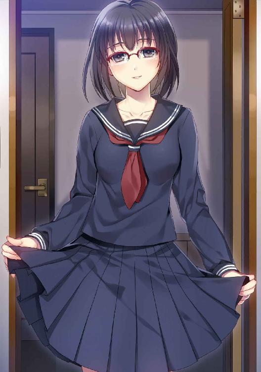
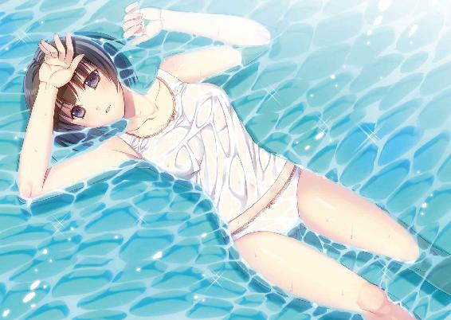
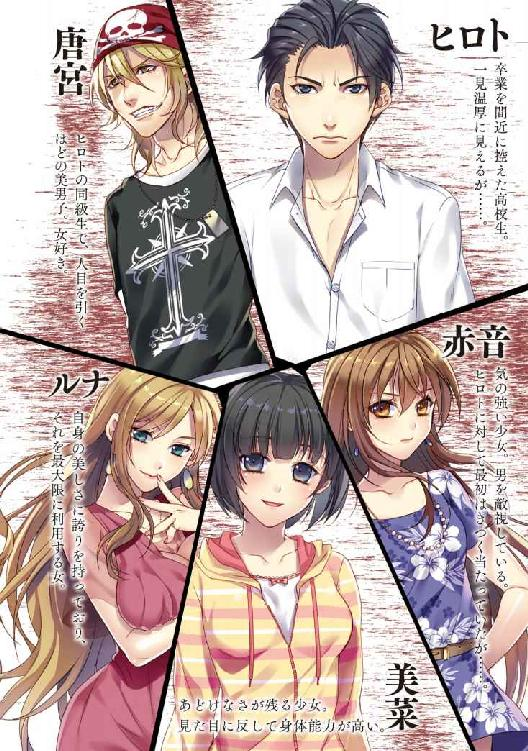
※本作品の全部あるいは一部を無断で複製・転載・配信・送信したり、ホームページ上に転載することを禁止します。本作品の内容を無断で改変、改ざん等行うことも禁止します。また、有償・無償にかかわらず本作品を第三者に譲渡することはできません。
※本作品は電子書籍配信用に再編集しております。
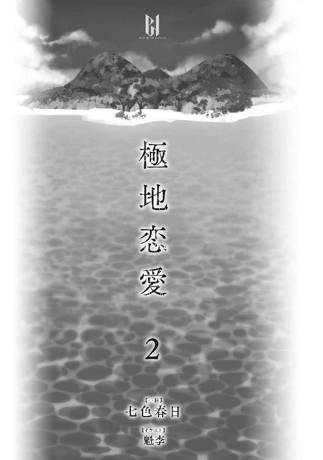
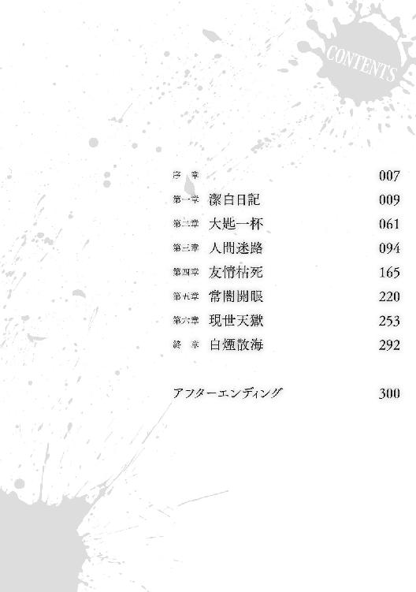
あばら屋の中にコウモリが羽音を鳴らして入ってきた。天井と壁の境目に大穴が開いているせいだ。屋根を支える梁材に逆さにぶら下がってマントのような黒翼を休め、丸く黒いつぶらな瞳でこっちを見る彼を食用にできるかどうか悩んだ。
悩んでいる時間は少なかった。真夜中ということもあって身体がだるく、狩りをしようにも身に力が入らない。
島暮らしで常に気を張り続けていた。久方ぶりのまともな屋根の下での休息のせいか俺の緊張は緩んでいる。そして日々の労働による疲労が色濃く肉体に反映され、くたびれてしまっている。
両手に持った学習ノートに意識を戻した。風雨にさらされていたせいでページがくっついていて開く度にペりぺりと音がする。文字は欠落していたり、書きなぐってあるせいで読み取りにくかったり、話の前後で文字を解読しなければならなかったが内容は概ね把握できた。
「ねえヒロト」
俺を呼ぶ声はぼんやりしていて、やや間延びしていた。寝ぼけ眼を指でこする赤音はベッドで横になりながらもあくびを押さえた。陶器皿で燃えるロウソクの炎が気になるのか、瞳が灯火に向かうと目をしきりにぱちぱちさせていた。
座机を前にしてあぐらをかいていた俺はゆっくり顔だけ向けた。赤音の目は半分ほど閉じたままで、意識はぼやけているのだろう。肩から垂れ下がったシーツは身体のたおやかなラインを明瞭に浮かびあがらせている。寝姿には多少の色気と甘えるような幼さがあって、不思議な感じがした。変な話だが子供のようでも大人の女のようでもあるように見えた。
「〝先輩〟について何かわかった......？」
「明日にしよう」
「あたしも少し気になる」
「総じてつまらない日記だったよ」
「そうなんだ......期待外れだね」
赤音の目は再び閉じられた。先輩──言い得て妙な表現ではある。無人島暮らしを先にしていた先住者の記録が俺の持つ学習ノートに刻まれている。
俺たちと同じように危機に苦しみ、衝突し、和解し──そして奈落へと転落した。
書き手は独善的で傲慢なところがある中年男だ。彼の目線で残酷な事件はつづられている。ページによっては彼の血液らしき落ちた血痕のシミらしきものもあった。
もう一度、目を通してみるとしよう。あまり気が向かないが。
何から話せばいいかわからない。記録を残したって、無駄なのはわかってる。わかっていて無駄なことをするのは馬鹿者のすることだ。
それでも、私が馬鹿になったとしても......いや、たとえ無駄かもしれなくても、仮に裁判になったとして私が無実だと証明するためにこのノートに一連の出来事の仔細を書き記すことにした。
あくまで未来、今後のためだ。保身ではなく正義のためでもある。
いや、ひたすらに真実のためか。なんでもいい。なんだっていいんだ。ただ、書いておかなければならない。言わば私の義務かもしれない。
かつて仲間であったはずの彼らはおぞましく、私のような高尚な文明人には受け入れがたい存在に変貌したのだ。
最初はそれなりにまともだったくせにいつしか、ペンキが剥がれ落ちるように倫理が抜け落ちていった。
確かに私も彼らに少なからず殺意を持っていたが、極めて理性的に行動した。
潔白なのだ。従わされたこともあったが、抵抗した。本当だ。
いや、だめだ......こんな書き方ではいけない。わかりやすく、順を追って書くべきか。
そうだ。まず、私の名前と身分を記そう。
瀬戸正之助だ。江戸時代の武家を思わせる古臭い名前だが、歳はまだ三十八歳だ。
ミクロネシア連邦における大使館の駐在員であり、官職は一等書記官だ。外務省によって派遣された外交官だ。
既婚であり、愛すべき妻に操を立てている。
どうか、そのことを疑わないで欲しい。
思い出せば──最初の始まりはミクロネシア連邦の首都パリキール。
旧日本軍の遺骨を回収すると口では言いながらも観光旅行気分できやがったぼんくら間抜けどもを無理やり顔面に貼りつけた笑顔で歓迎してやって、善意の協力者としてまる一日相手をこなし、ホテルの手配や地元民との交渉を終わらせ、役所への手続きなどでくたくたになっていた頃だ。
自分では何もしない、要求だけは立派な老人の思い出作りのために血税が垂れ流されている事実に憤りを覚えながら、私は酒場でココナッツビールをあおっていた。
戦没者遺骸遺物等引渡し協定を結んでいない太平洋諸島では日本人の遺骨は観光の道具にされている。或いは現地人によって埋葬されている。賄賂を渡して墓荒らしをする汚れ仕事など楽しくやれるわけがない。
収集しようとする度に下賎な墓泥棒と罵られるクソッタレな仕事だ。現地法にも倫理観にも反しているから当然の報いといえる。日本の常識は世界の常識ではない。パスポートに記載すべき文言だ。
現地妻とともに埋葬された未帰還日本兵などは戻りたくないからここに居たのだ。
そこをはき違えているボケ老人は真実を見ようとせず、自分の欲望が満たされないとわかると発狂する。更年期障害のおかげで脳内麻薬が炸裂し、制御不能になっている老害の手本みたいな存在たちを相手にしなければならない私は介護士の免許でも取りに行くべきだろうか。
頭がずきずきと痛んだ。こめかみをもんだ。単身赴任のストレスのせいか、私は慢性的な偏頭痛を抱えていた。
腎臓近くに小さな腫瘍が発見されたのも笑い話といえる。私の強固で丈夫な体がそれくらいで倒れるわけはない。医者は金儲けのために深刻な顔で錠剤を与えたがり、入院させたがるものだからだ。
酒をあおった。アルコールはわかりやすい救いだった。現実という地獄から酩酊という天国へと連れていってくれる天使の飲み物だ。
そしてこの天国たる小さくうらぶれた酒場は酒と香辛料の臭い、汗っかきの観光客の体臭でくそみたいに淀んでいる。宵の口となった現在、観光客でぎゅうぎゅう詰めになっちまっている。
素晴らしき南の島は人を惹きつける。スカイブルーの素晴らしい海と原始人が住むような家屋のおかげだ。電気も水道もろくに通っていない場所でなぜ人間ははしゃぎたがるのだろうか。私は日本に帰ってコンクリートの壁に囲まれた窮屈な部屋でガンガンにエアコンを効かせて環境破壊に貢献したい。それが人間らしい生活だと考えている。
テーブル席を占領した四人の中国人グループががなり立てるように我が物顔で北京語をしゃべっていた。声量を抑えるという意識がない。周囲の迷惑を考えない者たちだ。今日は厄日なのかもしれない。
くらくらするほど酔っ払ってきて、悪酔いのためか目がしょぼしょぼしてきた。帰ろうかとグラスを置くと、中国人の怒声がいきなり耳に入った。
彼は席から立ち上がり、若い女に向かって何かまくし立てていた。
二十代前半のセミロングの女は戸惑い、バッグを後ろに隠して両手で護っていた。
反射的な行動だろうが、人によってはひどい侮辱と受け取る。
女も中国人なら即座にブチ切れて反論するだろうが、残念なことに日本人のようで、言葉が理解できずに目を白黒させながら他人事のように成り行きを見守っていた。
この世界では意思表示をしない文化は嫌われる。黙認や沈黙は美徳とはならない。
女の後ろに大柄の男が一人、庇うように前に出ようか悩んでるようだった。中国人は怒ってはいるのだが、訴えかけるようにしゃべっているせいで危機感を抱けず、遠慮もあって出遅れたのだろう。
私はもめごとに対して顔をしかめているマスターに遠慮なくビールを注文した。騒動を肴にするのもよかったが一計講ずることにした。
空になったジョッキにマスターは注ごうとしたので、背後の棚にある別のジョッキを指し示した。
片手に新しいビールを持ってちどり足で現場に近づき、中国人に北京語で話しかけると彼はどうやら床に捨てたゴミを拾われたのが気に入らないようだった。
酔っ払って母国の習慣が出たのだろう。中身をほじくりだしたピーナッツの残骸がテーブルの下に散らばっていた。
日本人の女は上品なくせだったのか、性格的なものか、床のゴミを拾って片付けようとした。
店員でもないのに恥をかかされたと彼は感じたのだろう。私は『彼女はヒールにピーナッツの残骸がぶつかったから気になって拾っただけだ。悪気はない』と適当に作り話をでっちあげた。酔いのために呂律の回っていない発音で中国語は通じなかったかもしれない。中国人はしかめ面のままだった。なんとでもなれと意味もなく強気になりながらも白い泡の溢れたビールジョッキを中国人に手渡した。
彼は私には理解できない単語、恐らくは皮肉を呟いて席に座った。
矜持があるのか、私からの酒はむげにされ、断られた。
中国人の仲間も一斉に視線を外した。
私もカウンターに戻り、手渡すはずだったビールを口にした。味がろくにわからなかった。ツマミである砂糖漬けの羊肉を齧った。フルーツの芳醇な香りはあるだろうが、この酒の臭いが沁みこんだ鼻ではもうわからない。
ステージで楽団が演奏を始めた。客数がピークを迎えた合図だ。
改造されたヤシの実が球体のついた棒でぶん殴られている。その木琴に似た軽快な民族音楽のせいか、うとうとと眠くなってきた。
気配を感じて少しだけ横を向いた。助けた女が今更こちらに寄ってきていた。ツレの男との話し合いが終わったらしい。
「すいません。助かりました」
「ガイドをつけるべきだ」
「私がガイドなんです」
完全に振り向かず、若い女に向けて日本語で返すと、彼女ははにかみながら自嘲した。
英語やポリネシア語に属する言語を多少しゃべれても他の言語に関しては専門外なのは仕方ないかもしれない。
ガイドにくっついていた大柄な男が進み出てきた。
四角形の顔と筋肉に覆われた立派な体型をしていた。騒動から逃げていた臆病者の似合わないものだ。
「よかったら、なんか奢りますよ。てか、日本人ですよね？ 俺もそうなんですよ」
そりゃあ、見ればわかる。
大柄の男は馴れ馴れしい態度で私の横に腰掛けた。
愛想笑いを貼りつけ、グラスを傾けて一人で馬鹿みたいに自分のことを語り始める。
彼は黒木という名で、職業は雑誌記者だという。オカルト系娯楽雑誌の一角を担当していて、今回はムー大陸やら神話やらの取材に来たらしかった。
この手の人間は図々しく、厚顔でいて恥知らずで私の好みではなかったが──ガイドの女、立花はよく礼儀を弁えていて、ひまわりのような笑顔に好印象を持った。
私も興に乗って取りとめのないことを話し続けた。どうせ家に帰ってもやることなどなかった。
駐在員は孤独だ。国益のためとはいえ、こんな未開の地で生活するはめになっている。
私には寂しさもあったのだろう。だから、黒木の話に私は乗ってしまった。
この時はスキューバダイビングに行くような気安さだった。どうということもなく約束をかわしてしまった。
そして、これが私の一生を狂わせることになった絶望への片道切符だった。
首都パリキールから旧首都コロニアへ。
パリキールは行政施設があるだけの集落みたいなものだが、コロニアは市街地だ。それでもバナナやマンゴー、たわわに実るヤシの木がそこらじゅうに生えていて、常夏の南国ならではの楽園のごとき雰囲気を漂わせている。
ポンペイ島を円で囲む国道をジープで走っていると、斜めに垂れた海岸沿いの街路樹から伸びた小枝がフロントガラスにぶつかった。未だにステアリングを握れば火照って熱い。
季節は初夏だ。脇の草地にはザクロの花が赤く染まっていた。
脇道を通ろうとすれば黄土の未整備な道路に出くわし、たまに穴が空いていたり、水溜りができていたりする。
メインストリート以外はアスファルトが少なく、石畳に頼っている部分もあった。
コロニアの看板標識を通り過ぎれば、西洋文化圏を象徴するモダンな建物が姿を現し始める。
ベーシックな三角屋根の住宅、トタン造りのあばら家、赤煉瓦造りの古めかしい共同住宅、古い家々も残っていて、それなりに趣がある。
広がった森林はいつも通り水草の香気を漂わせている。森の臭気は人の気分をよくさせる。頭の隅でつい何をするわけでもなく森林浴をしたいと考えてしまう。そんなのんびりとした時間はじじいになってからでいいと結論が出る。
カーブを曲がってささやかな大きさのミクロネシア短期大学を通り過ぎ、エースコマーシャルセンター付近の駐車場にジープを停車した。
向かい側にある長方形の博物館──旧日本軍の残骸が展示させられているジャパニーズタンクスはミリタリーマニアには垂涎物だが、実際に見に来ているのは白人ばかりで日本人は最近は少なくなってきている。
まあここに来ずとも太平洋の島々では戦車なんてそこら中に転がっているのだが。
マニアというのは出不精だ。こんな遠い異国の地に本物の高射砲や迫撃砲など見に来る人は少ない。
センターで時間調整のための細々とした雑貨類の買い物をしていると時刻が来た。待ち合わせ場所である駐車場に集まっていた人間は五人だった。
ピンクのアロハシャツに褐色の肌の現地人。やや太り気味で愚鈍そうだった。
大柄で雑誌記者の黒木。持っていたバッグも馬鹿でかい。むき出しの筋肉が丸太のようだ。
ガイドの大学生アルバイトの立花。暑さにげんなりしている。線の細さからしてデスクワークばかりしているタイプだ。
オーバーオールのスポーツ刈りの少年。ヤンキースの野球帽を被っている。顔立ちはこの場の誰にも似ていない。
オールドミスの神経質そうな女。金に近い派手な染め髪だ。普段ならこの手合いには近づかない。
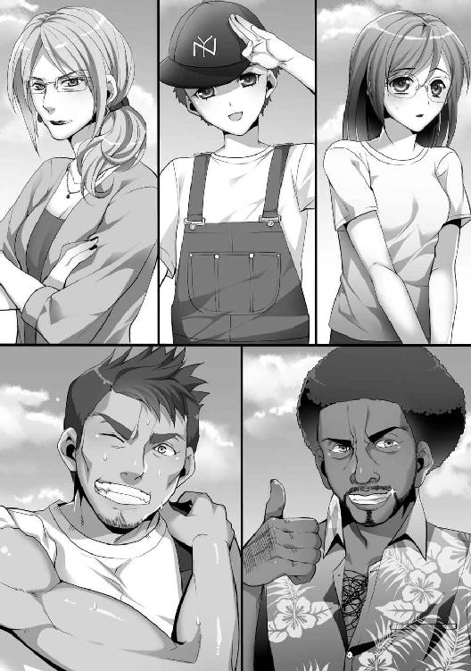
ひりつく太陽の熱波がアスファルトから陽炎を立ち昇らせている。照り返しに苦しみながらもまぶたを伏せながら近寄って声をかけた。
自己紹介をかわすと少年が新しいガイドだという。目的地の地形に詳しいらしい。
立花は見た目麗しいが、世間知らずっぽいので仕方ないだろう。
オールドミスは本当か嘘かわからないが考古学者だという。私と同じ歳ほどの女性だ。美人ではないがほっそりとして、眼鏡の奥は鋭い。人を寄せつけない刺々しい雰囲気を身にまとったまま挨拶もそこそこに沈黙している。
現地人はロドリードと名乗り、流暢な英語とキーの高い日本語を話した。
大日本帝国が統治していた頃、祖父の日本語教育の名残りが孫である彼に残ったというよくある話だ。生業の観光業のために勉強したということでもある。
ロドリードは操縦士だという。
いまいち実感が湧かなかったが本当に北東に五百キロ離れた孤島に行くらしい。ならば、マーシャル諸島に近くなるし、コスラエ州にあたるのではないだろうか。
目的地は黒潮──赤道海流を逆流するわけであり、セスナ機で行くのは悪くないアイディアであるが、ありもしないムー大陸の痕跡など探さなくてもこのポンペイには数多くの歴史的遺跡があるわけなのだが。
「ウーモ・オンブレって伝説の雪男がいるらしいんですよ」
それは煙男という意味だ。
黒木の間違いを訂正する気にもならず、頷いた。
一行は山中にあるセスナ機のもとへ向かった。乗せられたロドリードの乗用車はボルボ、こんなところまで中華マネーに染められていて苦笑が漏れる。
私はここで違和感を覚えていたのだが、無料で離島見学に連れていってもらえる立場だったので、何も言わずに同行してしまった。
気づけばよかったのだ。
ポンペイ空港の正式な滑走路を使わず、荒れた山道を使って加速し、飛び立つセスナ機の胡散臭さを......。
孤島の名前は発音しにくい名前だった。
遠い過去に居たポナペ人の大酋長が名付けた。英名では......忘れてしまった。ミーカナとか、レエタオとか、レウルとか、王朝時代の王族をもじったような不可思議な名前だった。
島には浅瀬が少なく、海溝に引っかかってるせいか潮目が荒く、多くの渦潮が島を護るように偏在していた。
土地面積があるので政府は開発しようとしたらしいが、航路から外れているし、物資や予算の関係で余裕がないのが現状だ。
そもそも休火山があって地層が不安定なのも影響しているのだろう。
せめて原住民が住み着いていればよかったのだろうが、移住を希望する者はおらず、悪魔が住み着いているとも噂されていた。
ギリギリ六人乗り込めたスクラップ寸前の飛行機は荒い気流でガタガタと揺れた。外板のつなぎ目が錆で腐食していたのが不安を呼び、私は手すりにしがみついていた。
吐き戻しそうになった時点で家に帰りたくなってきていた。プロペラの回転音もうるさく、耳障りで鼓膜を刺激してやまない。
合成皮で作られた緑色のシートも硬かった。二時間近い拷問の末に現地に降り立った時は尻骨が砕けていると思ったくらいだ。
着陸する時も最悪だった。いや、もう言うまい。
大地を踏みしめることができただけでも感謝せねば。
でこぼこの滑走路に飛行機は不恰好に降り立つと、機内は上下に激しく揺れた。ロドリードを除く全員は生きた心地はしなかった。誰もが蒼白になっている。
森を切り開いただけの空地には木造の粗末な小屋が三つ建っていて、黄色に褪色した土壁は破れて中身の竹芯が露出してしまっている。
三角や丸型の藁葺き屋根の一部は損傷が目立つ。あそこを拠点にするにしても野ざらしとそう変わらない。「一流のホテルが発見できたな」と私は小声で呟いた。
鉄条網に掲げられた建築会社の看板はずり落ちて地面に転がっていた。開発中止か、休止かはわからないが人気はない。現場は施行途中で投げ出されたようだ。
一泊二日ということで念のため寝袋を持ってきたが、ホラー事件でも起きそうな荒涼とした風情だ。
ヤンキースの野球帽を被った少年は私たちの前に出て、観光場所を案内すると言った。
日本語は流暢だ。顔立ちも日本人に近く愛嬌があって人懐っこい笑顔を見せ、かわいらしい。しかし、栄養不足なのか腕や足が細いのが気の毒だった。
小休憩と移動を繰り返しながら一同は進んだ。鬱蒼する熱帯雨林の中を歩く途中、この勤労少年にナッツチョコレートを渡した。少年は驚いたが、嬉しそうに受け取った。
その眩しい笑顔を見て、秀樹のことを思い出した。
私の息子は十二歳になったがろくに会っていない。この少年のように素直に育っていることを祈るばかりだ。
観光気分の黒木と立花は写真を取ったり、物珍しそうに白い花弁の奥に赤い斑点があるアオイ──ハイビスカスを指で突いている。オールドミスは何が気に食わないのか爪を噛んでいて、ロドリードはくまなく周辺に視線を向けていた。
少年と世間話の話題は自然と家族のことになった。
彼とロドリードは家族関係や親戚かと思ったが、まったく他人とのことで──父親を亡くして勤労しなければならない身上とのことだ。
目頭が少し熱くなった。私は歳のせいで涙もろくなっている。
少年は挙動不審なロドリードに言及した。彼は精霊を恐れていると声を潜めていった。気になったので詳しく説明を求めた。
この島に居る煙男は人を嫌う。人の罪業を嫌う。人の醜悪さを嫌う。
だからそれに背いているロドリードは精霊の怒りを買うと考えている、との話だ。
日本では子供を非行に走らせないために鬼という存在があげられる。
夜中に出歩くな、親から離れるな、盗みをするな、そんなことをすれば鬼に食べられるぞ。といった具合だ。
原始生活を楽しむ連中は信心深い。草木や巨石に向かって両手を組み合わせて祈り、香木を焚く。シワだらけの老婆が死んだ赤子のために祈る姿はある種の敬虔さすら感じさせられた。
この時、私にはロドリードがどんなマナー違反をしたのかわからなかった。わかったところでもう遅かっただろうが。
山登りは数時間ほどで終わった。足首が痛んだ。疲労がまとわりついて身体を重くさせる。
地層は変化して足場は小石だらけになって高木が消えた。見渡す景色が広がり、森林限界となった。
高地から見える島の大自然は美しい。
野生を物語る生物たちと人の手で乱れていない深緑は前人未踏の秘境を感じさせる。
足腰には厳しい道なき道を進んでいくと、人の手によって玄武岩と苦灰岩が積み重ねられた遺跡に出くわした。巨石を積みあげただけの代物であり、不均等な石塔となっている。ストーンサークルとまではいかないが人為的に造られたものには違いない。
石壁にぽつぽつと描かれている壁画を全員で観察する。色は少なく、削られてできただけの線画だ。
少年が過去に存在したらしい部族の説明をし、オールドミスが何点か質問し、壁画をそっと柔らかく撫でた。
壁画は鹿や鳥の輪郭が描かれている。狩りの成功と供養の意味合いで描かれているらしい。
紀元前に居た原始人が何を思っていたか私は興味はない。古いだけの落書きが意味を持ち、価値のあるものになっているのはわかるが。
目的地だったのか、大型公園のような高原に辿り着いた。山と山の間に存在し、全体が丸くへこんでいて巨大なボウルのようになっていた。
雨水が溜まるのか沼沢地になっており、泥水のおかげで靴が沈む。
眼下には──この釜戸の底を絨毯を広げるように飾っている水草の花が咲き乱れていた。
フキの花だ。キャベツが開いたような複葉、その中心には搾りたての牛乳を思わせる質感のある花が一輪、凛として咲いている。
その上を多くの青い蝶がひらひらと優雅に飛んでいて、白い斑点が美しい。金属か宝石のごとくきらめいている。
間近で見ようとして、少年にシャツの裾を引っ張られた。
「あの蝶は人間の扉を開きます」
少年は神妙な顔で忠告した。
鱗粉に毒性でもあるのかもしれない。
或いは翅が毒毛か。そもそも外敵に捕まった時に役立つのが鱗粉だと聞く。従うことにした。
高原の東側、なるべく土の乾いたところを歩きながら移動すると、ぽっかりと口を開いた洞窟が私たちを待ち構えていた。上部から垂れ下がった蔓草が入り口を覆うように隠していて、内部の光のあたるところは緑苔が繁茂している。
ロドリードは出入り口で待っていると言った。
彼は終始びくびくしていて、周りを見回していた。どこかにいる何かを恐れているようだった。
少年は松明を持って先導した。暗闇に光を投げかけながら油断なく左右に視線を飛ばしていた。
彼は肝が据わっている。私たちと違ってコウモリが飛び交ってもまるで動揺しない。
中は鍾乳洞だった。皮膚に絡みつく冷気には水気がたっぷり含まれ、水滴の音がところどころからした。襟元を正して、汗で胸板にくっついたワイシャツを引き剥がした。
地面から生えた槍のような先細い岩に注意するように忠告された。気をつけなければ致命傷を負うとのことだ。血が凍りつくような助言だ。
壁沿いの雨水で浸食された岩肌は土質が影響しているのか青と黄が混ざったマーブル模様で──不気味でおどろおどろしく、約百メートルほど歩いただけで最奥部についた。
大きな祭壇がそこにはあった。
そこだけトンネルのように丸くくり貫かれた歩廊が五メートルほど造られている。天井は高くなり空間は広くなった。採光窓はないが左右の壁にはかつて油を通した道なのだろう、細長いくぼみがあった。その傍に飾り柱がそびえ、中央部の床面には自然動物たちが行進する様相が刻まれていた。
奥に鎮座している石棺の基板には不可思議な象形文字が羅列されている。ふたがずれていて中身が見えたが、そこには何もなかった。
どこか神殿、または霊廟と錯覚させる荘厳な趣を醸し出している。
祭壇の背にある乾いて平らな壁画には人間が描かれているが、その身体は線だけだ。潰れた三角が横に並んだ地面の上にあぐらをかいて座っているだけだ。
両手が斜めに伸び──微かに手の中が開かれて差し指を作り──ヒビが入り、崩壊していく大地の絵を示している。
どこか禅のように意味ありげで、インパクトがあって瞠目した。
「凄いな」
黒木も感銘を受けたのか、写真をパシャパシャと撮っていた。その真横の立花は薄気味悪そうな顔で身を退いている。
なぜだかオールドミスは悪態をつき、横壁にあった石を蹴り飛ばしていた。
「スペイン人め！」
呪いの言葉が吐かれ、蹴り飛ばされる軽石は崩れて砂になった。楕円のそれはヘルメットだったものだと少年が教えてくれた。
マスケット銃の残骸や錆び朽ちた槍の穂先もあり、それはかつて訪れた簒奪者の残したものだとの説明だ。
ミクロネシアも含む──太平洋の島々の歴史はほの暗い。
スペイン、ドイツ、日本、アメリカ。統治され、統帥された。
今の自治権だって問題が起これば取りあげられることもありえる。自力で安全保障などできないからだ。
太平洋の多くの島々の管轄権は今でもアングロサクソンのものだ。経済で国を支配する新植民地主義は現代でも病魔のごとく蔓延している。
オールドミスの説明だが、ここにあった財宝や遺物はスペイン人が持ち去り、代わりに持てなくなった重いヘルメットや武器を置いていったとのことだった。
なるほど、両手が財宝でいっぱいになれば何かを捨てなければならぬだろう。
どんなものがあったのか少年に聞くと、恐らくは淡紅銀や蒼玉や水晶等の民族工芸品らしい。あくまで想像だと注釈されたが。
撮影と見学の時間は非常に長かった。
黒木によれば煙男は大発見で、オールドミスによれば歴史的遺産だそうだ。
私的には交通的に不便なこの土地では観光資源にもならないし、珍しいことは珍しいがこのような壁画などどこにでもあると思った。
私は疲労を癒すために岩石に腰掛けた。
興奮する二人を尻目に立花は少年と何かを話していた。内容はアニメだ。
対照的だったのは少年は興味はなさそうで、立花は少年を前にはしゃいでいて、どうも立場が逆だった。
「あのさ、アニマル映画って好き？ アニメとか見る？ 私結構そういうの好きなんだ」
「いいですね」
「面白いよね？ ね？ 私も好きなんだ」
「面白いです」
受け答えをする少年は真っ直ぐな対応だ。
二時間ほどで座談会が終わって入り口に戻ると、ロドリードは退屈そうに煙草をふかしていた。いや、ハッシッシだ。
こいつに明日、飛行機を操縦されるかと思うとほどよい絶望感が襲ってくる。
空のオレンジ色は黒く染まっていき、夜が薄っすらと姿を見せ始めた。
洞窟近くの平らな場所でのキャンプ、丁度よく岩清水があったので手洗いは楽だった。
夕食の携帯食料は軍糧だった。黒木がふざけて持ってきたらしいのだが、イタリア製のおかげかフリーズドライ製法のシチューが食べられた。
オールドミスのいびきさえなければ星空の中でよく眠れただろう。
誰も指摘できなかったのが悲しいところだ。
早朝。
日本なら解体途中だと判断されるだろう小型機専用滑走路に戻り、ロドリードが飛行機のエンジンをかけようとするとコクピットの計器類が誰でもひと目でわかる異常値を弾き出した。
電気配線がバチバチとスパークする炸裂音──背筋のゾッとするような轟音──それと何かが激しく空転する音。
乗り込んでいた我々は何事かと操縦席を見た。
動かない石像の真似をしているロドリードの姿がそこにあり、彼は三秒後に動くことを思い出し、緩慢な動作で額を手で押さえていた。
故障だ。
ひとまず、全員が機内から降りた。ロドリードは故障を直すといって工具類を手に持ち、格闘し始めた。
手持ちぶさたになった我々は近くの小川に案内され、水浴びをすることにした。最初は女性陣が水を浴びる。それを背にして番犬のように少年が座っていた。どうも命令されたらしかった。
私たちの順番になると黒木の粘っこい視線が水浴びをしたばかりで、濡れた髪をタオルでふいている立花に向いていることに気づいた。
黒木は立花のことが好きなのか、或いは性欲を持っている。
オールドミスとの三人で来なければ恋人同士として来たかもしれない。
いや、立花との間にそんな情愛に満ちた空気はない。彼の一方通行かもしれない。
ゆったりとした時間が流れる。ぼんやりしている内に昼になった。
木陰で青空を眺めていた私に少年が悲しそうな顔を見せて、耳打ちした。
「飛行機は直らないかもしれない。島民のよしみで黙っていたけど、彼は正式な操縦士じゃないんだ。できることはハッシッシを吸って現実逃避するだけだ」
ぎょっとして少年を見ると、彼はアラと名乗った。
自分は日本人とのハーフであり、天地神明に誓ってこれが真実だと告げた。
少年は私の目を見て、首を横に振り、胸の裡を明かしたことで満足したのか、腕組みをしてぺたんと座り込んだ。
即座に私は飛行機に疾走した。
ロドリードは座席にもたれてハッシッシを吸いながら陶酔していた。
彼は私に気づくと身を乗り出し、休憩していたと抗弁した。どうでもよかった。
ドライバーで開かれた基盤を見、メーターやレバーの裏側を覗いた。
制御基盤の配線は魚の骨のように整然としながらも絡み合っている。一瞬で配線のショートの原因がわかった。
なんてこった。これは、そんな、まさか、冗談だろう？
「クソッ......過電流でショートしてやがる」
本格的に頭を突っ込み、座席をずらし、携帯ライトで内部を照らすと素人目でも故障の原因がわかった。
人為的な配線組みかえだ。
エンジン出力は最大限になっており、高圧コンプレッサーの安全弁は蓋がされている。電流遮断器の集積回路はスプーンですくったようにえぐられ、機能不全となっている。
不自然にくくられ、一束となって絡まり、被膜が剥がれ銅線を引き出された高圧コードの先、イグニッション・コイルが油脂で湿っていた。
鼻につくすえた匂い。恐らくエンジンオイルが抜き取られて浸されている。
コードの接合部が焦げ目のある茶褐色になり、ボトル型の胴体には亀裂が入ってこんがり焼けてしまっている。
ご丁寧にもスクリューシャフトの裏側にある圧縮機にも異物が突っ込まれている。それはどこからか取った大小のボルト。
或いはジェットエンジンが調子よく回転し、見事に爆散しなかっただけよかったが──この仕掛けには粘着質な陰湿ささえ漂っている。
結論から言えばこれは時限爆弾だ──エンジンをかけようとしたらすべてが吹き飛ぶように改造されていた。
笑いそうになった。笑えなかった。
脱力し、ぐったりとシートにもたれかかって、コクピットガラスの向こうを呆然と見つめた。
ロドリードが横から「直せるのか？」と問うた。
答える気力などあるわけがない。
私の中では警鐘が鳴り響いていた。
修繕は不可能だ。素人に飛行機のジェットエンジンが直せたら苦労はしない。そもそも代替部品もないのが絶望だ。
しかし、無線機やナブスター差異修正全地球位置把握システムに電気配線を繋げれば希望はある。
そう思って幾つかの装置の回路を観察し、検討した。
無線機は──誘導コイルが切り取られ、分波器にはヒビが入り、アンプが引っこ抜かれて消失していた。
丁寧な破壊ぶりには舌を巻く。
幸い、極小だったせいか発信機は無事だった。平面のクレジットカードのようなもの。瞬間的には歓喜した。
すぐに思い直した。
我々は携帯電話を持っているのだから、これは無用に近い。
電力を保存しなければならないと理解した。全員を集め、事態を告げた。
誰もが携帯電話の電源ボタンを切った。そして円を作って話し合いがスタートした。
「ミクロネシア観光局に飛行許可書並びに航法予定書を提出したはずだ。数日か、一週間の間に沿岸警備隊によって助けはくる。問題はないだろう」
私の言葉は自分自身に言い聞かすためのものだった。
黒木はうつむき気味で青ざめて下唇を噛んでいた。
ロドリードは気まずそうに目を逸らしていた。
立花は暗い顔だった。
オールドミスは目に険を含ませてロドリードを睨んでいた。
「誰がやった？」
黒木が低い声で周囲を見回した。
この島に足止めして、喜ぶ人間などこの場にはいないように思える。メリットなどない。
全員が黙ってお互いの顔色を探っている。空気に猜疑心が混ざっている。
「我々の出立時か、夜のうちにどこかにいる島の住人がやったんじゃないのか。空白の時間がありすぎる。見張りをつければよかった」
「どうしてそんなことを？」
私が犯行時刻を告げ、立花が疑問を宙に浮かべた。
話し合ったが、解決の糸口にはならず、わからないことだらけだ。
「ちょっと。誰かさ、飛行機を直せないの？ 本当になんとかならないの？ 私は一刻も早く帰りたいのよ」
「私も最善を尽くしたが......できると思うなら、君もやってみればいい」
「言い方に気をつけてよ。偉そうに。何様のつもり？」
オールドミスはヒステリーを起こしかけている。
弱々しそうな誰かを責めることで自身の安定を得ようとする。実に性根が腐った女だ。
私はグッと堪えて、黙りこくった。
オールドミスは無能者を見るような軽蔑の視線をぶつけてきて、ツカツカと足音を立てて飛行機に向かった。
三流大学の准教授様であろうと材料もなしに回路を組みかえ、直せるはずがない。
持ってきた食料を大切に食べよう、誰かが提案した。誰かは忘れた。
夜が来て、お互いの住居エリアが決まる。
三つの小屋は等分され、一つは男性の物。一つは女性の物。一つは共有の物置場。
シーツと多段ベッドがあったのが救いだ。建築作業員用だったのだろう。
この時の私は楽観的だった。救助が遠からず訪れると思っていた。
雲行きが怪しくなってきたのは次の日、三日目の昼だった。
そろそろ果物の採取や獣の狩猟をやらなければならない段階だった。手持ちの食糧にそれほどの余分がないせいだ。
昼飯時に全員の前にして、耐えきれなくなったのか──黒木がある事情を告白した。
取材費を浮かすためにもぐりの操縦士を雇った、と。
それはロドリードで、ポンペイ空港の滑走路を使わず、役所に書類を提出しなかったのは手数料を取られるのが嫌だったと。
つまり、我々は誰にも知られずにこの場所に飛び立ったことになる。これがケチの代償だ。私は黒木を強く呪ったが、オールドミスは激昂し、素早い行動に出た。
手近にあった木板で思い切り黒木の頭を殴りつけたのだ。
黒木も黙っていなかった。オールドミスにタックルし、吹き飛ばした。
彼は大学生時代はラグビー部で、女に舐められて大人しくしているような性格ではなかった。
不謹慎だが、私は胸がすくのを感じた。紳士でいるよりも悪漢でいる方が賢明な生き方かもしれないとさえ思った。
空気が凍っている時──ロドリードもまた残酷な事実を告白した。
あの飛行機は自分のものではなく、知り合いから無断で借りたものだと。
これは彼が操縦士としての能力は低く、トラブルに対処する力などないという証明だ。
「......どうなるんですか、私たち？」
立花が嘆くように呟いた。
私はこの淀みきった空気を壊したくて口を開く。
「私は大使館職員だ。つまり、名士だ。日本政府からミクロネシア政府に要請が行き、沿岸警備隊が通常よりも長い時間で捜索活動を行うはずだ。彼の国とは齟齬もあるが友好関係は上々だ。日系大統領も存在していた。同盟国であるアメリカ軍も力になってくれるかもしれない」
この慰めは幾分かの希望になったようで、全員は納得しないまでも落ち着きを取り戻した。
携帯の電源を昼の十二時から一時までつけ、消す。
なんらかのシグナルになると思ったからだ。希望は捨ててはいけない。
スコールが降ってくる。気温が一気に下降する。冷雨が家屋まで入ってくる。明日には屋根を修復しよう。
そうして、三日目が終わる。
時間が流れていく。一週間目となった。
水洗いのせいかシャツの首元のシミが黒くなり、手先が荒れ、足裏に水疱ができ、虫に刺され皮膚は腫れ、空腹で飢餓を呼ぶ。
衣服と日用雑貨を詰め込んだボストンバッグを持ってきた他の者と違い、私はほとんど着の身着のままで来てしまったこともある。清潔な衣服が欲しかったが、黒木の服はだぼだぼで、過分にある女性陣の服はきつすぎる。
川魚や果物を採って食べていくのは思った以上にストレスがかかる。香辛料や調味料に舌が慣れすぎている。
満たされぬ欲求が頭痛を呼ぶ。酒をかっ食らって眠りたい。戦時中のようにコンパスに充填されているアルコールを飲んでしまおうかとも考えたが、この馬鹿げたアイディアはすぐに打ち消した。
我々遭難者の中で一番元気のいい勤労少年は食料の調達では頭角を現している。
キャッサバと鯰をバナナの大葉で包み、二つを土に埋めてその上で火を焚き──蒸して昼飯の食卓を彩った。
彼は女性陣の小屋を寝床としていて、哀れなことに女性服を着せられていた。
少年の赤いワンピース姿はシュールだったが、美少年で線が細く華奢なせいか不思議と似合っていた。本人は毛ほども気にしていない。替えの服があるだけありがたい、とのことだ。
キャッサバの根茎からタピオカを作り、皆には明日には米のようにして食べさせてくれると陽気に言った。
擬似的なものだが、助かる話である。
疲れた顔で各自、フォークを動かしていると──この島には船舶を係留するための埠頭があると少年は告げた。
「どうしてもっと早く教えてくれなかったんだ」
「道が険しく。切り立った崖も通る。僕と何人かで行くべきです」
それはつまり、道中が危険だということだ。
質問した黒木は口をもごもごとさせていた。危険は誰だって嫌だ。
くじ引きで決めることにした。色つきの棒を引き当てて向かうことになったのは私と立花。申しわけないが、少年も案内に必要だった。
昼飯が終わり、一時間経った後に出発。
鬱蒼とした藪の中を強引に進む。柔らかくのけやすい植物をかき分ける。踏みしめるのは芽吹く青々とした糸杉、へこんだくぼみに整列している縁石は人為的に配置されたものだろう。それは道幅を示していて、かつては山道であった名残りかもしれない。
熱帯雨林では人が通らず、半年も経てば道は草で覆われて道でなくなる。
「アラちゃんのお父さんとお母さん心配してるよね？ 大丈夫？」
「半年前に父さんは死にました。母さんはどこにいるかわかりません」
「ごめん」
返答に立花は萎縮した。
少年は淡々としていて、少しも痛痒は感じていないように見えた。
それでも立花へのフォローのためかもう一言あった。
「だから僕は自立し、懸命に働かねばなりません」
「十五なのにしっかりしてるね。ていうか、私も雇われなんだけどね......あー、こんな仕事請けるんじゃなかった。黒木さん気持ち悪いし、枝野教授の頼みなんてかわせばよかったなぁー」
立花は髪を摘んで、無造作に髪先のキューティクルを確かめる。
嫌がっていたが、彼女が黒木に口説かれているシーンはよく見かける。
強引ではなかったが、ここのところ食い下がるようになっている。
治安機構がないこんな島では誰もがいつ暴漢と化すかわからない。ましてや、どこかに得体も知れない民族がいるかもしれないのだ。
枝野──オールドミスと立花はなんらかの関係があるようで、教授と教え子なのかもしれない。
十五分ほど歩いたか、不意に少年は足を止めた。
視線を追うと崖というよりも、幅四メートルほどの谷底がそこにあった。
著しく傾斜のある細かな段丘、壁沿いにある一段目の小道を通るようだ。二段目に落ちたら骨折は免れないほど距離がある。
四段目から先は見えず、底には太陽が届いていない。
転落防止用のロープが金具によって留められているが弛緩してる箇所もある。うっかり足を踏み外したり、ロープを過信すれば転がり落ちて奈落行きだ。
「ひぃいい。アラちゃん。手を握っていい？」
「嫌です」
「私も嫌だ」
中腰になって腰が引けている立花は置いていくことにした。
私も当然、恐怖していたが──どういうわけか、私は少年の父親のような気分になっていた。不思議と保護しなければならないという意識が働いている。
大人として、なるべく醜態を見せたくないという見栄もある。
ついていき、埠頭に辿り着いた時には息も絶え絶えだった。
その場所はごつごつとした岩礁地帯であり、強風のせいか高波が押し寄せていた。
桟橋は見る影もなく破壊されている。木材を巨人が粉々にして放り投げたらこんな惨状になるだろう。
岩盤を固定する打ちっぱなしのコンクリートは十平方メートルくらいはあるが波でやられて崩れかけている。
申しわけ程度にコンクリートから生えた係留柱には千切れたロープがあった。海面に漂って途中で海底へと消えている。
「定期便は？」
「ありません」
「巡回船は？」
「ないと思います」
「我々はここから船を作って脱出すべきかな？ 君はどう思う？」
「僕はこの島にいる精霊が恐ろしいです。皆、息を潜めて静かに生活すればいいと思います。でも、大人たちにはそういうことが難しいということもわかっています」
少年は波打ち際の白い泡を見ながら顔を曇らせていた。
ひょっとするとだが、彼はこれから起こる我々の狂態を──漠然とだが、肌身で感じていたのかもしれない。
今となっては、すべては闇の中だが。
十日目の夜。
尿意をもよおし、トイレに行こうと川の方に向かった時だった。
闇夜を切り裂く嬌声がどこから聞こえた。
木立の隙間をのぞくと枝野と黒木が交接していた。
枝野は情婦のように尻を突き出し、樹木にもたれかかっており、黒木は後ろから肉棒を挿しこんでいた。
黒木はがっちりと枝野の腰を両手でつかみ、獣のような唸り声をあげ、その尻を執拗に股間で叩き続けている。
白い湯気が見えそうなほど荒い呼吸が交差し、快楽のあえぎ声が混じる。
暗がりの中で見えた黒木の目は血走っていて、好きな女を抱くというよりも、欲望を排泄するだけの顔のように見えた。
一方、枝野はポニーの横髪を顔に貼りつけ、半開きの口からだらしなくよだれを垂らし、精一杯男を悦ばせようと左右に尻を振っていた。
膣口から放そうとせず、深く咥えこむために足首をぴんと伸ばしたり、ひねったりもする。
二人は喧嘩腰で話しているのをよく見たが融和したらしく──危機意識もあってか、男女の情も多少は重なったようだった。
葉陰にロドリードが隠れているのが見えた。
彼は振り向き、私に気づくとぎょっとしたが、得心したように──にたりとした。
四十近い女と二十代後半の男のセックスはちぐはぐだったが、見ている分には情欲をかき立てる。
私は悶々としながら夜を過ごした。
十三日目の朝。
この朝のことは正直に言えば書きたくない。
罪の意識にさいなまれ、苦しむからだ。今も頭部をカナヅチでノックされてるような頭痛がしている。
いや......真実のために書くことにする。
一つの事件が起きた──立花がロドリードに強姦されたのだ。
彼女は朝起きるなりぐったりと脱力していたが、花火が着火したように突如、半狂乱になってロドリードを罵倒した。
憎しみを込めて指差し、大音量で叫んでいた。
事情を理解した黒木が激怒してロドリードに詰め寄り、襟首をつかんで小屋の壁まで勢いよく引っ張って押しつけた。
「てめえっ！ 自分が何をやったかわかってんだろうなっ！」
「私はそんなことやっていないっ！ その女の頭がおかしいだけだっ！」
立花は鼻声で目隠しをされ、口に布を突っ込まれ、イントネーションのおかしい日本語とくせのあるポリネシア語──ロドリードの声を聞いたと言う。
用を足している最中に押し倒され、刃物らしきもので脅された。
顔は見れなかったが、ロドリード以外にはありえないとのことだ。
実際、少年では立花を封じ込める力はない。黒木はポリネシア語を話せない。私も身に覚えがない。
つまり、どこかに隠れている島の住人以外ではこの場ではロドリード以外ありえないのだ。
「......ピンクのアロハシャツが見えました」
これが決定打だった。
見苦しい弁明を続けるロドリードの顔を黒木が殴打した。
倒れたところで馬乗りになって殴り続ける。容赦なくロドリードの顔を変形させようとしている。鼻血が噴き出し、顔中が真っ赤に染まっていく。
しばらくの間は黒木の嫉妬心が暴力となって変換されていたが、その動きはパァンという乾いた音でストップした。
「ああ、えっ......うっ、嘘......だろ？」
驚愕で満ちた呟きを漏らした黒木はよろけ、どさりとあっけなく倒れた。
硝煙が噴き出た拳銃をロドリードが持っていた。
銃口から発射された弾は黒木の右太ももを穿ち、貫いたのだ。どくどくとどす黒い鮮血が芝に広がっていく。
「ふざけやがって......お前、こっちに来い」
ロドリードは血だらけの腫れぼったい顔を犬のようにぶるると振り、立花の腕をつかんだ。
抵抗する彼女の顔を容赦なく銃尻でぶん殴った。立花は昏倒しかけている。
小屋に引きずりこもうとしていた。黒木が制止しようとロドリードの足元に食いついたが、傷口を蹴られ、悶絶して転がった。
「ちょっと、男でしょ！ 助けなさいよ！」
枝野が私に向かって叫んだ。
私は身動きできなかった。人を撃つなんて、映画の中だけだと思っていた。
辺りに立ち込め始めた血の臭いが全身麻酔のように機能したのだ。
小屋から衣服が破れる音がした。怒りと悲しみが混ざった立花の悲鳴がした。激痛に苦しむ黒木の泣き声がした。乱暴に尻肉を打つ音がした。助けを求める声が鼓膜に届いていた。
私は何もできず、ただ立っていた。
十四日目の朝。
ロドリードは王様のように振る舞っていた。
権威の象徴のように銃を見せびらかし、小屋に立花と枝野を放り込み、脅し、殴りつけ、存分に犯していた。
口元は終始緩んでいて、血走った目つきは常軌を逸していた。甲高い声で私に食料を集めるように命令した。
私は従うことしかできなかった。無気力だった。あんなひどい真似が人間にできるとは考えていなかった。邪悪な力で豹変してしまったかのようだった。
密林を歩きながらフルーツを集めていると、うさぎを片手に持った少年に出くわした。
彼は少年特有の強がりなのか単独行動を好むため、食事時や暇つぶしのオリエンテーション以外では滅多に会わない。
そもそも彼は最初、女性陣とともに寝ていたが枝野のいびきに耐えきれずに飛行機の機内で過ごしている。鋼鉄に包まれた機内は防水性は認めるが、太陽にあぶられて蒸し暑いので誰も寝たがらない場所だ。
ひとまず、事情を話すと少年は厳しい顔つきに変化した。
「どうします？」
「わからない......助けさえ、くればいいんだが」
「誰も助けてくれなければ？」
「......私も、死にたくはないんだ。銃で撃たれたら、きっとこの島では助からない」
「立花さんは僕が助けます」
「よせ、やめるんだ！ 大人しくしていればいい。君は隠れてるんだ......いいかね？ 自分のことだけを考えるんだ」
慌てて細い両肩をつかんで制止した。
私は少年にまでひどい目に遭って欲しくなかった。
頭の中で息子の──秀樹の顔がちらついていた。
立花には気の毒だが、これ以上の犠牲は出て欲しくなかった。
彼女らは性交をしいられているだけで命の危険はまだない。救助隊さえ来れば大丈夫なんだ、と説得した。
「少し待っていてください」
少年は表情を変えずにそれだけ言い残すと、森の中を歩いていった。
私は膝を折り曲げてふくらはぎを地面につけ、へたりこんで目を閉じた。周囲の鳥の声がやたらうるさく聞こえていた。
渦を巻く思考──自己弁護の嵐だった。
なぜ、出会って二週間ばかりの人間のために銃を持った暴漢と戦わなければならない？
か弱い女性だからか？ 男性はすべからく女性のために命をかけなければならないのか？
私はお世辞にも色男ではなく──鼻は潰れ、唇は分厚く、目の形も悪い。
結婚できたのだって見合い結婚だった。
中年太りのみっともないビール腹だし、頭髪もはげかけている。悲しいほど短足でもある。
命をかけても絶対にロマンスなど始まらない。
どうせ、なぜ即座に助けなかったのかと弾劾されるだけだ。
利己意識だと笑うが笑え。
一つしかない命が惜しいのだ。注射針で刺されるような苦しい痛みは恐ろしいのだ。自分の血を見るのが怖いのだ。
犬死だとわかっていて栄光なき戦いなどしたくないのだ......。
「お待たせしました」
時間にしてどのくらい悩んでいたか忘れたが、少年がマンゴーを一つ、ぽーん、ぽーんと中空に放り投げながら戻ってきた。
オーバーオールのポケットから彼岸花が顔を出していた。赤い太陽のように放射線状に咲く花は色鮮やかだ。
少年は彼岸花を握り潰し、その汁をマンゴーに塗りたくった。
私はぼんやりとその様子を眺めていたが──意図を察して麻酔から醒めた患者のように目を開いた。
汁の成分はアルカロイド──土壌動物すら逃げ出す毒だ。
地盤沈下の回避のために日本中の丘に植えられている毒草でもあった。
「僕らはこれを矢につけ、動物を射るために使っていました。ロドリードさんは動物に成り下がりました」
「殺すのか？」
「殺すほどの毒にはなりません。罰を与えるのです。僕の曽祖父は日本の男は死を恐れない勇猛果敢な戦士だと言ってました。瀬戸さんは戦士ではないのですか？」
「私は昔から、喧嘩や暴力沙汰は嫌いなんだ。スポーツも満足にできず運動音痴なんだ。この太った腹を見ればわかるだろう」
「僕は力なく同じ歳の子供よりも小さいです。ずっとそのことで馬鹿にされます。でも、心は戦士なのです。瀬戸さんも心だけは戦士であるべきなのです」
少年は私にマンゴーを突き出した。
怖々と手を伸ばし、受け取った。
べたべたの汁が手の中にしたたったが、黄色の皮は乾き始めていた。
「こういうのです。うさぎを獲りました。鍋を作る間、このマンゴーを食べて待っていてください、と」
少年は内緒話をするように顔を近づけ、人指し指を立てた。
瞳は純粋で、されども力強い意志の力があった。
私にはないものであり、宝石に見劣りしないほど美しかった。
夕方のことだった。
昼飯を頼んだつもりで痺れを切らしているだろうロドリードの小屋に向かい、ノックした後にドアを開けた。
中の様子を見ようと思っていたが出会い頭に鼻面を拳で殴打された。いきなりの仕打ちに驚いてのけ反った。
心の底から蔑んだ顔で私を見るとロドリードはうすのろ、と吐き捨ててきた。怯えた演技をしなくても私の喉はひきつり悲鳴が漏れた。
私の手の中のマンゴーを見つけ、乱暴にひったくられる。
もう一つの手にあるうさぎの死体を見てロドリードは鷹揚に顎を下ろした。横暴な主人が奴隷の働きに満足する仕草だ。
これがなかったら脳天をぶち抜いていたと言った。
私は痛む顔を押さえながら小屋を後にした。鼻血が噴き出ていて、粘膜から伝わる苦痛で涙がこぼれている。
やり取りの最中に飛び移ったのだろう──小屋の上に少年が乗っていた。
藁葺きの三角屋根を慎重に移動し、棍棒を持って出入り口を見据えていた。
激しい憎しみが私の中で燃えていた。それ同時に弱虫根性も現れていた。
私も小柄だったせいで高校の時はクラスメートにイジメを受けたのだ。心根にはすぐに逃げ出すくせがついていた。
教師や目上の者にすがってなんとかしてきた。それが社会的に正しいはずだと、今でもそう思っていたから急場で動けない。
一時間かそこらだったか。ロドリードは目頭を押さえながら扉を開けて外に出てきた。水でも飲もうと考えていたのだろうか、ひどく汗をかいているようだった。
機を窺っていた少年がここぞとばかりに飛翔した。ロドリードの後ろ首に全体重を乗せた棍棒がクリーンヒットした。
打ちすえられたロドリードは目をむいて倒れた。首に手を回して苦痛にあえぎ、もがいている。
少年はロドリードが握っていたリボルバーを蹴り飛ばした。地面に這いつくばっているロドリードの背中をもう一発棍棒でぶん殴った。悲鳴があがった。ロドリードは身体を丸めて防御の姿勢に入っている。
ふと思いついたのか少年は銃に目を向けた。歩み寄って拾いあげ、弾数をチェックし、シリンダーを回転させて撃鉄を起こした。
そして、ロドリードの頭に狙いを定めた。
「やめろっ！」
私は叫んだ。
少年は私に視線を移した。
冷酷な目つきだった。情はなく無心でもあった。彼は紛れもなく、撃つ気だった。殺すつもりだった。
「すいません。屋根の隙間から中の様子が見えて、怒りを覚えたのです」
言葉尻まで落ち着きを払い冷静だったので──そんな風には見えなかったが、少年は銃を私に向かって放り投げた。
「瀬戸さんが持っていてください。僕が二人を解放してきます。動けないと思いますが、ロドリードさんを狙っておいてください」
「あ、ああ......」
おっかなびっくり銃口を向ける。
ロドリードは股間から排泄物を垂れ流していた。とりとめのないくぐもった声を発していた。
開いた扉から中の様子が見えた。
立花は猿轡を噛まされ、全裸になっていて身体を丸められ、膝と胸をくっつけ、荒縄で手足を縛られ、尻を突き出すポーズで固定されていた。
でん部には様々な液体が飛び散って汚れていた。ロープの結び目を外す少年を救いの神のような顔で見ていた。
射殺は仕方なく思えた。
十五日目の朝。
いつも集まる野営地の広場で、枝野が私を弾劾した。
ロドリードと同様に木に縛って食料も水も与えない刑に処するべきだと訴えた。
彼女は私の頬を通算で二十回以上、ビンタした。抵抗する暇もなかった。
「私たちを見殺しにしたのよっ！ 信じられないっ！ アンタなんか死ねばいいのよっ！」
痛烈な批判が続いた。私が助ける手伝いをするまで何もしなかったことが罪らしい。
助けを求めて立花を見ると、彼女もふいっと顔を逸らし、少年の背に抱きついた。
重いのか立花に迷惑そうな視線を向けた後、少年は私を見つめた。
軽蔑の色はなかったが、どう答えるか見ているようでもあった。
「私も、助けに行った......本当だ」
「へえっ!? その子しか動いてなかったし、食料を差し入れて奴隷になってるだけだったじゃない！」
「瀬戸さんの言葉は事実です。毒を塗った果物を食べさせたんです。だから、僕でも倒せただけです」
少年は手柄を独り占めにしなかった。
おかげで私は免責されたが後味は悪かった。最悪だった。改めて理解することもあった。
やはり、人を助けても私は報われない。
この外見のせいか、或いは行動の遅れのせいか。意気地のないせいか。
勇気を出して人助けをしても──こんな風に悪人のように扱われるだけだ。
女性二人は私を汚物のように見ていて、この日からほとんど雑談をかわすことがなくなった。
必要に思えることだけを端的に話し、すぐにどこかへ消えて距離を取られるようになった。
愛想笑いもなく、声をかけられることもない。
仮に少年が失敗したらロドリードに私は殺されていただろう。
それなのに、私はロドリードと同様に犯罪者として見られているのだ。
私はこの惨めな境遇を嘆き、夜に泣くようになった。泣いてストレスを逃そうとした。
やり場のない悲憤だけが心に巻きついている。
二十日目の朝。
一人小屋で休んでいた黒木がよろけながらも立ち上がれるようになった。
樹木に拘束され、水だけをたまに飲まされるだけのぐったりしているロドリードを見つけると猛然と走り出し、サッカーボールを蹴るように顎先を蹴った。
「許してくれっ！」
「うるせえっ！ ぶっ殺してやるっ！」
ロドリードは血痰と欠けた歯を吐き出した。
黒木はもう一発、腹にお見舞いした後によろけて大地に転がった。太ももからの激痛によって体勢を崩したのだ。
黒木の脂肪と筋肉を傷つけた弾丸は内部にはなく、飛行機に備えつけられた救急箱から取り出した包帯が巻かれていた。
抗生物質の瓶があったことも大きい。
救急箱に注射器があるのは過保護な我が祖国では考えられない。
「ゆっ、許してくれ......こっ、殺さないでくれ」
「あれはてめえの飛行機だって言ったじゃねえかよ！ どれもこれもてめえのせいだっ！ 俺がこんな目に遭ってるのはてめえのせいだっ！」
「む、息子を大学に行かせたかっただけなんだっ！ 少しでも金が必要だったんだっ！」
「息子がいるくせに俺の女を犯したのかよ。死んじまえよクソ野郎が」
ロドリードは叫んだ。絶叫だった。言葉はなんの意味も持たなかった。
その声が人を集めた。立花と枝野だった。少年の姿は相変わらずない。
常に食料を集めに行ってくれてるので彼は好きにさせておいた方がいいとの判断だ。
前に何をしているのか、と尋ねたことがあったが返ってきたのは「精霊が訪れないように呪いを施している」とのことだった。
信仰については議論だけ無駄なので私も放置している。
「ほっときなさいよ」
枝野が黒木の肩にしなだれかかったが、それを無視して立花の前に立ち、気遣うような言葉を何点か与えた。
立花は苦笑いを浮かべ、すっと風に揺れる紅葉のごとく立ち去った。
黒木はその背を追い──枝野は両腰に手をあて、鼻を中心にシワを集めていた。
憤然としてロドリードの膝を蹴り飛ばし、八つ当たりした。
枝野は私を見て「見世物じゃないのよ」と一言呟き、踵を返して小屋に向かった。
「わ、わ、わ、私を放してくれ......たっ、頼む......こ、のままでは、死んで、しまう」
ロドリードが痘痕だらけの顔で懇願した。
哀れだったが、無視した。情けをかけたら私まで同じ目に遭うだろう。
私には何もできず、何もするつもりはない。
二十二日目の朝。
ロドリードが死んだ......今でも思い出すだけで全身の毛が逆立つ。
餓死や枯死したわけではない。もっと恐ろしいことだった。
彼は首と両手を奪われていた。胴体と足は残っていたが、その他の部分が綺麗に消失していた。
切断面から見える脊椎や血管からは血液が出きっており、陽射しによって死体からは蒸気が浮かび、異様な死臭が漂っていた。
我々は彫像のように固まってその死体を遠巻きに眺めた。
自然と黒木に視線が集まったが──彼は弁解するように両手を開いて否定した。
「おっ、俺じゃねえよ。殺したいとは思ったけど、こんなことしねえ。第一、ほっとけば死んだだろ？」
黒木の言う通りだった。
我々のうち、誰かがロドリードを殺すにしても放っておけばいいのだ。ロドリードは水ばかりのせいで痩せ細っていたし、いずれにしろ遠からず絶命するかもしれなかった。
食料を与えることはあったが、それはもっぱら心優しい少年が気まぐれでやっていただけだ。
彼を弁護する人間はここにはいない。
「この土地を護る......煙男の仕業です。彼は人間の邪悪さを食べるとも言われています。僕らは皆、穢れた人間になってしまいました」
少年は厳かに呟いた。
穢れた人間──ロドリードの罪を許さず、他人を受け入れず、それぞれが反目し、目の敵にしている。
我々の関係が腐臭を放っているのは確かだった。
「ガキが馬鹿を言うなよ。壁画の中にいるやつがどうやって外に出てくるんだ？ えっ？」
「僕は精霊を恐れます。僕は彼の手にかかって死にたくないからです。彼によって与えられる苦痛はこの世の何よりも恐ろしく、死した後も地獄の中でももっとも深いところへ運ばれると言い伝えられています。僕は皆さんともう関わらないことにします。もうお金も要りません。どうか木穴に隠れるリスのように大人しく生きてください」
「ちょ、ま、待ってっ！ アラちゃん」
自身を戦士だと言い、気丈だった少年は歳相応に肩をぶるりと震わせ、逃げるように早足で自分の住居たる飛行機に向かった。
荷物をまとめる準備をしているのか、ガタゴトと音がして、立花が大声で説得していた。
ロドリードは生きながら刻まれたのだろうか。
彼が死んだのは夜だったが、叫び声はなかった。肉を断つ音すらも。
文字通り、煙のように現れて殺人を行い、音を立てずに頭部と両手を持ち去った。
この事実は誰もがわかっていて、我々は籠の中の鳥なのだと実感した。
二十三日目の昼。
ロドリードを埋めた。私が埋めてやった。供養のためではなく臭いが嫌だったからだ。人間の腐る臭いというものはたまらない。これを最後に終生かぎたくないものだ。
かなりの力仕事だったので疲れた。スコップはあったが肩がこった。
少年は渋々だが、ある程度には我々のグループとともに行動すると言った。
その代わり、立花が自分の傍にあまり寄らないで欲しいことと、この島から脱出するために船を作ることを要求してきた。
救助はあてにならないのは我々も薄々ながら理解し始めた。
「名士様のご威光は大層役に立ってるな」
黒木が皮肉をぶつけてくる。私が黙っていると、枝野もそれに続いて似たような皮肉を言った。
勢いが増し、罵詈雑言の嵐が飛んでくる。このノートに書く気も起きないほどのひどいあてこすりの羅列だった。
少年は私をジッと見ていた。私は目を逸らした。
懐の中にあるリボルバーを手にし、黒木と枝野の顔面を破壊する妄想にふける。
私は手を汚したくなかった。
人を殺せば檻の中に入ることになる。一時の感情に身を任せるなど馬鹿げたことだ。
誰だって憎い人間をアスファルトに叩きつけ、頭を踏みつけ、その身を切り裂いてやりたいと思うことはある。
だが、実際に行ってしまうのは人道から外れる。
蛮行に興じれば、家族や友人を失うことになる。人殺しの犯罪者など社会からは当然、忌み嫌われる。
法治国家に属するということはそういうことなのだ。私は文明人であり、理性的な人間でいたかった。
「アラちゃんは私のこと嫌い？」
「嫌いというよりも、面倒臭いんです。もうガイドではないので、僕に近寄らないでください」
「そんな......ひどい」
少年は残酷だが正直だった。
望めば立花とのロマンスがあっただろうが、彼は心底、辟易しているようだった。
──美女よりも自由の方が欲しいのだろう。
私は少なからず嫉妬したが、同時にある考えが浮かんだ。
彼はもしかしたら立花とくっつくことで派閥を作り、争いの輪に入ることを恐れていたのかもしれない。
黒木は相変わらず立花に声をかけ続けているし、枝野は黒木に肉体で奉仕し、私は愚かなことに誰かの優しさを求めていた。
孤独は辛い。
食べ物を分けてもらえず、窮地を助けてもらえず、無視されて生きることはひたすらに辛いのだ。
三十日目。
この暗黒の島に幽閉されてから一ヵ月が経った。
どんなことがあっても、我々は生きていかねばならない。
薪を補給するため、海岸沿いでイカダを作るため、住居を補強するために樹木を切り倒す。
手足の筋肉痛に苦しめられ、爪が割れ、しくしくと関節が痛み、歩くのも億劫になってきた。
それでも、エネルギーを作り出す糧を集め、怪我や病魔に負けず、自由への船を作るのだ。
だが──また事件が起こった。
立花が小屋から出てこないのだ。いや、黒木がそうした。
殺人鬼から護るとの名目のもと、彼女を言いくるめて狭い空間に束縛し、閉じ込めたのだ。
小屋の中で起こってることはロドリードの蛮行と似たようなものだろう。あの時と違うのは叫び声はしていない。ついついのぞき見てしまったがあれは和姦だ。
この頃、私は立花のことはどうでもよくなっていた。
少年だけが私に話しかけてくれて、たまに木の実や魚をくれ、獣の肉を分け与えてくれる存在だった。
口には出さないが身勝手なことに息子のように思っていた。
もっとも、私とは人格のデキが違い能力も違う。
彼は人を嫌うことが苦手だとも言っていた。私には理解できない善性の感情だった。
「君はまた、立花を助けるかね？」
「いいえ......助けて欲しいのか、と聞きましたが断られました」
鳥がチチチ、と鳴く密林の中で──角ばった岩に座る少年はオーク材で短槍を作成していた。
幅二センチはあるゴムラバーを尾先に結びつけ、引っ張ってから手を開いて放すと穂先が反動で飛び出るギミック。
飛行機の外板を剥がして作った歪んだ刃、鋭利な武器ではある。
「煙男はまだ我々を狙っているのか？」
「狙っているのではありません。待っているのです。過ちを犯すのを......人の弱味をつけこみ、人を傷つけ、人を殺すのを」
「ふぅむ。ずいぶん、道義的な存在なんだな」
「壁画であるように崇拝の対象だったんでしょう。死神のように灰色のローブで全身を包み、煙のごとく消え、ほとんど音もなく動き、細く長い身体の中はぽっかりとした空洞だと言い伝えられています」
ゾッとする話だ。
しかしながら何千年、何百年も生きる人間などこの世にいるはずがない。
また、私は精霊など信じない。
この島に恐ろしい敵がいることは信じているが。
「人間は争うものだ。勉強でも、スポーツでも、恋愛でも、地位でも、名誉でも、給料でもだ。煙男はそのことをわかっているのか？」
「彼は人の心を見ます。獲物だと思えば襲い、そうでなければただ佇んでいるだけです」
「どこに？」
「例えば、そこに居たようです」
少年の視線の先──足跡があった。
波状のスニーカー靴の跡。黒木のものではないだろうか。神秘性からは程遠い。
それに死神が足跡を残すとは間抜けすぎる。
「私は正直、黒木がロドリードをやったんじゃないかと思ってる。一息に斧で切り落としたんだ。あいつを倒せば平穏がくる」
それが一番、納得のいく答えだった。
最近では私は黒木が立花をえるために飛行機を壊したのではないかとも思っている。
やつはろくに仕事をしないし、私にばかり働かせる。くだらない命令をしてくる。
しかし、黒木は恐ろしい。背の高さが違うし、体格も違う。身をすくませる威圧感がある。
私は小男で、黒木は大男だ。腕力が違いすぎる。
「瀬戸さんは僕に黒木さんを倒して欲しいんですか？」
「違う。ただ......いや、そうなのかもしれない。あいつは立花を犯していて、やりたいようにやっている。私はあいつに小突かれ、蹴られ、今もこうして食べ物を集めさせられている。雑用ばかり言いつけられる」
「戦えばいいのです。銃はどうしました」
「それが......寝てる隙に、なくなっていたんだ。油断していた。すまない」
「瀬戸さんは争いが嫌いなんですね」
不意に少年が顔をあげた。
曇り空から雷鳴の轟きがした。カリフラワーのような形の雲の裂け目に黄色の稲光が幾筋もたなびいている。ポトポトと雨粒が落ち、顔を濡らしていく。
やがてバケツをひっくり返したようなスコールとなり、雨滴は全身を余すところなく叩いてきた。痛みすら感じるほどの雨量になる。
あっという間に濡れねずみになってしまった。服を乾かさなければならないのが大変だ。少年は雨を嫌ってか大木の庇の下に入っていた。いつの間に移動したのかわからなかったが、私も苦笑しながらその場所に行こうとすると。
聞き慣れた銃声がした。
私はびくっと震えて飛び上がったが、少年は銃声の方を少しばかり見つめ、興味を失くして槍の調子を確かめる。
「銃声がしたぞ」
「また騒ぎですね。僕は大人が嫌いになりそうです」
「私も人間が嫌いになってきてる。どうだ。私とともに逃げないか？」
「二人で別行動をすれば皆、疑心暗鬼になるでしょう。きっと彼らはふとしたことで、僕らを襲うようになります。僕は僕一人だから害がないと思ってもらえるのです」
少年は賢明だった。
食料が不足した時、相手が自分よりもよいものを持っていた時、狙っていた獲物が重なった時。
誰かに嫉妬し、誰かに害をなそうとするのが人間だ。
何かの拍子に黒木は私たちを敵と思い、脅威を排除しにかかる可能性は捨てきれない。
「様子を見に行きましょうか......」
「私が行ってくる。君は待っていてくれ」
少年にもしもがあったら、私は心の寄り所を失う。
森の隙間を通り抜け──野営地に戻り、小屋を背にして誰かが言い争っている姿が目に入った。
私のリボルバーを盗み持っていたのは枝野だった。
両手で構え持ち、眉根をぎゅっと寄せて黒木に銃口を向けていた。黒木はきちんと二の足で立っていて、撃たれた様子はない。
「飽きたって何よ。もう一度言ってみなさいよっ！」
「ま、待てよ......単なる冗談じゃねえか。そんなもん、向けるなよ......な？」
わなわなと肩を震わせた枝野の声は怒りに満ち溢れていた。
黒木は予想外の感情をぶつけられ、両手を突き出してなだめようと苦心していた。御せるはずだったのに拳銃の登場で腰が引けているのだ。
立花が扉にもたれかかって不安そうな顔で成り行きを窺っている。
その白い陶磁器のような身体には何もつけておらず、バスタオルを巻いているだけだった。
修羅場か。
「若い娘が手に入ったからって捨てるのねっ！ あんな都合のいいことを言ってたのに。あんなに好きだといったのにっ！ 裏切り者っ！」
「お、落ち着けって。なあ、違うんだよ。誤解だ」
黒木は切なげな顔を向け、ゆっくりと枝野に近づき──それが一息に近づける距離になると豹のように俊敏に動いた。
屈みながら突進していく。リボルバーを手で払って上向けた。銃声がした。天空に向かって弾丸が射出された。
黒木はリボルバーを手に持ち、枝野の腹に拳を入れた。
くの字に折れる身体──トドメは顔面に平手打ち、更に追い打ちで横っ腹を足蹴にした。
「クソババアが」
「うっ......ひっ......く」
横たわる枝野──黒木は私の存在に気づいた。
「おい。クソブタ。雨水を集めとけ。川が汚れちまって真水が飲めないからな」
「......あ、ああ」
「こそこそしてるガキはどうした？」
「アラは何もしていない」
舌打ち。
枝野の指先が不自然な方向に折れ曲がっていることに気づいた。銃を弾かれた時に骨折したようだ。
「こいつがあれば化け物だって怖くねえ」
手元の黒い鉄塊を眺め、黒木は口角を吊り上げた。満足そうに顎を下ろす。
黒木は小屋に戻り、扉が閉じた。
私は物置小屋にバケツを取りに行った。雨水を集めなければ殺されるからだ。
なら──殺すべきではないだろうか。
いいや、きっと、いずれ。
助けが......。
三十三日目の朝。
この前のロドリードと同様、枝野が樹木とともに拘束されている。
雨がやむ気配がない。彼女の唇も顔も蒼白だった。息絶え絶えになりながらもかろうじて生きていた。
このように雨が降っていると魚は獲れず、果物もうまく集められず、むしゃくしゃして黒木は丸太のような腕を加速させ、私を殴った。
奥歯が割れ、血が噴出している。涙や鼻水で顔はぐしゃぐしゃだ。
「さっさとなんとかしろよ名士さんよ」
また、黒木はわざとらしく拳を振りあげた。ポーズにすぎない。それでも私は「ひぃ」と情けない声を出した。
殴る時、決まって外で殴る。小屋の中には裸体の立花がいる。それを見せたくないのだ。
しとしとした小雨が私の頬を濡らした。もう涙か雨かわからないしずくが顎先に流れ着いて垂れた。
筋骨隆々な黒木は仁王のようだ。暴力が恐ろしかった。自分の力の及ばない人間がいて、助けを求めてもどうにもならないのだ。
私は強く願った。神に祈った。すぐに思い直した。この土地の守護者に祈った。神にはもう散々祈ったがかいがないとわかっていた。
煙男！
いるならばこの不義者を殺してくれ！
ロドリードのようにむごたらしく殺してくれ！
こいつはもう──人間ではないのだ──動物に成り下がっているのだ！
「前々から、私は偉いです、ってツラが気にいらなか......あ？」
黒木は一瞬だけ全身を微動させ、再び固まった。
くるっと首を後ろに向けている。ひゅんっと風切り音がした。
もう一度。間髪入れず、立て続けにずっと繰り返される音。
その度にずぶっと肉にめり込む音がし続けている。
「あ......え？」
黒木は状況を飲みこめず、突っ立っていた。
私は尻餅をついていたが、首を傾げて黒木の背中や横腹を見ることができた。縄紐のついた矢が黒木の背に突き刺さっていた──弩弓を思わせるほど太い矢が肉を穿っている。まるでハリネズミになったかのようでもあった。
三メートル先の森の奥から伸びていて、地面にだらりと垂れて繋がっている。
「あつ......え？」
急激にピンッとロープが張った。
体重百キロを越している黒木の身体が一瞬だけ宙に浮いた。信じられない光景だった。
まるで列車から飛び出したように引きずられていく。彼方へと浚われていく。
「う、あ、あ、ぁぁぁぁぁあああああ!?」
黒木は藪の中に消えた。すぐに悲鳴も消えた。線路を思わせる血痕だけが残っていた。
呆然として私は動けなかった。森は静寂に満ちていた。雨の音だけがしていた。
私は藪の中に足を踏み入れる勇気などなかった。
その日の夜。
少年が青白い顔で戻ってきた。上唇と下唇を口の中に押し込み、苦悶の顔だった。
衰弱した私たち三人のために鹿肉入りスープを作ってくれた。
小屋の中で火鉢を囲いながらの座談会だった。
「僕らはもうだめかもしれません。僕は黒木さんにイジメられている瀬戸さんを見捨てていました。黒木さんには勝てないと思っていたからです。僕の心は穢れてしまっています」
心情の吐露は私には嬉しかった。
ああ、わかっていたことだ。
でも、それも仕方ない。仕方ないのだ。私も逆の立場ならそうしただろう。彼に罪はない。罪などあるわけがない。
「だめって......どういうことよ」
シーツを肩から被った枝野が質問した。力が抜け落ちた声だった。
「枝野さんは自分を助けなかった瀬戸さんに復讐するつもりなのでしょう。いいえ、誰も彼も恨んでいるのでしょう。次はあなたが煙男に襲われる」
「馬鹿ね......そんなつもりはないわ」
双眸が一瞬だけ光り、翳った。
きっと、少年の言うことが正しい。根拠は不明瞭で何もかも馬鹿げていたとしても、正しいことに思える。
「私はもう何もしたくない。殺すなら殺せばいいよ」
立花は捨て鉢になっていた。気持ちはわからなくはないが、殺せと言いながらもしっかりスープは口にし、飲み下している。
その行動は生きたいと言ってるようなものだ。
「立花さんは黒木さんに頼って、自分は可哀相なふりをしてるずるさがあります。あなたは自分の尊厳を守るために戦うべきでした。戦わずに救ってもらおうなどと甘い考えで生きてしまっている」
「......違うよ。だって、私......」
立花はうつむいて濁った茶色のスープの底を見つめた。
縛られてレイプされた時以外は彼女だって抵抗できたはずだ。
両手両足が自由だった。目を突くことも手近な物で殴ることもできた。逃げ出すことだってできた。
少年は非情なほど公平だった。男にも女にも、自分自身にも厳しかった。
「瀬戸さんは......あなたは──」
私は訴えかけた。目を見つめて、訴えた。
どうか、言わないでくれ。と。もう充分、辛苦は味わった。私を責めないでくれ、と。
少年は察したのか口をつぐんだ。目線を斜めに逸らした。
火鉢の音だけが響く。誰もが暗い表情で動かなかった。
連れていかれた黒木を助けに行こうという言葉は誰からも出なかった。ここにいる全員は道義や倫理から離脱してしまったのかもしれない。
少年もしばらく壁にもたれながら座り込んでいたが──瞳が決意の色を帯び──宣言した。
「僕は煙男と戦います」
「どうやってだ？ 相手は大男を引っ張りあげる力がある。殺されるだけだ」
「このままではどうせ僕らは死ぬのです。ならば戦って死ぬことにします」
「私は嫌よ。そんなの。得体の知れないのと戦うなんて」
「......怖い」
「皆さんは雨がやむまでジッとしていてください。僕がなんとかします。うまくすれば怒りを鎮め、説得できるかもしれませんし」
少年は小屋から頭飾りを手にし、被った。赤い鳥の羽毛がついていてインディオのようだった。
目元や頬骨のラインに松脂のようなものを塗りたくり、短槍を持つ。
顔は恐れからかこわばっていた。目だけは気迫があった。彼は紛れもなく戦士だった。
「瀬戸さん。チョコレート、ありがとう」
それが最後に聞いた少年の言葉だった。
三十五日目の昼。
雨がやんだ。晴れ渡った青空が見えた。瑞々しい空気はすっきりとして澄んでいた。
少年の捜索が始まった。
身勝手ながら生きていてくれ、と願っていた。説得できなかったことを後悔していた。
その祈りはすぐに砕けた。
谷底付近での苛烈な争いの跡を発見してしまった。
周辺に生えていた枝葉は無残に折れ、飛び散った血が縦横無尽に流線を描いている。
雨水と血液が混じった独特の香気が一帯に漂っていた。
ハエが飛び交っていた。アリが集まっていた。鳥がついばんでいた。
血肉はあらゆる葉にべっとりとくっつき、枝に垂れ下がり、樹木にはガラスのヒビのように放射状に広がっている血飛沫もある。
潰れて割れた眼球が土の上に落ちていた。
交差しているのは少年の靴跡とスニーカーの靴跡だった。
この時、私は初めて煙男の断片を見つけた。三本の鉤爪の痕跡がくっきりと大地や樹肌を走っていたのだ。きっとこの武器によって少年は苦しめられ、えぐられ、刻まれた。
私は呼吸不全に陥っていた。うまく空気が吸えない。
「アラ......？」
谷底前の数センチ、重いものを押すような突っ張った靴跡があった。その先に人の胴体ほどのモノが擦過した血痕もあった。
段丘の一段目にもあり、二段目にもあり──すべては暗闇の中に落ちていた。
私は膝頭を地面につけ、倒れ、両手をついた。
すぐ脇の右手に折れた槍が当たった。中央部から折れ、その先がなくなっていた。
少年は煙男と戦い、突き落とした。もしくは突き落とされた。
いいや、きっと──道連れにした。
熱い涙がこぼれた。とりとめのない感情が溢れてきた。土石流のごとく止まらない。
私は少年を見捨てた。放置した。見て見ぬふりをした。
止められるはずだった。止めなかった。
こんな結果は予想できたのに。
それでも──危機が去った可能性を考え、どこかホッとしている自分が呪わしくてどうしようもなかった。
喉奥からせりあがってきた吐瀉物をまき散らした。胃のむかつきが取れない。ひりひりと痛む。
偏頭痛がひどくなった。頭蓋骨が割れそうだった。
優しかった少年にはもう会えない。彼は苦痛のない暗い世界に旅立った。
五十七日目。
日にちが飛んだが──海沿いに移動しながらのイカダ作りは忙しく、少年を失ったショックで私も無気力になり、よく憶えていなかった。
そこで出来事を忘れないように日誌をつけることを思いついた。
犯罪や殺人が行われたのだから、憶えている限りは記録しておくべきだと思った。
そうだ。これで過去の回想は終わりなのだ。
ようやく、現在に追いついた。
立花は少年の遺骸の欠片をためらわずに手で集め、墓を作った。
谷底でも回収もしたかったが、もしも怪物がそこに生きていたらと思うと行けなかった。
無残な少年の死体を見るのも嫌だった。前に黒木の死体を発見したが、万が一にもあんな風に臓器も手足も奪われて晒し者にされているかもしれないと思うとやりきれない。
毎日、立花は墓の前で手を合わせて祈っていた。
「ごめんね。私、生きていくからね......ありがとう」
日が過ぎれば傷も癒える。立花は少しだけ笑うようになった。
枝野は相変わらずふてぶてしいが、少年の墓に花を添えている姿を見かけた。少しは心に優しさや良心を残していたのか。
煙男は去った。森中をくまなく探したがもうスニーカーの足跡はなかった。倒されたのだ。
残ったのは三人だけだが、ここに光明はある。
我々は協力して生きていき、必ず家に帰るのだ。
愛する家族の下へ帰るのだ。
六十七日目。
立花が死んだ。
以下に、遺言の記された紙切れを貼りつける。
『お父さんお母さんごめんなさい。
私は好きでもない人の赤ちゃんをお腹に作ってしまいました。
私が弱いからこうなりました。私は誰でも受け入れてしまいました。そうすることで自分が傷つかないようにしたのです。
それは大きな間違いでした。怖がってばかりだった私の許されない過ちなのです。私は自分のことを助けようとしなかったのです。
先立つことをどうか、許してください。
私は私を傷つけた男の人がとても憎たらしいです。殺したいです。呪わしいです。
憎んでいる自分もまた、憎いのです。耐えがたいほど気持ち悪いのです。許せないのです。
お腹の子も憎いのです。
勇気もなく弱く生き汚い私は、非道なことにこの子を憎いうちに消してしまいたいのです。
立花静絵』
首を吊った彼女を下ろし、遺体を少年の横の墓に埋めた。
何も考えたくない。
七十七日目。
ようやく、イカダが完成した。
凹型でへこんだ部分に尾翼のプロペラを仕込んだ。自転車のようにこいで回転させる装置を備えた。
イカダの上に小屋も作った。中央部に幌を打ち立てた。ドラム缶を四つほど左右にくっつけた。オールも作った。
必死に作った乾物や果物を目一杯、積み込んだ。航海テストもした。準備はすべて終わった。
やれることは全部やった。最後の方は滑走路の小屋ではなく海岸沿いに寝泊りしていた。
感慨深く、係留柱のロープを解いた。波は穏やかだった。空に雲がない時を選んだ。
「私だけ行くの？」
「ああ。私は残る。その方が食料が持つだろ。救助隊を呼んでくれ」
「わかったわ。それじゃあ」
「気をつけてな」
「さようなら」
味気ない会話が終わり、枝野は素っ気なく去った。
彼女とはそれとなく和解できたが、やはり性格的に合わないようで協力者としての形に留まった。
水平線の向こうへその姿が消えるまで私は海岸で座り込んでいた。
枝野は手を振った。手を振り返した。
八十日目。
孤独との戦いだった。一人の夜は慣れているが、物寂しい。
九十日目。
枝野は無事に着いただろうか？ 心配だ。
百日目。
もういい。
書くのはやめよう。必要なことは書いたのだ。
充分だ。
百十一日目。
嘘をつくのもやめたい。
耐えられない。
百二十三日目。
嘘の内容について書こう。
ああ、そうだ。正直に白状しよう。
全部嘘っぱちだ。嘘っぱちだ。いや、真実だ。
いや......。
百三十五日目。
手がぶるぶると震える。
皮がめくれ荒れた指先が意思の力を反映しない。
とりとめもない激流のような感情のせいで、頬を涙がつたって落ちていく。
絶望と悔悟で心がせめぎ合っている。自分の荒い呼吸の音が聞こえる。私は重度の精神疾患に悩まされている。
書いてやる。
ああ、書いてやるとも......書かずにはいられない。
多分、私はもう助からない。身体は不潔でぼろぼろだ。
手足の骨折と関節炎症でろくに歩くこともできず、熱病で脳みそはぼんやりし、内臓がやられたのか目は黄疸となってしまった。
頭痛も耐えがたく、一日に何度も吐き、下痢を起こし、全身のどこが痛いのかもわからなくなっていた。
死の間際だ。正直に話す。
私は枝野のイカダに細工した。いずれ海水で丸太がばらばらになるようにロープに切れ目を入れておいた。
今頃は彼女は海の藻屑と消えている。
爽快な気分だ。あの女はくたばって当然の女だ。
和解なんてしてない──嘘なんだ。嘘なんだ。ああ、そうだ。私は是が非でもイカダに乗りたかったのに、冷然と拒否された。
泣き叫んでも無駄だった。同情などなかった。ゴミのように捨てられた。
当たり前だ。私は全員を騙していたからだ。
そうだとも。
私は一等書記官なんかじゃないんだ！
ああ、そうとも。救助が来ないのはそういうことだ！
ただの旅行好きの翻訳ガイドなのだっ！ ああそうだっ！ 潔白なんかじゃないんだっ！
単身赴任じゃない！ とっくの昔に妻には捨てられた。秀樹は私じゃない別の男をお父さんと呼んでいる。
父親になりたかった。なれなかった。
かつては私も大手商社に勤めていた。無能だからクビになった。人員整理でリストラされた。
収入が下がった途端、手の平を返された。愛する人に裏切られた。
無慈悲に莫大な慰謝料と子育て費用を請求された。過去に一度だけ風俗に行った写真を撮られた。
同僚にそそのかされていった時の写真だった。きっとあれは罠だった。気づかなかった。
妻は計画的で、機を読んで訴えた。それまで虎視眈々と息を潜めて待っていた。
彼女は自由になり、新しくて若い男をつかまえた。
今でも私から全財産を奪い取ってのうのうと暮らしている。
私は自暴自棄になって海外に逃げた男だ。人間関係の滅びに耐えきれなかった男だ。孤独を望んだくせに孤独が怖くなった男だ。
それに......立花を最初に襲ったのはロドリードじゃない！
私だ。つい、やってしまったんだ。人生の最大の過ちだ。最低最悪な出来心だ。
あれが破滅への引き金を引くことになるとも知らずにやってしまった。
ロドリードの言葉遣いを真似し、彼のシャツを盗んで見せかけた。
誰も衣服をくれなかったから、そうするしかなかった。その時の弾みだったんだ。
そんな気はなかったのに、優しくされたから欲しくなってしまった。
彼女のように純朴で美しい女に触れる機会なんてこんな時しかないと思ったからだ。
煮えたぎる欲望に負けた。自制心など私にはない。最初からありはしなかった。
──少年はきっと知っていた。わかっていた。だけど、言わなかった。
彼は私を責めなかった。哀れんでいた。優しき心で情けをかけた。
そんな彼も、私は裏切った。一人で逝かせてしまった。
どいつもこいつもクズだったが、少年だけが高潔さを保っていた。
彼には地べたに頭をこすりつけて謝りたかった。もう謝ることすらできない。
立花が死に......二人になった瞬間、枝野は私を脅した。
銃を使って脅した。イカダを作らせ続けた。その間、ずっと罵った。罵り続けた。
棒切れで私の身体を叩き、青痣だらけにした。盛大に血を流すことを喜んでいた。
胃痛で血を吐いても、涙でぼろぼろになっても、嘲笑った。
つまらない理由で怒り、引き金が引かれ、片耳を弾丸で吹き飛ばされた。鼓膜が破れて耳が片方聞こえない。今でも聞こえていない。
「アンタがこそこそつけてるノート見たわ。アンタって救いようがないほど筋金入りの嘘つきね。どうしてそんなに自分に都合のいいことばかり書けるの？ 吐き気がするわ」
これが枝野の最期の言葉だ。
私に彼女の銃を奪い取る勇気もなかった。だから小賢しく動き、海の底に沈めてやったのだ。馬鹿げたことでも、そうすることが一番よいと思ってしまったのだ。
私は卑怯者だ。目先の怒りに囚われた馬鹿者だ。傲慢で恥知らずで救いようのない愚かな人間だ！
そして......生き残ったのは私一人だ。
私のような小ずるく生き汚い人間だけが生き残った。
この島にいる人間は皆、死んだ。死んでしまった。
生きたくもないのに、私はどうにか生きている。
木の根を齧り、虫けらや沢蟹を食い、淀んだ泥水をすすっている。
どうなってもいいと考えてるくせに──不思議と死にたくない。死にたくないのだ。苦しいのも痛いのも辛いのも嫌なんだ。
狂ってしまいそうだ。もう狂ってしまっているのかもしれない。
ああ、神様......どうか、どうか、身勝手ながらお許しください。
私は誰も救わなかったくせに、誰かに救って欲しいのです。
百五十日目。
小屋の周囲に濃霧が充満していた。
もやのせいで視界が利かない。小屋の周りが見えない。
どこか、空気がおかしい。何かが歪んで見える。
誰かの足音がした。前にも誰かの足音が聞こえたことがあった。誰もいないはずなのに足音が聞こえる。
もう何が幻覚で何が現実かわからなくなっている。
日本とミクロネシアの時差は二時間。
日付変更線の関係により、ポンペイを基点とするならば二時間ほど早く時間が来る。
デジタル数字は午前八時を示している。つまり、日本は午前六時となる。
──が、改めて確認してもＧＰＳ位置情報はサイパンから変わっていない。
携帯通信における基地局間同期システムが適応されておらず、実際の時刻は午前七時であり、日本は午前五時になる。
島の内陸にはやはり、航空無線や海岸無線といった固定局がない。電波塔を期待したがやはり文明から遠すぎる。
航海しているクルーズ船の通信網にでもかすってくれれば助かるのだが、儚い期待だ。
そんな取りとめのないことを考えつつ──太陽が昇ってから二時間が経過した。
現時点の住居は滑走路の終点にある木造小屋。壁や天井の隙間から入ってくる陽の光のおかげで室温が上昇している。
壁に直接取りつけられた敷板の金具棚やベッドは埃が溜まっていたが、雑巾を用いて水拭きで清掃した。多くの調度品は古びていて、錆びて脆くなり崩れかけている。使える工具類や食器類は選別して持ち帰る必要がある。
板張りの割れた床からは青々とした雑草が芽吹いていた。刈り取ってサイドテーブルでふたをする。埃っぽい床を更に雑巾がけしたい欲望と修繕欲が渦巻いた。
「おはよぉ......」
「おはよう」
ベッドから聞こえてきた挨拶を返した。赤音がまぶたを指先で擦りながら気だるそうに起床した。
のっそりとした動作で階段を下りてきて俺の方、正面を向くと花刺繍の散りばめられたワンピースの肩紐が外れて左の乳房が露出しているのがわかる。
身体の動きでぶるぶると揺れていて、非常に目の毒だ。極力意識しないように努めるにも限界がある。
どういうわけかブラジャーをつけていない。こいつは俺を舐めきっている。いや、単純にだらしないだけか。
「肩」
「え？ ああ......あつっ......今日はあんまり、風ふいてないね」
「しまえ」
「うるさいなー。ガン見のくせに。えっち、むっつり」
「俺に逆らうなら朝飯抜きだ」
「ごめんなさい」
赤音は肩紐を直し、俺の前にあるちゃぶ台の前にぺたんと尻を下ろし、両膝を曲げて座った。この女の子座りは骨盤の関係からか俺にはできない。やるつもりもないが。
朝食のメニューは鹿のステーキにキャンドルナッツ和え、ココナッツジュース。
いまいち緑黄色野菜が足りない。鹿肉は赤身が多いので良タンパクだが。
赤音はこっくりこっくりと船をこいでいたが、眠たげなとろんとした目つきながらも質問を飛ばしてくる。
「今日は......どうする？ たまには休日が欲しい。具体的にはぐっすりベッドで寝ていたい。だらっと」
「お前は本当にだめだよな。誰が部屋の掃除をしてやったと思ってる？ お前のベッドだけ重点的に雑巾で綺麗にしたんだぞ」
「安眠できたもん。ヒロトのそういうところは愛してる。あたしにチューする権利をあげましょう」
「俺は愛されたくない。チューもしない」
「美菜とルナとはやったんでしょ？ いいじゃん別に減るもんじゃないし」
思い返す──美菜の唇は俺が無理やり奪った。ルナさんにはいきなり、奪われた。
まともにやったことがなかった。なんだろうか、妙に侘しい気持ちだ。
「てかさ、今までずっとホームレスよりひどい環境だったじゃん......ね。寝てようよー......一緒に寝てもいいからさ」
両手を組んで懇願するポーズ。上目遣いで目をうるうるさせてきた。
願望は聞いてやりたいがそういう状況ではない。
「お前は寝ていても構わないが俺は行動する。そうするならば、念のため近接戦闘用の武器は渡しておく。俺が不在の間は自衛しろ」
キャップつきのガラス瓶をテーブルの上に置いた。濁った灰色の液体が半分ほど入っている。
赤音はフォークを動かし、口の中に肉を放り込んだ。
寝起きの茫洋とした目つきで、口をもごもごさせながら聞いてくる。
「......ナニソレ？」
「希硫酸だ。標的を失明させることができる。皮膚を焦がすことも可能だ。キャップをひねって相手にかけるだけでいいからお手軽だ」
「......」
赤音は五秒くらい静止画のように動きを止めた。
みるみるうちに目が開かれて意識が覚醒していっている。
そして恐る恐るガラス瓶をつまんで俺に背を向け、四つんばいになって尻を上向かせ、食器棚の引き出しの奥にしまった。
煙男は石綿布素材のローブをまとっているのだから、酸を恐れていると俺は考えた。
お花畑思考の赤音にそれをきちんと説明すべきかもしれない。俺は彼女を逐一、庇護するわけにもいかない。
なぜだか──ふぅっと一息つかれた。
「言いたいことは色々あるんだけど。あのさ......どこで手に入れたの？」
「飛行機のバッテリー液だ。抽出には神経を使った。水分が揮発していて濃硫酸になっている。硫酸は不揮発性ゆえに凝縮されている」
「ヒロトさ、賢いのはもう知ってるけど発想がマジで物騒だよね」
「迫り来る戦いを恐れてはいけない」
「いやそういう意味じゃなくて......うぅん、まあ戦うのかなぁ......？ あたしも？」
「俺は出会った場合、速やかに煙男を始末するつもりではあるが、優先事項としては二番手だ」
「一番は？」
「当然のことだが、この島から出ることだ。殺人に対して気まぐれな姿勢を取る殺人鬼と出会う必要がなければいいに決まっている」
「今もこの辺に居るのかな......？」
外界で急激に突風がふいた──ざわざわと草木の葉擦れの音が聞こえた。枝葉がしなっている様子が壁の隙間から見える。
肩を張ってびくびくしながらも赤音は食事を終え、ハンカチで口をふいた。
腰をびくりと動かして内股を擦り合わせ、もじもじし始めた。
「どうした？」
「うん......おトイレ行きたくて」
「排便する場合は穴に埋めろ。川の下流にレンサ球菌が混ざると帰る際──」
「デリカシーパンチッ！」
ゴッと俺の頬に拳がヒットした。
手打ちのパンチなのでそれほど痛くはないが、頬を打たれれば憤りを感じる。
赤音は両手に腰をあて、くしゃっと顔をしかめる。
「いい、ヒロト？ あたしはオシッコしかしません」
「その理論だと......お前はあらゆる種類の超強酸の消化液を内臓から出してることになるのだが」
「出してます」
即座に返ってきた答えは自信たっぷりだ。迷いのない目だ。実に確信に満ちている。
俺が間違っているのかもしれない。
「......まあ、トイレにはついていってやるよ」
「ある程度、距離は取ってね？ 耳を澄ませないでね？ のぞかないでね？」
「わかってるよ」
立ち上がって扉を開いたので、俺も腰をあげて続いた。
彼女が超人として一躍有名になる前にサインをもらっておくべきだろうか。
悩ましいところだ。
※ ※
『いろは』を教えてやるよ。
マヒメのぶっきらぼうで自慢げな声を思い出す。すべて過去の記憶だ。曖昧でいて虚しさを含んでいる。
ルナにとって忘れがたい記憶が掘り起こされていた。不幸や難渋など忘れて生きていきたい。忘れることができないのなら、思い出さないようにして生きていきたかった。
一度、頭に浮かべれば次々と映像が頭を流れた。歯止めが利きそうにない。
当時の歳の差は三くらいだったか。ルナは十四歳で彼女は十七歳だった。
どちらも家出少女であることを除けば共通点は少なかった。通っている学校も違えば服装の好みだって違った。
少女であったルナが家から盗んだタンス預金はゆっくりとだが、確実に目減りしていっていた。
手に札束を持っていた頃はどんなことでもできる神様になったような気分だったのに、金額の減少によって次第に気分は暗く、沈んでいく。
最初にくっついていた友達は「ルナのこと見捨てないよ」「私の家に泊まる？」「絶対に大丈夫だよ」などと軽々しく永遠の友情を語ったが、二週間で姿を消した。
ドラマみたいな言葉を口にしても、面倒になればあっさりと手を切られた。そういった〝気分〟に浸りたかっただけだと知った。
景気よく遊び歩いていたが残金が十万を切り、友達が消え、ビジネスホテル暮らしはやめて漫画喫茶や二十四時間のスーパー銭湯に寝泊りし、たまにマクドナルドやファミレスで夜を過ごした。
毅然とした態度で嘘を重ねていても、商業施設に長居すれば通報され、一時は警察に補導されかけたこともあった。
逃亡者暮らしは辛く。得も知れぬ不安と恐怖にすっぽりと包まれば住み慣れた家に帰りたくなる。
しかしながら──家には父親がおり、風呂上りや着替えなどをすれば粘つく目で見られ、ともすれば手込めにされる。
児童相談所に頼る選択肢はルナの思考にはなかった。
彼女の世界はまだ未成熟であって、帰るか帰らないかだ。
もっとも、仮に一時的に保護されたところで犯罪行為が確認されていなければ警察も動けず、行政の対応も難しくなってくるのが現状ではあった。
彼らは防犯する機構であり、ほぼ手遅れになってからしか本格的に動けない。
ルナは自らの窮地に絶望し、ファミレスでうつむきながらジュースをストローでかき混ぜていた時のこと。
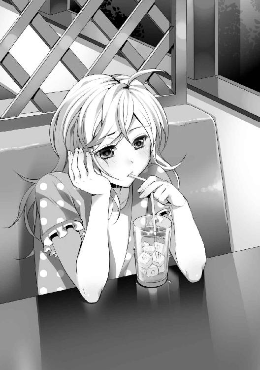
「どったの？ 君いつもいるじゃん」
馴れ馴れしい声かけだった。
髪を茶に染め、カラービーズのついたマニキュア、だぼだぼのセーターとボタンのはまっていないブラウス。赤色、桃色、青色のケバケバしい化粧。底あげしすぎの革ブーツとルーズソックス。
外見は雑誌に載っていたギャルそのもので、愛想笑いを顔に貼りつけていた。
このような手合いに声をかけられることは珍しくなかった。
大抵は着飾った軽薄な男からだが、同性からも稀にある。気軽な身分がそうさせるのか、親切な人もいれば縄張り意識をふりかざす者もいた。
少女であったルナは助けてくれる人を求めていた。
助けられるということは──利用されると知りながらも。
「ふーん。最低じゃん。そのスケベオヤジ」
煙草を口に咥えた彼女の名前はマヒメ。本名か偽名かどうか今でもわからない。
マヒメは人の心の隙間に入る術を知っていた。少なくともルナには安心感をもたらした。とりとめもない会話が楽しかった。自分をわかってもらえる素晴らしさは蜂蜜を舐めるような陶酔感があった。
そうして、彼女の甘いささやきが最上のアイディアに思えた。
「男からお金取る方法あるよ」
「ごめん。援助はしたくないよ。皆そう言うけど」
「パンツは？」
「......パンツなんてどうするの？」
「どうするかなんか知って、意味あんの？」
マヒメが提案したのはデートクラブの一種だった。
ガラス張りの一室に少女たちを集め、漫画を読ませ、お菓子を食べさせ、大きく足を開かせる。のぞき魔の男は少女を連れ出すことも可能で、個人間の交渉システムも存在した。
マヒメはそこの常連であって、友達を連れてくれば『紹介料』をもらえるからルナを誘ったのだった。
真実はなんてこともないものだったが、結果的にはルナは僅かながらの収入を得ることとなった。
ガラスの向こうは少女たち側からは見えず、マジックミラーだった。本棚やテーブル、床や壁から別室で控えた男たちからはのぞき見られる恰好だ。
ルナは〝仕事〟をするにあたって、マヒメから幾つかの注意を受けた。
「調子に乗らせるな。調子に乗るな。連れ出されんな」
前者は心得で、後者は単純に男についていくな、という戒めだった。
戒めは多く、列挙された。
『お話しタイム』の間にパンツをセールスしてその場で脱いで売ってもいい。二千円から四千円にしろ。身体に触らせるな、注文の多いマナー違反は速攻で外に出ろ。
最初は男のいやらしい視線が生理的に気持ち悪くて仕方なかったが、手にする千円札は溜まっていき、生活の糧にはなり、取り巻く世界は実り豊かなものへと変化した。
寝床はマヒメのアパートだった。月三万を支払えば住まわせてくれた。
八畳一間の薄汚い部屋は読みかけの開いた雑誌や脱ぎっぱなしの衣類が散乱していて、ペットボトルや弁当の残り物がキッチンで積み重なって腐敗し、コバエが円を描いて飛んでいた。
それでも上下水道やシャワー、電化製品や落ち着いて摂れる食事はルナには輝かしい存在だった。
マヒメとはよく話をした。話し始めれば止まらなかった。
大抵は『仕事』のつまらない愚痴や商売敵への恨み言ばかりだったが、一度だけ、どうしてここに住んでいるのか尋ねたことがあった。
「親が離婚して、親戚のオジサンに預けられて、レイプされたから。つーか、あいつ金払わないでヤリやがった。今でもすげぇむかつく」
湿っぽい布団の中でもぞもぞと動きながら、背中を向けていたマヒメはぼやいた。
ルナと致命的に違ったのは彼女は条件によっては身体を売っていた。倫理観を捨てて実利を手にしている。それが良いことなのか悪いことなのかルナには判断できなかったが、手にする金額の多寡だけ聞けば羨んだこともある。
その際、一度につき二万から三万を手に入れていると言っていた。そして一日につき七、八万を荒稼ぎしていた。月にすれば数百万になる。
ルナは店からの時給も含めて一日五千円。調子がよくて八千円程度だったので一瞬だけ、同じことをしてみようかと思ったが男に組み伏せられる恐ろしいイメージが湧き、自身の身体を両手で抱いた。
どうしても、身体を売りたくなかった。
なぜなら父親に犯されたくなくて家出したのに、生活のために抱かれれば本末転倒になるという強い思いがあったせいだ。
毎日、補導員や警察官に怯えてはびくびくしていて惨めだったが、それなりに食べ物や寝床に困らなくなると贅沢が顔を出し始める。
マヒメはよくブランド物のバッグやアクセサリーを買っていた。
衣装タンスやクローゼットには買い集めた煌びやかな衣装を詰め込んでいた。マヒメは一度着たり、身につけただけで飽きてしまう習性があった。
欲しくもないのに買っていた。身につけたくもないのに身につけていた。「こんなものは意味がない」と蔑みながらも新たな物品を求めていた。店員に薦められれば簡単に購入した。
「他人が欲しくても持ってない物をうちは持ってる」
マヒメの言は虚栄に満ちていた。
他の女の視線が気になり、常に着飾り、優越感に浸る──お洒落という価値観に神経を尖らせていた。
それがマヒメの世界観だった。惨めな自分を高額な代物で綺麗にすることでより上位の存在になれると信じていた。そんなわけがないと心の底ではわかっていても、厳しい現実から解き放たれるために必要なことだった。
ルナもやや共感し、マヒメと買ったものと同じブランド品を買ってみるくせがついた。装身具や装飾品に感性を刺激されると我慢ができなくなっていた。
こうした悪癖があったにしろルナの目に映っていたマヒメは忍耐強く、物事を知っていて、性格は破綻していても世の中を制している存在で、尊敬していた。
生活は安定していたが──ある日のこと。
いつものように物品で溢れた薄汚いアパートで夕食のサラダを食べていたルナに帰宅したマヒメが渋い顔を浮かべていた。
「店、ポリの摘発が入った」
「え」
「あの商売は終わり。どーする？」
「同じようなお店、ないかな？」
サラダに添えられていた冷製パスタの味が急激になくなっていく。ルナの自由は金銭と等価交換でもたらされるものだ。フォークを持つ手が震えている。
「ねぇよ。あれはうちらにとっておいしい商売だったけど、あんなんがいつもあると思っちゃだめだ。一年持っただけマシ。つーか、捕まらなかっただけマシ」
「困るよ」
「ふつーは〝売り〟やるか家にかえっかだって。ルナは運がよかっただけ。ま、ヤラレっけど若い男か父親んとこ転がりこむのもいいかもね。アンタさ、顔はいいし。どこだっていけっさ」
「ここにいちゃだめ？ 他に行くとこないよ」
「金払ううちは別にいいよ。でも、そっからどーすんの？ うち、お前のこと気に入ってっけど、そこは別。勘違いすんな。姉貴じゃねえんだ」
「うん」
「うーん。その気あんならしゃぶり方、教えてやんよ。まあ、ホットドック舐めるみたいなもんよ。男に白い液体出させて終わり。やったことないけど牛の乳しぼるのと似てるんじゃね？」
後日、全然似てないことが発覚した。
マヒメの指導はバイブでの実演と実行によって理解できたが、アパートに連れてこられたスーツ姿のサラリーマンの男のペニスは悪臭が漂っていて、鼻先を近づけただけでも胃袋の中身をぶちまけそうになった。
最初からしてだめだった。亀頭を咥え、むせた。口からだらだらと唾液が出る。苦味や鼻にくる気持ち悪さが脳に拒否反応を起こらせた。
マヒメは忍び笑いを漏らした。
「はは、くっせえだろ。まあ、おしぼりがいるってわかったろ？ ふいてからやるんだよ」
「ひどい......」
「チンポにびびってねえで、速攻で自分からふくんだよ。そうしねえとすぐに男は咥えさせようとすっからな。どんなことでもコツがあるんだよ。早く覚えな」
「マヒメちゃん、こんな子にこんなことやらせていいの？」
「てめーはでかくさせてるくせに何言ってやがんだ？ 練習ってことでロハにしてやってんだぞ」
「あはは、ま、確かにラッキーだけどね」
サラリーマンは善良そうで優しげな微笑を浮かべた。こんな『悪いこと』をさせるような人間に見えなかった。金で女を買う下衆な男なのにどうしてこんなにいい人のように見えるだろうか？
「おいルナ。さっさとやれよ。できねえなら家にかえんな。咥えるのはポーズで、基本は手でやんだよ。これでお前は稼ぐんだ。稼ぐんだったら真面目にやりな。金が楽に手に入ると思うんじゃねーよ」
「僕はやめた方がいいと思うけどな。可哀相だし......よくないことだよ」
「いいからチンポは黙ってろ。ガキにしゃぶってもらってるんだぞ。お前みたいな変態にとっては最高だろ？」
「そりゃあ、若いってだけで最高だけど、嫌がる子にやらすのは可哀相でね。涙とか見ちゃうと良心が痛む。僕は無理やりとか苦手なんだよね」
「あ？ おっ勃ててんのにか？」
マヒメの心底意外そうな顔にサラリーマンは丸眼鏡を調整して半笑いで頷いた。
「男はそういうもんだよ。マヒメちゃんはすれすぎだね。こんな子にこんなことやらせるべきじゃないよ」
「偉そうに言うなよ。うざってえ。〝買い〟やってるくせに説教か」
「需要と供給だよ。僕は快楽を得る。君らはお金を得る。僕は決して無理強いはしないし、誰も困ってない。誰にも不都合はない。ルナちゃんだったかな？ やめるならやめてもいいんだよ。まあ、マヒメちゃんにぶちこませてもらうからさ」
サラリーマンは困ったように顎を撫でた。
起立しているペニスは禍々しく、ルナは見るのも嫌だったが──手を伸ばし、竿を上下にしごくことはできた。射精には至らなかった。
本物との触れ合いが終わり、十七インチのテレビにポルノ映像が浮かび、上映会が始まる。
ルナは顔をしかめながらも研究を開始した。フェラチオの部分だけを繰り返し見つめる。こんなことを仕事にしなければならないのかと思うと涙すら浮かんだ。
ポルノにあてられたのか、ルナから三メートルほど離れた畳の上で、サラリーマンとマヒメは交わり始めた。
腰がぶつかり、足が絡み、お互いの肉体の至るところに口をつけていた。
ルナは二人のことは気になってはいたが、無視した。そこには愛などなかった。欲望だけが交換されていた。二人が獣同士のように見えてしまったからだ。
不思議だったのは動画の中の女が『女優』と呼ばれていたことだった。
愛の結果として性行為をするのであって、演技の要素など本当にあるのか、と少女だったルナは考えていたが何本か見ると固定観念は立ち消えた。
男性器の玩具を買い、口に唾液を含み、無機質なゴム素材の味に悩まされながら訓練を積んだ。
途中でふと、我に返って「どうしてこんなことしなくちゃいけないのかな」と考えることも少なくなかったが、ルナは既に自分の身体が金を生むことにしっかりと気づいていた。
「一回五千だ。三十分で一発。出会い系使ってさ、客はうちが取ってきてやるよ。『仕事』の場所は漫画喫茶な。紹介した客一人につきうちは二千円もらう。多分だが、お前のことを繋ぎとめたくて常連になろうとチップをくれるやつもいる。それはお前のもんだ」
「そんな人の多いところで大丈夫なの？」
「馬鹿かお前？ 人がいないとこでお前みたいなか弱いガキにフェラチオしてもらって、男が素直に帰ると思うのか？ つけこんでくるにきまってんだろ馬鹿」
「うん。でもお店の人怒らないかな？」
「部屋番は教えてやるよ。お前の仕事の部屋の監視カメラは壊れてることにしてくれる。店長、うちの客だからな。心配するなよ」
その日からマヒメは化粧の施し方を教えてくれた。
それらは必要以上に馬鹿っぽく見え、ゴテゴテしいものだった。
彼女の弁によればデートクラブでは〝幼さ〟が〝売り〟になったが、今度の場合は大人っぽく見せる必要があるとのことだった。
てっきりマヒメの黒ギャルメイクは趣味嗜好かとルナは思っていたが、これはバリアの役目を担っているらしかった。顔をある程度、醜く見せることで男を引かせるのだと。
美しくするために化粧をするのではなく、醜くするために化粧をするのだ。
「男はな。基本的に卑怯者で薄汚ねえんだよ。だから自分よりもよわっちぃ女を狙うんだ。困ってる女が好きなんだ。優位に立ってからヤリたがるんだ。だからさ、気をつけな。うちは気をつけなかったから、散々男に無理やり突っ込まれた」
その時だけ、マヒメは十八だというのにひどく年老いているように見えた。辛酸を舐めに舐め、誰かを信じる力を失っていた。
ルナはびくつきながらも頷いた。人を信じないことが強さなら身につけたかった。
幸いにして初めての『仕事』は意外にもスムーズに終わった。
マヒメの教訓通りに忠実に行った。
男に締めつけ加減を聞き、たくさん唾液を垂らし、水音を派手に鳴らし、顔があがったら激しくし、常に丁寧語で話す。
精液についてはティッシュに吐き出したが、射精してくれたことに社交辞令としてお礼を言えばなぜか、男は機嫌をよくした。
吐き気をもよおす仕事にも次第に慣れていく。一日に三度ほど客を取った。チップも確かにもらえた。次もよろしく頼むと言われることもあった。よっぽどいい客でない限りは連絡を取り合わなかった。
どうしても射精しない客からは金を取らず、わがままな客からはすぐに間仕切りのドアから逃げ出した。
漫画喫茶は仕事場として最適だった。周囲の目は確かにルナを護ってくれた。男のほとんどは自分の社会的立場を気にする人間ばかりだったからだ。
やってるとわかってきたこともあった。客の男は得てしてフェラチオ以上を望むが、口調や心が優しい者が多く、強くは望まなかった。
気になって、客の質についてマヒメに尋ねたことがあった。
「あたりめーだ。選別してんだよ。うちがお前の代わりにメールで取引してんだけど、敬語や丁寧語でしゃべってる男だけ相手する。そんで、変にしつこかったり、タメ口とかでボロを出してきた男は切ってる。トイで話してて、顔も知らない相手に最低限の礼儀を払えねえ野郎なんて、馬鹿そのものだから無視するのがとーぜんだろ」
マヒメはタメ口かつ無礼な態度と言葉遣いで誰とも接していたが、自分のことは完全に棚にあげていた。
それでも、彼女の安全への配慮にルナは感動した。
月日が流れ、回数を重ねたルナにとってもう見慣れた肉の塊から液体を出すだけの作業だった。
そして、『仕事』に慣れてきたことで調子に乗った。
ある時、こんな窮屈な場所でするのは気乗りしない二万出すからラブホテルでして欲しい、といわれて気軽についていってしまった。
催涙スプレーのありがたみを知った日で、顔に青痣を作った日でもあった。
頬を打たれて顔を腫らしたルナを出迎え、事情を聞き、マヒメは呆れた顔をした。
「ばっかお前......二万ってのはよ。男にとってセックスの金なんだよ。まあそうじゃねえやつもいるだろっけど。うちらを買うようなろくでなし野郎の二万ってのはそういう金なんだ。そりゃあ、フェラで五千は安いよ。うちだって安いと思う。だけどよ、あんま金がなくてもまともなやつも来るんだ。大勢からいい客を選べるんだ。いい客は優しいからチップもくれただろ？ 本当はぶちこみてえのにフェラで我慢してくれただろ？ どうしてルナは欲をかいたんだ？ どうしてうちができるだけ守ってやってんのにそれがわからねえんだ？」
「......ま、前は......うまくいったもん、もっと欲しいってねだったら、くれたもん......」
舌ったらずに返答するとマヒメは慈愛に満ちた顔つきへ変わった。
「ああ、そうだなぁ......一回か二回、うまくいっちまうとそうなっちまうよなぁ。馬鹿だなぁルナ。ほんと馬鹿だなぁ......どうしてうちの言うことを聞かねえんだ。どうしてうちらにはまともであったけえ家がねえんだろうなぁ。どうしてだろうなぁ......」
マヒメは覆いかぶさってきて背中に手が回され、ぎゅうっと背骨が痛むほど抱きしめてくれた。
人肌に触れ、その優しいぬくもりでわんわん泣くと、小動物を扱うように頭を撫でてくれた。
ルナにとってマヒメは姉のような存在に変わりつつあった。
食卓を共にし、寝床を共にし、家を出入りする度に挨拶をかわし、たまに世間話や愚痴を語り合えるかけがえのない相手だった。
幸せだった。
たとえ売春婦紛いなことをしていたとしても。
冬は一緒にこたつの中で鍋を囲ったり、夏はクーラーの下で寝そべったり、ふとしたことで喧嘩をして、部屋でのお互いの境界線を決めたり。
はしゃいだり、笑ったり、愚痴ったり、男のことで一緒に泣いたりした。
ルナの溜めた金を盗んでマヒメが失踪するまでは幸せだった。
突然、幻想は終わった。
淡い夢から覚めて再び現世という煉獄に落とされた。煙のように消え失せた姉のような存在。書置きすらなかった。最後の言葉すら覚えていない。
彼女が教えてくれた最後の教訓は『誰も信用するな』ということだ。
「やなこと思い出しちゃった......」
ルナはため息を吐いた。
灼熱の太陽が上天で勢力を堅持している。草むらから伸びた青草が足首にかすめてくすぐってくる。ブラウスは汗まみれで胸の谷間は蒸れている。
水の臭いが強い密林の中をさまよい、かれこれ三時間は経過したか、つい苦しかった頃の思い出が脳裏をかすめた。
くるりっと周囲に目を凝らす。
求めるのは毒虫、毒草、毒キノコ──あらゆるものが怪しく見え、あらゆるものがそうでなく見える。
美菜の『試練』の内容は単純極まりないものだった。
大スプーンを一口分、約十五グラムほどの毒物を唐宮丈に飲ませてくるという話だ。
指定した分量を砕き、スープに混ぜて飲ませてくる。それだけ、協力する。
「......簡単よ」
しゃがみこんだルナは赤土に生えていた斑点模様のキノコを引き抜いた。毒々しいオレンジの傘型キノコ。
種類はわからないが、これは毒に違いない。こんな気持ち悪い色ならば当然、毒に決まっている。
だが──違ったら？
美菜はこうも言っていた。「唐宮さんが口にした後に真実をお伝えします」と。
なんの意味があって毒を仕込んだことを教えるのか？
問い詰めれば公平さと中立を保つためだという。毒を仕込むのに協力しておきながら公平だとのたまう。狂気じみた考え方だった。
狂った論理が明瞭に言葉の裏の刃を見せていた。
失敗は許されない、と。
そのためには手にした物が毒かどうか確かめなければならない。
身を切れ──僅かでも、口にして人間に効くかどうか確かめなければならないか。
「......くぅ」
オレンジ色のキノコを数ミリほど齧った。舌の上に乗せたが、無機質な石片のようだ。
噛み砕く勇気はない。吐き出した。刺激はなかった。毒ではない気がした。
「だめね。これ、アリがたかってるし......」
──ルナには動植物の知識はなかった。
人間とアリの組織構造の違いすらわかっていなかった。アリが食べられても人間は即死するキノコはある。動物が食べられても人間には食べられない物もある。
知識のなさを薄々ながら理解していた彼女はわかりやすい毒物を求める。
手に入りやすい毒々しい色をしたキノコやカエルなどを。
「......何やってんだろ。私......」
丈に殺される前に殺す。一時の安寧を得る。島を脱出する。
当面の目的は定まっている。やらなければならないこともわかっている。足踏みしているわけにもいかない。
汗の玉が頬から首筋に伝った。歩き回って候補であるキノコを幾つか採集し、肩に引っかけたトートバッグに突っ込んでいく。
ない知恵をしぼった結果は毒物らしきもの混合し、煮詰めてゲル状にすることだけだ。
「お腹を壊す程度だったらやばいのに......」
いまいち、決定打に欠ける。
と。
藪の中で顔を出している蛇の姿を発見した。茶色の地面がひび割れたような鎖柄の蛇だった。警戒するようにチロチロと二又の舌を出していた。
ルナはぴんと来て、丁度地に転がっていた棒切れをつかんだ。
蛇の毒は欲しい──人を殺す力があるに決まっている。
浅い考えだったが毒を切望していた。自分を助けてくれる人殺しの毒を。
棒切れで頭を押さえようとした瞬間、警戒していた蛇はまたたく間に体を一気に伸ばし、ルナの前腕部に噛みついた。
唖然として、腕から感じる痛みで尻餅をついた。
「きゃあああああああ！」
半狂乱になって両腕を振り回し、噛んだままの蛇を樹木に叩きつけた。蛇は衝撃に驚いてしゅるしゅると逃げていった。
ルナは脱兎のごとく海岸に向かった。助けてくれる人間がいそうな場所へ無我夢中で走った。
死ぬのは嫌だ──誰か、助けて。
ルナは泣きじゃくりながらじくじくと痛む腕を押さえた。
※ ※
丈は手持ちぶさたで大葉の団扇を扇いでいた。
送り込まれる風で炎は揺れている。猪肉の燻製を作るためにずっとこの調子だ。燃料を集め、燃やして煙でいぶす。木の枝に吊るされた猪肉はカピカピになって茶褐色に変色しつつある。
「......だりぃ」
一方で、美菜は優雅に釣りに興じていた。
大葉と木材で作った手製の座椅子に腰掛けて竿を片手に持ち、プランテーンジュースを飲んでいる。
最近気づいたことだが彼女は行動範囲が広い。広すぎる。明らかにこの海岸区域とは別の場所の果物を採ってきている。
思い出せば最初からそうだった。
ヒロトが茶髪女と一緒に内陸に行っているが、彼女はとっくの昔に赴いているのではないのか。木登りをしているところを見たことがあったが、崖くらい簡単に登っていけそうな気もする。
疑念が渦巻いたが──別に行っていたとしても問題ではない。
この島に助けになる人間がいるかどうか、脱出手段があるかどうか、ヒロトの結果待ちでもある。変に焦る必要はない。誰でも早いところこの島から退散したいのは変わらないだろうが。
かれこれ、二人が旅立ってから五日ほど経っている。もうじきに帰ってくる。時間がなくなってしまう。
しかしながら丈としてはヒロトが帰ってくる前にある程度は美菜を口説いておきたかった。
「ひゃっほーう」
竿があがってはしゃいだ歓声もあがる。
釣果が出て機嫌がよい時を見計らって、丈は声をかけた。
「何が釣れた？」
「トラフグですね。この地域では珍しい」
美菜は青いポリバケツにフグを放り込んだ。楕円形の魚は愛嬌があるが、誰でも知るように猛毒を持っている。小型のヒレをパタパタさせて不器用そうに空泳いでいた。
一抹の不安を感じて丈は質問した。
「食べる気？」
「別に調理してもいいですけどね。自分で食べる分は法的にセーフなんですよ。釣り人さんとかはフグ食べる人もいるみたいですね」
「やめようぜ......いや、本気で」
「鉄砲刺身ともいわれておりまして。当たったら死ぬ感じですね。うーん......この間抜けな顔が妙に愛くるしい」
美菜はバケツを覗きこんで頬を緩ませ、ご満悦だった。
ひとまず話題を変えようと、丈は無精髭を撫でた。
「美菜ちゃん。悪いんだけど俺の髭、伸びてきたから前みたいに剃ってくれない？」
「ああ、それはもうできません」
素っ気ない返事。
「え、どうして？ いいじゃん。頼むよー」
「残念ですが私が男性に触れたらヒロちゃんが悲しむでしょう。だから金輪際無理です。ごめんなさい」
はにかんだ笑みとともにさっぱりと返され、美菜は再び釣り針にミミズを突き刺し、竿を握って飛ばした。
浮きらしき赤いものがついていて、遠くの波に揺られている。
「美菜ちゃん。まあ、そういう古風な考え方は素敵だけど、現代に合わないんじゃないかな？ もっと柔軟に行こうぜ」
「つまり、現代人の唐宮さんと古代人の私は致命的に合わないってことですか。構わないですよ」
「ちょ、ちょ、ちょっと落ち着こう。操を立てるのはよいことだよ。でも、髭を剃るのは別じゃないかな？ 床屋と似たようなものさ」
「例えば、唐宮さんと付き合っている彼女さんが他の男といちゃついてたらどう思いますか？」
即座に別れを告げて制裁を加えるかな──都合の悪そうな本音は胃袋にしまって笑顔で答えた。
オーバーに両手を広げて気楽な調子でおどけた。
「勿論、悲しいよ。それとこれとは別問題で、別にいちゃつくわけじゃないさ」
「本来なら、こうして男の人と二人で居るのもいけないことなのです。それが正しい男女交際なのではないでしょうか。更に言えば果たして友人の女に手を出そうとする男の人は魅力的といえるでしょうか」
美菜は振り向かない。
今日はラフな赤シャツと半ズボン。髪が短めのポニーテールになっていて、白いうなじだけが見えている。日焼けした部分とそうでない部分の柔肌の調和が妙に艶めかしい。
相手にされていないのが悔しくなって、丈は言葉にトゲを出し、その先端部分をちらりと見せる。
「ヒロトだって茶髪女と一緒にいるぜ。あいつも男だ。浮気してるかもしれないよ」
「で、あるにせよ私とヒロちゃんの問題ですね」
「許すのか？」
「愛とは許すことでもあり、耐えることでもあります。お婆ちゃんが言ってましたが、旦那が浮気したら『旦那の実家』に逃げると有効らしいです。旦那さんも帰りやすく、謝りやすく、両親が取り持ってくれるからだそうです。私は先達の教えを大事にする方です。実家には逃げませんがヒロちゃんの寝床に逃げますかねー」
反応は薄い。だが答えは気に入った。内心を殺しきった演技であるにせよ、口に出せるなら自制する可能性もある。
もったいねえな──真剣に交際するのならば──この女はヒロトにはもったいない。
丈は黙考した。やり方を変えなければ口説くのは難しい。
誠意や誠実さが有効か。口説き落とした後はそれらのものはほとんど無価値になるのもわかっている。実際、ヒロトは美菜を放置しているがどうにかなっている。
どうするべきか。しつこくするのはまずい。時間をかけるのも余裕がない。劇的な変化を与える手はないものか──思考を遮るように大声が響いた。
「み、美菜ぁぁああ！ 助けてっ！ へ、蛇に噛まれちゃったの！」
足をもつれさせ、危なげな足取りで現れたルナが林から飛び出して、駆け寄ってくる。
息切れし、蒼白になった顔で前腕の血まみれの傷口を美菜の顔近くに持っていく。
幼稚園児のように騒ぎ立て、耳障りだった。
丈は眉根を寄せて奥歯をかちりと重ねた。できるならばルナは砂の中にでも埋まっていて欲しい存在だった。
美菜は傷口を見ながらため息を吐いた。
「蛇は咬傷で無毒か有毒かわかります。見たところ無毒ですよ。有毒なら傷口から血が溢れてますからね。この時点で出血毒ではないです。神経毒ならとっくにルナさんは倒れてるので大丈夫ですよ」
「ほ、ほんと！ 大丈夫なの!?」
「耳元で叫ばないでください。ちなみにどんな蛇でした？ 柄模様は？」
「ち、茶色のその......白線が四角になるように走ってて、その四角がたくさんある感じの。ほ、ほらこれ」
「んー......多分、ニシキヘビかなんかですね。コブラじゃなくてよかったじゃないですか」
顔が竿の先に戻った。
くん、と手応えを感じたのか引っ張ったが、戻した釣り針には何もついていなかった。
美菜は肩をがくりと落とした。
「ど、どうすればいい？」
「ああまあ......海水で洗えばいいかと......あっ！ 毒といえばトラフグさん釣ったんですけど、欲しいですか？ ほら。かわいいですよー」
美菜はバケツを手に持った。
足早に水際に向い、じゃぶじゃぶと必死に腕を洗っているルナに持っていく。
しゃがみこんでいるルナは驚き、目を丸くした。
興味深そうにマジマジとトラフグを見、確かめるように真剣に尋ねる。
「食べるの？」
「肝臓と精巣にテトロドキシンって猛毒がありますし、致死性の毒だらけなんで食べませんね。でも、ペットとかにしようかなと......浅瀬に石敷きつめて飼ったりして......この子、ルナさんが世話してくれます？」
美菜は邪気もなく微笑している。
ルナはひきつった顔で口角をあげた。しかしバケツに伸ばした手先が止まった。美菜の目はこれっぽっちも笑っていなかった。ルナは口を閉じた。動きを止めた。凍りついたように固まっていた。美菜は笑みを消した。
丈は黙って成り行きを見守っていたが、口を挟んだ。
憎たらしいルナの顔は見たくもなく、会話も耳にしたくなかった。うっとうしいだけだ。
いずれケリをつけるが、今この時ではない。
「美菜ちゃん。俺も釣っていい？」
「ああ、どうぞ。フグやサメはリリースした方がいいですよ」
「美菜、私......果物とか採ってくるわ」
立ち上がったルナは沈痛な面持ちで小さく呟いた。心労を吐くかのように長いため息を吐き、肩を落としていた。
ルナは最後に二人を交互に見、背を向けて歩き出し、森に向かった。
美菜はバケツに目を戻した。
「あぁ、しまった。唐宮さん。調理しようとしたら危なかったですねこれ。この子はマフグとトラフグの交雑種でした。うっかり間違えちゃうところでした。交雑種って本当に難しいですー」
「つまり、どういうことなんだ？」
美菜はぺたんと額を押さえた。
「毒の部位が違うってことですよ。無毒なところと有毒なところが。いや、うっかりするところでしたよ」
うっかりでは済まない話だったが丈は竿を握りながらあぐらをかいた。
美菜はこうは言っているが、致命的な判断ミスをするような人間には見えなかったからだ。危険であることを見逃しはしない。その程度の信頼はできる。
あくびをしながら返答した。
「食べようとしないでよかっただろ？ まあ俺もあんなしけた女を食べなくて済んでよかったよ。君の方がずっと魅力的だ」
「唐宮さん。愛とは許すことだと、先ほど私は言いましたよね」
「ああ」
美菜は人指し指を突き出し、座椅子に腰掛けた丈の額を指した。
「誰も許さない者は──誰にも愛されないのです。あなたはまだルナさんに誠心誠意謝っていませんね。相変わらず口先だけの器の狭い人です。なぜあなたはそうなのですか？」
心に突き刺さる言葉で、持っていた矜持を切り裂く言葉でもあった。
瞬発的な怒りにかられて丈はやり返そうと口を開いたが、うまく言葉が出ない。
美菜の目は透き通っていた。怒気がなかった。哀れむようでもあった。
これっぽっちも憎まれていないのに──こんなにも心が傷つけられる。
深海の底であえぐようなくぐもった声が漏れた。
「......お、俺はさ」
「窮地の時こそ人の本性が試されるのです。正しい道を歩まなければいずれ破滅に行き着きますよ。私は唐宮さんもルナさんも救いません。どちらも同じように許しあうことができず、愚かなのですから」
※ ※
「これちょっとひどすぎない？」
俺は高原に咲いたユリ科の花の球根を掘り出す作業を止めた。
草地に生えた小岩に腰掛けた赤音は膝の上で開いた日記から顔をあげている。眉を潜めて不満げに口を尖らせている。誰がひどいのか、どんな行いがひどいのか、目についたものすべてがひどいのかもしれない。
指先についた泥を振り払った。薄汚れた指先の皮は厚くなっている。ひび割れた傷口が変形し、そのまま固くなった。
島に中央部にそびえる双子の山を登り始めてからの一時間が経過した。同行者はか弱い女なので小刻みな休憩が必要だ。かといえ俺も発汗して疲労している。少し休むべきかもしれない。
現在、見える世界はすがすがしいほど広大だ。見渡せる島の全体像──数えきれないほど稜線を描く丘があり、海岸に広がる荒れた岩礁群。麓には生命の息吹を感じさせる深緑。
遠くの海岸線には何も存在しない。半ばわかっていたことだが近くに島はない。落胆はあるが、予想していた通りでもある。
標高は百メートルを越えている。風通しがよく涼しい風が頬を撫でた。
俺は赤音を一瞥した後、ペットボトルの水で手先を洗浄した。したたる水によって足元の岩石が黒いシミで覆われていく。砂利と大小様々な石と下生えばかりの道なき道だ。
俺たちが上陸してから一ヵ月の間、この美しい島には他に人が来ていない。少なくとも俺たちの周りでは見かけない。
煙男を除いては。
「気の毒ではあるな」
「枝野って人、助かったと思う？ 唯一逃げれたっぽいけど」
「海流と風力による。時速三キロだと仮定して......順調にいって十日間近く生き延びることができたなら生還したかもしれない。実際には海下の地形や風向きによって海流は変動するのでそうはうまくはいかないし、見当違いのところに流されるかもな」
「難しいね。漂流は不安だよね......」
「ああ、俺たちも船が難破したが、この島に流れ着いてまだ運がよかったかな」
「あたしたちはゴムボートだったもんね。他にも大きなボートがあったのよね。あれに乗ればもう助かってたのにねー」
「そうかもな......色々と不明な点はあるな」
俺は乗客や船員が十数人ほど乗船したボートが荒れ狂う大波でひっくり返るのを目撃していたのだが、赤音には言わないでおく。
あれは許容人数を越えていたように思えた。少人数であれば助かったかもしれないが、誰でも生き延びたいと思うのは当然だ。
彼らは運がよく今頃は海の底か──漂流した挙句、海の水を飲んで枯死している公算が大きい。
糸をたぐるように記憶を辿った。
船体の軋んで梁材が砕け、甲板を海水が洗っていた。船上にいながらも怪物のような白波が押し寄せ、すべてを押し流そうとしていた。
身体が風に乗って吹き飛ばされかねない嵐の海は恐ろしかった。照明は頼りなく、闇だらけの空間で誰もが死に直面していた。
船室を出た時、通りがかった船員が何かを目口で伝えようとしていたような気もする。思い返せばほんの少しだけ唇が震えていた。
船酔いでふらつき、苦しんでいた俺には余裕はなく、うまく聞き取れなかった。
だが、何かを言っていた。そうだ。あのとき、何かを言っていたんだ。
──から逃げろ。
彼、あれ、船、そういったものの短い語句だったと思う。
何にせよ、難破した理由など今更判明したところで意味などない。
休憩が終わって岩石から腰をあげる。手を振って赤音を促して歩き出した。もう一息で山の頂上近くだろう。
ひとまずは日記に書かれていた煙男の祭壇を目指すことにした。本当は埠頭を探したかったが、森林を横切りながら四方八方を探すのは現実的とは言えない。
地理的なものへの信憑性を確かめるためでもある。記述の通りなら南西にポンペイ島がある。生還への道のりに光明が差し込んできている。
「手、貸してくれない？」
「背負うか？」
「ううん。手でいい」
「ああ」
後ろに手を伸ばすときゅっと握られた。
その瞬間──がくんと膝に重みが寄った。
「うわっ！」
「む」
赤音が半分倒れこんでいた。片足を土の裂け目に落としてしまっている。もぐらが掘ったような楕円のほの暗い穴がぽっかりと空き、その周辺に蔓草がぎっちり密集しておかげか赤音の足には目立ったすり傷がなかった。ただし、持ちあげた足は草汁まみれだったが。
「大丈夫か？ 石灰岩が多いせいか......この辺りは本当に断崖や裂け目が多いな」
「あ、いたた......ありがと」
よろけて、寄りかかって来たので両肩をつかんだ。
均衡を保とうとした結果だったが、赤音は何を勘違いしたのか目をぱちくりさせ、ジッと見つめてきた。
何かを期待するような切なそうなうるんだ目。頭を少しだけ傾けて弱々しく微笑んだ。熱情をかわし続ける作業は止められない。
「なんか、二人きりだよね」
「最近はな」
「男の人って好きじゃなくてもエッチできるんだよね？ あたし、知ってるよ」
「間違ってはいない」
「この島に来た時、あたしを含めてさ、女は三人居たよね。日誌の男たちみたいに......唐宮みたいに襲いたいと思わなかった？」
「俺にも母や妹がいる。もしも家族がそういう目に遭ったら許せない。だから俺はしない。この方程式は大抵の男は持っている。ただ思いがけず忘れちまうのさ」
頭が馬鹿になってとろける前に話にケリをつけ、踵を返して手を横に切り、進む合図を出す。
自然が造った石段や浅い崖が行く手を遮ってくる。傾斜もあるのでゆっくりと足腰に負担をかけないように進む。
赤音は話題を変えた。こいつの手は冷たいが女らしい細指だ。
「家族とは仲がよかったの？ いいな」
「いいや、悪かったよ。俺は冷めていて、自己中心的で、何事にも無関心なやつだからだ」
「ヒロトはちょっとおかしなところあるけど......素敵なところもあるから、自虐しない方がいいと思うよ。何か嫌なことでもあったの？」
吹き抜けるひんやりとした冷たい風──黒シャツの襟元が僅かにふわりと浮き、胸からわき腹までするりと風が入る。
質問には答えず、取り繕った笑みを浮かべた。
「もうすぐ家に帰れるから何も心配するな。脱出の糸口はつかんだ。俺に任せておけ」
「うん......あのさ」
「ああ」
俺の手を赤音は引き寄せて両手で握った。
立ち止まって、目を閉じて胸元に持っていく。
祈るような仕草だった。
「こういう小さな幸せがあれば、あたしはやっていけるよ。手を繋いでくれるだけで幸せなんだ。だから、この手を離さないで欲しいな」
※ ※
肌荒れがひどい。
太ももに蕁麻疹が走っている。赤い発疹が皮膚を醜く変色させている。
やぶ蚊に刺され、ダニに噛まれ、精神がひび割れていく。苛立ちが加速していく。目の奥が怒りで染まっていく。体温が上昇していく。
ルナは小さな岩陰に座り込んだ。
気温の下がった場所で額の汗をハンカチでふきつつ、棒のようになった両脚を揉み解す。
もとより体力はそれほどない。ジムに通うことはあったがここの運動環境は悪すぎる。
トートバッグにはある程度の量は集まった。
選別し、最良の毒物を作らなければならない。
収穫物を手前にあった平べったい花崗岩に乗せて並べて吟味する。右手は崩れた岩壁で、左手は鬱蒼とした森。光の当たる場所で考えるために崖沿いに訪れた。
ルナは無意識に手の甲をこすり合わせた。かゆみを感じたせいだった。
「やだ......何よこれ」
ふと目にすれば手が赤くなっていた。かぶれてしまっている。どの刺激物を触ってアレルギー反応を起こしたかはルナにはわからなかったが、不愉快だということだけはわかる。ひりひりと痛んで気持ち悪い。
丁度よくヨモギが自生しているのを見つけ、ヒステリックに引きちぎって汁をこすりつけた。
その後で水洗いして葉を口にする。苦味ばかりが口内に広がる。
以前、美菜が教えてくれた唯一の薬草だった。もっと真剣に聞き出せばよかった。この後悔は後でぬぐうべきだ。
「フグ......あれは多分毒じゃないわね」
試練を与えると言っておきながら、絶対に手助けなどするはずがない。
そうだ。美菜の性格は破綻している。面白がっている。お人形遊びをするように自分をもてあそんでいる。
──それでも、すがらないといけないのが口惜しい。
ただ生きていたいだけなのに。
平穏であり、幸せな生活がしたいだけなのに。
どうして、なぜ、こうまで苦しまなければならないのか。
「......最低」
泣き言はやめろ──幸せな未来を夢想しよう。
日本に戻ったらどうするか。無断欠勤を詫びて店に戻るか。いや、ここまで間隔が空くと客は離れているだろうし、漂流者というイメージも悪い。サバイバルをしていたキャラクターは自分にはそぐわない。
思い切って転職してしまうか。しかしホステスは金になる。心の隅でうずく良心さえ握り潰せば客からむしり取るのはたやすい。捨てられぬ偽善の心は喉奥に刺さった骨のようにうっとうしい。
マヒメから貯金を奪われた時を思い返せ──ショックで床に倒れ、泣き腫らし、これからの金の工面を考え続けた。
男の毒を吸い取る商売はやめられなかった。
幸いにしてホステスの仕事は小金持ちの〝客〟が斡旋してくれた。男のコネクションは馬鹿にできない。人脈とは札束のぶら下がった荒縄のようなものだ。
家出してからというもの、ただただ金を稼ぐことに腐心してきた。
銀行の貯金残高をいくら積んでも安心できなかった。絶えず焦燥があった。金を稼ぐことがすなわち生きることだった。
マヒメに裏切られたから、誰かを裏切るのもためらいがなくなった。
それでも彼女のようにブランド品を買い漁り、口先と技術で世間を渡り、身を護ってきた。
生き方は似ていた。似すぎていた。
「どうして......私を置いていったの」
ぽつりと漏らした言葉は忘れていた本心だった。厳重に封をしていた精神の扉の一つだった。
お金が欲しかったなら話して欲しかった。相談して欲しかった。何か事情があったなら二人で乗り越えたかった。
捨てないで欲しかった。
ああ──しかし。
自分は血の繋がった家族を捨てた。因果応報だ。母親の弱々しい顔つきが今でも思い出せる。繋いでいた手を切ってしまった。
母を忘れはしなかったが思い出しもしなかった。今、こうして報いを受けているのかもしれない。
突如。カラララララと渇いた音がどこからともなく聞こえた。ルナはハッとして視線を前方にあるシダ科の植物が作る葉陰に向けた。
「......蛇？」
密集している茎と茎の境目。薄暗がりにとぐろを巻いている蛇の一部が覗けている。細長い体躯の下には白い塊が複数個。周辺には赤茶色の土と枯れ葉が輪状になっている。卵を護って営巣しているのだ。
白い脱皮殻を蠢動させてからからと音を立て、苛立っているのか尻尾を地面に叩きつけていた。割れた二つ又の黒舌が出ては引っ込んでいる。
威嚇は物々しかった。ルナは飛んでくるのを恐れて反射的に一歩後退した。
コブラか──かまくびをもたげ、つぶらな目が合わさった。
エラを広げたような卵型の顔と黄茶色のまだら模様。大きさは腕ほどあり、得も言われぬ迫力がある。
ルナは唇をわななかせた。冷水を浴びせられたように背筋が凍りつく。足首に根草が絡みついたように動かなくなった。
後退したせいか蛇は頭を低くした。様子を窺っている。
「毒蛇......」
下唇を舐めて思考する。蛇は動かない。巣穴を守っている。
この蛇の頭を奪い取って毒液を混ぜれば──丈の胃の腑に流し込んでやれば殺れる。
枕のような大きさの石がカカトにぶつかった。天恵を感じて振り返り、両手で石の両端をつかみ、肩から腰にかけて力を込めて頭上に持ちあげる。
ふらつきながら、狙いを定める。ここから投げて潰せば蛇毒が手に入る。外したとしても投げた後ですぐに逃げればいいではないか。
唐宮丈を殺らなければ未来はない。なぁに、殺るのは美菜だ。手を汚すわけではない。
自分は〝毒を運ぶだけ〟だ。それをどうしようが知ったことではない。殺人者にはならない。安心で安全な立場を死守したままだ。
「違うわ」
力強い声で否定した。即座に考えなおした。こんな逃げ腰の考え方は許せなくなっていた。怒りとも勇気とも殺意ともとれる感情が胸中で渦巻いた。
毒で完璧に殺れるという夢物語は捨てるべきだ。丈が弱ったところを仕留めてやる。臆病さとは弱さでもある。そんなことは許されない。
あんな女を物品扱いする男など生きる価値などない。自分という女に殺されるべく生まれたような存在に思えてくる。それが正しい行いとまでルナは確信した。
──子供だった以前とは違う。成長したのだ。
世間知らずであり、人の怖さに戸惑い、世の残酷さに悲しむだけの少女ではない。
今なら父親すら手玉に取れる。そうだ。手玉に取って母を救ってやれる。
「えいっ！」
かけ声を張った。
上段から飛翔した石塊は斜線を描いて蛇の胴体に着地した。勢いのままごろんとすり潰し、反射的に逃れようとした蛇の上体が虚しく出っ張る。
骨が挟まったのか蛇は伸しかかる岩石から脱出できなかった。尻尾が激しく振られる。圧迫から逃れようともがいていたが──痙攣して、ぐったりと息絶えた。
ルナは十分ほど様子を見ていたが、小枝で突いて絶命を確認した。おっかなびっくり近づき、つま先でそおっと石を蹴り転がした。
巣穴には蛇の胎児が潰れて赤黒い内臓をさらしていた。破れた血管は混線しながら放射線状に広がっていた。どろりとした黄色の混じった粘液が小さな水溜りとなっている。
ルナは蛇の頭をがっちりつかんだ。だらりと頭を垂れた遺骸。満足げな微笑が思わず口元に浮かぶ。
納得のいく毒は手に入れた。試練は乗り越えた。すべては思惑通りに進む予感がした。
祝福するかのように雲間から現れた西日がルナの全身を照らし出した。急速に未来が明るくなった気がした。これまでの灰色の日々は終局を告げるのだ。
これからはきっと何もかもがよい方向に向かうだろう。あと一息で心安らかな日常が戻ってくる。さぁ、踏み出そう。明日のために。
枝葉が小刻みに揺れた。
ルナの数歩後ろに影法師が現れた。息を殺した誰かがルナの背後で彼女を凝視していた。
そうして──太陽の教えてくれた先触れ──後ろから迫り来る冥暗にルナは気づかなかった。
「え」
メキャり、と何かが潰れて破壊される音がした。卵を思いがけず床に落としたような滑稽な音だ。
不思議なことに先ほどの蛇を潰した時と同じ音だった。もう蛇は見当たらないし、石を投げたつもりもないのに。
ルナはいつの間にか自分がうつ伏せに地面に倒れ伏していることを理解した。
口の中に泥が入って不快感があった。自慢の艶やかな頭髪が汚れるのは無性に嫌だった。立ち上がろうと身じろぎしたが失敗した。
手足がなぜか、なぜだか、どうしてか、うまく動かない。
力が入らなかった。手の平がずるりと泥で滑った。
まぶたが重くなってくる。意識が曖昧になりつつある。やたらと眠気がひどかった。突然の睡魔に戸惑いながらも手落とした蛇を握りなおす。
口元から泥が吐き出た。血のように鮮やかな紅色だった。変なところの土を口に入れてしまった。
手の中の毒さえあれば自分は助かる。
助かってから、家に帰って母親と話し合おう。一緒に家を出ようと。
最初に家出をし、母を捨てたことを詫びよう。許されるまで謝ろう。恥知らずかもしれないが、捨てた物を再び拾いあげることが自分にはできるはずだ。
マヒメと自分は同一ではない──母を取り戻すべきなのだ。
自分はなんでもできる。また汚らわしい仕事をやっても構わない。今度こそ、永劫に続く幸せな時間を作る努力をしよう。
後頭部に違和感を覚えて首筋付近をさすってみた。おかしなことに清水に触れたような水が流れる感触があった。
眠気が次第に強くなっている。耳鳴りもひどい。呼吸ができない。なぜなのかわからない。
──お母さん。ごめんね。これからは一緒にいるから。
──お母さん。生きていくのは大変だったけど私は自分でなんでもできるようになったから。
──お母さん。今度こそ絶対に見捨てないから。裏切られて寂しい想いなんてさせないから。どれだけ辛くて悲しいことか知ったからさ。
ルナの意識は真っ黒な闇に飛散した。
二度と収束することなく、頭蓋骨と同じく粉々になって消えた。
丈は密林の中の樹木群を睨んだ。だらりと幹に垂れ下がるツタを引きちぎった。赤い斑点模様のキノコを踏み潰した。餓えた狼のような咆哮が喉奥から出てしまいそうだった。
真っ赤に染まった憤りが心臓の中に詰め込まれている。美菜に罵倒された怒りはくすぶり続けている。それでも彼女の言い分には筋道が通っていた。だからこそ憤りを覚えるのかもしれない。だからこそ許せなくなる。吐く息が重たくなる。
ルナに謝らなければならない。そうしなければ美菜の歓心を買えない。道理としては理解している。やってもいい。ただ、その後であの女の高慢ちきな顔で鼻を鳴らして思い出し笑いをする妄想がわきあがり、自然と拳が硬くなる。
頭を冷やせ──謝る前に勢いあまってぶち殺してしまう前に──頭を冷やせ。
立ち止まって深呼吸した。
女を騙したことなどいくらでもある。今回もご機嫌取りの一種だ。束の間のお姫様気分に浸らせてやるのも男の務めだ。
美菜の指図にひょいと乗るだけだ。ルナはしゃべることができる木製人形か何かだと思えばいい。
そうとも、女を口説き落とすためならば王子のように白馬に乗ることもあれば──乞食のように平伏することだってある。
硬さと柔らかさを合わせ持てる魅力的な男こそが自分だ。
そこまで考え、丈ははたと思い至った。
「やっぱ固執......してるか」
美菜に──たった一人の女に執着するのは本来の丈のスタイルではなかった。
女の首に縄を投げつけて縛りつけ、足蹴にしながら周囲を見回すのが常道だった。勿論、縄の数は二つか三つなので新しい踏み台が見つかったらするりと解放してやるのだが。
便利な消耗品のように扱うのも、もしかすれば終わりの時期が訪れているのかもしれない。
娯楽としてのセックスはやり尽くした。神が与えたエンターテイメントに飽きがきている。
一人に固執しなかったせいか快感も薄かったような気もする。永遠に満たされない飢餓感を覚えていた。時間が経ち、快楽を絶てば冷静に自らを振り返ることもできた。
蒸し暑いマンションの自室でよく知りもしない相手と絡み合った。体液にまみれながら欲望の炎に包まれた。情動は刹那的で、目的を成し遂げるゲームに夢中になっていた。
女を落とすことが生活習慣だった。自分が流し目を送れば大抵の者は顔を赤らめてふぃと逸らし、近づけば期待に満ちた顔つきで見あげてくる。後はうまい具合に転がすだけでよかった。
なんの疑問もなかった生活が終わっている。過去に抱いたつまらない女とゴム製のダッチワイフの明確な違いがわからなくなり始めている。
腕の中に肌身の感触が残っているだけで、どいつもこいつも顔すら思い出せない。
今まで口先で愛を死ぬほど語ったが、愛を感じたことなど一度もない。
「虚しい日々なんかじゃねえ。そうだ。俺は誰よりも最高だったはずだ」
──太陽が色づき始めた。
樹木の影がくっきりと目立ち始めている。全方位に放射される光線が視えてきた。
臙脂色の空に群れを成す鳥たちが飛んでいる。闇の訪れを告げる夕暮れが訪れようとしていた。
これ以上の捜索は危険だ。
夜が来れば密林はつまづきやすく、道標も見つかりにくく迷ってしまう。気が乗らなくなってくる。
「明日にするか......」
バンダナの結び目を解いて額の汗をぬぐった。肌にシャツが貼りついている。無秩序な色合いになった金髪がふさっと肩にかかった。
染髪できないため前頭部まで黒が目立ってきている。艶のある髪は変わらず細く柔らかい。頬骨がこけていたが眼差しは鋭く、不満の色をたぎらせている。
「あ？」
視界の隅に、木立の隙間に灰色の何かが目に入った。どこか不釣合いな存在。
目を凝らしながら歩み寄る。
三十メートル先に確かに──人が居る。岩壁付近に何かをのぞきこむように下を向いて立っている。
全身をすっぽりと灰色の外套で包み、肩幅はないが長身──妙に質量を感じさせない。
「......は？」
丈の存在に気づいたのか、魔術師の妙技のように灰色の人は忽然と消えた。空を飛んで消えたように見えた。樹木にぶつかって木材同士が擦れたような乾いた音がした。
つい、丈はあんぐり口を開けたまま硬直した。
「お、おーい！」
我に返り、声を飛ばして反応を見る。誰の声も返ってこない。
木々の葉擦れの音と遠くから聞こえる鳥の鳴き声だけの静寂。
びゅうっと生暖かい風が吹いた。背中を撫でられたような感触があった。悪寒を感じながら丈はよろよろと歩み、地面に流血の跡を発見した。
更に近づいた。それなりに開けた空間に出る。鼻の粘膜を刺激する異臭が漂っている。鉄錆びを火であぶったような臭い。
草むらの中に白っぽく千切れた赤ウィンナーのようなものも転がっていた。低木の葉に血飛沫が飛び散っていた。血の臭いを嗅ぎつけたブヨが空中を旋回していた。
うつ伏せに人間が倒れていた。
「......冗談だろ」
膝が笑う。がくんっと折れた。両膝を地面につけ、口を開けて側頭部を両手で押さえる。
つい一時間前までガキみたいに叫んでいた。半ば殺してやろうとも思っていた。死ぬほど憎らしい存在だった。
けれども──実行するつもりはなくて、勿論頭の半分を削り取るつもりなどなかった。
凶器と思われる血脂にまみれた岩石が林の近くに転がっていた。自分が思いっきりルナにぶつけたとしてもこんなに無残にならない確信があった。圧倒的な力を持った人間がいることがわかった。
丈は恐怖にかられて視線を絶え間なく上下左右に飛ばした。
殺人鬼の姿はあとかたもない。
「唐宮さん」
背後から聞こえた低い声。
林から出たばかりの美菜が尋常じゃなく目を大きく開いていた。
サバイバルナイフを引き抜いて構えを取っていた。下段に刃を置いて半身となり、姿勢を低くして左足のつま先が突き出ている。
明確な殺意がほとばしっていた。見えないはずの感情が空気に混じって確実に伝わってくる。
気迫にたじろいで泡を食い、丈は半歩後ろに下がった。
「私の邪魔をしましたね」
「ち、違うっ！ なんだかわからないが......俺が殺ったわけじゃない！ 俺も今さっき来たばかりなんだっ！」
半ば悲鳴のような声で弁明した。
美菜はルナの死体に視線を向けた。視線はすぐに真正面に戻った。
緩慢な動作でぐるりと首を回し、周囲を見回した後に何かを理解したように浅く頷き、ナイフは腰に戻った。
滑らかな足取りでルナの傍に立ち、しゃがみこみ、その顎をつかんで顔を覗き見た。
血まみれの顔。半開きになった口元とぱっくり開いた目。眉に土がついている。片方の耳はなくなっている。
死体は醜い、と丈は素直に思った。生前の美しさなど見る影もなかった。
だから、美菜がその顔に触ることなど想像もしなかった。
目を細めた美菜は慈しむようにルナのまぶたをそっと撫でて閉じさせた。そうして露出した脳みそごと頭部に手を回し、胸の中で抱きしめる。
「おやすみなさい。ルナさん」
夜が世界を黒く塗り潰した。
※ ※
朝靄が世界を征服している。湿気で満ち溢れていて、歩くと肌がじんわり濡れた。十メートル先もろくに見えず、白い闇が佇んでいる。水辺と草地の存在しか赤音にはわからないが、釣りをするスペースとしては充分だった。
赤音は敷いたシーツに尻を乗せ、体育座りしながら獲物を待った。待つ時間は短かった。下鰭の多い魚が水中でもがく釣りえさ、コオロギに無事食いついたようだ。
直線型の背中にある背鰭が尾鰭に接近して生えていて、口元が不満そうにつんと上向いている。
体色は薄緑。瞳は黒く目玉は青い。
竿代わりの細縄と結んだ釣り糸の先、アロワナは川面からひょうきんな顔を出し、全身を左右に振って水飛沫を立て続けている。
懸命に逃れようとぴちぴちと跳ね続けるアロワナを岸辺まで引っ張ると、赤音はきゅっと唇を噛み締めてウォルナット製のハンマーを振りあげ、叩きつけた。
その強烈な一撃でアロワナは脳震盪を起こし、ぴたりと動きを止めた。
「ごめんね」
ぬるぬるとした体表を素手で触るのはためらわれたので、尻尾の付け根の部分を縄で縛って引きずることにした。
分厚くどす黒い雲の絨毯が幾重にも上空に敷かれ、どんよりとしている。空気もじめじめとして蒸し暑い。不快な朝だ。
水草と小石で形作られた川辺はしんとしているが、空気中に充満している濃霧のせいで視界はろくに利かない。葉も揺れぬ静まった木立から得体も知れない何かが出てきそうで、恐怖を感じて身体を震わせた。
おとぎ話の怪物を怖がる子供のように何度か後ろを振り返りながら川から離れ、沈黙する林を抜け、朽ち果てた滑走路に出る。
見あげた白茶色の山の天辺にはドーナツ型の雲が席巻していた。北の空には稲光が走っているのが見える。作業は素早く終えなければならない。
途中、ハンマーで腐りかけの樹皮を叩き、急いで引き剥がして麻袋に詰め込んだ。火を燃やす燃料が必要だったからだ。果物も採りに行く予定だったが、天候が悪いので小屋に戻ることを決意する。
予想は的中した。ぽつ、と小雨が降り出した。
拠点とする小屋の扉を開け、室内に入るとヒロトが白い顔で物干し竿を数本ほど脆くなった壁に突き刺し、シートを広げてその縁を結んでいた。
簡易な屋根だ。雨漏りは防ぎようがないので、せめて居住スペースだけでも確保しようとする苦肉の策なのだろう。
「動いちゃ駄目だよ」
「......あ、ああ」
ヒロトは空返事を返してふらりっと足をもつれさせ、ベッドに倒れこむ。ギッシィッと軋む音がした。
顔の血色は悪く、荒い息を吐いている。発熱してから二日目。最初に咳が出てきて、動きが段々と鈍くなっていき、たまに身体を震わせて寒さを感じている。
赤音は膝の高さにいたアロワナを引っ張って見せつけた。
「どう？ 大きいの獲れたよ」
「......ああ、そうだな」
ちらりと見たものの熱を発する額に右手を置き、横たわったヒロトは左手の平のシワと線をぼんやり眺めていた。
目つきが弱々しい。ほんの昨日まで檻から放たれた虎のように元気だったのに──あの薄気味悪い煙男の壁画を見てから調子が悪くなっている。
赤音は七輪を取り出し、湾曲して穴だらけの鉄板の上にアロワナを乗せた。
魚体が大きすぎるせいか、尻尾がはみ出した。仕方なく包丁で二つに分断した。
「鱗......を......取れ」
「うん。ごめん」
言われてから気づく。ざりざりと引き剥がしにかかり、残骸を鉄板の隅に移動させる。
先住者の持ち物の一つ──手に入れた火打石を取り出して火花を出し、樹液の固まりに火を点けた。
ふぅーっと息を吹き込んで火加減を調節する。
生気のないヒロトはぐったりとしていたが横目で赤音をジッと見ている。
雨脚が強くなりつつあった。室内に浸入する雨水は板と板の境界に流れていく。または何かしらの原因でできた床の穴に落ちていった。ヒロトの作った簡易屋根は斜面になっていて、穴に向けて雨が流れるようになっていた。
赤音はあぐらをかいて座り、菜箸で魚をひっくり返した。場の沈黙を嫌ってか、明るい声を出す。
「あのさ、風邪が治ったら携帯番号とメアド教えてくれない？ もう友達でしょ」
「......ああ」
「島から出て落ち着いたらどっか一緒に行こうよ。家、どこ？ 東京？」
「美菜に......」
力のない声──二人きりの時は出てきて欲しくないワード。
赤音は目を伏せて下唇を噛んだ。
今、尽くしているのは自分なのに。好きでくっついているのも自分なのに。どうして他の女の名前が出てくるのか。
こんなにも胸を痛めつける──苛立たせるようなことを言うのか？
陶器製の皿に焼けたアロワナの白い切り身を盛りつけた。塩と桑の実のソースを和える。
ヒロトは皿とフォークを受け取ろうとしなかった。目は開いたまま微かに口だけが動いた。
「日記のことと......人がいないことを伝えてくれ」
「風邪が治ったら一緒に戻ればいいから。ずっとあたしがついてるからさ。心配ないよ。ずっと傍にいるよ」
皿をサイドボードに置いて片手を握った。赤音は愛情を込めたつもりだった。けれども握り返してはくれなかった。
ヒロトは目を閉じた。血の気の失せた唇は動き続ける。
「俺のことは......捨てていいからな」
※ ※
チッ、チッ、チッ、と時計の針の音が聞こえた。
よみがえっているのは俺の高校二年生の頃の記憶だった。キリの最後の記憶だ。最後の晩の記憶だ。
参考書と過去問で埋め尽くされた本棚、茶のカーペットには小型テーブルと座椅子が一つ。部屋の隅にはパイプベッド。
くすんだ白壁にはポスターを剥がした跡が残っている。サッカー部を退部して以来、すべての娯楽を排した見慣れた殺風景な部屋模様だ。
俺は来年の大学受験に備えて机に向かっていた。評判のよい参考書の問題文から答案まで丸ごと写す作業を繰り返していた。利き腕の右手が腱鞘炎にかかり、左手で書き写していた。偏執狂のように空白を文字の羅列で埋めていた。
突然、ノックもなく廊下側のドアが開き──中学の冬服姿のキリが足を踏み入れてきた。
もさっとした暑苦しい黒髪がだらしなく肩に散らばっている。四角い眼鏡をつけて不安げな暗い顔をしていた。薄暗く寒々しいこの部屋とは妙に調和していた。
外見とは裏腹に爆発力を秘めているが、あくまで内弁慶であり、人見知りの気が強かった。
気まぐれで、不真面目で、頭の回転が悪い俺の世界でただ一人の妹だった。
「お兄ちゃん」
「どうした」
カリカリと動いていたシャープペンシルを止めた。キリの声は微妙に緊張していた。振り向いたまま様子を見守った。
「私とさ......えっちしない......？」
キリはスカートの裾をまくった。実際には羞恥のために膝の部分までしか持ちあがってなかった。指先が小刻みに揺れて力が込められ、白くなっていた。
顔面には空気の抜けた風船を思わせるマヌケな笑みが浮かんでいる。口角を無理やり歪めていた。精一杯、媚びようとしていた。
俺はすぐに机から離れて足を踏み出した。真顔の俺を見てキリの顔に怯えが走った。わざとらしく片手を振りかぶった。キリは身を屈めて防御姿勢になった。確認してから腕を張った。乾いた音がした。キリはベッドに倒れ、頭を埋めてぐずり始めた。
俺は机に戻った。倫理の参考書に科目を変えた。
「兄妹だからダメなの......？」
「いいや、違う。単純にお前のような愚か者を相手にする時間が用意できないだけだ」
「いつだったらいいの？」
「......いいかキリ、お前は血の繋がった俺の妹だ。だから五分ほどやろう。自分が正しいことをしているか、していないか、考えてみるんだ。おのずと答えが出るはずだ」
「男の人は誰でもえっちすれば私に優しくしてくれたよ。お兄ちゃんも私に優しくしてよ」
こらえ性のないキリは考えることをすぐに放棄した。
途方に暮れたような顔つき、瞳には裏切り者を見るような呪いが込められていた。
墓地に飛ぶ青い陰火のように不確かな感情が俺の胸で冷たく燃えている。炎はくすぶり、身を焼き焦がす。
怒鳴り散らすのは簡単だ。抑えつけた。怒って聞き分けるならそうするが、そうしても無駄だ。
俺は椅子を横に回してキリと向かい合った。
これといって妹の男女関係の告白に驚きはなかった。薄々とは気づいていた。口を出さなかっただけだ。
キリは唐宮と寝ていた。情欲に溺れるのは当人たちの自由だ。好きにすればいい。
だが、不特定多数と関係を持つのは寝耳に水だった。
「お前は大事な時期を迎えている。来月に私立高校を受験するのになぜ勉強しない？」
「だって......男の人と遊んだ方が楽しいもん。色々してくれるし、それにどうせお父さんが望むような高校に私は入れないよ」
「なら、結婚......したいのか？ それで複数の男を選んでいるのか？」
どういうわけか──キリはきょとんとした。
やがてせきを切ったように笑い始めた。
おかしくてたまらないという風に腹を抱えていた。俺はキリが笑い終えるのを待った。一つも面白くなかった。
キリは一息つくと、眼鏡を外して目尻にこぼれた涙を指先でぬぐった。
ぽすんっとベッドに座りなおした。どこか得意げで憎たらしい顔に変化していた。
「お兄ちゃんは正しいよね。純粋なんだよね。そういうところが嫌いだよ」
「俺は正しいわけじゃない。正しくあろうとしているだけだ。誰だってそうしようとしている。家族を心配し、隣人に気を遣い、犯罪に手を染めずに賢明に生きている。お前もそうであって欲しい」
「くだらない」
一蹴される。小芝居をするようにゆっくりと両手が開かれる。
「世の中、いけないことの方が楽しいことばかりだよ。お兄ちゃんはボールを蹴ったり、そうやって死ぬほどお勉強だけしてるだけでいいの？ お父さんとお母さんの言いなりになってるだけでしょ」
「お前の目には俺はくだらなく見えるのか。ありがとう。参考になったよ。そうやって自分が嫌だと思うことから逃げ続ければいい。父さんや母さんの愛を裏切って平気な顔をしていればいいさ」
「お兄ちゃんはどうしてそんなに偉そうなのっ！ きちんとやってるからっ!? 私だってきちんとできるならとっくの昔からやってるよっ！ お兄ちゃんはできない人の気持ちなんてわからないんだよっ！」
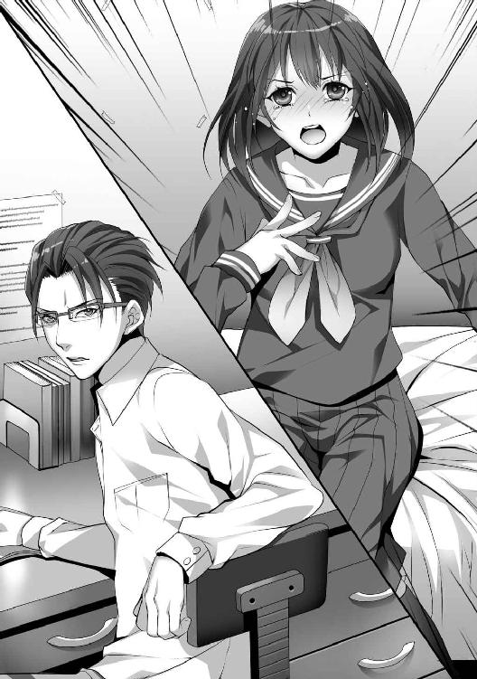
狂乱したキリの顔は赤みが差していた。
まばたきを繰り返し、顎を引き、歯をがっちり重ねて顔を醜く歪めていた。
黒ベストの脇部分をつかんでシワを作り、引きちぎりかねないほど引っ張っていた。
キリはできが悪い。できが悪いだけならまだしも、目を覆いたくなるほどほど愚か者だった。思いつきで行動し、軽はずみなことをしゃべり、自分が受け入れられないと爆発する。
「霧夏、兄として教えてやる。父さんと母さんの忍耐と家族愛が永遠に続くものだと思うな。血に甘えるな。その思いあがりを捨てろ」
「お兄ちゃんはお父さんとお母さんを愛してない癖にかわいがられてる！ 私は頭のできがよくなかったから──ずっと差別されてきたんだよ......お兄ちゃんの方が思いあがってるんだよ！」
キリは真一文字に口を結んだ。
興奮したキリの鼻の穴は開いていた。目が涙で濡れて充血している。脳みそが沸騰している。
努めて、冷静に返した。
「両親のことは少なくとも、尊敬している。俺を育ててくれたからだ。だから忠実に期待に応えるだけだ」
「できる人はいいよ。できるから。私はできないの！」
「そうだな。お前は気まぐれで仮病を使い、学校をサボり、遊び歩いている。その軽はずみな行為がどれだけ多くの人の信頼を失っているかわからないのだろうな」
「お兄ちゃんは......冷たいよね。機械みたいだよ。私の気持ちなんて全然わからないんだ......そうだよ。ずっとそうだった。お母さんが交通事故に遭って足を折った時だって、ラッキーが死んじゃった時だって次の日になればけろっと忘れてた。自分のこと以外、とどのつまり興味ないんだよ」
「どうやら、素敵なことにお互い理解し合えたようだな。では明日からお前の大好きな両親と話をして俺がお前の家庭教師をしよう。椅子に縄で縛りつけて勉強を見てやる。お前がくだらないと断じたことを徹底的に脳みそに叩き込んでやる」
キリの顔面は崩壊した。
触ってはいけないものに触ったのだとようやく理解していた。俺の堪忍袋はとっくに切れている。
この時の俺は意固地で立ち止まることなどできなかった。少しでも正しいと思う方向に妹を向けてやるべきだと考えていた。どんな手を使ってでも。
「ど......どうしてそういうこと言うの？ やめてよ。強制しないでよ。勉強なんてやだよ。したくないよ」
「俺は考えなおした。お前を早急に矯正しなければならないと。今後、唐宮とも付き合うな。他の男たちともだ。もしも俺の言うことを聞かないならお前の遊び相手を俺が処理する。それが誰であろうとも、だ」
「か、唐宮さんはお兄ちゃんの大事なお友達でしょ？ 唐宮さんは優しいよ。だ、だって冴えない私とプリクラ取ってくれるし、お願いしたら彼氏のふりもしてくれる。かっこいいから、お友達に自慢できるんだよ......お兄ちゃんは何もしてくれないのに」
「......例外などない。唐宮は俺が言えば必ず手を引く。素人の俺に整形手術をして欲しいとは思わないだろう」
キリは泣き笑いしながら顔をひきつらせ、何度も顔を左右に振り続けた。後退していき、壁を背にする。
「わっ、私から何もかも取っちゃうってこと......？」
「お前は中学三年生だ......まだやり直しは利く。話は終わりだ。自分の部屋に戻れ」
「お、お兄ちゃんは......わ、私のことがそんなに嫌いなの？」
「俺はお前と血の繋がりがあることが理不尽だと考えている。俺も両親もお前に失望しかしていない。お前はひどく許しがたい恥知らずだ」
この辛辣な言葉が妹に最後に与えたものだった。
顔をくしゃくしゃにしたキリはくるっと背を向けて廊下を駆け抜け、爆竹が跳ねたようなドアの閉まる音がし、自分の部屋に戻った。
いずれ──きっと、俺を憎むのも終わる時が来ると考えていた。
キリの人生は俺から見て腐っていた。このままではろくでもない男に骨までしゃぶり尽くされ、はき溜めの中で生きることになると危惧していた。
遠くない将来に自らを律する術を覚え、教養を積み、まともな男と恋に落ちて幸せになって欲しかった。
そうはならなかった。俺は言葉足らずであり、それでいて配慮が不十分で、その身に怒りしか持っていなかったことを思い知ることになった。
翌日、キリは机の脚にロープを結んで輪を首に括りつけ、窓から飛び降りて首を吊った。
※ ※
小雨が集まり、どこかにぶつかって流れていく音がしている。
シーツのさらっとした感触とベッドに沈み込む感覚──身体の節々が焼けたように痛む。
治ったはずの裂傷がうずいている。あちこちの傷跡が存在を主張している。全身が鉛を入れられたように鈍重になっている。
手足の神経が手応えが薄い。喉の奥がざらついている。呼吸が熱っぽく息苦しい。
まぶたをゆっくりと開いた。現在、俺はジャングルの奥地にいる。思い出して暗鬱になった。刺激のない平穏な日常がたまらなく欲しくなっている。
物音に目を向けると、素っ裸の女が簡易屋根から流れてきた雨水をシャワー代わりに使っていた。
流れ落ちる場所が低い位置にあるのでしゃがみこみ、細長くなった水の放流を胸の中央に当てて下半身を洗っている。
「ふわー」
頭髪を洗い流す水を喜び、赤音は目を細めていた。日焼けした肌をタオルでゴシゴシと豪快に洗う。上向いた乳房を持ちあげ、その下に樹液の塊を擦りつけ石鹸代わりに使っている。
「ん？」
俺の視線に気づいたのか──驚愕して口をパカッと開いたのだが──さっと顔を逸らし、またおずおずと向けてくる。
「......起こした？ ごめん」
「いいよ。悪いな......」
「ううん。悪くないよ。見られて恥ずかしい身体じゃないし。これ結構、自慢なんだよね」
両手を腰に当てて自慢げに誇示した。痩せてはいるが均整の取れた魅力的な肢体だ。丸みを帯びて柔らかそうな胸と張りのある尻を形作る胴回り。
そのラインは出るところが出ていて、締まるところは締まっている。艶めかしい女の身体は雨に濡れているせいか光沢すら感じられた。
赤音は何かに思い至ったのか──唸りながら唇に指を当てて天井を見つめ、こくりと頷いた。
やがてタオルで身体を雑に拭き、立ち上がって近づいてきた。
ギシッと片手をベッドについた。天井の黄色いランプの陰になり、顔を近づけて見下ろしてくる。
俺の頬を細い茶髪がこぼれ落ちてきて、くすぐる。水分を含んでしっとりとしている。
意図が読めなかったが、赤音はにやついている。
「ヒロトさ、あんま動けないよね？」
「......正直、ぼぉーとするし、気だるいな......少し吐き気もある。風邪だと思うが、腕一本動かすのもしゃべるのも億劫だ」
「ふーん。ならさ、セックスできるよね？」
「まるで意味がわからない......」
俺は病人であって、肉体的な動きは不可能だと告げたばかりなのだが、どういう思考回路を経てそうなるのか。
思考力が低下している。彼女の考えることがわからない。いや、赤音の考えることなど大してわかったことなどないのかもしれない。
赤音は舌で上唇をぺろっと舐めた。ぎらついた双眸を輝かせていた。
「ヤろっか？ 雨降っててすることないから退屈だし、なんか寂しいし、何よりも不安なんだ......人肌って安心できるじゃん。大丈夫、美菜には言わないし、気持ちよくしてあげるし......多分、あたしたち相性イイよ」
ぬっと近づいてきて、急激に瞳と瞳が重なった。うるんでいた目が閉じたかと思えば素早く唇を塞がれた。
唇に僅かな重みがくる。口内に舌が進入してくる。舌の裏と歯茎を舐められる。ぬるぬると唾液が絡まる。
背筋が震えるようなざわざわとした感覚。抗いがたい快感が伝わってくる。舌の性感帯が刺激されている。すがりついてくるような熱烈な愛撫だ。
スッと唇を離すと赤音は自分の行為に驚いたのか、目をパチパチさせたがにたりとした。指の腹で艶めかしい唇をなぞる。
「ごめん、いつもみたいに避けられると思ってた......抵抗しないんだね。あたし、我慢できなくなっちゃうよ。触れ合いたくなっちゃうよ？ 手を繋ぐだけじゃ我慢できなくなっちゃうよ？ いいんだよね。今更なしってのは許せなくなるよ？」
早口で口調は興奮していた。期待感が瞳に現れている。
「......俺の頭がおかしくなってるんだ」
「あたしがエロい身体してるからでしょ？ ヤリたいからでしょ」
「......そうかもしれない」
間近で見る茶色の瞳は既に有無を言わさないものに変わっていた。スイッチが入れ替わっていた。凄味のある、確信めいた顔に変化していた。
豊かな双丘を扇情的に持ちあげ、指を埋めて丸い形をぐにゃっと変形させ、舌で乳首を舐めるように見せてくる。
誘われている。雑誌で見かけるような男を誘うための仕草を見せつけられている。
「あたし......友達だからさ。欲求不満の処理してあげる。正直、あたしもずっと我慢してたんだ。ここ、触ってよ。濡れてるでしょ。いつも急に犯されたりするの想像してたよ。シチュエーションは逆だけど、お互い気持ちよくなろっか。ねぇ。いいでしょ。いいよね。気楽にヤッてみよ？」
今からバドミントンでもするかのような軽い口調だった。
赤音は俺の横に寝転がって腕をつかんで持ちあげ、俺の手を自らの股間に向けさせた。
指にざらりとした黒い茂みと柔らかく割れた肉の感触。その指先が熱く濡れた部分を触る。
赤音も俺の股間に手を伸ばした。強引にベルトを引き抜き、ジーンズの止め具を外してジッパーを下ろした。トランクスの中に小さな手がもぞりと入る。握られる。硬くなった欲望に赤音は心底嬉しそうだった。
遠慮なく上下にしごかれる。欲望が姿を完全に現す。忌避できない。
美菜の顔が霞む──キリの横顔が鮮明にちらつく。
あの時、キリを抱いておけばよかったか。しかし、俺にできるはずがなかった。自殺するとわかっていればやったか。
どんなことでも。どんな過ちを犯したとしても。
俺は妹を死ぬほど嫌っていたが、家族としては愛そうとしていた。
ならば──今ならばできるかもしれない。多分、できてしまう。死ぬとわかっているならば、他に選択肢があるならば、ただただ──俺の馬鹿で哀れな妹が生きていてくれるならば。
赤音も拒否すればおかしくなってしまうかもしれない。漠然とした不安が見苦しい言いわけになっていく。
そうだ。俺は昔からこんな人でなしだ。今も同じだ。ずっと変わらない。
俺に従順な目の前の女をモノにして──自分の思い通りに動かしたくなってきているだけだ。取り繕うべきではない。
「やばい。今日こそえっちぃことできちゃうね。どういうのが好み？ あたし下になる？ ああ、ヒロトは動けないからまたがる？ あぁん。楽しみ。何回できる？ 眠くなるまでヤろうね。なんでも言って。なんでも言う通りにするから。四つんばいになって猫の声とか出してもいいよ。お尻叩いてもいいし、一生懸命ご奉仕するから」
逸る期待が出させる矢継ぎ早の質問。欲情しきったとろんとした目。ぼうっと上気した頬。赤音も性欲に焦がされている。
口が開いて舌が伸び、首筋がねぶられる。そのまま下に向かっていく。胸板からみぞおち、猛りきった下腹部へ。
手がかけられ、トランクスが完全にずりおろされる。外気に起立したモノが出される。
赤音は大胆に口に咥えた。
入念に亀頭を舐められる。唾液の弾ける水音がする。かと思えば裏筋をスーッと舌先でいじられる。楽しそうにペニスをしゃぶっていた。瞳の奥には愛おしさすらあった。
「綺麗にするから......友達だから大丈夫だよ。気楽に遊べばいいよ。気持ちいい？ かわいいなこれ」
「......俺には、み」
素早く伸びてきた手の平が俺の口を塞いだ。
瞬間的に赤音は修羅のごとく怒れる形相になっていた。しかし、すぐにふっと柔和なものへと変わる。ころころと表情が変わる。
「今はあたし。ほら、濡れてるでしょ。凄いよ。こんなに興奮してるの初めて」
赤音は俺を下にして両膝をベッドにつけ、背筋を伸ばして身じろぎし、俺に見せるように足を開いた。
指先でヒダを大きく広げ、ぷくりと膨らんだ豆粒と桃色の亀裂を見せつける。女のむせかえる甘い匂いすら漂っている。
だらだらと愛液が太ももまでつたっている。俺の下腹部の位置に移動してきて、腰を屈ませ、下降してくる。俺のペニスをつかんで誘導し、膣内へと導こうとしている。
「あ......」
気の抜けたような赤音の吐息。ぬるりとあっけなく挿入した。包み込む熱い感触が下腹部に伝わる。暖かい秘肉が圧迫してくる。
より深く侵入させ、赤音は腰を下ろしきった。
股間に弾力のあるしっとりとした尻肉が覆いかぶさってくる。覗けて見える割れ目がひくひくと痙攣している。
赤音はふぅーっと悩ましい吐息をつきながらも満足感に浸っていた。湯気が出ているかと錯覚するほど体温が上昇している。彼女の身体は熱を持っていて、熱かった。
俺の腹筋に両手を置き、とろけたように顔をほころばせた。
「カッチカチだね......嬉しいよ。興奮してるんだ」
落とされた腰が少し移動した。俺の太ももと赤音の股ぐらの肌が擦れる。滑らかで絹のような触り心地。
「あたしの中、ごりごりしてる。動くね。動いていいよね？ 動いちゃうよ！」
一度だけペニスを中心にくねりと円を描くような動きをし、赤音は前傾になって腰を引き、押しつけ始める。
精を搾りだす動きだ。尻を上下に振る抽送が素早くなっていく。
腰が勢いよくぶつけられ、肉同士が擦れてぶつかる打音がする。粘液が溢れて太ももに冷たい感覚が走ってくる。
欲望の塊となった赤音の顔が目の前にある。肉を貪むさぼろうと腰を絶え間なく動かしている。病みつきになりそうなほどの快楽が俺の脳髄にしみこんでいく。
「気持ちいいね。すっご......これイイよ。もうイッちゃいそ......うあ、やばっ......」
頭を振って長い茶髪を振り乱し、額に溜まった汗を飛ばしてくる。甘酸っぱい汗の臭いが部屋に散っていく。
淫欲に溺れていく。赤音の肢体を味わうのは甘美だった。支配欲が増大していく。
荒波のような刺激にびくりとペニスが震えた。
「あ、でっ、出そう？ はっ......あ、ごめん......あたしちょっとイッちゃった......て」
動きを止めかけたくびれた腰を両手でつかんだ。
赤音の身体を使って──欲望に従って上下に動かそうとした。実際は風邪のせいで腕の力が足りずうまくいかなかった。
俺の動きに驚き、にんまりした赤音は不敵に笑った。
「大丈夫だよ......楽しませてあげるから。中出ししたい？ させてあげよっか？ 今日は安全日だから平気だよ」
あれほど強固だった倫理感が墜落していく。
混濁した意識は泥に沈むように欲望に染まっていく。
もう誰の顔も見えやしない。
※ ※
『遺書
どうか先立つ不孝を許してください。
私は窓から飛び降り、道の沿いから見えるように自殺します。目立つように死ぬことにします。
遺書はポケットに隠しておきます。この真実を目にした方が善人であることをただただ祈ります。
告白します。私は実の兄に乱暴されていました。他の男と性交するように強制されていました。やりたくもないことをやらされていました。だから死ぬことにするのです。死ぬことでこのことが事実だと証明します。
どうか、警察の皆さん。兄を捕まえてください。正義のために裁いてください。
兄は冷徹で、傲慢で、人の心のないケダモノのような人間です。
どうか私と同じように地獄に落としてください。学校に行けなくしてください。二度と社会に出れないようにしてください。
それこそが真に平等なことだと私は信じているのです。
朝内霧夏』
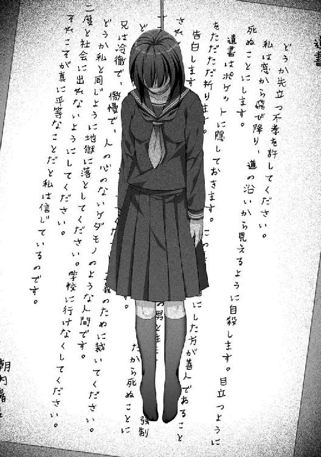
※ ※
昼光は雲で遮られている。天気は悪化して雨の気配がしていた。
美菜は腰を落とした。構えたブーメランが手から放れて低空飛行した。
灰褐色のうさぎは迫りくる風切音に仰天して逃げようとした。動きを読んだかのようにブーメランが追いつめる。衝突によって頚椎がへし折れ、首が不自然にかくんと曲がった。血反吐をまき散らかして地面に伏し、絶命した。
鼠色の石灰岩が転がった。うさぎは我が家まで後もうひと飛びだった。黄色く染まった雑草が点々と生え、起伏の激しく穴だらけの岩場はうさぎの巣穴にぴったりだった。
美菜はうさぎの長耳をわしづかみにした。首筋に刃を当て、ためらいなく寸断した。身体を逆さにして血抜きをする最中、ふと悪戯心のような好奇心のような感情が芽生えてきて、うさぎのしたたる血を指に落として口に運んだ。
喉の渇きを癒そうとしたが、血生臭いのは当然として微かに塩の味がする。土中の塩分に執着でもしていたのか。今日の獲物は高血圧だったのかもしれない。だから夜行性のくせに朝起きていたのか。
「まずい......栄養価は高いかな？」
ブナ科の硬木で作った小型ブーメランを拾ってベルトとスカートの間に差した。
朝の天気の機嫌はまだ悪いが、今日もすこぶる体調がいい。
目の前に内陸へと続く絶壁が見える──また訓練がてらクライミングをしたくなってくる。
血だらけの手をわきわきと動かした。そのせいでうさぎを取り落とした。しゃがみこんで苦笑いして拾った。自分はたまにうっかりするくせがある。父親に散々指摘されたが結局直らなかった。
氷壁のような目をした厳格な父をふと思い出す。冷静沈着で戦闘技術もあり、目端も利いて適切な判断力も備わっていた。
しかし、南アフリカの反政府軍が低木に仕掛けたロシア製Ｌ字型クレイモア地雷を正面から食らい、もがくクワガタの足のように肋骨を体表の外に弾き出して絶命した。
どんなスキルを持っていようが不運なら死ぬ。誰でもそうだ。この世の誰でもふとした拍子で冥界の扉を開いてしまう。
あのとき、父が愛用していた自動小銃を拾って逃げ延びなければ──今頃は赤く直立したアフリカマホガニーの一部になっていたかもしれない。
それはそれで念願かなって親子水入らずで素敵なことかもしれなかったが、生き残ることを選んでしまった。
──背後から騒がしい足音がした。接近を知らせるためなのかもしれない。
「美菜ちゃん。サウンドトラップ仕掛けてきたぜ。ついでにあいつに花を添えてやったよ」
丈が半袖シャツを泥土で汚し、木製スコップとバールを片手に立っていた。
表情は優れないが瞳には妙な使命感があった。人死に触れて変わったのか。リアルな死体を間近で見て危機を抱いたのか。
それでもまだ弱々しい──瞳には恐怖が広がっていて、鋭角な顎先が細かく震えている。
死に誘われたルナの遺骸は燃やして埋めることにした。腐敗させるのもしのびなく、遺髪と骨を持ち帰ることが重要だと二人で考えた末の結論だった。
どことなく、丈の瞳の色が気になって美菜は尋ねた。
「唐宮さん、何か心境の変化でも？」
「いやさ......どうでもいいことを考えてたんだよ。あいつがなんか言ってたんだよ。小さい声でよ。あんな状態で死んでたに決まってたんだが。口から声が漏れた気がしたんだ」
「へえ？ なんて言ってました？」
美菜は手元のうさぎに視線を落とした。手の甲を生ぬるい血液が流れている。腹を裂いて臓物を指で挟み取る。
「お母さん、って言ってたんだ」丈は額の汗を腕でぬぐった。「俺にはいないけど、大事だったのかな」
「どうでしょうね」
うさぎの内臓がほの暗い岩穴に落ちる。ぼとりぼとりと落下して消える。淀みない手つきが止まった。
どこからか現れた拳大のウシガエルが内臓に舌を伸ばして捕えていたからだった。美菜はウシガエルの脳天にサバイバルナイフを突き落とした。悲鳴はあがらなかった。潰れた音だけがした。
丈は横向きに体勢を変え、遠くの青空を見ていた。どこか演技臭い仕草だった。
「俺を利用して楽に生きようとしてたし、こっちの好意を無視しやがったから......許さねえ、と思ってたけど、いざ死んじまうと虚しくてさ。やっぱ愛情のたいせ......何してんの？」
「食料調達ですが」
美菜は細紐で肉となった塊をまとめる。麻袋に入れて封を締めた。草葉の陰に置いたリュックサックの中に入れる。肩に背負う。
「今、俺さ。いい話してたじゃん」
「母親がいないから素敵なろくでなしになりました、というまでは聞いてましたよ。実に泣かせる話です」
「ええと、率直に言いたいんだが俺は君を護りたい。得体も知れない殺人鬼がいるのがよくわかった。そいつは幽霊みたい存在で、足音も立てずに移動して、俺たちの熱烈なファンだ。防衛するにはお互いに全裸になって馬鹿になっとけばびびるんじゃないかな？」
「目の下にクマを作っても下品なユーモアが出せるのはなかなかですね。軽蔑と関心が一気に湧いてきました」
「しゃべってねぇと落ち着かなくてな。まったく眠れねえよ。ホラー映画を見たクソガキみたいに夜中の物音にびびっちまう」
丈は落ち着きなく森に視線を走らせた。どこからか誰か出て来るのを恐れていながらも、かき集めた勇気で敵愾心を呼び起こしている。
だらりと垂れた左腕の先、中指が忙しなくジーンズの太ももを叩いている。
「一つ確認したいのですが、私を護るということは煙男と相対するということでもあるんですが、唐宮さんにはそういった覚悟はあるのですか？」
「あの幽霊とやり合うってのはゾッとするな。正直、一緒に逃げるくらいしかできねぇかもしれない」
「素直でよろしい。では眠る時に眠り、食べる時に食べるべきですね。タフな男性とはそういうものです。私のことはご心配なさらずに。様々な覚悟はできてますから」
美菜はさらりと言って歩み出し、丈の横をすり抜けようとした。その途中で鋭い声が飛んでくる。
「もう十日は過ぎた。ヒロトはあっちでしくじってるんじゃないか？」
動き始めた足が止まった。
確かに気になっていることでもある──悪い方向への予想もある。
どうするか。様子を見に行ってしまうか。たやすいことではある。どうなっているか非常に興味はある。
どこまで到達したのか、聞きたいということもある。声を聞いてみたい。
あの恋人に向けるとは思えない冷然とした声が恋しい。
丈は言葉を続けた。自分の話が真実だと誘導するようだった。
「殺られてるかもしれねえ」
「ヒロちゃんが死ぬとしたら、きっと自殺でしょうね。誰かに殺られるようなタイプには見えませんが」
ほんの一瞬。
肩がぶるりと震えたのを美菜は鋭く見逃さなかった──なるほど──色々と引き出せそうかな。
まばたきのスピードがあがっている。笑みがぎこちなくなっている。足首が斜めに傾いた。この場から逃れようとしている兆候。
心をえぐってみるべきか。また何か出てくるかもしれない。裂いておいて損はない。
「死に追い込んだのですね」
「ちがっ、ちょっと、待った。勘違いしないでくれ。俺とヒロトはデリケートな関係でもあるんだ。友達だが、お互いの領域をしっかり保ってる。だから君がどんな想像をしたのかわからないが、こんな状況だし、友情を保っていたい」
恐らくはヒロトに致命的なダメージが与えられ、それに丈が何かしら関わっていることは判明した。
もっと綿密に聞いてみたかったがひとまず引く。これはヒロトの心の扉を開くキーの一つだろうが、今は特に必要ではない。
「私を口説こうとしているのにですか？」
「フェアに戦うことは許されるはずだ。あいつは女に対して意気地なしだから、君が俺になびけばゲームクリアになる」
「あけすけに言いますね」
「自信があるんだよ。美菜ちゃんはどういう男が好み？」
だらっと相好が崩れる。リラックスしている。自分の得意な分野を語る時の丈は生き生きとしている。
「逆にお聞きしましょう。唐宮さんの好みはどんな女性ですか？」
「俺は美菜ちゃんみたいな賢い子が好きだよ」
「唐宮さん。あなたは思いつくことができないからそういうのですよ。女性を手玉に取っているつもりが、ただ溺れていただけだとまだ気づいていないのですか？」
「ああ、そうかもな。だけど......今こうして君と居ると楽しいし、全然飽きないよ。不思議な感覚だ」
「私は若干飽きてきました」
毒舌にも慣れてきたのか、丈は泰然としていた。
がっくりと両肩を落とした美菜は辟易してきた。
教えがいのない生徒を目の前にしている教師のような気分に陥っていた。
※ ※
舌が唾液で粘ついている。サイドボードに置かれた手近な水差しを飲んだ。生き返った気分になる。体調は快復傾向。どうにか、俺は動ける。
目を開くと赤音の顔が間近にあり、すやすやと寝息を立てていた。ベビーベッドで眠る幼子のような安らかな顔だった。起こすのがしのびなくてそっと掛け布団から這い出る。
布団の足付近にあったトランクスを拾ってはき、裸足のまま靴をはく。
水差しを探したが見当たらず、扉を開いて外界に出た。
地を支配する濃霧と崩れた滑走路の白線──視界が利かない。手でもやを横なぎに払いながら前進した。木立を通り抜けて小川の方によろよろしながら向かう。
砂利地で立ち止まり、顔面から水面に突っ込んだ。水を被ったことでぼんやりしていた意識が平常なものへと変化した。
「......水浴びしとくか」
川底へと足を踏み入れる。水深は奥へ向かえば一メートル強はあるだろう。靴底にぬかるんだ泥とぐにゃりとした水草を踏む感触が伝わる。じゃぶじゃぶと手の平ですくって肩に水をかけた。荒い波紋が静かに広がっていく。
風邪が抜けてきて、無意識のうちに蓄積していた疲労が出きったのか、体調が元に戻ってきている。身体の芯はまだ重石をつけられている気分ではあるが、
しかし──なぜか音がしない──あれほど騒がしかった鳥、虫、獣の声がなくなっていた。
水の臭いに混じって漂っていた腐敗した老木と茶色の濁った土の臭みが消えた。
三メートル先にあった対岸が白く霞む。茶土からせり出していた幅広の板のような形をしたマングローブの呼吸根が見えなくなっていく。
つむじ風もなく、真っ白な闇だけが周囲に沈殿している。
何気なく見あげた。上空も白雲が覆っていて、発光する太陽は丸い輪郭しか見えていない。
「お兄ちゃん」
真下から低い声がした。正面の水面にキリの姿が映っていた。
最後の時に見た冬服のままで、やや猫背で突っ立っていて、少しだけ口を開いて笑みを貼りつけていた。生前のままだ。生きてそこにいる。亡霊にしても血色がいい。
俺はこめかみをもむように押した。
意識は平常だったがどうやら──気が狂っているようだった。
「懐かしいが見たくない面だ」
「いいじゃん。こういう夢の中じゃないと会えないよ」
「水が冷たい。皮膚感覚もある。だるさと偏頭痛もだ。幻覚と幻聴を挟んで見ているのは不可思議だ」
腰まで浸かっていて、水をすくった。
手の平の指の間からポタポタと流れ落ちていく。
「赤音さんが大葉で鹿のもも肉を挟んだでしょ。あれはナス科で毒草の一種だった。脳神経が麻痺して幻覚作用を及ぼしてるんだよ」
「キリにそんな知識はない。であるならばお前は俺のイカれた脳みそが幻視してるだけだ」
「そうだ。せっかくだから謎解きをしようよお兄ちゃん。暇つぶしにさ。兄と妹が語り合うのは自然のことだよ」
キリの口ぶりは愉悦がこもっていた。
俺の心はどこか平衡としている。不思議とこんな状況でも波風一つ立っていなかった。
死人に会えば動揺するはずなのだが──意識が目の前の人間を虚像にすぎないと判断しているのか──なんにせよ。
「まあいいだろう。俺はお前に勉強を教えてやりたかった。なんでも質問をしてくれキリ。可能な限り答えてやる」
キリは目を輝かせた。生きているようだった。息遣いすら聞こえてきそうだった。
声も鮮明で、空間だけが歪んでいて、キリは生き返ったかのようだ。
くだらない。キリは死んだ。死人はよみがえらない。俺は妄想に囚われているだけだ。
それでもいいか──幻覚を見ていたとしても、特別に困る理由もない。
ここが現世ではなく冥府であるならば研究する価値もありそうだ。今はそんな気にもならないが。
「じゃあ煙男について教えてよ。どういう存在なのか」
「そんなつまらないことが知りたいのか？」
「この島に居る限りは避けられないことでしょ」
「単なる自然信仰だ。壁画は壁画にしかすぎない。人は理解できない現象を神の御業と考える。日本でも大化の改新が起こるまでシャーマンが幅を利かせていた。有名どころで卑弥呼といったところか。隋や唐から儒教や仏教が輸入され、規範や道徳が整備されていき、土地柄によって変化していき、密度の高い封建社会が進行していった。どんな国でも、どんな人種でも、奉るべき存在がいるものだよ」
「じゃあ、煙男も神様ってこと？」
「この島には断層が多く、四方に岩穴や絶壁がある。ミストの中を歩けば転落死することもあっただろう。岩陰から隙間風がふき、霧が人の形に見えることもあったかもしれない。つまりは擬人化された偶像だ。あの壁画の崩れた足場は墜落を意味してるのだと思う」
古代の煙男はそういうことでいい。
実際のところ完全なる怪物でも現れなければこういう推理で正しいはずだ。
「なるほどね。じゃあ瀬戸さんたちを襲ったのは誰？」
「はっきりとはしないが、犯人はある程度の機械の仕組みを理解して飛行機を破壊し、運動力学を駆使して殺人を遂行し、熟練した狙撃手のような忍耐強さで機会を待つことができる人間だ」
「それは世間では怪物って言うんだよ」
「人殺しは怪物だ。それは世の人間が認めるところだろう。日誌の情報から判断すれば殺人とされるのは三件。ロドリード、黒木、アラだ。シリアルキラーでありがちだが、人間を殺し、戦利品を持ち帰るくせもある」
「お兄ちゃんもコンクリート壁に叩きつけて半身不随にしたサッカー部の先輩の靴紐を持ち帰ってるしね」
「俺は過去を忘れないためにそうしただけだ。殺人の感触を反芻するためじゃない」
「物は言いようだよね」
「ロドリードは誰でも殺せる状態だった。黒木は体重百キロを越える巨体だった。矢で突き刺して引っ張り込んだとあるが、相当な太さの矢を背筋や大胸筋に突き刺さなければ引っ張れない。俺が着目したのは宙に浮いたということだ。平行であるならば足を引きずるはずなのに、飛んだとある。このことから、ロープは傾斜していたのだと考えられる、恐らくは滑走路の崩れたコンクリート片を高木に集めて一塊にして地面に落とすことにより、その落下エネルギーを利用して引っ張り込んだ。ロープは何本にも繋がっていて、黒木に矢を突き刺した後、樹木に巻きつけるかして固定していた部分を切断して発動させた。演出としては悪くない。素敵だな」
「アラは？」
「俺はアラもロドリードも立花も枝野も死体を確認していない。確認しているのは川に沈んでいた黒木と小屋に転がっていた瀬戸と思われる死体だ。黒木は骸骨の背の高さで間違いない。瀬戸は小柄だったのと、歯が割れまくって抜け落ちていたことから虐待を受けていたのがわかった」
「じゃあ、二人以外が煙男？」
「どうかな。飛行機部品を剥がし、バリスタのような固定砲台を作れる知的な者は瀬戸とアラぐらいだろう。ひとまず組んで黒木を殺した可能性もある。ロドリードを封じ込めたように瀬戸が誘導し、アラが仕留めた構図だな。瀬戸はアラを偏愛していたから、なるべく彼に罪がないように日誌を書き込んだ可能性がある」
「こんがらがるね」
「日誌は虚飾にまみれていた。すべてにおいて信憑性は五分だ。過去に興味はないが、地理的なものは信用に値する情報だと思っている」
「お兄ちゃん、真面目に一つだけ聞きたいんだけどさ」
「ああ」
「煙男に酸が効くとか、本当にそんな低ＩＱなこと考えてるわけじゃないよね？」
高慢さが鼻につく言葉だった。
なるほど、俺の深層心理にふさわしい。性格が腐りきっている。
※ ※
空き缶に小石を入れて蔓草を巻きつけ、木立の間に柵として紛れ込ませる。
誰がぶつかると空き缶の中で小石が転がって音が鳴る。簡単な仕組みであったのだが、上手に宙に浮くように仕掛けるのに丈は苦労した。何かに空き缶がくっついてバランスが保たれれば音は鳴りにくい。
空き缶は島に来た当初、男女が別れてからの女性陣の食べ終えた残骸の一つだった。中身はありつけなかった。つい、濃厚な香辛料の味を思い出すと生唾を飲んでしまう。
茶髪女──赤音にいつか借りを返すべきか。恐らくだがヒロトと仲良くなっている可能性もある。優先度も低い。有象無象と同じくちりあくたのような存在だ。忘れた方が精神的によいのかもしれない。
丈は額の汗を腕でふいた。
美菜の指示通りにことは行ったが、どうも心配性の気を起こして結び目を確認しに戻ったのだった。
神経を尖らせる。周りの木立にはどこにも異常はない──周囲に気配はない。
「......は？」
どういうわけか、こんがりと香ばしい匂いがした。パンの焼ける匂いだった。かれこれ一ヵ月近く嗅いでいないものだ。
丁度よく餓えを実感した。
すきっ腹を片手で押さえつつ、藪をかき分けながら進んだ。
森の空地でしゃがみこんでいる美菜の姿があった。フライパン代わりの石を弱火で熱している。
耳がぴくりと動き、首が後ろを向いた。実際の歳よりもかわいらしい顔が不満げなものに変わる。
「ちぇ」
「なんで舌打ちしたの？」
「いえ、嗅ぎつけられたかな、と思いまして」
「パン？」
「パンですよ。あげませんからね」
「美菜ちゃん、なんか俺に冷たくない？ ていうか、どうやって小麦粉なんて手に入れたの？」
「小麦粉ではないですね。サゴヤシですよ。でんぷん質なんでパンに相似した物が作れます。ほら、ナンみたいでしょ？」
ぷっくら膨らんで柔らかそうな白い生地を箸で持ちあげる。
美菜の説明によれば樹幹にでんぷん質が溜まる特殊なヤシ科の木であり、死ぬほど苦労して採取したらしかった。
ビーバーのようにこつこつと幹を削り、崖から叩き落として破壊し、内容物を水バケツに入れてうわずみを取って乾燥させて粉末にした。
沙穀米ともいわれ、実を為さずとも採れることから農業利用の価値が高いらしいものだという。
講釈は学校の教師よりも無駄がなかった。整然として聞きやすい。
「なんとなくパンケーキが食べたくなったんですよ。さっき蜂蜜も採れましたし」
「美菜ちゃんは〝なんとなく〟で色々できるからいいよな」
丈は横に腰掛けると美菜は生地を箸でひっくり返した。
表情は落ち着き、手つきは淡々としていた。人を殺すモンスターがどこかに息を潜めているというのに、怖がったりしていない。
美菜は怒りや悲しみ、憎悪や悲嘆が薄く見え──濁りが少なく──たまにだが透明な存在に見える。
ヒロトは同じようなものだが、やつの心はルービックキューブのように変質するので分析する気になれない。
あらゆる感情をかき混ぜてブロック状に固めて整理してピラミッドのように積みあげている。嫌味なことに、過去を忘れたりもしない。もしかすれば誰かを赦すことすらないかもしれない。たまにゾッとするところがある。
やつのことを考えるのはやめよう──丈は意識をパンに集中させた。こんな炭水化物を口にする機会は滅多にない。
「あのさ、マジで俺にくれないの？」
「そこまで意地悪はしませんよ。これが焼けた後ならあげましょう」
「これは美菜ちゃんのものか。まあ苦労した人間が最初に食うべきか」
「いいえ。ルナさんに差しあげようと思うのです。彼女は性格からしてパン派っぽかったですからね」
はにかんだ笑みを見て、丈は一瞬だけ胸が高鳴ったのを理解した。
ずっと操っていた赤い蜘蛛の糸は思い通りに飛ばず、手の先から腕をつたい、首筋に絡みついてきている。
捕らえるつもりが囚われた──それもいい。それも楽しいではないか。人生はこれだからいい。
勝利の感触は望外に甘くなるだろう。まだ揺るぎない自信は砕けてなどいない。
※ ※
うんざりする話題が続いた。無人島にいる殺人鬼。アイスホッケーのマスクと斧を持っていて襲ってくるくらいわかりやすければよかった。
キリとの会話は気だるかった。思い出せば、キリは物事を斜に見るのが好きだった。性根が俺以上にねじ曲がっているせいだ。
「現在の煙男の危険度は低い。まだゴムボートを破壊しただけだ。瀬戸たちのように俺たちは争いあうつもりはないし、彼の思惑通り進むとは思えんな」
「お兄ちゃんが海岸で仕掛けた罠に残った血は人間のものじゃないかもしれない。そう、煙男のものじゃないかもしれない」
突き放すような指摘──正しかった。
赤血球。ヘモグロビンさえあればすべての生き物の血は赤い。その通りだ。人間の血とも限らない。
「煙男は自分を間抜けだと見せかけた。お兄ちゃんは気づいていたけれども、確信がなかったから罠にハマッたことにした。誰も動揺させたくなかったから。自分だけ知っていればいいと身勝手に考えていた」
「ずいぶんと......賢いなキリ。そうだ。確かに焦げた毛髪のような獣臭がした。微かに麝香が漂っていた。動物の血の可能性はある。認めるよ。こっそりと始末するつもりだったが、見事にあてが外れてるよ」
なるべくなら、誰にも人殺しはして欲しくない。或いはそれに類する暴力行為をして欲しくない。
煙男の問題については俺がさっさとカタをつけるつもりではあった。その方が面倒が少なくていいはずだった。
「なんでそんなに傲慢なの？ 私がどうして死んだか忘れちゃったの？ あんなにもの悲しい事件を忘れたの？」
「忘れてなどいないさ。俺はお前の死を嘆き悲しんだ。それなのにお前の遺書によって牢屋にぶちこまれた。目の前が真っ暗になった気分だった。どうにかした後も俺は半死人になって一ヵ月間ほど生ける屍になっていた。家がマスコミに撮影され、俺の名前がインターネットで有名になって、奨学金が消滅した。父さんと母さんは引越しのために不毛な口論を繰り返し、よく喧嘩をするようになった。俺はまさに純粋な地獄へと招待された」
「あー......うん。違うって違うって......お兄ちゃん。そんな世間体を保つ嘘じゃなくて、私の死体を見つけて、それからお兄ちゃんはどうしたの？」
「泣き崩れたよ。両膝を床につけて、動けなくなった。憎くても愛していたお前が死んだからだ」
「だからさ、それは外向きの話でしょ。ここには誰もいないよ。私とお兄ちゃんだけ。真実を見つめようよ」
真実──俺にとって都合の悪いことになる。
これは自らを見つめなおすということか。俺に自戒の念でも湧いているのだろうか。
がらにもなく良心が発露されているのか。こんな腐った形で露出しているのならば死ぬほど皮肉だった。
キリはショーの合図を告げるように両手を大きく広げて小首を傾げた。口元が緩んだ。獰猛な失笑。
「早朝、お兄ちゃんは道端を歩いていた通行人の奇声で跳ね起きた。私の死体を見つけ、すぐさま引っ張りあげた後に衣服をまさぐり、遺書を発見した。文面を読んだ」
「お前を助けようとしたんだ。蘇生措置を施そうとしただけだ」
キリは俺の言葉を意に介さなかった。歯牙にもかけず無視した。
「そして握り潰そうとした。でも、賢いお兄ちゃんは考えた。『他にも遺書がある可能性が捨てきれない。警察が来るまで五分程度か。捜索する時間がない。乗り切るしかない』ってね」
「......違う。馬鹿なことを言うな」
「お兄ちゃんは嘆き悲しんだりしなかった。脈拍は安定していて、涙どころか汗一つかいてなかった。私の死を見てもそうだった。誰がどうなったとしても知ったことじゃないからだよ」
「違うよキリ。俺は本当に悲しんでいた。お前はわかってない。俺は冷静に行動していただけだ」
「お兄ちゃんは機械仕掛けの心臓を持ってるんだよ。それがお兄ちゃんの心なんだ。一定のリズムを刻んでいて、それは永久に変わることがないんだ。だからお兄ちゃんは悪魔なんだよ。否定できないでしょ。だって愛そうとした私の幻影と再会してもお兄ちゃんは眉一つ動かしてないよ」
反論のために開こうとした唇が閉じた。
キリを黙らせる方法を幾つか考えた。反論されるのが怖くなった。何を言っても受け入れてもらえない気がした。
ひとまず目をつむってキリが消えることを祈った。消え失せて欲しかった。目を開いた。願い通りにはならない。
キリは冷笑したままだった。
「話を続けるね。お兄ちゃんは自分が倫理や道徳を大事にし、世間での体裁を一定に保ち、人生を成功させる努力を惜しまない人間だと知っていた。その一方で法規範から外れた考え方も持っていた。自分に害を与える人間を決して許さず、無慈悲に葬り去ることに一切のためらいがなかった。そういった社会との隔絶した考え方が自分を窮地に追い込む可能性を除外しなかった。だからこそ、警察組織と対峙する可能性を兼ねてから意識していた」
「できるだけ、まともに生きようと努力している。誰だって刑務所の世話になりたくないものだ」
「危機に対してお兄ちゃんの動きは迅速だった。私の死体を放り捨てて階段を滑り落ちるように降りた。物置に足を運び、クローゼットからアコースティックギターを取り出し、一弦をハサミで寸断した。自分の部屋に戻り、スティックタイプのボイスレコーダーを丁寧に結び、小さな輪作って前歯に引っかけて胃の中に押し込んだ。糸は舌の裏を通し、前歯には唾液をつけることも忘れない」
「キリ」
「勾留されてからも食事を摂らず、水を舐めただけ。うまいことショックを受けているように見せた」
「ショックは受けてた」
「ボイスレコーダーは特注のアルミ製で金属探知機をかわした。取調べ中は常にへろへろで、ずっと動転しているふりをしていた。おどおどして、精神的に脆く見せる作業を繰り返していた」
「アルミは丈夫で軽いから選んだだけだ」
「取調べの小太りの警官は顔がむくれていて、わけのわからないことをしゃべるお兄ちゃんに苛立っていた。シフトで無理をしていたのか、前日の深酒の影響のせいもあった。警官は資料からお兄ちゃんが秀才だと知っていたけど、自分のためならあらゆる手段を問わない怪物だとは知らなかった。だからお兄ちゃんを誘導するために様々な質問を浴びせ、圧力をかけた。自白さえすれば一件落着で、いつも通り世間というベルトコンベアから流れてきた目の前のクズを片付けられると思っていた」
「手段は選ぶ。限りなく法に抵触しないようにしている」
「『妹とは本当に何もなかったのか？』『な、何もしてないです』『性的な目で見たことも？』『す、少しだけ......そ、そういうことはあったかもしれません』『ヤッたたんだろ。悪いようにはならない。さっさと言った方がお前のためだ。人生は長いもんだぞ』『あ、あ、あなたみたいなだらしない人に説教されたくないです！』『てめえがやったんだろうがっ！ 妹の観音に突っ込んで気持ちよかったか!?』」
「非常に高圧的な取調べだった。俺も気が立っていて、つい生意気を言ってしまっただけだ。決してわざと誘導したわけじゃない」
「そういうことでいいよ。面会した人権派の弁護士さんにレコーダーを渡した。きちんと編集してマスコミに手渡した。これで流れが変わった。ただでさえ世間に注目されていた事件であり、警察はお兄ちゃんが厄介者だと理解した。だから警察は私と淫行したサラリーマンに標的を変えた。その方がいい落としどころだったからね。私のあの遺書は交際相手を庇うことで書かされたことになった。証拠能力としては低くなった。取調べの警官はキャリアの署長に恥をかかせたことにより北アルプスに左遷された」
「北アルプスは空気もうまいし水も綺麗だ。かわいい動物たちも見れるし、栄転じゃないか？」
反論は通じない。今のキリは俺よりも賢い。氷のような考え方には感情が一切混じらない。
「お兄ちゃんは『妹を司法解剖してくれ。あいつの体内から一滴でも俺の残留精液があったら罪を認める。膣洗浄されない限りは残るはずだ』とまで最後に言い添えた。お母さんは反対してたのにね」
「司法へ協力する姿勢を示しただけだ。善良な一市民として当然の義務だ」
「釈放されてから世間では引きこもっていたとされる一ヵ月。お兄ちゃんはほとぼりが冷めるまで引越しのバイトをして、そのお金で東北のプロサッカーを観戦しに行った。ポップコーンを胸に抱え、コカコーラを片手に腹の底から喚声をあげてた」
「俺だって本当はペプシの方がよかったよ」
あまりの責め苦にやけくそ気味に答えた。
「そういう問題じゃないよ。地元のフットサルクラブに入会して、楽しい汗も流してた。センターサークルからシュートをしながら私の死を悼んでたの？」
「人間そういうものだ。いつまでもめそめそして嘆いてたら先には進めない。誰が死んだって次の日のメシは食うものだ。それでも、俺の心にはいつでもお前がいたよ」
「三週間引越しのバイトをして、あまりにも物分りがよくてハキハキしてたからバイトのサブリーダーに抜擢されたのに？」
「雇われたうえで最善を尽くしただけだ。俺の自己都合に他者を巻き込む必要などない」
「お兄ちゃんは人の善性が利用できるから好きなだけで、それを大切にしようとはこれっぽっちも思っていないんだよ。だから平気で非道な行いに手を染めるんだ」
「キリ、俺を非難するのは別に構わない。お前が亡霊になって出てきてるが、俺はこうして受け入れている。何が不満なんだ？ いくら俺が人でなしで世の中のために一刻も早くくたばるべき存在だとしても、そうなる可能性は低いぞ。俺はしぶとく、粘り強く、狡猾だ。聖人になるために今日からガンダーラでも目指せば満足なのか？」
「ううん。これは良心からくる警告だよ。お兄ちゃんはきっとルナさんも唐宮さんも赤音さんも──私に似た美菜さんも含めて、その機械仕掛けの冷徹さで皆殺しにすると思うからさ」
「そうだな。茂みに核爆弾のスイッチが置いてあって、俺がうっかり踏んじまうことはあるかもな。大いに気をつけるよ」
「きっとそうなるよ。確信があるもの。私がお兄ちゃんのことを誰よりもよく知っているもの」
水面のキリは片手を持ちあげて手を開いたり閉じたりしていた。不意に片足のカカトを後ろに回し、スカートの裾を指先で摘んだ。
「きっとそうなるよ」二度も繰り返し、キリは深窓の令嬢のような振る舞いでお辞儀をした。「お兄ちゃんは誰も、本当は自分すらもろくに愛してないから」
薄っすらとキリの姿は消えた。
水面に見慣れた自分の影が戻ってきた。
──どうやらゲシュタルト崩壊が終了したようだ。
コオロギのリズミカルな鳴き声が聞こえた。清流の小波が戻ってきた。
視界が開けてきた。突風が吹き荒れた。風鳴りとともに濃霧が飛散していく。
喉がからからになっていた。胸にしこりのようなものが溜まっている。深呼吸した。肺の中に新鮮な空気を入れた後、言葉が口から漏れ出した。
「気に食わないな」
俺は心神喪失状態に陥って幻覚を見ていたというのに──ぼろくそに非難された。
精神がおかしくなっているのなら、支離滅裂な言葉をぶつけられるべきだ。醜く歪んでホラー映画に出てくるようなドロドロの化け物を出すべきだ。空間も腐り落ちたような色彩に染まればよい。正気をかき乱す演出が現れるべきだ。
どうしてそうならない。まるで納得がいかない。何もかもがうまくいかない。
なぜキリが出てくる必要がある。
「俺が苦しまなかったとでも言いたいのか」
衝動的になって川面に拳を落とした。顔面に水飛沫がかかってくる。目玉が濡れて視界がぼやけた。熱くなった頬を冷やしていく。無性にサッカーボールが蹴りたくなった。この際ゴールポストだっていい。
破壊的な衝動が叫び声に変わった。怒りを吐き出せば冷静さが戻ってくる。
ああ、そうだ。そうだとも。ようやくわかったぞ。わかった。
俺にとってキリは。
「おーはーよーう！ おかえりなさい。どこ行ってたの？」
「自分と話してた。自分がどんな人間だったか再認識したよ」
「それ知ってる。自分探しってやつでしょ。なんでもやってみないと向き不向きなんてわからないよね」
「正常か異常かも案外わからないもんだったよ」
小屋の中央を横断して隅の作業台の前に立つ。
蔓草で縛った二匹の魚と三匹のカニをまな板に置いた。
水浴びついでに朝食を獲ってきたが、冷えた身体は姿を見せ始めた太陽によってあぶられつつある。気温は上昇していく。常夏の島を包んでいた暗雲は散歩に出かけた。
赤音はベッドでシーツに包まり、寝転びながら両足をバタバタさせていた。
顎に両手を置いたかと思えば、にまにまして薄気味悪い笑みを浮かべている。
「ご飯にする？ それともあたしとする？」
「赤音ともうセックスをする気はない」
棚から取り出した柳刃包丁を手に持ち、刃筋を立て、ざりざりと鱗を落としていく。腹に指を入れて黄色い内臓を抜き取る。
マスっぽい顔立ちだ。このぎょろっとした目玉はきっとマスに違いない。確信はないが。
「えっ、ええっ......よ、よくなかった？」
「行為自体は最高だった。だが、考えたのだが明らかに友達の範疇を越えている」
え、今更？ みたいな顔で赤音はあんぐり口を開けた。俺も似たり寄ったりの気持ちではある。
頬杖が崩れてぺたりと顔をシーツにつけた。視線は俺から外していない。恨みがましいものになっている。
「えーっと、セフレでもいいよ」
「今でも友達だとは思っている。セックスは抜きにしたい。心配しなくてもこの島からは脱出させてやる」
「そーいうんじゃなくてさ」
しゅるしゅると衣擦れの音がしたかと思えば後ろからにゅっと両手が伸びてきた。背後から素肌で密着されている。ぬるい体温が浸透していく。
耳元に吐息が侵入してくる。首筋の産毛に火が点いたような錯覚があった。
「楽しむだけでいいんだよ。こういう環境だし、誰も責めないよ。美菜みたいなお堅い女よりあたしの方がいいと思うよ？ それに」
赤音は一拍置いた。手がしなやかに伸びて胸板の中央線を撫でていく。
「こういうことしてるってバレたら困るでしょ？」
「お前との行為は美菜には伝える。その結果、破局したとしても構わない。彼女との交際は持続したいものだが自業自得だ。だが、だからといってお前と交際をスタートさせるつもりはない。それは許されないことだ」
息を呑む音がした。
包丁は滑らかに動く。三枚下ろしがうまくいった。竹串を刺して形を整える。身の少ないカニは香草と混ぜてスープにしよう。
「あたしのことが嫌い？」
「いいや、好きだよ。美菜と付き合っていなければ赤音と付き合ってもよかった。ただ、ケジメは必要だ。この島から全員脱出し、落ち着いた環境に戻ってから俺のことを見てみるといい。取るに足らない男だとわかるはずだ。お前は俺に愛想を尽かし、軽蔑し、頬を叩く。俺はいつもそうだった。これからもそうかもしれない」
平気で美菜を裏切っているこの状況を考えれば、不実である俺は女を扱うことが不可能な人間かもしれない。
そうであったのなら、それでもいい。何も構いやしない。
当面、この島を脱出して全員を家に帰してから考えることにしよう。空調が調整された部屋でソファーに腰掛け、足を組んでジュースでも飲みながらゆっくり考えればいい。
今はこの状況をクリアすることが大切だ。それが優先順位において最上なのだから。
※ ※
「夜逃げみたい」
後ろから聞こえた赤音の感想は俺も思っていたが口に出さないことだった。
工具や日用品を死ぬほどバックパックに詰め込んだ結果、パンパンになって開口部のジッパーからはみ出してる用具もある。物欲のままに何もかも持っていきたいものだが、そうもいかない。
帰り道のほとんどは緩やかな坂道ではあるのだが、藪の中や道なき林道を通るのではみ出したスコップがヒットしてつんのめることもあった。
もつれ合うように繁茂している草木は生命力に満ち溢れ、南国特有の大きな葉とカラフルな花々は見るだけならいいが、通行には邪魔でしかない。
手に持って道を切り開くのに使っている斧が一番重い。こいつだけで五キロはある。構造的に粗雑すぎる。インパクトの金属部分をスリムにすべきだ。
「病み上がりなんだから、もう三日くらい休んでからでいいのに。急ぐ必要なんてなくない？」
先住者の遺品でもあるデニムホットパンツと半透明のキャミソールに着替えた赤音は後頭部に両手を回しながら退屈そうに言った。
危機感がなくなっている。素足も放り出して女の色気を醸し出している。
相変わらずギャルっぽいやつだ。まあ年齢的にもそうだし、たまにだが吊り目もどきりとするほど迫力がある。
「俺は島からさっさと脱出したい。命の危険もなく、食料や飲み水も衛生的な環境に移動したい」
「あたしもそう思うけど、でも原始生活もいいかな、って思うよ。人との付き合いないからわずらわしいことないしね。このまま二人きりの話だけどね」
含みのある言葉。
歩きつつ振り向いたものの、横顔に扁平型の葉が交互に三センチ間隔で生えている蔓が目元にぶつかった。
「いて......まあ、浜に戻ったら唐宮には話すよ。あいつも馬鹿じゃない。わかってくれるはずだ」
「あたしはあの人、嫌い。宇宙に放り出されて太陽に焼かれて欲しい」
「女の敵には違いない」
言いながら藪に斧を叩きつけた。
ぐしゃりと低木が折れ曲がって木屑が飛ぶ。ある程度、迂回しなくてもよくなった部分は助かっている。
「あのさ、メールアドレスは交換していい......？」
「ああ」
「たまにメール送っていい？」
「ああ」
「たまにえっちな写メあげよっか？ 突き出したお尻とか興味ない？ スカートをたくしあげたパンツとか撮って送るよ」
「ああ......じゃねーよ。やめろ。俺をはめようとするな。俺に一生恋人を作らせない気か」
「落とそうとするくらい、いいじゃん。あたしといた方が幸せになれると思うよ。私、エロくて馬鹿だから扱いやすいよ」
「そういうことを自分でいうな。ろくでもない俺のことは忘れろ。この島から二十日以内に出してやるし、俺はまだ美菜が好きなんだ」
「そんなにあの子いいかな。羨ましくて、憎くなってきちゃうな」
「昨日も言ったが、彼女に手を出さない方がいい。これは美菜のためじゃなくてお前のために言っていることだ。彼女の身のこなしと洞察力は俺よりも一段階上なのはわかってるだろ」
赤音は悄然として身体を縮めた。腹立ち紛れに足元の根を軽く蹴る。
「わかってるよ......五百キロも離れてるのにそんな簡単に行く？」
「海里にして二百七十だろ。あくびが出るほど楽勝だよ」
「そういうところは自信あるんだね。まあ、いい身体してたけど」
にやりとされた。
性交してから、赤音は余裕が見え隠れしている。単純に調子づいている。
俺の目の錯覚かもしれないが──色を知って俺も見方が変わったのか。
雑念が昔より入るようになった。太ももや乳房に触った手触りを思い返し、また触れてみたくなるのは生存本能の為せる業か。
抑えこむべきだ。こういった情動はマイナスにしかならない。いつも通り、スイッチを入れ替えればいい。
取りとめのない会話を繰り返しながらも数時間ほどで海岸と内陸を分断している絶壁に到達した。帰り道はほぼ下り坂で歩きやすかったこともある。
隆起した崖を見て赤音はひぇっと情けない声を出した。ここから降りる想像をして恐れをなしたのだろう。
足を踏み外せば死は免れない。
崖近くのしっかりと根を張った樹木をロープで結び、用意しておいた丸型の木板に縄を通し、ブランコのような形に調整する。
前に縛って文句を言ってきたのでこれでいいだろう。
「これに座れ。先に降ろしてやる」
「縛らないの？」
「縛って欲しくないんだろ」
「今はそういうプレイにチャレンジするのもイイかな、って思って」
「お前、本当にシモネタが多くなったよな......」
「そりゃあ、ヤっちゃいましたし」
「俺は言いわけはしないよ。いい経験を積ませてもらったと言っておこう。ありがとう」
「どういたしまして。もう一発いかがですか」
「酒を勧めるように言うな。お前は美しい。もっと慎みを覚えれば男もたくさん寄ってくるようになる」
「はい。女の子にモテなかった先生の言うことを信じ、頑張ります」
おどけて赤音はブランコに腰掛けた。
脇に伸びているロープをつかんだ。俺はブランコごと赤音の身体を抱え、崖下に向けて運び丁重に降ろしていく。
握ったロープにずしりと重みがかかる。両足を突っ張り、交互に手元から放す。一連の動作に意識を集中させた。気を抜けば身体ごと持っていかれるだろう。
「なんかさー、壁にぶつかるんだけどー！」
「俺は背中がかゆくなってきたよ」
「ちょ、放さないでよっ！ 放さないでよっ！ 絶対に放さないでよっ！」
「ははは」
「ふざけたら死んじゃうからねっ！ あたし死ぬからねっ！」
肩の三角筋が悲鳴をあげている。五指に全霊の力を込めているが引き締めなければあっという間に手を放してしまいそうだ。
残り三十メートルか──長引くと疲れる。赤音には悪いが、勢いをつけさせてもらうか。
そうなれば多少の振動は覚悟してもらわなければならない。
「うきゃーっ！ がっくんがっくんしてるっ！ 大丈夫だよね!? ねえっ！」
休む選択肢もあるが、まあ必要ないだろう。気合を入れてことを進めよう。
そうやって──赤音を降ろしきって一息ついた。
額に汗の玉ができている。やや腕も痺れている。病み上がりのせいか体力が落ちているのか──情けない。
航海に向けてもっと過酷な訓練を積んでおくべきだ。地理が間違っていた場合は数千キロの旅も覚悟せねばならない。
安全弁としてベルトに通して輪を緩く巻きつけ、背中に手を回して握った。懸垂下降はやったことはないが、理論的にはこれで正しいはずだ。
降りるまでそれほど時間はかからなかった。思い切れば登るよりもはるかに楽だ。
ロープを失うのは痛手だ。解ける縛り方は俺にはまだうまくできない。内陸にまた行くことがあれば必要ではあるのだが。
地に降り立つと、赤音が剣呑な顔で誰かを睨みつけていた。
──出迎えに来たらしい美菜に向けて。
きっと声を聞きつけてここに飛んできたのだろうが、どういうわけか彼女も無表情だった。
互いに無言なのが圧迫感を覚えさせる。どちらの表情も怒りが見えない。無機物を見るように平坦で両者ともに相手を見下してる怖さがあった。
ひとまず、美菜に歩み寄った。
「ただいま。遅くなったが、様々な収穫があった。だが、日誌の隠された机に埃を潰した手形があったんだ。あれは君のか？」
「おかえりなさい。最初にヒロちゃんが言った通り、人を見つければ私たちの旅は終わりでした。島の周辺を探索する際に私が内陸に向かわない理由はないでしょう」
「どうして黙っていたのか聞きたい」
語気を強めたが、美菜はどこ吹く風だった。
「現実的な尺度を捨てれば、まだ旅を終えたくない人間も居るものですよ。今の赤音さんみたいにね」
後ろを振り向いた。赤音は気まずそうに顔を逸らした。
旅を終えたくない──帰りたくない？
理解すべき考え方なのか。いかにも情緒的で不合理だとしても。
「俺は旅を終わらせる。君が何を考えているかは俺は関知しない。どこの誰であろうと俺の邪魔はさせない」
「あら、ヒロちゃん。なんか私に冷たくなりましたね。大丈夫ですよ。今は二人で帰りたいと思ってますから」
美菜は唇に指をあてて目尻を垂れ下げた。窺うように見あげてくる。
大きく透き通るような茶褐色の瞳、まつ毛が斜めに跳ねていて、相変わらず愛嬌があってかわいらしい。俺の心からピンポイントで罪悪のみを串刺しにする明敏さを伴っている。
軽く肩をすくめた。
「俺は何一つ変わっていないよ。元々、こういうやつさ」
「まあ......いいでしょう。旅を終える方法をお聞きしましょう」
「船を作る。当初言った通り、俺が一人で行く」
「煙男はどうしますか？」
「ひとまず、放っておこう」
美菜は足首を絡ませた。とんとん、とつま先を地面にぶつけている。
「私の父は自衛官でして、レンジャー部隊にいました。主に潜伏、索敵、追跡、追跡回避が得意でした。訓練では山で潜伏している模擬兵の隊員を見つけ出し、自分がもっとも素早く背後に回って首を掻っ切れると誇っていました。私もあらゆることを習いまして。技術力は高いと自負してます」
「訓練内容を教えるのは守秘義務違反にならないのか？」
「父は死んだので構いません。私が追跡できないレベルが煙男でして、ルナさんを殺害しました。それでも放っておきますか？」
「ルナさんが死んだのか？」
「ええ、無残に殺されました」
息がつまった。後ろの赤音からも身を硬くした気配がした。
ルナさんが朗らかに笑っている顔を思い出した。死ななければならないほど悪い人ではなかった。
目を閉じた。目を開けた。開いた手の平をなんとなく見つめる。
予想していたように感情が湧かなかった。泉のように湧きあがってくる悲しみもなければマグマのようにこみあげてくる怒りもなかった。心は不毛な砂漠のごとく渇いている。死体を見ていないからかもしれない。見ても何も思わないかもしれない。
あの時、連れてってあげたら助かったのにね──お兄ちゃんが殺したようなものだよね？
遠く遠くから聞こえてくるキリの呟き。俺のくだらない幻想。さして心には響かない。
「俺が見つけたら排除する。どちらにせよ、船は必要だ。ここから脱出するために作らない理由はない」
「前から思ってたんですけど、ヒロちゃんって格闘術が得意なんですか？」
「人と争った経験は多いとはいないが、数値で示すなら握力が七十八キロで背筋力が百七十キロだ」
「なかなかご立派ですね......さて、お昼ご飯としましょうか。お疲れでしょう？」
「食いながらミーティングしよう。食料はあるか？ 唐宮は回復したのか？」
「サンドイッチがありますよ。私を口説こうとするくらい元気ですよ」
「俺も唐宮の肩を刺しておけばよかった。だが、やつらしい。許してやってくれ、ブロック塀を歩くメス猫にだって反応しちまうんだ」
すっ、と自然と手が取られた。
五指が絡まる。にっこりと微笑まれ、促されて歩かされる。
美菜の後頭部は結ってまとめられて垂れていた。裾が広がってうねる黒いフレアスカートを引き締める真鍮のベルト。茶色のブラウスは袖口が膨らんで手首まで伸びている。
上下とも生地が厚く、軽装だが露出度が低くなっている。
彼女は貞淑としていた。俺と違って。
「赤音、行くぞ」
「あ、うん......」
所在なく立っていた赤音に声をかけた。戸惑っていたようだが何かを決心するかのように頷き、俺の首に絞めにきた。
いや──おんぶお化けのように飛び乗ってきた。
ぎょっとしたが、これくらいでバランスを崩したりはしない。重みで一瞬だけ膝が笑ったが。
柔らかい感触が耳たぶを擦る。
「いやっほうー。楽ちんだー」
「ふざけるな」
「まあまあ、いいじゃんー」
「......ずいぶんと仲良くなりましたね」
握られた手が痛んだ──握力には自信がある。自信はあるが、美菜は手の急所を知っている。
ゴリゴリと手関節が外されそうな力強さだ。
「仲良きことは美しきことかな」
横に目を逸らして口ずさんだ。手首の圧力が増加した。
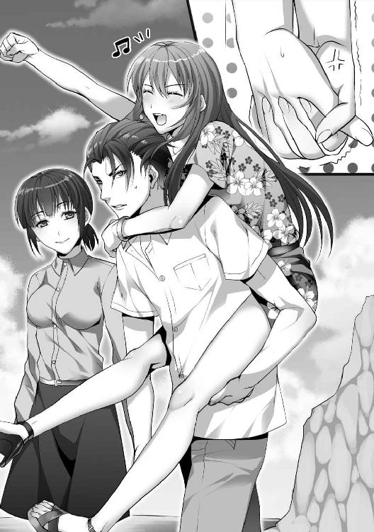
もしかすると、現在進行形で二股をかけている形になっているのか。
そうではないはずだ。そうでないに決まっている。
断じて。
※ ※
「船というと最初に空気力学に適した形を想像するだろうが、俺は構造力学を重点に置きたいと思っている。つまりは静定構造を重視し、不安定な揚力や風圧を利用する船体の欠点を克服しようとは思わない。ここでいう風圧とは帆柱が受ける圧力であって、これらを操作する困難さと安定性に疑問があるからだ。船員は俺一人だし、貨物も積むわけでもないので居住スペースを広くする必要もない。こうなればコンパクトかつ移動性に優れた形を取ることが最良だと考えられる。それでいて作成が容易であることも推奨される。ゆえに」
「長い。簡単にしろ」
不機嫌な面をした唐宮が俺の話の腰を折った。
懐かしの野営地──砂浜から近い林の中で三人が切り株に腰掛け、俺が演説をしている格好になっている。
合間に食べるサンドイッチはうまい。干し肉と甘い白パンはほどよくマッチしていて、塩漬けにして潰した菜っ葉──漬物が挟まれている。
久々に良質なエネルギーが身体の中に入ってくる。
船を作る作業は俺一人だけで行うつもりはない。だから詳細に説明して皆に納得して欲しいものだったのだが説明がクドすぎたか。
「幸いにして、この島には原生林が多い。自然のまま成長した幹が太い杉があった。切り倒してカヌーを作る」
「ダグアウトカヌーですか？ オールはダブルタイプですか？」
「オールはシングルを二つにする。構造的にはダブルアウトリガーカヌーの変形にする。枕木は竹で作って均衡を保つのに利用する」
「ねぇ、一般人にもわかる言葉でしゃべってね」
「あれだ。イカダにしねえのか？」
「そうだな......わかりやすいように設計図を見せるよ。構造的には単純だよ。カヌーを挟んで浮力体を二つつけ、ジャングルジムみたいな骨組みだけの簡易屋根も作る。櫂は二本で美菜が言っていたダブルってのは両端に水かきがついてるんだが、俺は一つのだけを使う」
いいながらノートに書いておいた平面図を三人に見せた。ちなみにダグアウトカヌーとは一本の樹木を切り出して作るカヌーのことだ。
美菜は何度か頷き。
唐宮は細かい図線の引かれた設計図を見て面倒臭そうな顔をし。
赤音はデザインに不満があるようで下唇を突き出した。
「あのさ、これちょっと変じゃない。不細工だよ」
「屋根部分が〝片流れ〟......斜面なのはちょっとした理由がある。平衡感覚を崩すだろうがこれでいい」
「ヒントはヒロちゃんの猜疑心ですよ赤音さん」
「アンタ、わかるの？」
「ええ」
美菜の微笑は表面上は邪気がなかったが、どことなく優越感を覚えているようにも見える。
赤音もその差異を微妙に感じ取って険しい顔つきになっている。喧嘩はして欲しくない。こんなくだらないことで。
我関せずといった具合に唐宮はパンを齧りながら俺の持ってきた日誌に目を落としている。こいつはこういう空気に慣れすぎている。俺の記憶では当事者になっても平気で高笑いしていた。
気疲れし、俺は近くの樹木に体重を預けてもたれかかった。立っているのもだるくなっている。
考えさせるよりもヒントを与えるべきだ。
「東から昇り、西に落ちるものはなんだ？」
「あ、え、え、えっと......斜めになる日光を防ぐためよね！ あたしもわかったわよっ！ 向き変えて防ぐのよね！」
「そうですね......午前と午後で船体を反転させ、日光を防ぐんです。ずいぶんとお優しいことで」
「ちなみに月も太陽と同じ動きをする。豆知識だな」
美菜の半眼ジト目を横に向いてかわし、俺はピッと人指し指を立てた。
彼女は常日頃から冷静沈着だが妙に嫉妬深いところがある。今は言葉も態度もはっきりと物々しい。
思い出せばルナさんを唐宮から助ける時も激怒していた。いや、お気楽なルナさんに思うところもあったのだろう。
いずれにしろ──俺も彼女に告解し、裁かれなければならないが。
「でもさ、普通に三角屋根にすればいいんじゃないの？」
「二面にすれば空間ができてしまい、正面からの上昇気流を受けてスピードが遅くなるからですよ。一面なら空気を流せるし、屋根のバランスが悪くても船体の重量を調整すればいいだけです」
「アンタには聞いてないんだけど」
「あら失礼。ところで、合ってますか？」
「正解だ」
赤音は不満そうに鼻を鳴らしてぎろりと俺を睨んだ。
恐ろしいが、解答は曲げるつもりはない。片側一面にだけブルーシートを張ることで灼熱の太陽を防御する。理想は肩から上のラインだ。
内心では美菜も苛立ってるのかスカートの裾を摘み、ねじりながら念を押してくる。
「最低限の睡眠だとして、五百キロを時速五キロで進めば一週間で到達できるでしょう。無論、平水状況下の話ですが......こんな構造にするのはもっと距離があると見ているか、万が一のために備えてのことですよね？」
「その通りだ。コンパスは持ってきたが正確な距離間隔はわからない。どの島からも盛大に逸れたとしてもパプアニューギニアまで二千キロくらいか。その場合は一ヵ月程度はかかると予測される」
「ヒロトさ。ほぼ寝ずにずっとこぐつもりなの？ 死んじゃわない？」
「イカダにせずにカヌーにするのは俺の身体能力をフルに使うためでもある。体幹にぴったり合わせて全身の力を使うように船を作る。足で突っ張り、上半身をバネにし、腕力を駆使する。最大で二十日間ほど海でさまようだけだ。気合さえあれば大したことじゃない」
「ヒロトって意外に脳筋理論もあるんだね。大したことだと思うけど......無茶じゃない？」
「ヒロちゃんは自分の力しか信じてないんですよ。風力も波力も幸運も信じてないんです。だからこんな船なんでしょう。与えも奪いもする神様がお嫌いなんでしょうね」
「風向きによっては帆を張るつもりではある......それなりに信仰心もある。腹痛を起こした時と、懸賞に応募する時は俺も祈るよ」
俺の冗談は二人には受けなかった。
会心の一撃だと思ったのだが、両者から冷淡な視線を浴びせられる結果となった。
「なぁ、いいか」
黙っていた唐宮がひょいっと挙手した。ぱたんっと日誌を閉じて顔を向けてくる。
サンダルに麻のスラックス、革のジャケットを素肌に羽織ってのチャラけた恰好、それなのに瞳にいつもの茶化すような色はない。
「なんだ？」
「船作るのもいいけどよ、野営地付近にバリケードも作ろうぜ。化け物がいるのにオチオチ作業もできねえし、いざって時に逃げ場所が欲しい」
「そうだな。いい案だ」
見回すと──幹には垂れ下がった洗濯物があり、ばらついた太さの枝で作った食器棚が鎮座し、全員が使う漁具や工具類などが乱雑に転がっている。
蜘蛛の巣のように縄を広げるビニールシートの屋根はいかにも脆そうで頼りない。木立の間に枝を敷きつめて作った大葉の屋根も同様だ。
生活臭はあるが防衛基地としては不適合だ。
罠の設置も考えれば移動の際の道順とダミーの目印も決めておく必要がありそうだ。
「ついでに罠と投擲武器も作るか。石ころを削って鋭角に尖らせよう。時間稼ぎにはなるだろう」
俺は唐宮に目配せした。阿吽の呼吸、微かに顎を引いて頷いた。誰にも邪魔されず話したいことがあるという合図。
「赤音と美菜は食料調達......魚でも取ってきてくれ、俺たちは屋根代わりになる木々を除いて、この周辺を切り倒して視界を広げ、材木で柵を作る」
「わかりました。さ、行きますよ赤音さん」
「え、私もヒロトの手伝い......ちょ、引っ張らないでよ」
美菜は赤音の腕をつかみ、海へと連れていく。彼女も察しがいい。こちらの意図を汲んでいる。
気配が消えたのを見計らってか、唐宮が目を逸らしながら重々しく口を開いた。
「化け物退治には乗らねぇぞ」
「なんだ。びびってるのか？」
「お前は見たか？ あれば亡霊だ。得体も知れねえ化け物だった。背が高くて、骸骨みたいに細いんだ」
表情から奥歯を噛んでいるのがわかった。恐れと怒りを滲ませている。
俺は枝葉の隙間から漏れてくる陽光に目を細めた。
「そうか......まあ本当にそんな怪物がいるのなら、標本にしたいな」
※ ※
丈は苛立ちながらも森を進むヒロトの背を追った。島に来てからずっとそうしてきた。かつては苦ではなかったが、今は心に壁ができてしまっている。
いつでもヒロトの顔は生き生きとしている。普段と何も変わらない日常と装っている。冒険心と好奇心が隠しきれていない。
そのことを指摘したら手を横に振って否定してきたが、表情は嘘をつけない。
もしかすれば殺人現場を新種のアトラクションのように考えているのかもしれない。ついていない。なるべくなら来たくない場所だというのに。
森林と崖の間の境界線の空地。閉鎖的な空間で十畳ほどの広さはあるだろうか。ごつごつとした岩肌から落ちてきた岩石が地面に散らばっており、短い雑草が茂っているだけで日当たりも悪い。
丈は大樹の下にある十字架の墓をちらりと見て、嘆息した。
物言わぬルナがしゃべることができたならどんな気分か聞いてみたかった。きっとヒステリックになるに決まっている。自分の死を悲しまずにいるべきではないと怒るだろう。
死体を焼いた時──漂った脂肪の燃える臭いが鼻腔に消えないシミのように残っている。反吐が出そうだった。
ヒロトはメジャーを持って崖から死体の位置を計測し、木立からの距離を足幅で確かめている。
残留した血痕を眺めながら指先でなぞり、何度か頷いた。
「何がしたいんだよヒロト」
「殺害方法の検証だ。煙男は化け物だって話だが、どんな化け物か知りたくないか？」
「知りたくないな」
「血の放射線でどこから岩石をぶつけられ、どれくらいのベクトルがかかったかある程度わかる。できれば死体を検証したかったんだが......焼くのは衛生的にはいいが精査させて欲しかったよ」
「ルナをなんだと思ってるんだ？」
「お前がそれを言うのか唐宮。お前はずっと復讐を願っていたんじゃないのか？ 満たされなかった性欲が殺意に変換されなかったか？」
息がつまった。息苦しさを感じた。
肺の中の空気が泥臭くなって淀んでいる気がした。
美菜と一緒にいる時は澄み渡った清流の中にいる気がした。ヒロトと一緒にいる今は薄汚れた濁流の中にいる気がする。
昔は耐えられた。今は耐えられなくなっているのかもしれない。
ヒロトはジッと丈を見つめていた。黒い瞳の奥にあるのは探究心だけじゃなかった。ジーンズのポケットに手を突っ込みながら足首をこちらに向けている。
「お前が殺したのか？」
「マジでそう思ってるのか？」
何気ない質問にカチンときた。手を自然と握りこんだ。
怒気を意に介さず、ヒロトは周辺をぐるりと見回した。
「確認しただけだ。ただ彼女が持っていたポーチがどこにもなくてな。寝床にもなかった。一緒に焼いた覚えはあるか？」
ポーチ──死体は服ごと松脂と枯れ木を被せて燃やした。なかなか燃えにくくて苦労した。
そんなものはなかったはずだ。特段、気にすることではないような気もする。
「もしもお前が殺したんなら、今のうちに正直に言ってくれ。人体を処分するには焼くだけでは不十分だ。沼に沈めて骨と歯を微生物に分解してもらう必要がある。その場合は数週間もすれば人物の特定をするのが困難になるだろう」
「ちげーって。疑うんじゃねえよ」
お前は冗談になってないんだよ──いや、冗談じゃないことはわかっているが。
ヒロトはべっとり血がくっついた岩石を見据え、しゃがみこみ、腰に力を入れて持ちあげた。
ルナの頭部を破壊した凶器。溝鼠色の石灰岩。木の根元に転がっていた。
頭上に掲げ、下ろす。
「二十キロくらいだな。この位置から動かしてないよな？」
「ああ、動かしてない」
「これは重要なことだぞ。本当にこの位置だな？」
「あん？ 本当にだよ」
「そうか、そうなると疑問が湧くな。敵は大男で、ルナさんの頭を凶器から五メートル離れた位置で破壊した。殺害した後、わざわざこの位置に運んだことになる。おかしいと思わないか？」
「そうか？ 放り捨てたんじゃねえか」
「地面も見てくれ。ぬかるんでいて、俺たちの足跡もしっかり残っている。どういうわけか足跡を残すのが大好きな殺人鬼は今回残していない。矛盾するな」
「空を飛んでぶん殴ったってことか？」
「もっと科学的だ。木立をスリングショットの支点にし、硬質ゴム繊維で括りつけた岩石を弾性エネルギーを溜めて射出した。或いはロープを用いて柱時計の振り子のように重力を勢いをつけて飛ばした。その場合は下から上へと向かうサブマリン投法になるな。木立の幅と距離間隔からして七十度くらいは自在だった。そして凶器は反動で戻ってきている。手に持って直接叩きつけたんなら遺体の傍に岩石があるべきなんだ。役目が終わってからそこまで移動させる意味なんてないからな」
舌を巻いた。ヒロトの分析は正しいように思える。
優れていることは認めなければならない。悪魔とは常に狡知に長けているものだ。
「狙いすまし、一発で抹殺している。狙撃の技術が相当高い。この場所は湧き水を得るために通る道とはいえ、恐ろしいことにずっと息を潜めていたのかもしれない。見ろよほら、ここに擦過痕がある。こいつは手強い相手だぞ」
丈はガシガシと頭を掻きながら樹木を登ろうとしているヒロトの背中に声をかけた。
「あれは人間には見えなかったぞ」
「俺も是非見たいな。本当に怪物なんているなら金を払ってでも見たいよ......ひとまず現場検証だ。あらゆるところに証拠が残っているはずだからな。どうしてルナさんを殺したのかわからないが、俺が煙男なら間違いなく目撃者のお前を殺す。そうしなかったのは単に殺す価値がないか、まだ殺せない理由があったか、だ」
「ゾッとすること言うなよ」
器用に枝に手をかけ、枝分かれした木をつたって目を凝らしている。
猿みたいに機敏な動きをしていて、首をあちこちに向ける。
剥がれて傷ついていた樹肌を指先で撫でつけ、顔を近づけている。
「犯罪心理学からして連続殺人者は異常者が多い。彼らの多くはモラルを欠き、理性を失い、人を欺く。しかしながら苦痛を我が物とし、無謀な勇気と異様な決断力もあるやつもいる。もっとも怖いのは自分をまともな人間だと思っていることだ」
──自己紹介か？
「ルナさんが殺されるにたる理由があったはずだ。それがわかったのなら、俺が囮になって戦うことができる」
「いいね。美菜ちゃんは俺に任せろ」
ヒロトの手がだらりと垂れ下がった。樹木に足をかけたままの体勢で静止していた。
顔がスローモーションで向いてきた。
和らいだ表情──唇は緩んでいた。弛緩していた空気が硬直している。敵意が見えざる鋭い刃になって丈の心臓に突き刺さった。
ぐっ、と丈は声に出さず唸った。妙に胃がむかむかして重くなっているのがわかった。膝がびくっと震えた。
威圧されている。跳ね返すにはありったけの胆力が必要だった。
男としてここで引くわけにもいかない。ここで引くやつは玉なし野郎だ。
「唐宮......俺はキリとお前が付き合うことを許した。今度もそうだと思っているのか？」
「間違えるなよ。美菜ちゃんはキリちゃんじゃない。なら俺の勝手だろ。お前にぐだぐだ言われる筋合いはないはずだ」
「まったくもってその通りだ。だから俺と美菜がどうなっていてもぐだぐだ言うべきじゃないよな？」
「フェアに行こうぜ。彼女は素敵だ。誰にでも口説く権利はある」
お前のような人間には似合わない──霧夏だってお前がいなければあんなことにならなかった。あんな不幸を招いたのはお前のせいだ。お前が殺したようなものだ。
今回のことだってきっとそうだ。殺人鬼が殺人鬼を呼び寄せている。似たもの同士、共鳴しているはずだ。
身勝手な考えを抱いた丈は明確な憎しみを抱き始めていることに気づいた。
若干の戸惑いがあったが、抑圧されていた感情が黒く染まりつつある感触は悪くなかった。
しばらくの間──ただ見つめあった。
丈は競争心をむき出しにしていた。ヒロトは丈を吟味するように目を細めていた。
緊張の糸が切れたのは雑木林から聞こえた声のせいだった。
足を大股に開き、茂みを乗り越えてきた少女は怪訝な顔つきだった。
「無言で見つめあうなんて仲良しですね？」
「......美菜ちゃん、君はまるでおとぎ話のエルフのようだよ」
「......耳が長ければその分、熱エネルギーを放出しなければならない。寒冷地域に適応できず、大局的な観点からして生存競争では不利になる」
「これは褒められたのか貶されたのか判断に迷うところです」
美菜は芝居がかって腕を組み、顎に手を添えた。
それもすぐに終わり、パンパンッと両手を打ち鳴らした。
「サボってないで働いてください。働かざる者食うべからずですよ」
「はいよ」
「わかった」
ヒロトと丈はわだかまりは残ったもののちらりと目線を合わせ、それぞれ本来の仕事に戻ろうとした、が。
「生物学者さんのヒロちゃん。ちょっと残ってください」
※ ※
名残惜しそうに唐宮が去った後、俺は考察を述べた。
「耳が長ければ物音から危機察知はできる。しかしながら血管が冷える分、基礎体温を高温にする必要がある。軟骨も通さなければならない」
「その話題はもういいです。評価を下げられたので皮肉で言ったんですよ......解説しないでください」
一歩、一歩と近づいてきて、距離が縮んで俺の胸に手が突き出される。
指先が触れるか触れないかのとこで止まった。
やや逡巡してから重なった。両手が交互にぺたんぺたんとぶつけられ、相撲取りの真似なのか張り手されている。
子供じみた動作、単にふざけているのかもしれない。
「赤音を一人にしないで欲しかった。君がいれば彼女の安全は確保される」
「えいやっ、と......私は私の幸せを優先します。誰かの人生まで面倒見切れません。今、私たち二人が一緒なのが足手まといがおらず、一番安全なのです」
美菜の言い分は正しかった。
彼女は物事を整頓するのが上手で、小さな手の平に真実を握り締めている。
「ルナさんの人生も私は護りませんでした。やろうと思えばやれました。ですが、やりませんでした。これを私は恥だとは思いません。生きるためならばこの世のあらゆる恐ろしいモノから逃げ出しても許されるのです。自分の命は自分だけのものであり、自分の人生もまた自分だけが責任を持つからです」
「君は個人主義者だな」
「お嫌いですか？ 付き合うのが嫌になりましたか？」
「いいや。ただ、赤音とセックスしてしまったんだ」
「なるほど」
とんっ、と俺のふくらはぎに足裏が押しつけられた。自然と体勢が崩れ、右膝に重みがきた。
美菜が俺の膝を飛び板にしてくるりっと背を向けた。
ひゅっと風切り音。
側頭部に痛烈な衝撃──稲妻に打たれたかと思った。目の奥に火花が飛び交った。景色が回転した。一気に脳細胞が死滅した。
空中で躍るかのように身体をひねっての回し蹴り。ダメージを受けた後に思考が追いついたが、あまりにも意表を突かれたので防御できなかった。
どさりと力なく地面になぎ倒されたところに間断ない攻撃、痛む頭を抑えている隙に頬骨をつま先でぶっ飛ばされた。
激痛で意識が混濁しているところに更なる追撃は応える──正直、首が根っこから抜けたかと思った。
手足がこわばって力が入らない。身動きが取れない。しゃべるための舌すら動かない。
後頭部にガンっと重量がきた。
多分だが、足裏で踏みつけられている。キーンっとした耳鳴りが頭蓋骨を反響してうるさかった。口内に鉄錆びの味が広がっていく。
「ごめんなさい。大丈夫ですかヒロちゃん？」
頭に乗せた足とは別の足が俺の横っ腹を容赦なく蹴りあげた。
胃袋が飛び出るかと思うほどの打撃だった。喉奥から酸っぱいものがせりあがってきている。くぐもったうめき声が出た。見事に内臓を蹴り飛ばされた。
横隔膜が仕留められて呼吸ができない。横目で死神の鎌に見える細い足がしなっているのが見えた。
もう一度──まぶたに閃光、耐えがたい鈍痛が駆け抜けた。身体が僅かに浮いた。ごはっと悲鳴が漏れた。唇から唾液がこぼれ落ちた。
草むらを白く濡らしていく。
「私は全然これっぽっちも気にしてませんから、安心してください」
「......ぁ、ま......て」
かねてから、耐久力に自信があった。自分の身体が頑健であると信仰していた。
自信は粉微塵に砕けた。かわすべきだった。ガードすべきだった。気がつけば這いつくばっていた。
「気にしてないですよ。私は常に男性から三歩下がったところを歩くタイプですから。そのように教育されてますから」
足が後ろにしなった──このままでは殺される──抵抗を試みる。
防衛本能から、美菜の軸足をつかんで引き抜いた。
「おわ」
ずり落ちて受身が取られる。
両手が頭上にいったその隙を見逃さず、くびれた腰をつかんで上体を押さえにかかる。
覆いかぶさって身体を密着させ、両肩をつかんで動きを止めにかかる。
必死だった。無我夢中だと言ってもいい。俺の人生でここまで危機になったことなどない。
「あら、目が血走ってますね？」
「あ、危うく......し......死ぬところだった.........ごほっごほっ」
腹部が痛む。手の平で押さえた耳元から血が流れている。顔面も熱っぽくなって軋んでいる。
一方的に打ちのめされた。回復には時間がかかる。まだ呼吸器官と神経がイカレている。全身を火達磨にされた心地だ。
美菜は押し倒されているが身動きせずに平静としていた。
断言してもいいが絶対に気にしている。
「私は確かに筋肉と腱しかなく、胸はぺったんこでお尻もありません。されどこの仕打ちには多少の怒りを抱いてもよろしいでしょう」
挑むような目にじわり、と涙が浮かんできている。明確な不満が悲嘆に染まりつつあった。
彼女のこうした感情の発露は珍しかった。庇護欲にかられる。同時に背徳感も姿を見せつつある。
とっさに弁明を試みる。
「悪いと思ってるんだ......すまない」
抱き合いながら俺は両手を解放して倒れこんだ。
下敷きにする形になって、美菜には申しわけないが身体の力を抜いて筋繊維のこわばりを取ろうと思った。
しくしくと痛みが骨芯で蠢いている。歯を食いしばって苦痛が鎮まるの待つ。
美菜は倒れこんできた俺から一切目を逸らさずに、口を開いた。
「興奮してきました」
「暴力による高揚だな......根源的に生き物は何かを破壊したいと考えるものだ。ウィルスが顕著な例だ」
「性的な意味で興奮してきました」
「頼む。待ってくれ。今、凄い痛みに耐えてるんだ。攻撃しないでくれ。決して加虐心を誘ってるわけじゃないんだ」
「かわいさあまって憎さ百倍なのです。愛を裏切った時は憎しみで示さなければなりません。そうして聖なる証を立てるのです」
「君の自己正当化の腕前は神がかっている。俺は黄泉路に旅立つところだった。これは真剣な話だ」
「では、お返しをしていいですよ。具体的に申しますと、男のプライドを八つ裂きにした乙女の柔肌が目の前にあります。ここは一つ、身体で黙らせてみませんか？」
「悩むな......身体の節々が痛いんだが......ああ、やってやるよ。そういうお返ししてみよう」
美菜とどうにかなる、という妄想にふけったことはある。実現できる機会を得て単純に嬉しかった。たとえ手酷く傷つけられた後だとしても心が躍る。
美菜のブラウスのボタンを一つ外し、開かれた隙間に手を突っ込んだ。
厚地の弾力性のあるブラに指先が当たった。双丘を撫でまわした後、お楽しみの邪魔をしているポリエステル素材のスポーツタイプブラを外そうとしたが、ホックが見つからない。
構造的に背面で交差している部分だと推測される。まさぐりながら探したが、見つからない。
「悩んでますね」
「俺は自分をコントロールできると考えていた。もっと理性的だと思っていた。自制心があると信じていた。違った。ただ俺はやりたいようにやっているだけなんだ。ただ単に慎重で狡猾なだけなんだ。俺は欲望に忠実な人間のようだ」
美菜は上背を持ちあげて背中のホックを外した。
無理な体勢は続かずにどさっと倒れる。今度は自らブラウスのボタンを外し、素肌を露出させた。
手足と首元は日焼けしているが健康的な白肌がまばゆい。
ほのかに柑橘類が香ってくる。甘酸っぱい山梨の匂いだった。
平坦だが手の平で包めるほどには膨らんだ乳房に触れる。弾力がぷるぷるとして、指で押し込むとほどよい硬さも内包していた。
「ん......自責してもいいことはないですよ。人は誰でも冷たいところと熱いところがあるんですから」
顔を持っていき、唇を重ねて舌を突っ込んだ。ためらうことなく向かい側から舌が伸びてくる。舌裏が舐められ、くにゃりとした弾力と淫らな水音が神経を高ぶらせていく。
呼吸のために離れると、ツゥーッと唾液の線が舌先に残った。キスはとろけるように甘い。
愛撫を続けるために美菜の首筋を舐め、耳たぶを甘噛みした。
後ろ首に両手がすっと伸びてきて、引き寄せられて抱きしめられる。
「これは子作りする流れですよね」
「したことなかったよな？」
「模擬的な妄想はたまにしてます。パターンはたくさん考えましたが、いざとなるとどうでもよくなりました」
「奇遇だな、俺もだ。だが、怖いならやめてもいいんだ」
「大丈夫です。特攻精神満載です。でも、やはり不安なのでできる限り素早くお願いします」
「俺は時間をかけて物事を進めるタイプだ。こうした楽しいことは特にそうなんだ」
「優しいふりをした鬼ですね」
言いながら美菜のベルトのバックルを緩めた。胴からスカートの下に手を入れ、太ももからデルタ地帯に。
布地は微々たるものだが湿っている。途中に触った柔らかい肌は吸いつくような手触りで絹のようだった。
ショーツ越しに引いたり押したりしながら割れ目を刺激する。ぷにっとした感触の肉を指の腹で押し込む。
「案外......手つきが優しいですね」
挑発されている気がして、下着の中にもぞりと手を入れた。
どろりとして濡れそぼった愛液を擦りつけながら、先端の包皮をめくって親指で淫核を撫でてみる。
普段は動じない美菜の瞳が忙しなくあちこちに移動し始めた。「うひゃ」と水をかけられた幼児のような声もあがった。
敏感な反応は小気味良い。
片腕を地面に突っ張らせて、下半身に移動した。ほんの少しだけ足を開かせ、間に身体を滑り込ませる。
スカートをまくりあげ、下着を指先で脇にずらし、顔を近づけて柔らかく熱い肉に口をつけてみる。
「......温泉気分です」
快楽に陶酔した上擦った声。はふぅーっ、あわふぁー、いやーん、という桃色吐息が漏れ出している。
最後のあえぎ声はわざとらしい演技だ。どうも何か勘違いしてる。美菜は聡明で人の心の機微を読むが──もしかすれば部分的には馬鹿かもしれない。
茂みから縦線をねぶりついた。包皮を舌先でむき、粒に触れると美菜の足首がびくんと跳ね上がり、その反応が楽しかった。
俺は舌を這わすのをひとまずやめた。
「汗と潤滑油が混じってやや塩辛い」
「味の感想はやめてください。ここは歯の浮くような台詞を一つお願いします。今まで、ヒロちゃんは私の性能しか褒めてません。私はコンピューターじゃないんですよ？」
「君は美しい」
「ちょっとその......恥ずかしくないですか？ 私はとても恥ずかしいです」
「言葉を弄すのはやめよう。口数が少ない人ほど最上の人だ」
「いや、シェイクスピアを保身に使わないでください。もっと使いどころがあるところを使ってください。どんだけ情緒がないんですか」
俺の一世一代の勇気は撃沈してかすれ消えた。
残念だがロマンチックな言葉など覚えていないし、これからも使いこなせるとも思えない。
それでも、機嫌をよくしたのか美菜はスカートを脱ぎ、太ももで俺の頭をぴったり挟み込んで圧迫し、頭髪を撫で撫でしてくる。
舌を這わせるのをやめていない褒美を与えているつもりかもしれない。
より密着したので女性器のむんとした匂いが更に鼻先にまとわりついてくる。
脳髄が支配欲で染まる。海綿に血液が流れ込む。
美菜の肩がびくっとする。やがて目をきゅっときつく結び、唇をぴくぴくと振動させ、呼吸を止めてのけ反った。
荒くなっている呼吸ながらも安楽としてトロンとした目、ほんのり桜色に染まった頬、鼻筋や額に汗がこぼれ、顔全体が茹っている。
ここまでくればいいだろう。
スカートを退け、片足を持ちあげて美菜を地面から横向きの体勢へ促す。すかさず両足の間に滑り込み、足首にまで下着を移動させ、勃起したペニスの先端を膣口に押し当てた。
ぼんやりしていたはずの美菜は我に返り、慌てて俺の胸板を押した。
「ちょ、たんまです」
「なぜだ」
「今更びびりました」
「美菜はすこぶる正直でいいな。だが、俺に腕力で勝てると思うな」
両手を重ねて指先を絡ませる。体勢の不利もあってか抵抗は虚しく簡単に地面に細腕が落ちる。
膝をくぃっと動かし、無理やり美菜の両足を開かせた。
ひくひくとして赤色をした膣口に亀頭を挿し入れる。粘膜同士がぶつかり、亀頭部分が肉壁を侵入する。
「ちょ、待ってください。深呼吸！ 深呼吸させてください！」
「だめだ」
ずるっと埋没させた。
一物は縄で縛ったように急激に締められている。ぬめった熱い感触に包まれ、劇的な快楽が背筋を駆け抜けて震わせる。
欲望が燃え上がり、更に貪ろうと腰を動かそうとしたが非常に動きにくく、まったく〝遊び〟がなくやりにくい。
きゅうきゅうと締めつけてくるこの熱く濡れそぼった肉には異物を押し返す力があるようだ。
仕方なく、体重を腰に乗せて奥深くに叩きつけるために覆いかぶさった。
「くぅうううっ......」
恨みがましい目つきで睨んでくる。
頬が紅潮していて、柳眉が八の字を描いている。額に汗が玉となっている。
痛覚による反射のためか美菜の腰にやや逃げられる。抜けはしなかったが引かれたために鮮血が竿の部分にべったりとくっついているのが垣間見えた。
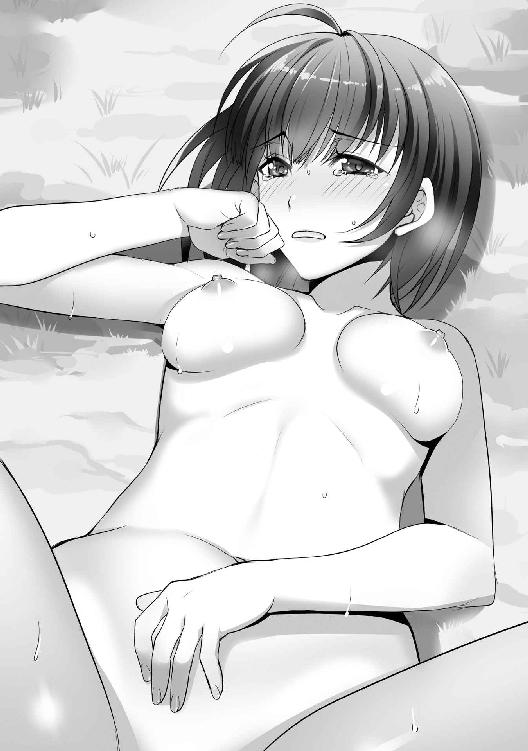
処女であることは知っていたが、目に見える鮮血は痛々しい。
「ゲロ痛いです」
「俺はミニマムな君を抱いている背徳感で比類ないほどイイ気分だ」
「うわっ、人が気にしていること。変態趣味ですね」
「俺を受け入れろ」
「めちゃくちゃ受け入れてるじゃないですか」
「......そうだったな」
美菜の肩をがっしりつかみ、勢いをつけてペニスを叩き込んだ。
痛覚のためか美菜の顔が跳ねた。
容赦ない抽送を始めた。内部を攪拌し、濁音が奏でられる。
狭い膣口から赤と白の混じった液体が流れ、ひくひくとした菊座につたっている。
我ながら、出入りする男根が凶悪な物に見える。俺より二回りも小さい彼女を貫く悦び──肉欲は制御できそうにない。
羞恥心で頬を真っ赤にして歯を食いしばっていた美菜は声を殺すためか、口元を隠すように両手をあて、されるがままになっている。目尻から涙がつたって明後日の方を向きながらも、やはり気になるのか音源である接合部をちらちらと見ている。
熱を帯びた短い吐息は安定していく。うるんだ瞳から情欲の火が見えた。
腰を衝突させる度に股ぐらの皮膚が波打つのが見える。お互いの荒くなった呼吸が響き、快楽に溺れていく。
「いいか？」
「い、いです」
快感が終着するまでにそれほど時間はかからなかった。こうして繋がっていると、燃え上がるような愛しさが湧いてくる。
「出すぞ」
「うわっ、も、もしかして」
「そういうことだな」
「あっ」
最後の美菜の甲高い声は緩んでいた。
ぶるっと俺の股間が震えた。情動が急激に終わっていく。白濁した液体が深奥に飛んでいく。
渾身の一突き、奥へと突き出してより内部へと射精した。どくんどくんと脈動し、彼女の体内へ流れ込む。
美菜は口を半開きにして恐る恐る、自らの下腹部に手を伸ばした。
膨らんだ小さな丘を撫で、がくっと頭をすくめ、はぁーっとため息を吐く。
「......今日、やばい日なんですが」
「何がやばくない......何も問題はない。なんでも、なんとかなるさ」
「むっ、う、うーん......そう返しますか」
ぐったりしながら美菜は額の汗を腕でぬぐった。
茫洋とした視線を受け、俺は血液を失ったペニスを戻した。ずるりと抜けて垂れ下がっている。
燃えていた脳細胞が鎮火していく。
木の枝からモモンガが飛んでいる物珍しい姿が視界に入った。森林の青々しく水っぽい香気が頭をクリアにする。
強風が背中をえぐるように吹き荒れた。目にかかった前髪を頭を振って退ける。
今更、ルナさんの墓の前にいることに気づく。そういえば、非人情なことに手も合わせていなかった。
「ルナさんは残念だったが、君は護りたい」
「彼女は美しい人でした。なんだかんだで私もあまり嫌いではありませんでしたよ」
ぐったりしている美菜の横に離れ、トランクスをはこうと手を伸ばす、と。
「ヒロちゃん。ふいてあげますよ」
手をつき、上半身を起こしてフレアスカートのポケットから白いハンカチを取り出し、横手で陰茎を掃除された。
珍しい物を見物するような好奇心にかられた表情──手つきは控えめでくすぐったく、背中がむずむずした。
「二回目はだめですからね。今、私の女陰はひりひりしてますので。今日の夜くらいにはいくらでもさせてあげますし、これから先も尽くしますから落ち着いてくださいね」
刺激に反応して膨らんできていたが、太い釘を刺された。
掃除の完了を告げるためか指先でピンッと弾かれる。欲望は再燃しそうではあったが、冷水をぶっかけられた気分だ。
「にしても、人生初めてのセックスでしたが......いきなりコンドームつけずに中出しされるとは思いませんでした」
「人生は予期しないことばかり起こるものだな」
「いや、そんな他人事のように」
ハンカチを折りたたみ、美菜も自分の股間をふく。
太ももの付け根、赤と白が混じった粘液がこぽりと泡立ち、淫猥に見えた。
「この島から出たら俺と暮らすことでいいな」
「いや、どこ見ていってるんですか。なんかヒロちゃん視線がいやらしくなりましたよね。まあいいんですけど」
美菜はぴたっと股間を閉じた。目線の運びがまずかったか。完全にしくじってる。
「嫌なのか？」
「勿論一緒に暮らします。らぶらぶ同棲生活ですね。私の屋敷で暮らしましょう」
「屋敷？」
「屋敷です。ワニとか牛とか鶏とか飼ってますよ」
美菜は言行からして古風な人間なので住んでいるところもそうなんだろう、と見当をつけておく。
しかしワニか──許可は取ってあるんだろうか。おいおい尋ねればいいのだろうが、今は水を差すまい。聞かなかったことにすべきだ。
「なんか後悔してません？ もう色々と遅いですからね」
「お互いにもっと知り合うべきだと考えていただけだ。関係の発展はちょっとは性急すぎたが、後悔はしていない」
「ならいいです」
ズキンッと頭部から痛みが走り、反射的に手で押さえた。傷口の血は止まっている。その下の頬はじわじわと腫れぼったい。
背中に重みがくる。
手が首元で交差して胸に回され、頬の熱っぽいところに唇の冷たい感触がきた。
「私は貴方だけです。あなたも私だけになってください」
ぼそりと耳打ちされた。軽いようで重いものが胸を通り抜けていった。
美菜の手の甲に手を添えた。含み笑いする気配があった。
目に見えぬ艶やかな首輪をつけられる実感があった。多様な宝石が埋め込まれて、縁取りには細微な刺繍が描かれているが使用目的は唯一だ。
「私の腕の中は後戻りできない領域ですよ。少なくとも、死が二人を分かつまで」
学生服に身を包んだ丈は後ろ手でスライド式の戸を閉めた。空気が入れ替わる。職員室はたっぷり暖房が効いていた。校内放送での呼び出しはつい身に覚えのない悪事を探してしまう。
今まで捨てた女が教師に泣きついた可能性を検討する。考えるに値しない。いくらプライドの低い女でも自分の恥を教師にさらけ出すようなみっともない真似はしない。
机をくっつけ合わせた教員たちの多くがパソコンに向かい合っている。答案用紙をだらだらと採点しながら時計を見ている教師もいる。多くは毎日決められた時刻に同じ言葉を繰り返すための準備を整えていた。
ブレザーの中にぬくもりを入れるために指先を襟元に突っ込んで開いた。丈はおざなりに頭を下げて部屋の隅に居るジャージ姿の教員の前に向かった。
名門サッカー部の顧問はたるみきった頬と二段顎、でっぷりとした布袋腹が特徴的だ。自分じゃ走ることもできないのに人を走らせるのを趣味としている。更に言えばサッカーがうまいやつよりも自分に向かって媚びた笑みを浮かべるやつの方が好きだ。丈はこの学校の教師の中では立派な人格者だと思っていた。
「なんですかセンセ」
「おう」
刈りあげた側頭部を掻き毟りながら座りにくそうに身じろぎする。百キロ以上の巨体を受け止める回転椅子が哀れだった。
「朝内が退部するそうだ」
「そうですか」
「あいつは真面目だけがとりえだったが、何かあったのか？」
「いいえ。別に何もありませんよ」
一ヵ月前に部室で三年生の一人が血の海に沈められたのをもう忘れたんですか──やつは首から下が自分じゃ動かせなくなって、ケツをふくことだってできない有様になってますよ。
丈はこの事実を見聞きした部員たちのえびす顔を思い出した。下級生を中心に盛り上がっていた。同情や憐憫を口にしながらも、嬉々として話し合っていた。
他人の不幸は蜜の味だ。ましてや憎らしい人物なら特に。
「あいつとは仲がよかったよな」
「はい」
「俺は正直なところあまり評価していない。持久力はあるし、根性もあるがボール運びがなってないからだ」
「ええ」
それは単純に他の部員がろくにパスしないからです──スポーツ推薦で入学したコンプレックスのあるレギュラーたちと違ってインテリだからです。正直に言えば全員が嫉妬してるんです。カスのくせに自尊心だけは一丁前で勉強するやつは馬鹿だと思ってるからです。皆サッカー以外は捨ててるから余計に許せないんです。頭をはげにして血反吐を吐いて陽が暮れるまで練習してますが、あいつは平然と塾に行くからです。
どっちが馬鹿なのかはまだわかりません。どっちも薄ら馬鹿だと最高に才能があって放課後に女とスポーツを頑張る俺は思ってます。
この学校の教育理念は『文武両道』ですが、まやかしのお題目だってことを誰でも知ってます。どっちでも結果を出せという意味にすぎないのでしょう。
「もう三年になる。一度、公式戦に出してやりたいかなと思ってな。走りこみはしてるし、諦めない。愛想はないが実直だ。愚直とも言っていい」
「......そうっすか。でも退部するんでしょ？」
「ああ、そうだな。だが最後に試合に出してやってもいいだろう。次期エースになるお前はどう思う？ 朝内にチャンスを与えてやるべきだと思うか？」
「そうですね......」
そんなことを俺に聞くな──丈はぼんやりと思案した。
ヒロトを友情抜きで考えるのは難しい。フィールドに立っていても幽霊のような存在だ。パスが的確なことと、センタリングが得意なことと、ラフプレーを好まないことくらいしか印象にない。
別に居たっていい。丈にとってディフェンダーのことなんてどうでもよかった。ボールを独り占めしておきながらシュートをしくじるやつが嫌いなだけだ。
自分がいれば別に三人くらいフィールドからいなくなっても問題ないとまで考え、驕っていた。
ふと、キリに手を出して啖呵を切られたことを思い出した。
お前などいつでも肉塊にしてやるという目だった。丁寧にダンボールに梱包して深海に沈めてやると告げていた。
少なからず友情は持っているつもりだった──微かな裏切りにあった気もする。
「そうですね......」
丈は答えに戸惑いながら、中空を見つめた。
「いいんじゃないですか」
「そうか。朝内に機会を与えるべきか」
何にせよ、ここでノーというわけにはいかなかった。
机に座る教員たちはペンを止めて聞き耳を立てている。一つ間違えば内申書に響き、不利益を被る。生徒の噂話が好きな連中には耳心地のよい答えを出しておかなければならない。
ここから先は──少しだけ声を低くする。
「ただ、ろくなことにはならないと思いますよ。あいつはパス回しはうまくても、必死な人間を無視しますから」
「うん？」
「フィールドを走ってると無理をする時もあるんですよ。足を痛めてるやつ、体力が切れたやつ、目の前の敵が手強いと知って尻ごみしてるやつ。そういうやつにヒロトはパスしないですよ。人間には表と裏があるじゃないですか。辛くても頑張りたい、負けるかもしれないが戦いたい。そういうことをわかればいいのに、わかってやらないんですよ」
「......そうか」
「話は終わりですか」
「ああ」
丈は踵を返した。数歩歩いた後に振り返った。
「あいつが退部届けを出したんなら、絶対に部には戻ってきませんよ。やつが物分りよく見えるのは他人の話を聞くふりがうまいだけなんです。本当は全部自分で決めて、自分でことを行って、自分で終わらせるんです。外見が物静かで大人しそうだからってディフェンダーにするべきじゃなかったんです。本当は誰よりも攻撃的な性格してるんです」
顧問はわかったのかわからなかったのか、言葉の意味など深く考えずに鷹揚に頷き、丈から視線を外して机に向けた。
丈は背筋と両手を伸ばし、職員室から出てため息を吐いた。そして部活に向かうために昇降口に向かう。
窓から斜陽の淡い光が流れ込んできている。秋の夕暮れは冷風を巻き起こしていた。もう帰宅する生徒たちの姿はまばらだった。張りあげた声がどこからか聞こえた。野球部がバットでボールを打つカキンとした音がした。
ヒロトが鞄を持って靴箱に肩をつけても垂れていた。
出現は半ば予期していた。驚かなかった。
「俺は部活を辞めた。質問はあるか？」
「お前は腰抜け野郎だ。サッカーが好きなくせにサッカーから距離を取っていた。自分が活躍できるはずがないと決めてかかっていた」
いつしか──人の居ない静寂に満ちた空間になっていた。
ヒロトは靴箱からナイキの運動靴を取り出して足をあげ、くるぶしに指をあてた。
鉛色のアスファルトを蹴って靴をはめ込み、体勢を整える。部活に行くことなく帰宅しようとしている。
「これからは勉強して、いい大学入って、くつわをつけられたロバみたいに真面目に働くよ。今だから言うが、本当にサッカー選手になりたかったんだ。でも、なれなかった」
「......俺がなってやるから、大人しく社会の歯車になりな」
「落ち着いたら恋人も欲しいな。またメールで紹介してくれ。今度はうまくやれる自信がある。多分、メールの回数を指定がまずかったんだ。今後は一日五回の最上限から七回にしてみる。間違いなくこれでいいはずだ」
「そのうち、紹介してやるよ」
「なんでそんな微妙な顔をしてるんだ？」
「いいや、ちょっとばかり寂しくなるなと思ってるだけだ」
「色々と面倒をかけたな。すまなかった」
ヒロトは一緒に帰ろうとは言わなかった。
丈は部活に顔を出すつもりだったし、今後の接点は薄くなると理解していた。
三年生になれば教室も変わる。ヒロトは成績優秀者を敷きつめた教室に移動する。がり勉どもの巣窟へ身を投じ、教科書に親愛のキスをする仕事が待っている。自分とは行く道は変わる。高校を卒業すれば会うことすらなくなるかもしれない。
背中が遠ざかっていった。声をかけたのは衝動的なものだった。
「おい」
「なんだ？」
「いっつも練習ばっかしてるわけじゃねえ。休みの時もあるし、暇ができたらどっか旅行に行ったりしようぜ。あれだよ。いつも同じ顔ばっか見てる連中じゃ飽きちまうし、息抜きできる修学旅行みたいなもんだ」
「それもいいな......俺が行く場所を決めていいか？」
「そう言うと思ったよ。お前は融通が利かないからな」
「常に他者を理解すべきだと考えてるんだがな」
「そんなんだから女にモテないんだよ。杓子定規な考え方を捨てて、気遣いを覚えろ」
「もう行くよ。塾に遅れる」
「......いい大学に行けるといいな」
「今は技術者になりたいんだ。俺は人に冷たいかもしれないが、俺のすることが人の役に立てばいいと思ってる。差しあたって暖房機でも作るかな」
最後に本気なのか嘘なのかわからない冗談を飛ばし、未練の感じさせない足取りで校門に向い、ヒロトは姿を消した。
丈は見送って、太ももから振動を感じてポケットに手を突っ込み、携帯を取り出した。
霧夏からのメールだった。返事をしようとして、指先がうまく動かず、諦めて携帯をたたんだ。
目を閉じた。胸の中でわだかまっていたモノが沈み込んでいく。
心臓の鼓動が静寂を打ち破って聞こえる。ざわめいている胸に手をあてた。
落ち着けよ、こんなのはなんの変哲もない日常の一ページだ。昔からの友達とちょっとした分岐点を迎えただけさ。いつもと違う道を歩くだけさ。いつまでも誰かと同じ道を歩むはずがない。どこかで分かれ道が来て、衝突することだってある。
それがたまたま今日だってだけの話だ。
※ ※
「う、うーん......ボラ？」
釣竿にかかった浅黒い五十センチ大の魚を岩場に引っ張り込み、赤音は悩んでいた。
多くは汽水域に生息するボラは赤音によって殴打され、ぐったりとしていた。
赤音のいる苔むした岩礁の一つに引っ張りあげる時に大変苦労したが、この種の魚は血抜きをしなければならず、そのためにはエラを串刺しにして血管を破り、海に放り込まねばならない。
大物を釣りあげた時はテンションがあがったが、そのことを理解するとゾッとした。
やむなくハンマーで頭部を潰すことにした。顔を向けず、手だけを振り下ろす。
骨と肉が砕ける凄惨な音がする。顔を戻し、すっかり頭部の抜け落ちたボラを見定め、ロープで尾鰭をグルグル巻きに結び、海に放り込んだ。
「ふ」
未だに血生臭いことは慣れない。
ヒロトが生き物を解体しているのをよく見たが、直視することはできなかった。
彼によれば筋繊維が多い生物は食べにくく、狐やウミネコの肉は臭くて硬くて食べ物とは思えず、細切れにしてお湯に混ぜて飲んだらしい。
あらゆるものを腹に収めようとしていた。思い出せば彼はたまに虫も食べていた。泥でべとべとの木の棒でハチの巣を叩き、捕まえたハチを鍋で炒りながら永続的に食料庫にできるとはしゃいでいた。
苦笑が漏れた。子供っぽくて賢くて抜け目ない。感性は妙におかしくて、びっくりするようなことを口走るがそんなところも飽きない。
「......諦めたくないな」
セックスを最後の思い出にしたくなかった。肉体の結びつき以上に幸せが感じられる毎日が欲しかった。
全部終わりにするにはあまりにも、寂しいではないか。
赤音は幸せになりたかった。それは一人では成し得ないことだと理解していた。
あの毎日は輝かしいものだった。緊張感を伴い、命を預け合い、最後は情欲に焼かれながらの触れ合い。
「おい」
背後からの男の声──脇に置いたハンマーを握る。
唐宮丈が無機質な顔つきで砂浜に佇んでいた。ジーンズのポケットに片手を突っ込み、相好を崩している。
距離にして五メートル先、森林には数十メートルで遠い。叫んでもすぐに助けはこない。
落ち着くのよ。負けちゃだめ。こんなやつに。
赤音は警戒しながら丈を睨みつけた。
「何よ」
「別に。謝っておこうと思ってな。悪かった」
「謝るくらいなら最初から襲わなきゃいいんじゃない？ あたしは決して忘れないわよ」
「そうだな。別にそれでいいよ。ただ、こういう事実が必要なだけだ」
丈は自分のつま先を見ながら答えた。
許しが欲しいわけではなさそうで、その傲慢が赤音には鼻についた。
「俺は心底、お前なんてどうでもいいんだ。だが、恐らくだが、煙男は誰かを恨むことを嫌っているんじゃないかと思ってな。だからこうしている。俺は恨むんじゃないんだ。正すだけだ。そうだ。正しいことをするのみだ」
口先から出た自分の言葉に納得したのか、丈はかぶりを振って頷いた。
迷信じみたことを信じて行動する丈は赤音からすれば死ぬほど滑稽だった。恨むことが死に繋がるなら自分なんてとっくに殺されている。この島に来てからというものの、ずっと目の前の男を呪っている。
赤音は白い目を向けながら丈が無残に殺されたらどんなにスカッとするか考えていた。
もとより、ヒロトの友人でなければ刑務所に叩き込んでやるつもりだった。間違いなく弱い者をなぶり者にして生きているダニのような存在だ。
続ける丈の口ぶりは滑らかで軽快だった。綿菓子のようにふわふわとしていて、信用も軽くする。
「俺は今まで色んな女を相手してきた。どいつもこいつも性格こそ違うが、根本は同じだと考えていた。意地汚い欲しがり屋で、男が自分に何をくれるかしか考えてない乞食だと捉えていた。一つやれば二つ欲しがり、一つ決めれば二つ決めたがる。他人に対して優越することだけが何よりも喜びで、ひとたび男ができれば──家族愛も、友愛も、今までの恩義も──スポンと忘れてかなぐり捨て去ることができる悦楽のみを大事にする生き物だとな」
男女愛がもっとも尊いことだと赤音も考えていた。
或いは二人の間に愛の結晶である子供ができれば変わるとも。
丈の言うことはいかにも男女差別主義者然とした穿った見方であって、赤音は不快感にしか襲われなかった。
確かに愛情にはヘドロのような欲望が伴うが、それはあくまで二人の間の出来事であって──丈のように真理めいたことをもっともらしくのたまうのはどうも虫が好かない。
「だが、彼女は違う。自分を持っている。何事にも流されず、理性的だ。殺人鬼も大自然も恐れずに毅然としてる。だからお前みたいなのに構ってる暇はなくてな」
「そう、願ったりかなったりだわ」
この悪食外道は美菜に惚れているのか──しかし、なんと節穴な目なのか。
なぜ美菜だけ違うと考えるのか。女は女であることから絶対に逃れられるはずがない。
赤音にはある種の直感があった。
どんなに上手に取り繕っても、薄皮一枚剥がせば美菜の目の奥にはギラギラとした底なし沼のような欲望が暴れ狂っていると。それは獰猛で顔を覗かせればすぐに実行され、暴力や暴言となって姿を見せるはずだと。
逆にヒロトの心は清冽な大海のように澄んでいると感じていた。時折、暴風雨にあおられて猛威をふるうことこそあれ、すべてを受け入れてくれる寛容さがあると信じていた。
だからこそ二人が祝福できず、納得できない。
そうだ。すべてにおいて不似合いに決まっている。あんなひどい女に汚されたくない。自分が救ってあげなければならない。
赤音もまた心の中で導き出した答えに大きく満足した。
「お前はヒロトに惚れてんのか？」
「アンタには関係ないでしょ」
「そうだな。だが、善意から忠告してやる。あいつには人としての心がない。平静さを取り戻すために距離を置いてみるんだな」
「はっ！ 心がない人間なんていないわよ。アンタの目が淀んで濁り腐ってるから見えないだけよ」
「かもな。だが、俺は生まれ変わってみせる。俺は今まで死んでいたが、ようやく胸を張って深呼吸できるんだ」
丈は言いたいことを言い終えたのか、背中を向けてジャングルに歩いていった。ほそなくしてコーンコーンと木を切り倒す音が鳴り響き始めた。
仕事をサボらないだけルナよりもマシかもしれないが、心は永遠に許すつもりない。
たくましい身体と美麗な顔を持っていても、よく見れば冷徹で中身はいかにも偏見に満ち溢れ、油断ならない。
赤音は何匹か魚を釣りあげてから人目を忍んで岩陰で水浴びをした。紺碧の海にゆっくり身を浸していき、念入りに身体を洗う。
亜麻色の髪をすすぎ、常に身綺麗にすることを心がける。
「あのまま、あそこにいたら......真水のお風呂だったのにな。それに二人でずっと」
その先は続かない。過ぎたことだ。不毛になる。
眼下の海水は濁っておらず、水質はいいが塩分を含んでいるせいか乾燥するのが早く、衣服も傷みやすかった。
うずく身体から発せられる情動が頭の芯を焦げつかせている。欲求が満たされず、深海に閉じ込められて呼吸ができないような錯覚に囚われる。
海水をひとすくいした。小さな水溜りの中を陽光が反射してきらめいていた。
一つ与えてもらえれば二つ目が欲しくなる。それの何が悪い。自然に発生した感情だ。
それが生きることではないか。
※ ※
葉露の水溜りに数匹の蝶が集まっていた。
パタパタと青白い斑紋のある羽をはためかせ、尖った触覚が頭の動きに合わせて動いている。
物音を立てず、美菜がのそりと二人用ハンモックから出ていって十五分が経過した。俺は横になりながらもうつらうつらとしていたが、遠のく背中には声はかけなかった。
彼女は自由奔放なところがあって、自分の空間で何事かをするのを好む傾向にある。
尋ねればはぐらさかれることもあり、逆に痛くもない腹を探られる。
彼女と違って俺は前科持ちだ。交際を成立させておきながら不義を行った。次は命脈を断たれるかもしれない。頬や腹部でくすぶる痛みがうずき、息苦しさすら感じた。
できれば単独行動は控えてもらいたかった。恋心からか、俺は愚かなことに危なっかしい子供に抱くような懸念を彼女に寄せている。
「......朝か」
光を防ぐために手をかざして目を細めた。指の間で分断された朝陽が燦々と輝いている。
葉と葉の間から光の帯線が芝地に突き刺さるように降りている。
朝露の濁った水の臭いが鼻に忍び込んでくる。もうとっくに慣れ親しんでしまった。けたたましくがなり立てる鳥の鳴き声は睡眠障害の呼び水になるので不愉快だが、気にならなくなってきてはいる。
上半身を起こし、ハンモックサイドに足を伸ばし、神経の感触を確かめた。何気なく首根を擦る。そう悪くはなく、安眠も得られた。
枝に蔓草を巻いて吊るしてある竹筒を手に取り、舌を湿らせる。
一息つき、薄汚れたボロ靴をはき、サクサクと乾いた音を立てる落ち葉を踏みながら林を抜けて海岸へ。
身体に塗った薬草がかぴかぴになっているのを洗い流したかった。美菜は俺の傷を愛おしそうに撫で、触ってくれた。
半分いたぶる顔をしていたが。俺の勘違いであることを天に祈る。
靴を脱いで熱波で焼けた砂浜を裸足で踏み、さざ波で白い泡を立てる海を前にして、上着を脱ごうとしたところで後ろから足音がした。
「うわ、真っ赤なまんじゅうみたいな顔」
赤音は口元に手をあて、目を丸くするとともに率直な感想を告げてきた。
ぴっちりとしたタンクトップとハーフパンツ。露骨に乳房が盛り上がっていて目の毒だ。ブラジャーをつけておらず、バストトップが見えている。
「お前は」
「......ごめん。つい、口がね？ でもほんと、どうしたのそれ？」
お前とセックスした罰で横顔を蹴り飛ばされたんだよ──真実は情けなく、照れもあり、口にするのもはばかられる。
骨にヒビが入っているおそれのある熱っぽい頬を一撫でされた。その手と心配そうな目顔から逃れるために上着をまくりあげた。
赤音は眉をピクッと動かし、瞳の色を濃くした。いや、ここはマナーとして目を逸らしてくれまいか。
「美菜と喧嘩したんでしょ？」
「見ての通り、手痛い制裁は食らった」
「落ち込んでないところを見ると......ヤった？」
「ああ」
「ふーん」
顔を覗きこむように近づいてきて、ガンッガンッと脛をつま先で蹴られる。
蹴る力は弱いが少しだけ罪悪感を覚えた。赤音は俺を慰めてくれた。優しくされて、誘われて、浮ついた気持ちで手を伸ばしてしまった。
「ヒロトが用意してくれたあたしの寝てるところから、ちょっとだけヒロトたちのハンモック見えるんだよね。知ってたよ。だけど、嘘ついて欲しかった。それならキープしてくれてるんだなと思えたもん」
「配置上、お前の安全も配慮した。赤音には死んで欲しくない」
「ねえ......あたしともヤらない？ こっそりでいいからさ。大体、あたしの方がいい身体してるでしょ？」
「お前は本当にそれでいいと思っていってるのか？ それが自分の幸せに繋がると本気で考えてるのか？ 俺を失望させないでくれ」
赤音から媚びるような気配が消えた。
代わりにふつふつと憤りが現れるのが目に見えた。
表情が歪み、内心で感情がうねり──雪崩のように押し寄せてきているのが手に取るようにわかった。
それもフッと失速する。
反抗心より自制心が勝利したようだった。今回に限っては。
「ごめん。ちょっと......はしたなかったかな。ちょっと舞い上がっててさ......ついね」
悲しげな言葉を受け止めるわけにもいかず、歩きながらズボンを脱いで下着姿で海に足を踏み入れた。
ひんやりと冷たい水が足先から腰元まで昇ってくる。
すくった水を身体にかけ、頭を突っ込み、寝癖のついた髪をばしゃばしゃと洗う。
赤音もそれほど気にしていないのか、最初は体育座りをしながら俺の水浴びを眺めていたが──やがてそうすることに飽きたのか、シャツを脱いで近づいてきた。
俺は海から出ようとするところだったが立ちふさがられた。
「うっわーっ、冷たくて気持ちいいね」
「そうだな」
「ここならさ......ちょっとくらい色っぽい悪戯しても水で隠れて見えないんじゃない？」
「いや、ちょっ」
クスっと笑って赤音の手が俺の腹部に触れた。理屈はおかしかった。この海の透明度の高さは赤音もわかっているはずだ。
慌てて手をつかもうとしたがすり抜けて、するすると下へと──。
「泥棒猫」
背面からざばっと美菜が海面から顔を出した。
突然すぎる登場に俺はのけ反って倒れそうになった。失神しかねないほどびっくりした。
顔にびっしり髪の毛を貼りつけていて、ワカメみたいな海草まで垂れ下がっている。
シュールではあるのだが相変わらず眼光だけは鋭い。
漁に出ていたらしく手に網を持っていて、その中には楕円型で黒と黄のクロス模様の外殻を持つ生き物が入っている。
なんということか、海亀だ。
赤音はあっけに取られながらも声を搾りだした。
「海坊主かと思った」
「失敬な。それよりも赤音さん自重してください。私とヒロちゃんは恋人同士なんですよ。軽々しく手を出そうとしないでください」
「自分に自信がないからあたしが怖いの？」
ふふんと長髪を優雅にかきあげる。
美菜は能面のような顔つきで口を開いた。
「『あの根暗、葉っぱを摘んでジッと動かないのよ。すっごく気持ち悪かった』」
「......ちょっと、止めなさいよ」
空気がぴんと張り詰めた。赤音の形相が歪んだ。美菜は止めなかった。
「『かっこつけて大人ぶった喋り方してるけど、中身は絶対馬鹿ガキよ。石ころ並べて遊んでたもの』」
「どうしてそういうことしゃべるのよ......今更じゃない」
赤音が島に来た当初、しゃべった内容なのだろう。俺の方を気にしながらちらちらと顔色を窺っている。石ころを並べたのは影の向きから方角を確かめるためであるのだが、詳しく説明したわけではない。
根暗か──前にも聞いたがずっとあだ名にされていたようだ。髪型をもっと整える必要があるかもしれない。島から脱出して落ち着いたら清潔感と身だしなみも気をつけよう。
「頼りになるとわかってからすり寄るのはとても賢いと思いますよ」
美菜はとびっきりの笑顔で痛烈な皮肉をぶつけた。
ぶるっと肩を震わせて赤音は目線を落としてで踵を返し、海から出ていって野営地へと小走りに向かった。
遠ざかっていく背中を見ながら俺は口を開いた。
美菜の艶やかな墨色の頭髪に垂れ下がった海草を取ってやりながら。
「言いすぎだ。それとそのアオウミガメはワシントン条約で絶滅危惧種二類に指定されてる」
美菜はぶるっと頭を振った。水滴が飛び散ってくる。耳の下を海草がくすぐったせいか。
「あれくらい言わないとまた寄ってきます。あなたにとってはひとたびの情をかわした相手であっても、私にとってはハエのような存在です。そしてこれはただの亀です。ですよね？」
彼女の身になって考えてみれば、美菜に他の男が寄ってきた場合は俺も心穏やかにはなれない。
仕方がない。赤音には後でそれとなく取り成すとしよう。
この環境で不和を招いたままでは禍根が残る。
美菜の手の先、体長約四十センチくらいのアオウミガメは──網の中でまったく動いていないところを見ると、既に仕留められてる公算が大きい。
こういう事態なのだから漁獲規制されているが食べてしまうべきか。
仮に生きているなら種の存続のために美菜を説得し、逃がすべきだろう。小事が大事になることもある。
連綿と辿る生物螺旋の軌跡を護るべきだ。
そう、これからの人類の系譜を彩るためにも。
「スッポンではないですが、食べれば滋養満点ですよ。今日もえっちな夜が過ごせちゃいますね」
「それはただの亀だ」
※ ※
丈は不意に口の中に入った木屑を吐き出した。
顔を半分しかめて手の平に刺さった細かい棘をガムテープで抜き取った。再び足を踏ん張り、腰を回し、打撃ポイントを見定める。
斧を片手に木工作業は疲れるが、幸いにして体力はみなぎっている。活力のあるものを栄養にしたからだ。
「あの亀、マジでうまかったな」
「確かにうまかった......罪悪感があるが」
「あん？ なんでだ？ まあ、なんか鶏肉と魚肉が混じったような味だったな。シメの鳥の卵とサゴヤシの〝スイトン〟が最高だった」
「そうだな......うますぎるくらい、うまかった」
波打ち際から三十メートル離れた地点で二人は交互に斧を振るっていた。丈は石斧で、ヒロトは金属斧で。
垂直にそびえている赤錆色のアイアンウッドは横幅一メートル半、縦幅は二十メートルを越えている古木だった。幹は打撃を与えられてもびくともせず、手応えも硬く数発で手が痺れてくる。
休みながらも一時間ばかり打ち続けたかいがあって、無数の打撃痕が楕円形を作り、半分以上を削って樹幹の奥が見えている。
幾度も振るえば自然に汗だくになっていく。丈は肺の中の熱を吐き出すように深呼吸した。汗でくっつくシャツをパタパタさせて風を送り込み、手を休めてへたりこんだ。
ヒロトは顔をしかめながら斧を叩きつけ続けている。向かい側に切り込みを入れて倒れる方向は定めた。切り倒せても加工できる自信は丈にはなかった。
運ぶにせよ、手間も時間もかかりそうだ。プランは聞くべきだが、先に萎えるような話題は聞きたくないこともあった。
「こんな硬い木じゃなくていいんじゃないか？」
「......美菜が薦めてくれた。この木は海水に耐えるそうだ。外側が加工しにくかったら均衡だけ取って丸太舟にする」
「切った後削るのに大分かかるんじゃないか？」
「歪み防止のために乾燥させたいがそれは諦める。何から何までやろうとすると時間がかかりすぎる。なんでもうまくいくとも思えんが色々と努力するが」
「熱心なこった」
「熱心にもなるさ......もう新学期が始まった。お前は帰りたくないのか？ 大学に行くんだろ。高校卒業できなかったらまずいだろ」
「そうだな。そうだったよ。忘れてた」
この島に漂着してから一ヵ月過ぎた──ルナが死んだ。遭難した前住者が全滅した最低の事実も発覚した。
正体が噴煙のような殺人鬼がぎらついた目を光らせていて、びくびくしながら毎日を過ごし、原始人のような生活をしている。
それなのに、それほど悪い暮らしだとは不思議と思えなかった。
絶対の義務のように毎日少しずつでも続けていたサッカーの練習から遠ざかり、数多くの女から遠ざかり、複雑な人間関係から解き放たれたせいか。
美菜がまだ手に入っていないのが面白くないが、目の前の男は恋愛関係ではそう強くない。
すこぶる癪に障るがまだ様子見の段階から動けない。下手に粉をかけて二人を結託させたくない。
ここは一つ──揺さぶってみるか。
丈はからかうようにぼやく。
「あの茶髪、お前のこと好きみたいだな。恋する乙女の目だったぜ」
ヒロトはぴたりと動きを止めた。手に持った斧が下降した。座り込んだ丈を見下ろした。
へらへらとした口ぶりでジャブを打ってみたが案外、心のどこかに当たったようだった。
ヒロトは瞑想するかのようにきつく両目を塞いでいる。辛苦に耐える修行僧のような風情だ。
「赤音は気が迷ってるだけだ。本来なら俺のような根暗な人間を相手にしないだろう」
「そんなことないんじゃないか。ああいう手間のかかりそうな女はお前に似合ってるよ」
「......かもな。赤音の面倒を見ていく人生も悪くないかもしれなかった。俺も簡単には割り切れないところがある。俺の人生で訪れた幸運の一つかもしれない」
「だったら付き合っちまえよ」
「......お前はそんなに美菜が欲しいのか？」
「欲しいさ」
間髪入れずに返答した。
ヒロトはゆるりと斧を肩に抱えた。足の運びは変わっていないが反射的に地面に手をやった。
反動で飛び退いて逃げる準備だけはしておく。思考の読めない危険な相手には違いない。つま先がこっちを向いたら距離を取るべきだ。友人ということも差し引いてもまだ脅威には違いない。
信頼もしている。手段を選ばないことも知っている。
「単純な疑問なんだが、新しい玩具は島から出ればすぐ手に入る。どうして美菜なんだ？」
「彼女は俺の人生をまともなものにしてくれるはずだ」
「お前は女に頼らなきゃ自分の人生も定められない男なのか？」
「お前と違って俺はそうなんだ。いいや、多くの男がそうだ。お前だけ孤独が平気な精神構造なんだよ」
「俺とお前は友達だ。友達の女を取る気か？」
「俺とお前、どっちが美菜ちゃんを幸せにできると思う？」
ヒロトは言い返さなかった。
代わりに斧を振りかぶり、アイアンウッドの幹を更にえぐった。
木片が飛び交い、丈は反射的に目元を手の平で隠した。打撃の音が大きくなっていた。
「倒れるぞ」
「おお」
巨木が倒れこむ──みしみしと軋み、耳をつんざく倒壊音が鳴り響き、周囲の低木を容赦なくなぎ倒していく。
周囲一帯が大木が立ち並ぶ植生だったせいか、それほど厚い灌木は生えておらず、空地がまばらでいて、作業地としては悪くない場所だった。
アイアンウッドがド派手にバウンドすると、丈は身体が一瞬浮き上がったのがわかった。骨に伝道する衝撃波によって軽い掻痒感さえ覚えさせた。
ヒロトに労苦が報われた喜びはなかった。まぶたを手の甲でこすった。
「お前がゴミクズみたいに捨てた茶道部の部長はリストカットを繰り返すようになり、精神病院に通い、発狂して頭髪をすべて刈りあげた。今のところはまともな女としての人生は破綻している。俺とお前、どっちが美菜を幸せにできると思う？」
「美菜ちゃんをそんな風には扱わねえよ。第一、恋愛は自己責任だろ。俺の責任じゃないね」
「よく聞くんだ唐宮......俺は遊びじゃないんだ。真剣だ。できる限り、彼女を悲しませたくない」
「俺だって真剣だぜ」
瞳に力を込めた。ヒロトにはそれほど通じない。つまらない受け止め方をしている。
たまに人形のように見える無機質な瞳は揺らぎもしなかった。
一瞥しただけで余計な枝を根元から切り落とし、巻尺で幅を測る作業に没頭している。樹皮の上っ面をゴリゴリと剥がしていき、ポケットから石筆を取り出して、ひし形の図形を描き始めた。
手つきに淀みなく、迷いもない。口論も毛ほど気にしていない。
「木杭を打ってヒビを入れてから削る。だめそうなら要所を焦がしてぼろぼろにして削る。中央を掘ってから外殻をどうするか考えよう。直径は二メートル半。向かい側も切り落とさないとな」
麻袋に突っ込まれた大工道具からノミとトンカチを取り出した。尖った木屑を拾い、杭代わりにして打ち込み始める。
カツカツと一定のテンポが奏でられ、印をつけているのか、丸太のあらゆるところを削ってる。
「実際よ。こんな素人の船で外洋に出て生きて帰れんのか？」
「三割死ぬと思ってる。船の出来具合によるが、予期せぬことが起これば死ぬ。半丁博打を打つ気分ではある」
七割なんとかなるのか。それでも危険な航海には違いない。救援を呼んでくれるのはありがたいが。
島からはできるなら出たいが、ヒロトがすぐ戻ってきてもらっても困りものだ。
一ヵ月ほど帰ってこないならば美菜を一気に口説くこともできる。
いいや、いっそのこと。
「風向きと海流が味方すれば数日で到達するかもしれん。水物だな......俺に死んで欲しいか？」
「そんな馬鹿なこと言わねえよ」
それを言ったら最後だ。
子供の頃からの友情が終わりを告げ、敵対することになる。いや、相争うことは怖くない。衝突を恐れていては何も手に入らない。
ただきっかけが必要だ。ヒロトをぶん殴り、打ち倒し、屈辱を与えるには正当な理由が必要だ。
今、殴りかかったところで得られるものはなく──醜い嫉妬を露呈するだけだ。
物事にはタイミングと順序がある。必ず機会は巡ってくるはずだ。星はいつまでも同じ位置にいない。巡ってくる。
「思うだけなら自由だ。俺が大海に沈むことを祈ればいい。だが、日記であったように船に細工はしないでくれよ」
「しねえよ。俺たちは友達だろ。ガキの頃からの付き合いだ」
「俺は女を取り合って殺しあうなんてくだらないクズのすることだと思ってた。今は少し考え方を変えた。傍から見て死ぬほどくだらない理由でも、当人にとっては譲れないこともあるようだ」
ヒロトは斧を手に取り、振り下ろした。引き抜き、また振り下ろす。その度にカーンと甲高い音が鳴る。
丈は汗が乾くのを感じ取り、タオルを首に巻いてヒロトの傍に寄り、肩に手を置いた。熱くなった体温が手の平に伝わる。互いに汗ばみながら協力して作業している。心の底でどう思っているにせよ。
「殺し合いなんてしねえよ。代われよ。切り落としてやる。細かいことはお前に任せる」
「悪いな」
ヒロトは使い勝手のいい金属斧を丈に手渡した。
くるりと背中を向け、こった肩を揉み解していた。隙だらけで絶好の好機ではあった。自然と斧を握る手がギリギリと強くなる。
ゆらりと邪心がかまくびをもたげる。自分でも驚くような殺意が思考を高ぶらせている。
シミュレーション──後ろから頭をカチ割ろうとする。刃筋がぶれて肩口にぶつかり、肩甲骨に阻まれて内臓に届かず、重傷を負うがすかさず鋭利な何かで反撃されて目玉か耳か何かを失うことになる。
シミュレーション──攻撃は予期されていて、横にかわされ、斜めからの渾身のアッパーを食らう。よろけたところで股間を蹴り飛ばされ、言葉一つかけられることもなく首を狙って斧が振り下ろされる。
恐ろしい妄想は中断された。ヒロトは振り返った。涼やかな顔で何もおくびに出さずに。
びびるなよ──丈は自分に言い聞かせる。
持っていた斧の先が地面の土をえぐる。何かに触れていなければ震えてしまいそうだった。
「喉がからからだ。水を汲んでくるよ」
「なら丁度よかったですね」
葉陰から涼しい声がした。
がさがさ、と人の背丈ほどの大葉が群生した茂みから美菜が現れた。両手でヤシの実を二つ抱えていた。
ぽいぽいっと二人向けて下手投げ。
「うおっと」
「〝上〟に行ったのか？」
ぎこちなくキャッチして、丈は重量に驚き、しげしげと黄色の実を眺める。ヒロトは手に取ったものの見ようとしなかった。
「ええ、ヒロちゃんがロープを張ってくれたおかげで登りやすくなって」
「君らしくないな。自分で状態を確認してないロープを登るなんて。切れたらどうするつもりだったんだ」
「まあいいじゃねえか。この穴から飲むのかい？」
トゲのある口調をたしなめ、丈はヤシの実のくり貫いた黒穴を覗きこんだ。細かく実を揺すって音を立てようとしていた。
美菜は小首を傾け、倒木をさっと見てからヒロトに向き直る。
「ええ、開けときましたよ。ヒロちゃん。設計図で相談があるんですが、ちょっと来てもらえませんか？」
「うん？ ああ......まずいところでもあったか？」
「構造的にあて木するべきところがあって、設計図は野営地でしょう？」
ヒロトはジーンズのポケットをまさぐった。
そこにあるはずのものがなく、手が空を切ったのを確認し、美菜に歩み寄った。
「おかしいな......まあ、わかったよ」
丈は積もった枯れ葉の上に座り込みながら、二人の様子を眺める。
美菜はヒロトから設計図を盗み取って、それを口実に逢引しようとしている。
ヒロトのような朴念仁でなければこのような機微はなんとなく察せる。
ヤシの甘いジュースを飲みながらも不満が口から出そうだった。嫉妬の炎が胸を焦げつかせる。吐く息に火の粉が混じったような心地だった。
並んで歩く二人を制止するための声など、出せるわけがなかった。
自尊心が邪魔をしている。この状態をなんとかせねばならない。
どうやって？
※ ※
「野営地に向かわないのか？」
半ば枯れた蔓草がもつれ合って網のように覆っている場所に導かれた。
枝葉が天板の代わりを務め、黄土は踏み込んでも弾力もなく硬い。ちょっとした小部屋のようであって、珍しい場所には違いない。よく見ると梢には切断された跡が残っている。
わかっていたことだが、天然ではなく人工か。
よく見れば美菜の私物らしき鞄や小道具が転がっている。ここは彼女の私室のようだった。道理で見つけにくい場所だと思った。
海岸からは数百メートル離れている。風がふかず森の空気が色濃い。
「ヤシのジュース飲まないんですか？」
「飲んだよ。君の分も残しておこうと思って」
「私はもう飲みましたよ。崖のすぐ近くのをもいだだけですから」
美菜は枯れ草の壁に腰掛けた。膝をぶつけ、足を開く座り方。今日は膝上のミニスカートだったので白い布地がはっきり見えていた。あからさまに視線をやると美菜は艶っぽく笑みを作った。
俺は膝を折ってしゃがみこみ、顔を近づけ。
静かに指摘する。
「君は嘘をついている」
低い声が通った。美菜は半分だけ笑みを消した。下がっていた目尻は持ちあがり、口元は緩んでいる。
「......嘘？ 何がでしょうか」
「崖から三キロ地点の川の下流付近のヤシの実をもいだ。その際、往復で一時間近くかかっている。俺と君は恋人同士だ。俺は以前よりもずっと君を観察するようになっている。だからつまらない嘘をつくな」
「何を根拠に私が嘘をついてると？」
「足元など誰も気にしないものだが──土には種類がある。赤い土、青い土、黒い土、白い土、黄色い土......腐った葉、屍骸、ケイ酸塩鉱物、遊離酸化鉄、ケイ酸アルミニウム、君の運動靴についている紅色は恐らく赤鉄鉱によるものだ。この辺にはないものだ」
美菜は両手をパシンッと打ち鳴らした。
演劇に感動した観客のように目を輝かせてぱちぱちと拍手する。
俺は微かに苛立ちを実感した。頬をカリカリと掻き、どう諭すべきか悩んだ。
「素晴らしい。本当によく見てますね。その観察力には驚きました。流石私の恋人です」
「いいか？ 今まで俺は君の小さな嘘をすべて見逃してきた。一人で行動するのが好きでもいい。ただ、やってきたことに嘘をつくな。曖昧に誤魔化すならそれでもいい。一人で海にもぐるのもやめろ。危険な真似をするな」
うっとりしている美菜は両手を伸ばし、俺の後ろ首をつかんで引き寄せ、頬にキスをした。唇の感触が頭の芯を焦げつかせる。
不意に両頬を摘まれ、左右にぐにぐにと引っ張られる。
「心配かけたくなかっただけですよ。怒られるとは思いませんでした。それに、私が誰かの助けなしじゃ自転車もこげないようなか弱い女性に見えますか？」
一度たりともそんなイメージを抱いたことはない。
ぐい、と真横に伸ばされる。痛みで顔を歪めるとパッと手が放された。
屈託のない笑み──どうして内陸で動き回っていたのかは教えてくれなかった。
美菜は嘘つきで、思考を読ませてくれない。そして人の心が読めない愚か者の俺にできるのは証拠をかき集めて叩きつけることしかできない。
彼女はうっすらと微笑をたたえながらシャツを捲くり、スカートのホックを外して半開きにし、素肌を露にする。芸術的なくびれとなだらかな曲線。しなやかさを兼ね備えた筋肉が皮膚下を動き、両手が地面につけられる。
「むらむらしますか？」
「まだ昼を少し過ぎたばかりじゃないか」
自らの言葉を裏切り、肩に手を回した。背中をつたって臀部へ向かう。
軽く抱きしめるとほっそりとした身体は唐竹のように硬く張力を感じさせた。折れてしまいそうな脆さもあり、怖々と力を込める。
吐息が首筋にかかった。ブラの止め具を外す、倒れこむような形になりそうだったが、壁があるので体重は向けなかった。
女の体温が手の平にしみこんでいく。スカートを外し、ショーツ越しに暖かい小ぶりの尻を撫でまわした。指先で尻肉を押し込む。ぐにゃりとした手応えと手の平に伝わる柔らかさ。
この女は俺のモノだ──誰にも渡してたまるか。
支配欲が冷静な思考を粉々に破壊する。肉欲が足の先から天辺にほとばしって思考を失わせる。俺は考えることができなくなる。
「ヒロちゃん。私のお尻好きですよね......した後、寝ようとしてる時も撫でられて困りました」
「例えば、宝石を手に入れた時、愛でたり触ったりするだろう？」
「ヤる元気はないけどもやもやするから撫でたいだけだと思ってました」
「......違う」
「顔を逸らしましたね。毎日、お尻を撫でられると困ります」
「そのうち、飽きるとは思う」
「いや、飽きる方が断然困ります。うーん、ならお尻を触る以外で何かしたいことありますか？」
俺は美菜の尻を撫でながら思案した。
可憐でいて儚げな瞳は不服そうな色をたたえている。
性的な刺激を求める機会はそれほどなかった。アダルトＤＶＤはクラスメートに貸してもらったことがあるが、特別なこだわりもない。
しかし、やってもらえることはやってもらうべきだ。
「語尾に『にゃー』をつけてくれ」
「......は？」
美菜は呆れて平坦な顔つきに変化した。泡を食った俺は高速で否定した。
「今のなし。なしだ。違う。違うんだ。思いついたことを口走ってしまっただけなんだ。わかってくれ」
「では次の要望をお願いしますにゃー」
あてこすって言いながらも心なしか美菜の瞳に軽蔑が混じっていた。
くそっ、ちくしょう、違う。違いすぎる。やばい。どうする？ 第一、ポルノ映像なんて思い出すからまずかったんだ。早口で言いわけしたのもかなりまずかった。
嵐のような葛藤のせいか手が小刻みに震えた。まるでアル中になったように足首も躍っている。身を包み込むプレッシャーが凄まじい。美菜の顔を真っ直ぐ見つめられなくなる。
先ほどのようなミスは許されない。自然でいてマイルドな感じでいかなければ。
目の前で深く重いため息が吐かれ、胸板がとんっと押された。拒絶されたかと思ったが美菜は俺に尻を向け、二の腕を地面につけた。
腰だけ上向けて、上半身を下向けた体勢。むき出しの小さな桃が突き出され、たまらなく情欲をそそらせる。
何よりも無防備なのがいい。この体勢では絶対にしっぺ返しを食らわない安心感がある。
好きにやっていいということだ。
「要はケダモノのようにしたいってことですよねにゃー」
「無理やり語尾をつけなくていい。不自然だ」
「うにゃー、なかなか難しいですにゃー」
ほとんど棒読みだが奇妙な満足感はあった。尻の割れ目に指で触る。べったりと粘液が秘所に貼りつき、シミがじわじわと広がっている。指先に粘ついた液体が残った。舐めとってから下着をずらした。たわんだ尻肉を広げて、泉の淫水に濡れてひくひくとしている花弁を観察した。美菜は恥ずかしいのか、単純に屈辱的なのか口を真一文字に結んでいた。
ベルトを緩め、トランクスから男根を外気にさらした。
「入れていいか？」
「にゃー」
判断が難しい声は耳心地がよく、湿っぽくとろりとした色気があった。勝手ながらこれは了解としよう。
くびれに両手を回して先端をこすらせる。
美菜は身じろぎし、菊座をきゅっと閉じた。
亀頭を開き気味の膣口にあて、上下に突く。くにっと押しあがる丘、もどかしいが中には挿れない。
くすぐったそうに身体を揺らし、股をもじもじとさせ、美菜は非難するような目を向けてきた。
「......じらしてるんですかにゃー？」
「君の口から淫乱な言葉を聞きたい」
「むぅ......たっぷり精液流し込んで孕ませてください。種付けして私のお腹を大きくしてみたくないですか？ 赤ちゃんを作りましょう」
「わざと語尾を忘れたな」
しかも素に戻っての無感情なものだった。
美菜の悪戯心を無視して俺は膝を動かし、約半歩ほど先へ進んでペニスを挿入した。
熱すぎる秘肉の感触、ヴァージンを失ってから柔らかくなっている。包み込む感触はほどよい締めつけだ。受け入れるためにほぐれている。
愛液の量もたっぷりあって挿し入れもしやすい。
「くふっ、いつもよりガッチガチですにゃー」
「美菜もこなれてきたな」
「そ、そりゃあ調教されてますからにゃー」
腰を動かし、小尻に股間をくっつけ、勢いよく子宮口へごりっとえぐりこむ。
美菜は体型からして小柄なので、膣道も短く、深く挿れれば奥へ届いた。
律動を開始した。肉がぶつかりあう。強すぎるのか時折「にゃー」と甘さが混じっていながらも切れ気味の声がする。無視した。叩き込む作業は今まで生きてきた中で最高の気分だ。
美菜の火照った膣は擦る度に収縮し、射精を促そうとする。
荒い呼吸。美菜も情欲に焦がれたあえぎ声を使うようになった。俺の気分を盛り上げるためにはしたない声も出してくれる。
動きを止め、手を下回して秘粒を指で摘むと美菜がびくっとして肩まで来ている髪を大きく揺らした。反動で汗の玉粒が飛び、光った。
愛液が溢れ出し、太ももを流れ、汗と混じって独特の匂いを発していた。
濃い女の匂いは俺の股間を更に猛らせる。脇の下から湾曲した腰元をつかむ。人肌はほんのり熱くなっていて、華奢な身体は燃えている。
再び、股間をぶつける。今度は呼吸を止め、最大限の速さで叩き込み続けた。俺も興奮で無我夢中になっていた。
尻肉が波を打ち、攻撃するかのような律動に美菜は口を半開きにしてだらしなく開けた。
「あぁぁっ、激しいにゃぁ......あ、あ、ごめんなさい、い、イっちゃいそうですにゃ」
俺も限界に達しそうだった。
息を吸い込み、また呼吸を止めて膣奥にぐいぐいえぐりこんだ。
美菜は自分でも腰を動かしていた。卑猥な仕草でぷるんとした尻が小円を描くように振られた。興奮のためか目の奥に炎が宿っている。口から唾液を垂らして扇情的な眼差しが送られる。
お互いに肉欲にとりつかれている。結合部が焼けるように熱くなっている。激しく粘膜が擦れ、濡れた音が快楽を加速させる。
美菜は悦楽を叫び、獣のように唸り、酸素を求めてあえぐ。
艶のある目が重なった。俺の肉棒をぶちこまれるのが心底、嬉しそうな嬉々とした顔だった。
限界がくる。腰骨が抜けそうなほど疲労している。
「うぅにゃ......んぅ！」
遠慮することなく思いっきり射精した。
どくどくと放出された液体は美菜の胎内に飛び散っていく。
彼女の下腹は呼吸のための横隔膜が動いているだけだが、まるで俺の精液を身体で飲みこんでいるようにも見えた。
ずるっと引き抜くと、美菜はぼんやりとしながら緩慢な仕草で振り返り、屈んで頭を突き出し、俺のペニスに口をつけて頬張った。
少し驚いたがそのままにさせた。
じゅるじゅるとしたたった精液を飲みこみ、尿道から吸い込む。
小さな唇が懸命に動いているのを見ると、申しわけないような嬉しいような気持ちになった。
こくこくと細い喉が上下し、一通り掃除し終わると、ちゅぱっと口を離す。
両手を天に衝くように伸ばし、目を閉じて伸びをし始めた。
上半身をぷるぷると震わせ、手を下ろして脱力した。
「んー......お疲れ様です。最後の腰遣いは素敵でしたよ。あれはいいですね。最高でした」
「平静に戻るな。そんな感想はやめてくれ」
俺もあぐらをかいて額の汗をぬぐった。膝に手を乗せて一息つく。
「よりよい楽しいセックスをするためです。私もヒロちゃんの要求も聞いてるでしょう？」
「確かにそうだが......」
美菜は足をたたんで座り、サウナから冷水に浸かったようなすっきりした顔つきだった。
ムードが台無しだったが、彼女は俺の肩に手を伸ばして圧しかかってこようとしていた。
「私も病みつきになってきてます。最低でも一日四、五回しましょう。ああ、言い忘れましたがオナニーは禁止ですよ」
「回数は考慮するが......管理されるのは非常に困るな」
「うぅーん、しっかし、えろいことも気持ちよくていいですね。もう一回しますかにゃー？」
「スカートとパンツをはいてくれ」
「え、しないですか？」
「めくって遊びたいんだ」
美菜は何秒か硬直した。蔑んだような目まで向けられた。
やがて観念したのか俺から離れ、のそのそとねじれているシューツをはきなおし、防水シートの上に置かれたミニスカートも手に取った。
基本的にドン引きでも要求は応えるようだ。
愛とは寛容になることでもあるのだろうか。どこまでがだめか試してみたい気もする。
「断らないんだな」
「断って浮気されたら嫌ですからね。大抵の変態的な欲求には応えます。私は貧相な身体つきなのでこういうところでポイント稼ぐのです」
「無理はしなくていいんだぞ」
「スカートをめくりながら言わないでくれればよかったんですが」
暗い世界を広げ、白いデルタ地帯を凝視した。俺の精液と愛液で湿りきっている。
※ ※
淡々とした毎日が過ぎていく。
美菜を抱く。船を作る。抱き合っていると彼女は俺の目を見たがる。ジッと奥底を覗こうとしている。俺には彼女の奥底が見えない。彼女は俺を愛していると言う。俺も愛していると言う。
その度に約束をかわしている気分になる。
赤音は元気がなくうつむくことが多くなった。声をかけても上の空で、元気がない。俺が声をかけると何か言いたそうな顔をする。ヤシの実を渡して機嫌を取る。一時的に元気になる。ぎこちない寂しそうな笑みを浮かべる。心が渇いていくような感覚が襲ってくる。俺は赤音が好きでもある。不貞な感情だとわかっていても心からは消えない。だが、もうそれを行動で示したりはできない。
唐宮は口数が少なくなっている。皮肉も冗談も口にしなくなる。船作りを手伝ってくれるが熱心ではなくなった。そもそも煙男から船を護る見張りを嫌がっている。時折、美菜に視線をやるが彼女は唐宮をいないように振る舞っている。鉄壁の防御に安心するが唐宮は顔を下に向けたりはしない。不屈の闘志はサッカーをやっている時を思い返す。フィールドでは頼りなる存在だった。今は敵陣にいる。
船体はひし形になっていく。流線形のラインとヘッジはヤスリで削りまくった結果だ。最近では美菜が手伝ってくれる。
彼女の手つきは繊細かつ大胆だ。二人の時間が濃密に流れている。悪くない。
恐らくだが、これが幸せなのだ。どこがどうとはいない。俺の心は乾燥した荒れ野のように味気ないせいか、素直に幸せだと口に出せない。
斧を片手に煙男の存在を探る。痕跡は見当たらない。俺の予想通りなら彼は──ひとまず、こちら側に累が及ばなければ放っておきたい。彼の恐るべき移動手段に関しては俺は真似できない。攻撃方法については幾つかの案があるが、対峙することなく終わりたい。
野営地が広がったおかげで視界が利くようになり、日々が安穏と流れれば誰でも危機感が薄くなる。
誰も自分が殺されるとは思っていない。俺を含めて。
奇しくも島に来た時の心境と似ていた。あの時もすぐに救助されると信じていた。なんの確証もないというのに。
「麻紐を作ってみました。数種類の紐を作ることで骨組みが崩れる可能性を減らそうと思うんです。塩分に耐えることができるのは塩分のあるところで生きる蔓草ではないでしょうか」
「そうだな」
美菜は切り出した竹を結束しながら説明した。これらが船体を護る屋根になり、食料を吊るすハンガー代わりになる。左右対称になるように心を配らなければならない。
彼女のロープの結び方は独特だ。無駄がなく素早く緩みもしない。船乗りがするようなもやい結びではなく、軍隊方式だと類推する。
「今日辺り、晩餐会をしようと思うんだ」
「晩餐会ですか？」
「俺たちは食料を気にし、浪費しないように、食べ残さないようにしてきた。贅沢をしなくなっていた。たまには豪勢なメシでも食おう。ストレスの解消のために」
「『最後の晩餐』とは縁起が悪いですよ」
「もしも俺が死んだら俺のことは忘れて幸せな人生を歩んでくれ」
「死ぬことは人の営みの一つです。不自然なことでも、絶望すべきことでも、ありえないことでもないのです。ヒロちゃんが死んでも私は受け入れますよ」
「それならいい」
「すいません、嘘です。やっぱり受け入れられないかもしれません」
「俺もだよ」
気恥ずかしさを仕事をすることで忘れることにした。オールの起点部──フックさせる部分が難しい。船の手すりの加工だがうまく削らないと耐用性に欠け、テコの原理が上手に発揮できない。この太さでは使用回数にも限度がありそうだ。
分胴や水平器などの器具がないのも痛い。寸法はメジャーで測ったが職人技のようにはいかない。すべてのことである程度の見切りが必要だ。
水準器があれば天体観測をしてもよかった。地理学的な天文術の心得はろくにないが、太陽と月の位置から日付くらいは計れるかもしれない。いや、無理だろうか。ここは日本ではないから基点がはっきりしない。
「決して忘れないですよ。私の男は生涯であなた一人だけとします」
顔をあげた。笑みを浮かべているが力強い声だった。
愛情というよりも信条の一つに加えるような響きを伴っているせいか強制された義務のようにも聞こえる。
ヤスリを片手に荒削りになっているヘッジを調整した。片目を閉じて線を凝視する。
「前から思っていたんだが、美菜は俺のどこが好きなんだ？」
「顔です」
「......顔、か」
即答に思わず頬を撫でた。
無精髭のざらざらとした手触り、好まれるために美白でもした方がいいのだろうか。
「冗談ですよ。私は磨けば光るタイプが好きなだけです」
「君は外見的長所よりも精神的長所を求めるタイプで安心したよ。前者であったなら俺は唐宮には勝てなかった」
「唐宮さんと付き合ったなら、きっと私は数年で捨てられるでしょう。肉体に快楽に飽き、与えられる刺激に飽き、ほんの少しの行き違いでポイされます。彼の周りには素晴らしい肉体や相貌を持った女性が徘徊し、絶えずウィンクされて魅惑され、きっと耐えられなくなります」
「あいつも変わるかもしれないぞ」
冗談めかしていうと、美菜は船を削る作業を止め、近づいてきて俺の頬に両手をあててきた。
息がかかりそうなほどの至近距離。
「人はそう簡単に変われません。この島だからこそ唐宮さんは私を狙っているのです。あなたは私を護ってくれます？ 私のためなら航海することをやめてくれますか？」
「航海はやめない」
目を逸らさずに断言した。
「君を家に帰すために俺は行く。ガタガタいうな。今すぐあいつをどうにかして欲しいならそう言え。速攻でカタをつけてきてやる」
「......うん。まあ、ヒロちゃんは男らしいですね。素敵ですよ......つまらないですけど」
美菜はゲーム盤をひっくり返されたようななんとも微妙な表情で下唇を突き出した。俺は恋愛ゲームなどする気はさらさらない。
墨汁で満たされた硯のような真っ黒な夜が訪れた。
食事と取りとめのない雑談を続ける。今日は四足テーブルと椅子を設置した。猪の油で作ったロウソクが赤く燃えてそれぞれの頬を照らす。
いつもと違う食卓を設えたおかげで雰囲気が変わっている。
メニューは多様とはいないが、スパイシーな味付けをした穴熊の肉やレモングラスをまぶした豆鹿の肉、ワカメとアワビの吸い物を用意した。ココナッツとマンゴーのドリンクが食後の楽しみだ。
野営地の広がった大地には等差間隔で棒が刺さって半円状となっており、鉄条網の代わりに野薔薇の茎が巻かれている。投擲用の石ころも要所に置かれている。
腰以下の草や低木はそのまま放置されているが元々、植生がまばらな空間はキャンプ地のようにも見える。
四人集まっていたが会話の内容のほとんどは日常の些細なことだった。どのポイントが魚がよく釣れるとか、サトウキビの煮汁が土が悪いせいで腐ったとか、まずい鳥とうまい鳥の見分け方とか、この島に関することばかりだ。
「船に名前つけない？」
俺の横に腰掛けて太ももを触ってくる赤音がそう呟いた。
テーブルの下だからバレてないと思っているようだが、左側に座った美菜が俺のわき腹を摘んでひねりあげている。スープを吐き出してしまいそうなほどの痛みだ。
赤音の手を払いのけると彼女はムッとして名前をあげた。
「タイタニックなんてどう？ ロマンチックでしょ」
「沈めたいんだな」
「第五福竜丸でいいんじゃねーか」
「俺に水爆を浴びせたいのか？」
「カルパチアでどうでしょうか？」
なんだそれ、と赤音と唐宮は訝しげな顔をした。
美菜は少し得意げになって微笑んだ。
「タイタニック号の遭難者を救助したイギリスの船ですよ。マイナーですけど勇名を残した船ですね」
「う」
悔しそうに赤音は顎を引いた。
美菜は揚げ足取りの才覚を見せつけて鼻高々だった。明晰な頭脳をこうしてひけらかすのも珍しい。
俺はウドンをすすった。サゴヤシの麺は腰に欠けるが海産物の味が沁み、塩味が舌にじわっと広がる。余計に唾液が出てくる。
「美菜......俺は君ほどインテリジェンスのある女性を見たことがない」
「いえ、それほどでも」
俺はグッと身を乗り出して照れ臭そうに頭を掻いてる彼女を睨んだ。
「だが、ドイツ軍の水雷で撃沈した船のことでもある。君の皮肉は通じる相手には通じるからな。気をつけろよ」
「ちぇー」
「あっはっはー、怒られてやんのー」
けたけた笑う赤音は上機嫌になった。
渋面を作って美菜は頬杖をついた。知恵比べというか、人を試すのはやめてもらいたい。
結局、三人とも俺を深海魚の供物にする気だったので船の名前は『ラッキー号』になった。安直だが俺が苛立ちつつ英断した。競って沈んだ船名をあげようと頭をひねるやつらを相手にしてられなかったこともある。冗談にしては悪質だ。
俺は終始不機嫌だったが、久しぶりに和やかな団らんとなって食事が終わってからも誰も席を立とうとせず、少しばかりの雑談が続いた。
落ち着くと家に帰ってからのことが話題になる。赤音は両親に謝ると言った。唐宮は単位と鈍った身体を心配していた、美菜は育てている花の世話について話した。
──俺は三人の話を静かに聞いていた。おぼろ気に、ふとしたことが泡みたいに浮かんだ。
美菜と出会っていなかったら俺はどうなっていたのか。旅行先にサイパンを選ばなければどうなっていたのか。
誰にも言っていないことだが、最初は別の場所に行く予定だった。
唐宮を連れていく気もなかった。本当は旅行の約束などどうでもいいはずだった。俺の行きたかった場所は一年中天候が荒れた場所で──鯨が世界中を回ってから辿り着く荒涼とした銀世界のはずだった。寒々しい浮氷群を眺めながら死の世界を満喫しようと思っていた。そういうところの方が俺の幕切れにふさわしいと思っていた。
しんみりとした空気が無駄な可能性の種を弾かせる。現実は流し流されこんなところにいる。死の世界を夢想しながらも生き物で溢れかえった島で必死なサバイバル生活を送っている。
甘ったるいジュースを喉に流した。最近では美菜の後姿にキリを見なくなった。彼女は彼女であり、俺の恋人に間違いない。彼女のためにも島から出た後、色々なことを煮詰めなければならない。
不意に会話が途切れ、炎の赤に染まっている美菜はぽつりと呟いた。
「えっと、私も船に乗ります」
「えっ」
「あ？」
「ヒロちゃんと同行し、航海に出ようと思うのです」
胃袋が満たされて血がいき、ややうつらうつらしていた意識が覚醒した。
美菜の発言は寝耳に水だった。横を見ると彼女は俺の腕に身をぴったりと寄せた。布地に水が沁みこむようにぬくもりが広がってくる。
「一人よりも二人の方がいいはずです」
「いや、俺一人の方がいい」
「私の視力は鷹よりもいいのです。ヒロちゃんを長く漂流させることは承服しかねます。必ず島を見つけ出してみせます」
上目遣いで心胆をのぞかれる──彼女の言っていることが事実であるのならば──航海において重要な能力になることは確かだった。
「喫水の問題や水や食料の問題もある。一人分と二人分はかなり違う」
「私たちには四人分の救命胴衣もあります。それらを加工することもできるし、船体の構造的に余裕があるはずです。私の潜水と漁法技術を思い出してください。魚の血でもあなたの体液でも飲めますよ。いいえ、いいえ、私がいれば船をこぐのは半分ずつで済むのです。信頼していただけませんでしょうか？」
「......命の危険があるんだ」
「私のいないところであなたが死ぬことほど憤ることはないでしょう。それにこの島に居ても同じことです」
「いや、しかし......」
美菜の舌鋒は鋭く、俺は上手に反論することが難しくなっていた。
彼女を連れていくことなど考えてもみなかった。だが、もしも逆の立場ならば俺は同行を申し出たはずだ。
別の船を一艘作ることになったとしても美菜についていったはずだ。
落ち着いた声音だが瞳の焦点はブレもせず、むしろ挑みかかるようでもあった。
折れるしかないのか──危険な目には遭わせたくない。
手が彼女に向かって伸び、触れられず、力なく転落する。どう接していいかわからなくなる。
「ヒロト、ちょっと話そうぜ」
斜向かいに腰掛けていた唐宮が立ち上がっていた。俺は美菜を一瞥して、席を立った。
申し出はありがたかった。突然すぎて頭が回転していない。彼女を言い包めるにせよ、許可するにせよ、ほどほどの時間が必要だった。俺は気を休める機会に飛びついた。
夜の森を横断し、海岸の方に出た。唐宮は何もしゃべらなかった。
潮の匂いが強くなり、風が直接産毛を撫でる。白くさらさらの砂浜を踏むと解放感が押し寄せてくる。
空には青みがかっている月がぽっかりと浮かんでいた。海と空の境目が曖昧になっていた。天の川の紫の溝に散らばった星屑は嫌味なくらい自己主張していた。
つんざくような轟音がした。遠く向こうの入道雲が稲光を発していた。
雷撃が枝分かれして雲間を泳いでいる。夜雲が迫ってこようとしている。
しっとりとした空気が風に乗ってきた。寒々しさすら覚える。
前を歩く唐宮は振り返った。
金髪がたなびいていた。眉尻が吊り上がっていた。唇が小刻みに痙攣していた。
「俺が船に乗って行くよ」
「......お前まで馬鹿なことを言うなよ」
「違う。俺と美菜ちゃんで行く。お前はここに残れ」
「本気で言ってるのか？」
「ああ、本気なんだ。もう、このタイミングしかないんだ。許してくれなんて言わない。俺はどんなことであっても勝ち取ってきた。これまでも、これからもだ」
唐宮は足を一歩前に出し、前傾になって膝に重心を移した。
拳を握り締めて俺に立ち向かおうとしていた。瞳は決意の色に染まっていた。勇敢な微笑が貼りついている。
「俺をぶちのめして、美菜が手に入るとでも思ってるのか？ 俺を這いつくばらせ何もかも解決すると思うのか？」
「思うさ。お前が地面でのた打ち回って俺に助けてくれと懇願すれば彼女も幻滅する」
「美菜はお前を変わらないと言っていた。俺もまたお前が変わらないと思う。お前の性根はそんなものなんだな。失望させてくれる」
「ヒロト、信じてくれ。俺は彼女を大切にする。今度こそだ。俺は過ちを繰り返してきた。もううんざりなんだ。自分にも、周りにもだ。この島に来て気づいた。俺は環境に適応できていなかったんだ。ここから先に進むために彼女が必要なんだ」
「美菜にはお前は必要じゃなさそうだな──俺の邪魔をすればどうなるかわかってて言ってるのか？」
「ずっと黙って歯軋りしてるくらいなら、くたばった方がマシだね」
拳に力が入っていく。ゆっくりと冷たい血が逆流していく。思考がまとまって冷静なものへ取って代わる。
目の前にいるのは十数年付き合った友人だった。日常と苦楽を共にしてきた。薄く濃く繋がってきた存在だった。
ガキの頃に一緒にかけっこをした。俺よりも早かった。夕暮れ時にジュースを奢ってくれた。俺がドブにはまって泣きそうになっても一緒に歩いてくれた。あの頃の俺たちは何も変わらないと信じていた。
今はどうだっていいことに思えている。
※ ※
赤音は美菜と二人きりになってから──席に座ったまま彼女が動かないことを疑問に思っていた。
いつもならば興が乗らなければさっさと歩き出して消えていく。勝手気ままな性格だ。自分と二人きりでいることを好むはずがない。赤音にしてみても恋敵と一緒にいるなんて非常に居心地が悪い。
或いはヒロトと唐宮の様子でもこっそりと見に行くはずだ。
それなのに美菜は珍しくチビチビとジュースを飲みながら物憂いているようだった。小顔は愛くるしいが、やはりいまいましい。
テーブルのロウソクが尽き、ゆらめていた火が突風で消えた。
代わりに赤音は机の脇に設置した焚き木を燃やした。ぱちぱちと枯れ木の弾ける音が静寂の中でしんみりとしたバックミュージックとなっていく。
暗い森が周囲を囲んでいる。ミミズクの鳴く声と小動物が歯を擦らせたような耳障りな声が重なって反響している。
ぽっかりと口を開けた怪物が取り囲んでいるように見えてくる──赤音は心細さのためか、気まぐれのためか、美菜にくぐもった声をかけた。
「ね、ねえ」
「......なんでしょうか？」
「本当にヒロトと一緒に海に出るつもり？」
「いいえ」
予想外の返事に赤音はがくっと首を傾げた。
ヒロトの前ではあれほど強硬だった美菜は目尻を下げて年頃の少女らしく屈託もなく笑った。火であぶられた頬を赤く染めてはにかんでいた。
「ヒロちゃんは単独の方が力を発揮するタイプですから、私が居てはきっと足手まといになりますね。もとより効率的とも言えません」
「なんで嘘なんて言ったのよ？」
「そろそろ唐宮さんにも試練を与えようと思いまして......恐らくは素晴らしい結果になると思いますよ。まるで戸棚に隠した金平糖を舐めてるような気分ですね」
「アンタさ、さっきから何を言ってるの？ 意味わかんないんだけど。大体、彼氏に嘘なんてついてどうして平気でいられるのよ」
背中が薄ら寒くなっている。産毛が総毛立っていく。
愛情にかられてついていくといったくせに、騒動に誘導するためだと白状した。そんなことになんの意味があるのか。
思えばこの島に来てから──美菜の考えることは理解できた試しがなかった。利益も不利益も意識の外にある気がする。遠いところから眺められているような気分だ。
恥もなく、臆面もなく嘘をつき、罪悪感すら感じていなさそうだ。
「そうですね......わかりやすくするためにも、赤音さんにも試練を与えましょうか」
「はぁ？ なんだってあたしがそんなもん受けなきゃいけないのよ」
「あなたはヒロちゃんが好きなのでしょう？ もしも試練に打ち勝つことができたのならばあなたの願いはかなうかもしれませんよ？」
「......譲ってくれるってこと？」
声を忍ばせ、周囲を見回しながら期待を込めて赤音は問うた。
美菜は首を横に振った。あっさりと期待は砕けて霧散した。
こんなことだろうと心の隅で思ってはいたが落胆はする。
美菜は歯を見せずに品のよい笑みをたたえたままだ。おとぎ話のチェシャ猫がおどけて笑っているようだ。不快感が水増しされる。
「あくまで可能性の話ですよ。あなたにもチャンスが出るというだけです。私ができてあなたにできないことが克服できるかどうかということですね」
「ずいぶん、上からじゃない。言ってみなさいよ」
「私の試練は己の深淵を覗くことになりますよ。その覚悟はありますか？」
「自分のことくらいわかってるわよ。アンタがどうしてそんなこと言うのかわからないけど、挑戦なら受けて立つわ」
そうだ。これは挑戦だ。
いけ好かない目の前の女の鼻を明かしてやりたくなっている。自分から付け入る隙を見せてくれるなら大歓迎だ。
美菜はテーブルに白い手を伸ばし、底部に赤い糸を通してある木製のフォークとスプーンを焚き木に投げ込んだ。
炎に包まれて姿がぼやけて霞む。各自、自分の食器には印をつけるルールになっている。美菜が投げ込んだのは真正面の場所にあったものだ。
その動作を目で追っていた赤音は眉根を寄せて八の字にする。
「ちょっと、それ、アンタのじゃないでしょ」
そしてヒロトのものでもなければ、自分のものでもない。
「もう不必要でしょうからね」
「どういうことよ？ なんでアンタがそんなこと言えんの？ 自分で言ってることおかしいと思わないの？」
美菜は一息で立ち上がって背中を向けた。
光加減で増幅された人影が樹木に映りこむ。影だけを見れば得体の知れぬ怪物のように見える。
顔だけが向き、内緒話をするように唇に指を添える。
「あなたも気づいているはずですよ。ヒロちゃんがどれだけ無慈悲なのかを。それを受け入れないくせに彼が欲しいなんて欺瞞もいいところです。その恋情に染まった目玉にはいい目薬になるでしょう」
「ヒロトは善い人よ。馬鹿にしないで」
美菜は両手を広げてわざとらしく肩をすくめた。
「私はヒロちゃんの心に潜む宝石のように美しい邪悪さを信じています。あなたと私のどちらが正しいのかこっそりのぞき見ましょう。さればどちらが正解かわかるでしょう。あなたは愛する人の闇を受け入れられますか？」
※ ※
緊張の糸がぴんと張っている。俺と唐宮の間の空気は淀んでいる。
濃い夜気の中に害意が漂い、さざ波が緩やかに海風を運び、上昇した体温を押し流そうとしている。
唐突に唐宮の呼吸が止まった。つま先が地面を這って砂を押し広げる。体重移動が滑らかに行われ、軸足が半回転してローキックが飛んでくる。
勢いがなくスローモーション。手打ちのパンチよりも失速している。
これはフェイクだろう──本命は別のどこかから必ず来る。
念のために足をあげてガードをする。予想通りするりとローキックが角度を変えて内向きに流れていく。
俺の注意が足元にいっているとやつは確信している。
回って見える背面。今度は高速だった。側頭部に裏拳が迫り来る。
知らなければ隙をつく死角からの一撃──これは唐宮の好きなやり方か。正々堂々と不意打ちをしたがる性格が出ている。
片手で飛んできた腕の袖口をつかみ、引き寄せてわき腹に縦拳を叩き込んだ。
内臓を打たれて苦悶の表情でうめき、唾液が顎先から垂れる。
唐宮はのけ反りながらも後ずさった。距離を一定に保つ努力を欠かさなかった。上半身が下がっている。
「......畜生が」
「慣れないことはしない方がいい。荒事には勇気と技術が必要不可欠だ。格闘技もまた一つの学問であり、些少だが護身術くらいは俺も勉強した」
「馬鹿にするなよ......殴り合いなんていくらでもやってきたさ。大抵、植木鉢か灰皿で後ろからぶん殴ってきたけどな」
「それはただの犯罪行為だ」
ファイティングポーズ。ボクシングに近い。大きく構えずにこじんまりとしているところが気が抜けない。
眼光は鋭かった。夜の世界でも爛々と輝いて見える。餓えた獣が獲物を前にしているかのようだった。
ため息が出そうだった。俺たちは無駄に争っている。無意味に殴りあおうとしている。
どうしてこんなことになるのか。俺は唐宮をぶちのめしてもなんの得もない。
俺も半身になって片手を垂らした。踵を僅かに浮かせ、足幅を広げる。
三日間の拳法講習を思い出す。あの時は実地するよりも逃げた方がいいと結論は出していたのだが。
「美菜に告白しないのか？」
「したさ。相手にされなかった！」
一呼吸で接近しての左拳──距離感を測るためなのか突き出したものの、迅速に戻った。
下からの不穏な気配、足が持ち上がっていた。砂埃が空中に漂った。目をつぶったのが失敗だった。唐宮の右拳が俺の頬にぶつかった。
頭が跳ね上がって衝撃が走ったがダメージは少ない。踏み込みが緩いのか、体重移動がなっていなかったのか、身体が開いていて腰が引けていた。
一発当たって調子に乗ったのか拳打の連撃。猛然として調子づいた勢いだったが、がっちりと中心線をガードし、時折払いのけながら防ぐ。
後ろに足を飛ばし、頭をずらして屈ませ、打撃を硬い頭蓋骨にあててやった。
「くぁっ！」
唐宮は怯んだ。
拳を痛め、びりびりと痺れているだろう手を開いている。
隙を見逃さず──懐に入って、四指をたたんで顎を天に向かって吹き飛ばした。
掌底のクリーンヒット。唐宮は後ろにぶっ飛びながら砂浜に転がった。転がりながらも体勢を立て直すために地面に手をつき、足首に力を入れて立ち上がる。
歯を強制的に噛ませたので口の中のどこかを切ったのか、血痰にまみれたツバを吐いた。
やつの膝が笑っている。打撃を受けた怒りが充満している。
「俺の方が優れているはずだ。どうしてこんなことになるっ！」
「知識がないからだな......力任せでなんとかなる相手しか殴ってこなかったのか？ 軽い痛みで泣き喚くような相手しか殴ってこなかったのか？ 俺が簡単にやられると考えているのなら間違いだ」
「わかったようなことを言いやがって。お前は死ぬほど嫌味な野郎だ」
「それは俺も知っている」
左手を放り投げて何かを投げる振りをした──目線の誘導は成功した。
上体をひねってターンし、脇からがら空きの腹部を拳で打った。くの字に折れる身体。飛び散ったぬるい胃液が頬をかすめた。
次いで肉薄し、肘を鼻面に向かって打ち下ろした。
鈍い鼻骨が折れる手応え。この感触は以前にも経験がある。ダンボールを踏み潰したようなぐしゃりとした破砕音だ。
盛大に鼻血が噴き出る。これで呼吸困難になってろくに戦えなくなるはずだ。
それでも闘志は衰えていなかった。舌打ちしそうになる。
唐宮は手を砂浜につけて、砂の目潰しを浴びせてきた。
手の甲でガード。唐宮はろくに動いていなかった。動ける状態じゃなかった。俺はひとまず距離を取った。
肩口から鮮血が流れている。癒えかけていた傷が開き、ポタポタとジャケットの袖口から滴り落ちている。
顔面も血まみれだ。鼻詰まりが苦しいのか、片穴を親指で押して一気に噴出した。
「まだやるのか......？」
「や、やるに決まってるだろうが。ああ。ああ。さぞかし気分はいいだろうな。何もかも手に入れて......この島に居た女と全員ヤることができて。邪魔な俺を始末できて」
「お前はそんなことを妬んでいたのか？」
「当たり前だ。俺は人間だ。今、死ぬほど悔しくてたまらねえさ！ そしてこんなクソッタレな自分が嫌になっちまう。お前を殺したいと思うくらい憎いさ！」
敵意がどす黒い殺意へと変化していく。嫉妬で蝕まれた心が雄たけびをあげさせている。
唐宮は尻ポケットをまさぐった。目線には鋭く殺意がみなぎっている。
熱情に頭を狂わせ、後戻りができない地点へと到達しようとしていた。
白刃が淡い月光を浴びて輝いた。折りたたみ式ジャックナイフの柄を握り締めて刃先を俺に向けている。
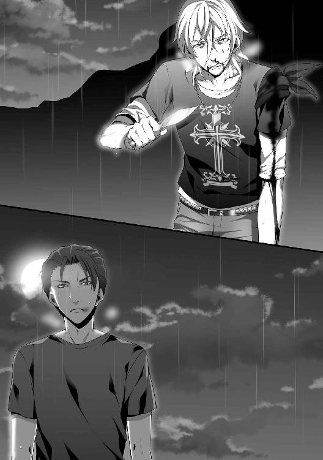
目を刺すような反射光に俺の心が凍っていくのがわかった。
俺はあれを埋めたはずだが──どうして唐宮が持っているのか。
疑問をよそに俺は足運びを変えた。後ろに飛びながら素早くシャツを脱いで手に巻きつけた。黒シャツは周囲と同化できて目暗ましになっていたが、背に腹は代えられない。
唐宮は俺を刺すつもりだ。ならば制圧しなければならない。
手足の一本くらいで勘弁してやる。しばらくは四肢のうちどれかは使えなくしてやる。そうすれば美菜を見ることもなくなるだろう。赤音に手を出すこともなくなるだろう。
俺も安心して旅立てる。もとよりそうすべきだと思っていたところだ。やるかやらないかだけ考えていた。
「それを俺に向けるのか？ 美菜のために俺を殺す気なのか？」
「違うぜヒロト。お前はこれっぽっちもわかってねえよ。美菜ちゃんは半分だ。残り半分は自分自身のためだ。俺はこうする以外進む道なんてないんだ。他にどうしようもないんだ」
「将来のことはいいのか？」
「ガタガタ言うんじゃねえよ──こうなっちまったら、決着をつけるしかねえだろうが。俺はもう覚悟を決めた。くたばってくれよヒロト。俺はお前を海に沈めたくて仕方ないんだ。それが嫌なら負けを認めろ」
毛細血管が膨らんで充血した目玉を見つめた。
憤怒と激情が混ぜこぜになって形相は歪み、狂気が発散されている。
説得は至難だ。力には力で対応するしかない。もう少しだけボコボコにすれば物理的に立てなくなるだろう。
唐宮の上体がゆらりと動いた。俺は腰を低くして慎重に動きを観察し、乾いた唇を舐めた。
※ ※
全身が痛む。空には半円の月があった。半分は闇に隠れている。
目を凝らさねば夜闇で何も見えなかった。それに加えて腫れぼったいまぶたが視界を阻んでくる。顔面を打たれすぎた。どこもかしこも常闇にくるまれている。真っ黒な舌がそこら中を這い回り、景観を見づらいものにしているようだった。
刃物があっても届かねえ──丈は舌打ちし、濁った目でヒロトを睨んだ。
あっという間に肩にスパンとキレのいいハイキックが入ってくる。衝撃を堪えつつ足を刺してやろうとナイフを持つ手を振る。
ステップを踏まれて遠ざかられ、空を切ってかすりもしない。こんなことばかり繰り返している。
フェイントが動きに混じっていて、不規則に手や足が振られ、うかつに間合いに入ろうとしない。
更にはやつの手は開かれ、殴るよりも流すことに重点を置いている。
握った刃物が物足りないちんけなものに思えてくる。
ヒロトは自分をいたぶっている。徹底的に痛い目に遭わせる気でいる。
本当に無力にする気ならとっくにナイフを叩き落としているはずだ。そうしないのは殴りたいからだ。足蹴にしたいからだ。自分のプライドを左右に引っ張ってびりびりに切り裂き、ツバを吐きかけたいからだ。
息があがってくる。
疲労という鉛が両手両足に絡みつき、肩口が針で刺されたようにしくしくと痛む。
いや、もうどこがどう痛いのかもわからなくなっている。
きっとこの端整な顔にも青痣ができている。身体の節々が「もう動くな」と悲鳴をあげている。意志の力で制御しなければいつ誘惑に屈してもおかしくない。
唇も切れ、歯が抜け落ち、口内は血の味しかしない。
「ふ、ざけやがって......なんとか言えよ」
ヒロトはだんまりを決め込んでいる。
刃物を見せてから恐ろしく集中している。やつはろくに傷を負っていない。平然としながら痛めつけにきている。
気に入らねえ──最早、かける言葉もないというのか。
もっと何かを言ってくれ。せめて勝ち誇って欲しかった。それなら戦っていると思えた。
そんな風に──俺を虫けらを見るように見ないでくれ。
情のない酷薄な目で見ないでくれ。今はこんなんでも、俺たちは友達だったはずだ。
ヒロトは断を下したのかよく通る声を出した。
「次に攻撃すれば手足をへし折る。これは最後の忠告だ。引け。俺がやりたくてこんなことをやっていると思ってるのか？ 喧嘩なんて脳みその足りないやつのすることだ」
暗闇からぽつぽつと小雨が降り落ちてきた。
ヒロトは霧雨に反応せず、頬を濡らしながら丈を平坦な目で見ていた。
苛立ちも怒りもそこにはなく、無機物でも眺めているかのようだった。
丈は歯軋りしながら革のジャケットを脱いだ。少しでも重さを失くすべきだと考えたからだった。
「......引けると、思うのか......よ。俺が美菜ちゃんを幸せにするから、お前は引っ込んでろよ......」
「島から出たらいくらでも女は抱けるだろう。つまらないことに固執するな。俺と違ってお前ならいくらでもえり好みできるはずだ」
「つまらないことか......ははっ、本音が出やがったな......お前にはつまらないことなのか？」
「つまらないのはお前の感情のことだ。報われず、意味もなく、無益なことをしてる。さっさと考えなおせ。スナック菓子みたいに女を食ってゴミ箱に捨て続ければいい。それがお前にお似合いだ。俺はただ、美菜はそうさせたくないだけだ」
なんてやつだ。ひどいやつだ。
ヒロトはこの闘いすら無意味なことにしようとしていた。
許せるはずがなかった。命を懸けているというのに馬鹿にするなんて。
丈はくしゃくしゃになった顔で哀願した。口惜しくても言わねばならなかった。惨めったらしくても告白せねばならない。
「俺を信じてくれよヒロト......俺は生まれ変わる。もう自分の人生にうんざりしてるんだ」
せめてそれを認めてくれ。そうじゃないと、そうじゃないと許せないんだ。勝てないかもしれないなんて最初からわかっている。だけど簡単には引くわけにもいかないんだ。簡単に引いたらこの気持ちまで嘘になる気がしてどうしようもないんだ。
わかってくれヒロト──美菜は認めてくれなかったんだ──俺だって祝福したい気持ちが少しもないわけじゃないんだ。
うまくできないんだ。なぜか他人の幸せに拍手できない。プライドがこの口を塞いでしまうんだ。だから、こうすることでしか納得できなかったんだ。
願いは届かない。機械音声のような冷厳な返答が浴びせられた。
「......信じるに足る根拠がない。行動で示さない人間を俺は信じない。俺の目に映っているお前はいつだって自分勝手な下衆野郎だ。ルナさんと赤音を襲い、嫌がっている美菜を口説き続けた。何よりもお前はキリとまともに交際しなかった。美菜とまともに交際するとは思えん」
「ああ......ああ、やっぱりこうなっちまうんだ。だから俺はこうするしかないんだ。うまくいっているお前はうまくいっていない俺のことなんてどうだっていいんだ」
「眠たいことを言うな。振り向いてくれない女のために拳をふりかざしておいて弱者面するんじゃねえよ」
「なら他にどんな方法がある？ 単なる負け犬じゃねえか」
「知らないな。自分で探せ。自分で負け犬になる道を選んだんだろう？ こうなる前に多くの選択肢がなかったとはいわせないぞ」
ジリ、と足が近づいてくる。
やつは攻撃できる距離を測っている。そんなことをしなくたってこっちはボロ雑巾だ。
苦痛が骨の髄までこの身を焼き焦がし、心は絶望にまみれて砕け散っている。あっちは汗すらかいていないように思える。
どうしようもない悔しさで熱い涙が出ている。頬を流れる冷たさが情けない。
熱くなっているのは自分だけで向こうは冷めきっている。
やけくそ気味に体当たりをするために丈は一気に前進した。
身体の中心を狙って手を突き出した。さっと横に回りこまれ、足を引っかけられ、ナイフを持った腕をつかまれた。
関節が強引に引っ張られる。
ゴキリッと骨が外れた音がして、鈍痛が走った。顔が軋んで声にならない悲鳴が喉元から噴き出た。
がくりっと両膝を砂につけ、反射的に不自然に曲がった肩を片手で押さえつける。
力なく地面に転がって悶えながらうめく。
手の中にあったナイフが回転しながら砂地に弧を描いて転がっていく。ヒロトは拾おうともしなかった。
星が見えなくなった曇り空で稲光が弾けた。雷鳴がごろごろと唸った。
雷雲が猛り、地上を吹きつける風が次第に強くなっている。細い枝葉が向きを変えてさわさわと音を奏で始めた。
「うぉああ......くそっ......痛ぇ......」
「終わりだな......少し頭を冷やせ」
ヒロトは構えていた両手を下ろして踵を返し、背中を向けた。
丈は顔面を砂浜に打ちつけ、心胆に気合を入れなおしてよろめきながら立ち上がった。
夜闇の向こうにヒロトは歩いていく。その姿が遠くなり、霞んでいく。
もうすべて解決したと言わんばかりに。
こっちの矜持はこれほど傷つけられているのに。
こんな形で終わりにできるはずがなかった。灼けた脳みそが鶏の金切り声のような絶叫をあげさせる。
心の裡にしまっていたことをさらけ出し、一つのことを自覚させる。
この言葉を口にすれば本当に最後になることだとわかっていた。墓に持っていくべきことでもあった。ずっと言いそびれたことだった。永遠に伝えるつもりがなかったことだった。絶対に口に出してはいけないことだった。
丈はすぅと息を吸い込んだ。
何もかも捨てたとしても得られることがあればいい。
構いやしない──もう、何も構いやしない。
「俺がキリちゃんにお前と寝ろって言ってやったんだっ！」
ヒロトの足取りは止まった。
丈はすかさず地面に転がったナイフを折れていない手に拾った。
柄を握り締める。きつく、強く、震えて。
暗闇でぼやけていたヒロトが踵を返したのがわかった。
輪郭が近づいてくる。不意に開けた雲間から差し込んだ光に照らされて全身がはっきりと映し出される。シルエットが実体を持った。
表情に変化が訪れていた。
人生で初めて目にした激しい怒りに満ちた顔だった。顔の筋肉が崩壊し、禍々しく人間とは思えない顔だった。悪鬼としか形容できない顔だった。
煮えたぎる灼熱の溶岩のような感情が爆発しているのがわかった。目の端が異常なほど吊り上がり、口が大きく開いて犬歯までむき出しになり、硬く握り締めた拳が浮き上がって腰元まできていた。
常にあった冬風に似た涼やかな表情は消え失せていた。
ほとばしる剣呑な気配がゆらゆらと薄膜となってその身に覆いかぶさり、ゆらめいていた。
そこにあるのは夜の闇よりも濃密な憎悪だ。
丈は身体が冷えていくのがわかった。悪寒が胃の腑と背骨になだれ込んだ。怖気が弱気の虫を起こそうとしている。
まだ終わっちゃいねえ──びびるな。臆病者になるな。心を凍らせるな。
怒らせれば勝機がある。冷静さを奪えば勝てる可能性がある。負けることなど考えるな。
ここに懸けるしかない。
負け犬になるなんてできなかった。幸せになってくれと言えるほど人格者にもなれなかった。欲しいものは欲しい。素晴らしい明日を手に入れたい。このままじゃどうにもならないからこうするしかない。
丈はふらついて頼りにならない膝を打ち鳴らして自分を叱咤した。
得るために失うことを恐れたくなどない。生まれ変わりたい。惨めで味気ない人生から解放されたかった。
再戦の口火を切ろう。
「あの子は信じたよっ！ お前と寝れば仲良くなれるってなっ！ 顔だけはよかったからなっ！ お前も抱いてやればよかったんだっ！」
「黙れ......」
「お前のせいだっ！ キリちゃんを受け入れてやらなかったお前のせいだっ！ お前は自分の妹すらまともに愛してやることなどできなかったっ！ 結局、何も与えてやらなかった！ お前が殺したんだっ！」
叫ぶことで発奮し、足を踏み出した。
砂浜を蹴って疾風のごとく駆け抜けた。全身全霊で筋肉を収縮させた。屈強な健脚は要求を達成した。
虚を衝くためにスライディング気味に下蹴りで足元を狙った。見事にヒロトの足首に命中した。
ヒロトが崩れた。丈はすぐさま体勢を立て直して振りかぶる。
首筋に向けて白刃を振るった──予期していたかのように衣服を巻いた二の腕で防がれた。
布からナイフの刃筋をつたい、僅かな血がしたたった。
ヒロトが拳を溜めているのが見えた。砲弾のように発射された拳は正確に丈の胸をぶち抜き、その身体は派手に中空に浮いた。
足首が地面に着地するとぐるっと回り、風に揺られる無力な枯れ葉のごとくおぼつかない足取りでふらりと力を失い、うつ伏せに倒れた。
力尽きたのか、そのまま動くことはなかった。
「......立てよ」
ヒロトは近づきながらもふと違和感を見つけた。
丈を中心にして血が流れているのに気づいた。小円となって次第に広がっている。
ナイフを持った手は胸の方に向けて入っている。
※ ※
暴風雨のような荒れ狂っていた情動が急速にしぼみ、パラパラと身体から抜け落ちていく。
「唐宮......？」
拳固は指先の感覚を思い出し、さざ波立った心が平衡感覚を取り戻していく。
どういうわけか、唐宮に声をかけてもろくな反応がなかった。衝撃で気を失っているのかもしれない。頭を打ってはいないはずだが。
俺は倒れた唐宮に近づき、肩をつかんで脱力している身体を仰向けにした。
長く低い呼吸が繰り返されている。暗がりとなった左胸に異物がくっついているのを見つけた。突き刺さったナイフだった。浅黒い血がどくどくと流れている。鼻に絡みつく鉄錆びの臭いが強い。
屈んで容態を観察した。刃は十センチほど内側に入っている。心臓の位置ではない。それでも出血はひどい。
喉道からコポコポと音がしていた。血液が気道に入っている。肺に侵入しているかもしれない。
ぎょろっと眼球が動いた。
「ヒ......ロト、どうして俺を......信じ......」
虚ろな目がジッと俺を見つめる。
言葉は最後まで繋がらなかった。口の動きが途中で止まった。手をかざしてあてると呼吸が静止しているのがわかった。心臓マッサージをするために両手を胸にあてた。口を覗き見ても暗くてわからない。
力を込めて上下に圧迫した。早急に肺の中の血も吐かしてやらないと。
「大丈夫だ」
急いで砂を集めて足を持ちあげ、顎を摘んで気道を確保し、肺の中にも空気を送り込んだ。力強いマッサージを繰り返す。
ぐっぐっぐ、と押し込む度に唐宮の身体が振動する。どうにか心臓を刺激することができているはずだ。
──人の気配がした。
菩薩像を思わせるうつむき加減の半眼で俺を見ている美菜が立っていた。
その後ろにいる赤音は青ざめていた。血がすべて抜け落ちたような白い顔だった。
「ヒロちゃん。彼はもう死んでいますよ」
「違う。死んでいない。これは心臓の位置じゃない。美菜、ぼさっとしてないで手伝ってくれ。一刻を争うんだ」
「いいえ、よく見てください。動脈が破れたんですよ。足元を見てください。その血の量が見えないんですか？ あなたは前後不覚に陥っているのです」
ゆっくり足元を見た。
靴底は濡れて粘りがあった。血溜まりは泉のように広がっている。確かに致死量に達しているかもしれなかった。
諦める理由にもならない。まだ。まだ間に合うはずだ。
「ヤシの実を持ってきてくれ。濾して血管に流せば生理食塩水の代わりになるはずだ。きっと間に合うはずだ。頼む、早く持ってきてくれ」
「ヒロちゃん。ならどうして泣いてるんですか？ もう終わったからでしょう。唐宮さんが脱臼しているのを知っていて突き飛ばし、刃物が刺さるだろう角度になるように殴ったからでしょう？」
「いや......待ってくれ、そうじゃないんだ」
──はらはらと涙が出ていることに気づいた。
──いいや、違う。美菜は間違っている。まだ間に合うはずだ。
──ならばどうして俺は手を止めているんだ。
思考と行動がまるで釣りあっていない。行動しないのは諦めているからじゃないのか。
のろまな薄ら馬鹿みたいに頬の涙をすくいとって確認している。こんな暇があるのならば蘇生措置に全力を尽くすべきだ。
どうしてそうしないのか。このままでは唐宮は死んでしまうのに。
赤音が踵を返して走り去っていった──恐ろしいものから遠ざかるかのような足取りだった──両耳を手の平で押さえて何も聞かないようにしていた。
彼女の姿が消えて、美菜は俺の横でしゃがんだ。
手を伸ばし、唐宮の両目を優しく閉じさせた。深い悲しみに彩られた顔つきのまま硬直している。
そうだ──これは死んでしまっている。
死んだ。俺が殺した。殺したのか。そうか。俺が殺したんだ。狙いすまして事故に見せかけて殺したんだ。殺したわけじゃないと言い張るためにこんな残忍な殺し方にした。
──ああ、なんという打算的な殺し方だ。利己的な殺し方だ。
俺が殺したわけじゃないと叫ぶための殺し方だ。
遺体を見つめた。眠っているような姿だった。まだ身体には暖かい体温が残っている。
すぐにでも目を覚ましてしゃべり出すような気がした。
もう唐宮は俺に向かって声をかけることなどない。何かに成功して手を叩き合うこともない。冗談を言い合うこともない。
理解すると胃袋が殴られたように蠢動した。酸っぱいものが襲ってきた。堪えながら歯を噛み締めた。
「ヒロちゃん、私の目を見るのです。あなたは目の前の女のために親友を殺したのです」
「......待ってくれ。俺は腕を折るだけのつもりで......いや、こんなのは言いわけだ。どうして、俺はこんなにも......」
動揺のためか痙攣する自分の手が見えた。持ちあげると真紅に染まっている。指と指の間がべたついていた。
突然、美菜は覆いかぶさって俺の頭を強く抱きしめた。
絡まって回された手が首元に当たり、顔が彼女の胸にくっついた。
言いようのない温かい人肌にくるまれる。
湿っぽく妖艶なささやき声が耳朶を柔らかく震わせた。乾いた大地にしみこむような声だった。
「あなたは私への愛を示しただけですよ。素直に嬉しく、これ以上にないほど幸せを感じます」
俺はパクパクと馬鹿みたいに口を動かした。何も声にならなかった。何も言うことができなかった。
殺意をもって実行したのは間違いない。
俺は俺が信じられない。信じられたことなどない。ああ、だが、しかし、こうしたことに疑問などない。
お前はこうなるのは全部計算づくなのだ──どこからか聞こえてきた声。反発しないわけにはいかない。
違うんだ──どうか、どうか、どうか、違うと誰か言ってくれないか。自分がわからなくなっちまってるんだ。
数十秒ほどで美菜は拘束をやめた。離れたかと思えば滑り込むように俺に口づけした。唇の感触はすぐに消えた。
唾液が交換され、つぅと糸が伸びて切れた。
そうして、羽の生えた天使のような美しい笑みが向けられる。
「もうあなたには私しかいないのですよ」
雨が降って気温が下がったせいか、ユスリカが空中で塵旋風に似た円状の渦を作っている。
小さい羽虫の集合体を横目で見ながら岩壁から染み出した湧き水がつまったペットボトルを手に取る。
水分を含んでぬかるんだ地面には黄色い葉が積み重なって散らばっている。常夏の島でも葉は入れ替わるようだった。季節は巡り、夏が終わり秋が来る。
悪天候は収まる気配を見せず、厚い雲が頭上の大部分を占めている。時折、差し込んできた陽射しが背中をあぶってくる。
草むらを抜け、野営地に向けて根の張った獣道を歩きながらとりとめのないことを考えた。
ルナさんは死に、唐宮は俺が殺し、赤音は以前やっていたように俺の視界に入らないように生活している。
まともに五人で集まって生活したことはなかったが、今思えばもっとやりようがあったのではないかと空想する。
現在など泡沫の夢であればいい。そんなくだらなく厭世的なことを考える。キリが死んだ時は強くそう考えた。
今の考え方もそう変わらない。俺は成長していないままだ。
「おかえりなさい」
野営地の丸太に座った美菜が火を焚いてサザエの残酷焼きをしていた。交差して積み重ねられる薪の上には不恰好な鉄網が乗っていた。
直火であぶられ、香ばしい匂いが漂い、煮汁が沸騰している。
美菜のパーカーのフードに落ち葉がつまっていたので、手を伸ばして地面に捨てる。うなじを触られた彼女は片目をつむってくすぐったそうに身じろぎした。
横にあった玉石に腰掛けた。
二足のサイドテーブルにペットボトルの束を並べる。風雨のせいで家具が傷んできている。修繕する気力は今のところない。
「最近、やたらとぶらぶらしてますね。どちらへ行っていたんですか？」
「眼鏡を......探してたんだ」
「眼鏡なんてしてたんですか？」
俺は目の前に手をかざして蝶が躍るようにひらひらと振った。
「サッカーをやり始めた時、グラウンドの砂粒が目に入って痛くて、眼鏡をするようにしたんだ。それがくせになってつけるようになった」
「なるほど」
「それに、塾の皆がつけていた。近眼になるのは勉学の証だと言っていた。運動ができないコンプレックスを隠してるようだった。俺もサッカーが下手くそだったから、レンズに度も入ってないのに仲間に加わって誇っていた」
「なんか、気落ちしてますか？」
「あの時は単純に不純物を防ぐために眼鏡をつけてたんだ。今、俺も眼鏡をつけるべきなんだ。しっかりと目を開かないといけない。冷静に物事を把握し、やるべきことを遂行せねばならない」
「そうですね」
「俺はこの島から一刻も早く出るべきだと思ってる。船を完成させ、旅立ちたい。だが、もうそんなことがくだらなく思えている」
両手を組んで膝頭に置きながら振り向くと、美菜は涼しい顔つきでサザエの身を竹串でくり貫いていた。
剥き身がこぼれないように差し出す手と下手で上品に挟み、湯気の立つ串を口に運ぼうとしてくる。
「あーん」
無視して独白を続けた。
「俺の父親は国家公務員だった。家族を監督する内規義務があった。俺が妹を自殺に追い込んだことで窓際の席でソリティアにあけくれる日々になった。母親との仲は悪くなり、やや家庭は崩壊気味だ。今でも俺は両親ともに疑いの目で見られている。口には出さないが俺がそもそもの原因だと決めつけている。父さんは国家公務員Ⅲ種で大蔵省に入省した。七人兄妹の末っ子生まれで、貧乏で金がなくて大学に行けなかったことを呪ってた。キャリアを恨み、それでも憧れて息子の俺に期待をかけ、大学に行って欲しくてたまらなかった。だから俺はどこだろうが行ける学力を身につけてやった。親の期待に応えるのが正しいことだと信じたからだ」
美菜は俺の口に無理やりサザエをねじ込んできた。
仕方なく噛みながら言葉を宙に浮かべる。
心がふわふわとしていて、落ち着きなくさまよっている。足が地についている気がしない。
「『妹に手をかけるようなやつは俺の息子じゃない』。牢屋にぶちこまれた俺に対する父さんの最初の台詞だった。当時は父さんと母さんはキリの方が好きだった。不出来な子供の方をかわいがるものだからな。俺はかわいげがなかった。だから過ちを犯しても、わがままを言っても、雑貨品を万引きした次の日でも雨が降れば車で学校に送迎してた。俺はそれでいいと思っていた。今でもそうだ。俺にはもう君しか大事な人はいない。ああ、事実だ。紛れもなくな」
ペットボトルをひったくるように片手に持った。渇いた喉を水で湿らせた。
「だから言ってくれ美菜。俺に助けてくれ、と。この島から出してくれ、と。それが俺の力になる。ここから命を懸けて脱出してやる」
「セックスしませんか？ むらむらしてきました」
手に持ったペットボトルがぐしゃりと変形した。握り締めた指先が力が込められて白くなっている。
「......俺は唐宮の死体を沼に捨てた。衣服を燃やし、そのカスも投げ込んだ。こんな時でも保身を考えてるんだ。俺は自分が止められないんだ。遺体が微生物に分解される二週間はこの島で大人しくすべきだと考えているんだ。俺の根源は身の毛のよだつ邪悪な悪意ばかりだ。墓を作ったが肉片も骨も埋めていない。友達だったのにだ......っ！」
「今日はパンツはいてないんですよ私」
ぺろっと竹串を舐め、美菜は俺の太ももに手を置いた。
裏側を沿って撫でられ、するすると中心へと向かっている。
自然と瞳が重なった。琥珀色の瞳は波のない静謐な湖を思わせた。
「美菜、俺はひどい人間だ。とびっきり頭のおかしい人間だ。客観的に見て間違いない。どうしてまだ君は俺の傍に居るんだ？」
「最近、縛られるのも興味があります」
「話を聞けよ......」
脱力して額を両手につけ、身体を曲げた。
げっぷを促す赤子に触る手つきで背中が擦られる。背骨を沿って上から下へ動く。
「聞いてますよ。泣き言には興味ないだけです。私はしばらくの間、ヒロちゃんと島で暮らしても構いません。ここの暮らしもそう悪くありませんし......考えてもみてください。魅力的な異性と二人きりで隔絶した空間にいるんですよ。こんなに楽しい状況はないでしょう」
美菜は片足を持ちあげて丸太に乗せた。
チェック柄のスカートの裾をぱくりと口に咥え、柔軟な股関節を露わにして見せつける。
よじれた秘肉と充血した淫核。恥骨から内側は綺麗な桃色のままで、淡い芝生も刈り整えられている。
縦に滑りそうな視線を理性で持ちあげ、苦々しい思いを打ち明けた。
「俺は快楽に溺れたくない。ただの逃避にだけは」
美菜は裾を咥えたまま、器用に口をひん曲げる。
「快楽のためではなく愛を育むためですよ。何よりも私と家庭を作るために必要なことではありませんか？」
「家庭か。殺人鬼の夫と暮らしたいのか？」
「暮らしたいですよ。私を力ずくで従順にしてみてください。それにセックスしていれば全部忘れられるでしょう？」
「俺は......君に嫌って欲しい。何もかも受け入れないでくれ。だめなところを責めてくれ。残忍なことをするなと罵ってくれ」
相反する感情は緩やかな微苦笑でいなされた。
美菜はペッとスカートの裾を吐き出し、立ち上がって俺の膝の上に大股で座り込んだ。
対面から首筋に両手が回ってきて、ひんやり冷たい頬が接触する。彼女から発散される甘い梨のような匂いが鼻腔をかすめる。
小さい膨らみが胸板に押し当てられている。
ひそひそ声が脳髄に侵入してくる。
「そろそろできると思うんですよ。わがまま言っちゃだめですよ」
美菜は自身の下腹部を満足げに撫でつけた。愛おしそうに。未来を夢見るように。
「あなたはもう私のモノなので、私はあなたのモノなのです。私を選んだのはあなたの選択ですよ。まさかこの私から逃れられると思っているのですか？」
※ ※
誰にでも最初の記憶がある。それが断片的だとしても。
灯向赤音にとって最初の記憶とはアルトの狭い車内に居た時のことだった。
シートに寝っ転がってリアガラスの向こうの夜空を見つめている。神々しいまでの放射光に照りつけられたパチンコ店の駐車場からは星々は見えず真っ暗闇だった。
リアガラスには横線が等差間隔で引かれ、それが幾つあるかを数えていたような気もした。
父親と母親が戻ってきて、エンジンが振動し、帰路へつく。
両親はパチンコと競馬が好きだった。根元が生真面目な母親はそれほどでもなかったかもしれないが、父親の悪影響によって毒されたのか、裕福になってから思い出したように手を出していた
似たもの夫婦だ。それに母親は父親がやることには必ず従う。どんなことであっても。
過去の日常は今日はいくら買ったとか負けたとかを口々に言い合い、汚い言葉を用いて何事かを罵っていた。
住み処であり、トタン屋根と純正の鉄なのか疑わしい錆びた鉄芯で作られたアパートは快適とはいえず、騒音と猥雑さで包まれていた。
二階にはフィリピン人とブラジル人が居て、二階廊下を占拠するようにプランターで菜園を始めた中国人とトラブルになり、夜中にジャズを流して戦う遊びまで始めていることもあった。
洗濯機と掃除機が夜中に合唱をし、父親が切れてハンマーでブレーカーを破壊した記憶もある。完全に停電となってもレトルトと持ち帰ったコンビニ弁当で食事をすればことは足りた。
共同トイレはもとよりホースで水をぶっかけて洗うような不衛生加減だ。何がどう壊れたかといってもそれは日常だった。天井がぶち抜かれない限りは慌てる必要などなかった。
民生委員の中年女が「めげちゃいけないわよ」と励ましのようなことを言って手を握ってくれたこともあった。厚生省から遣わされた行政の救いの手にはなんの権限もなく、友達と一緒に遊ぶ玩具もくれない。
ボランティアに頼り、まともに金も払わない国に忠誠を誓う民生委員などいない。
児童相談所に精勤する公務員にしたってそうは変わらない。疲れた人間と接すれば、誰もが疲れ果てる。もとより、強権はなく家庭の問題は家庭で処理すべきだという暗黙の了解がまかり通っている世界だ。
この世はすべては金銭が下地になっていて、その強欲を招く包み紙の中で人は生活しているのだと薄々とわかっていた。
物心ついた時には赤音もそれなりに家事をするようになった。洗濯機の回し方を覚えると、土木作業員の仕事をしていた父親が持ってくるコンクリートの欠片が気に入らなくなった。
作業着のズボンからぽろぽろとこぼれるそれは部屋中を砂漠にしようと企んでいる。貧乏でも不潔なのは嫌いだった。
小高い丘の上の高級住宅街にはお金持ちの人たちが住んでいた。その中心で整備された公園で男の子は真新しいサッカーボールを蹴り、フリルつきのお洋服を着た女の子がブランコに乗り、手の皮が剥がれもしない楚々とした奥様が井戸端会議をしていた。
子供心に近寄ってはいけないと思った。住む世界が違うのを敏感に察したからだ。何かを我慢することが必然だった。そして同じような子供は同じような子供と遊ぶ。
アパートの隣の部屋に自分と似たような境遇の子供が住んでいた。
その子の親はシングルマザーであって、名前はみーちゃんかみっちゃん──ところどころ欠落した記憶によればそれらしい何かだった。
前歯が抜けていて、左目がやや斜視になっていた。同じ小学校に一緒に登校する班の一員。
常に暗い顔をしており、人から言われたことはなんでものろのろと従う子だった。
貧乏暮らしは同じでも自分と少しだけ違う点があった。みーちゃんは新しい玩具を常に持っていることだった。
小学校低学年だった赤音にとってその差異はとても大きく、看過できないことだった。
どうにも自分の持っている人形はみずぼらしく、手垢にまみれて薄汚れている気もした。
彼女の部屋でおままごとをして遊ぶことはあっても、名状しがたく納得できない感情が渦巻いていた。
「いいね。お金持ちなの？」
「ううん。ごめんねだから」
「ごめんねなんだ」
「うん。ママが謝る時にくれるの」
ママが謝る──何に対してか。
家に帰ってからそのことを母親にやんわり話すと「水商売してるからかしら」と簡単な返事が戻ってきた。赤音にはあまり理解できなかったが、お金がもらえる仕事だとはわかった。
自らのたるんだ腹を叩き、ぶつぶつと呟きながら求人広告を見、ふて腐れている母は男の人に好まれるような容姿ではないことは確かで、同じことは望めそうになかった。
遠目で見るみーちゃんの母は小奇麗にしていて、クリーニングされた清潔な衣服を身につけていて羨ましかった。どうしてこんなところに住んでいるかは永遠の謎だった。
ある日、父方の祖母の訃報が届いた。父はおどり出さんばかりに大喜びしていた。遺産が転がりこみ、その額は手放しで喜べるほどのものだったからだ。
レストランの経営を始めると言い出した頃だった。母親はこの世の終わりのような顔をしていた。借金がいくらかあって、その返済にあてるものだとばかり思っていたからだった。
毎日が慌しくなった。父親の手伝いに母親が駆り出され、商売が軌道に乗ったことで引越しのついでに転校の話も浮き出てきた。住み処が変わることは人間関係の終わりを告げることでもあった。
転校少し前のこと。日曜日の午前中。
壊れかけてろくに音が鳴らないインターフォンが鳴った。
軋んだドアを開けると、みーちゃんがぬいぐるみを片手に立っていた。遊びに来たのかと思った。
どうにも様子がおかしくて、小さい肩が震えているのがわかった。青白い唇と真っ赤な頬が印象的だった。
「あかちゃん。殺されちゃう」
「え、どうして」
「ママが一緒に死のうっていうの」
「......やだね、それ」
「......やだ」
しばらく遊び、母親が帰ってきてそれで終わりだった。みーちゃんに何があったのかはわからないが、肩やお腹の辺りをしきりに手で押さえている姿が鮮明に記憶に残っていた。
数日後に転校した。彼女の記憶は色褪せ、忌まわしい過去の一つとして数えられた。
裕福になってからアパートでのことなんて考えなかった。その付近に足を運ぶことすらためらっていた。
歳月が流れ、高校生になって精神的に落ち着いた時期だった。遠出して買い物をしたついでに立ち寄ってみるのもいいと考えたことがあった。
思春期のせいか郷愁を求めたこともあったのだろう。
解体されたアパートの跡地があり、高層マンションの駐車場になっていた。景観は時代によって移り変わり、雑然としていたアスファルトの道は二車線になって整備され、高い建物が立ち並び、繁栄する街の一部へと変化していた。
みーちゃんとの思い出は浅く、彼女もどこかで幸せになっていると漠然と考えていた。
しばらく跡地を見つめてから足を来た道に戻そうとした。
通りがかった民生委員のオバさんに偶然会ってしまった。
彼女は赤音のことを覚えていて、頭から足先までジロジロと眺めてその成長ぶりを褒め、しばらくからかった後にポロリと口にした。
「蜜枝ちゃんね。よく覚えてるわ。可哀相な子だったわよ。あんな母親がいたせいで、小さかったのに可哀相だわ。でも、あの奥さん出てきてからまた結婚したらしいわ。今度の子はきちっと育てるって裁判官に言ったみたいで......当時、妊娠して不安定だったらしいのよ。もう事件なんて起こさないで欲しいわよね」
煙草で黄色くなった歯が覗けていて、くねくねと何かを引っかくような手つきを繰り返し、相槌を望むようにオバさんは顔を斜めにした。
暗澹たる気持ちになりながらも赤音は頷き、その場を離れた。
足取りが重くなり、言いようのない感情が噴出して、キリキリと身が引き締められる。
小さかったのに可哀相──その身に何が起こったのか、想像するのは難しくなかった。
あかちゃん。殺されちゃう──知っていて、何もせず、すぐに忘れた。そして母親に殺された。
どうしようもなかったはずだ──しかし、誰にもそのことを告げなかった。どことなく恐ろしかったから。
手を伸ばそうともせず、転校してから連絡もしなかった。できたはずだった。しなかった。
すべてから救えずともほんの少し勇気を出して、元気づけてやることくらいはできたはずだった。
こんなことになるなんて思わなかった。それも事実だ。見捨てたわけではない。そういうこともできる。
今回もそうだ。
ヒロトは恐ろしい顔で丈を殺した。怖くなって衝動的に逃げ出した。無理もない話ではないか。過去の一部としてやり過ごすべきだ。
──そして。
「......はぁ」
ため息をつきながら大樹の根元に座り込んでいる。
島に来た時と同じことをしている。あの時も意固地になってヒロトたちから離脱してしまった。何も考えずに衝動的に動いてしまった。過ちばかり犯している。
きっと、ヒロトは助けて欲しかったに違いない。
自分と違って美菜は立ち去らなかった。あの女は暗闇の化身だ。人をよくない方向に導こうとしている。そんな者に自分は根負けてしまった。
きゅうう、と腹の虫が鳴る。
ここ数日間、ろくな食事を摂っていない。どうにも気力が湧かなく、食欲がない。だからといって食べなければ余計に弱っていくだろう。
赤音は手近なところにあった釣竿を握った。おぼつかない足取りで西南の岩場に向かう。
深度のある場所に竿を落ち着ける位置につくまで少しだけ上り坂になっているが、ごつごつとした岩肌には腰を落ち着けるスペースは充分にある。今日の波は緩やかで白泡は少ない。
途中、美菜の作ったカニ落とし用の穴に足を落としそうになり、赤音は舌打ちした。何から何まで足を引っ張ってくる気がした。
「......だめだな」
釣り糸を垂らし、目を凝らしても水面下に魚がいる気配がない。撒き餌をしてみようかと考えて──野営地に食べ残しを漁りに行かなければならないと思うと肩が重くなる。エサとなる昆虫を集めるのも一苦労だ。
二人と一緒に居ずらくなっている。何よりもどんな顔をしてヒロトに会えばよいかわからなくなっていた。
長い重いため息が口から漏れた。
森の果物でも探そうかとその場から離れ──ふと、思い至って足の向きを変えた。
ポイントとしては海岸の端から樹林へ数メートル、藪に包まれた小さな空間へと足を運んだ。
以前は期待を込めて毎日そこへと通い続けた。今も僅かに期待している。
そうであったらどうするべきか。どうしようもなくなってしまうのではないか。
どくんっ、と鼓動が鳴った。
周囲を囲うように自生しており、手の平で触れれば切れてしまう灌木の真下に大葉の包みがある。蔓草の紐で丁寧に封をされていた。
恐る恐る、開いてみるとマンゴーが四つと干し肉があった。
誰が置いていったのか瞬時に理解した。
どこからか、こみあげてくるものがあった。
「うん......そうだよね......そうだよね」
泣き出しそうになった。実際に泣いていた。
そうだった。そういう人だということをつい、忘れてしまっていた。
こっちがどんなにひどい態度を取っても──手は離されていない──甘えてしまっている。
※ ※
美菜の腰がグラインドした。
自身が熱い粘液と秘肉で包まれ、激しい刺激が下腹部を襲っている。
美菜は小さい身体にびっちりと汗をかき、打ちつける速度は容赦なく、股間に火が点いているのかと思える。
陶酔感が現実味を失わせる。視界が白くぼやけている。美菜は艶やかに微苦笑して俺の胸板に両手を置く。
小尻が緩急をつけてくねった。大きく開いた股ぐらが上下に運動する。
俺が射精しても彼女は腰の動きを止めない。内包されたまま絶妙な締めつけで硬度を取り戻させようとしてくる。その繰り返しが永遠に続くような錯覚に囚われる。
快楽の螺旋、パラシュートをつけて奈落へと下降していくような夢見心地だ。
唐突に──柔肉がびくりと震え、美菜は双肩を突っ張らせた。足首がぴんとなって突き抜ける快感が巡り伝わっている様子が窺える。
力を失い、脱力してくたりと倒れこんできた。
荒い呼吸が首筋にかかる。涙目になってとろけた表情、長いまつ毛が魅惑的な流し目を作っている。
「んっ、どうでした？ 気持ちよかったですか？」
ことが済むと彼女は満足そうだった。何もかも思い通りに人生を運んでいるのだという風でもある。
「......君は麻薬のようだ」
「あはは、嬉しいですよ。乗馬したかいがあるというものです。何度でもやってあげますよ......たっぷりと、いつまでも」
さらりと顎先を撫でられた。
扇情的な所作にいちいち屈するわけにもいかない。
「提案は歓迎したいがそろそろ......食料を集めたり、船も作らないといけない」
美菜の背中に手を回し、しばらく抱きしめた後に立ち上がろうとしたが──腕の付け根が押されて倒される。
悪戯が成功した子供の顔。甘くとろけるような声も発せられる。
「ヒロちゃん......旅立ちはもっと後でもいいじゃないですか。ゆっくりお互いの仲を深めましょう」
「考えたいこともあるんだ」
「どんな考えですか？」
「唐宮は本気で俺を刺すつもりはなかった。手加減していた。だから、この手の甲の傷は浅い」
美菜が自製した膏薬が塗られ、布が巻かれた手を顔の前に持ってくる。
そうだ──あいつは本気だったが、どこかためらっていた。
俺を傷つけるためではなく、自分自身と決着をつけるために戦っていたのかもしれない。そんな気もした。
もうすべては手遅れだ。
「......そうでしょうか？ ヒロちゃんは私を護っただけですよ」
「ああ、俺は君を取られたくなかった。それも事実だ......だからといって、殺してよいわけでもなく──自分の非情さがどうしようもなく嫌になる」
美菜を押し退けた。シーツに手をつくと下敷きとなっている毛皮の感触が跳ね返ってくる。
ここは彼女が森林の中に作った家であり、しなやかに伸びる木々の枝葉で円錐状に広がり小部屋となっている。雨を防ぐために天蓋は葉で密封されているので、陽射しは出入り口付近と採光窓のような隙間から降り注いでいるのみだ。
衣服に袖を通しながら艶っぽい目をしている美菜を見下ろした。
俺の嘆きはすべて寝言のようなものだ、意味もなく、無駄な懺悔にすぎない。
罪を贖おうなんて思っちゃいない。俺はそこまで感情的になれない。
今あるのは不明瞭な感情だけだ。行動を起こすことを止められないだけだ。
「焚き木を集めてくるよ。君はどうする？」
「私はちょっと内陸に行ってきます。夕方には戻りますよ」
「そうか......気をつけてな」
「ヒロちゃんは私を憎みますか？」
「どうして俺が君を憎まなきゃいけないんだ」
「私が最初からすべて協力していたのなら、今頃は本土に戻れていたからですよ。なんの争いも起きず、静かな毎日を送ることができていたでしょう。ルナさんも、唐宮さんも生きていたかもしれません」
悪びれたような口ぶりではなく、素っ気なく、淡々としているのが彼女らしかった。
シャツを着て、目元をこすった。
身体が少し重かった。軽いめまいがした。腰骨がなくなったかのような倦怠感。
「恐らくだが──君は帰る理由がないんだろうな。今となっては俺もない。君がこの島で永遠に暮らすことを望むなら構わないとも思っている。俺は君のことがたまにわからなくなるが、そういうところも含めて惹かれている」
「なら......それでもよいのではないでしょうか」
「妹の墓参りに行きたいんだ。それが終わったなら......後は石器時代にタイムスリップしたっていいよ。マンモスの肉を君に食わせてやる」
「まあ」
上品に口元を手で覆い隠してくすくすと笑う。
俺もつられてはにかみ、頬を緩める。
一歩足を踏み出してから振り返った。陽射しがつま先に当たった。再び酷暑の中に身を投げ込む前に語りかける。
「俺は君が帰りたくない理由を知っている。だけど、口に出したりはしない。俺は君から話してくれるのを待っている」
「まあ」
美菜は目を細めた。今度は笑ったりしなかった。
俺も笑わなかった。
※ ※
自活しろ──ヒロトが口を酸っぱくして言い続けた説教を思い出し、赤音は胸を張って決心した。
食料の調達くらいはできるようになるべきだと。様々なことで頼っていて、不安定な生活から脱出しようと。
なんでもできる必要はないが、この先の人生においても誰かの世話になって生活するくせがついてしまうのも嫌だ。
思えば洗濯や食事の準備なども専業主婦となった母に頼っていた。
貧乏暮らしだった頃は違ったのに、家庭環境によって楽になったからだ。
乾燥機がついたドラム式洗濯機や六十四インチのテレビ、性能の優れた食器洗い機にビニールハウスつきの広大な庭。
家の照明や風呂釜を操作する万能タッチパネル──そんな暮らしに慣れきってしまっていた。
物質的に満たされることが両親にとって幸せだった。赤音もそうであったが、どことなく一陣の風にさらされたかのように物寂しい時もあった。今、一人きりで居て寂寥感を覚えるのは便利な家電がないからではない。
「うぅん......やっぱり、あたし、わがままかな......」
いつまでも親に頼って暮らすわけにもいかない。
今回の旅の始まりもそうだった。家出してやろうと思ってのことだ。
──本当はほんの少しだけ驚かせてやろうと思っただけだったが、予想以上の惨事となってしまった。
嫌なことから逃げ続けて、自己弁護して、そうして我が身を哀れむ──もうたくさんだ。
「パンノキ見っけ」
口に出して樹高十メートル近い木を見あげる。やや幹が湾曲して盆栽みたいにくねっている。
多くの実はもがれてしまっていたが、頂点付近に数個ほど生っているのを目ざとく発見する。
ためらったが、着ていたワンピースを脱いでひねってロープ代わりにする。
結び目をしっかりと引き締め、足に通して輪にする。
ごわごわの樹肌に手をついて、過去の記憶が脳裏によぎる。
ヒロトが登り方を教えてくれた木だった。この果実を持っていき、仲直りの印としよう。
そうすれば自分のこともわかってくれる──まだ意識してもらっているはずだ。
曖昧な下心がざわついた。鮮やかな色のついた未来を夢想した。包丁を持って台所でエプロンを着た自分とスーツ姿のヒロトがいる家庭がまぶたの裏で見えている。
二人とも笑っていて、それほど広くないアパートで暮らしていて、喧嘩したり身を寄せ合ったりしながら幸せになっている。
肩と肩が重なって二人で眠っていたい。それこそが理想の幸せの形であって、赤音はそんな幸せがたまらなく欲しかった。
そんなことにはならない──残酷な理性の声も聞こえる。
妄想は自由だ。夢見るだけならば損はしない。思い描いているだけでも幸福なのだ。
「......きっつ」
四肢を動かしつつ、途中の太い幹で一休みする。体力は未だそれほどついていない。内陸に行く時もヒロトに足幅を合わせてもらってしまった。
下を見ないようにしているが、つい見てしまって足がすくむ。
ぐっ、と握り拳を作った。
恐れたところで状況は好転したりしない。この果実で仲直りすることは決定事項だ。
面と向き合って、話をして、この島から出て、美菜から引き離してやらないと。
あんな悪い女と付き合っていても、いい結果になるはずがない。できれば自分と付き合って欲しい。
ああ、なんでこんなに欲深い。だが感情の奔流が止められない。
赤音は自嘲した。助けてあげるから、自分も助けて欲しい。そんな身もふたもない気持ちが渦巻いている。
再度、足腰に力を入れて登る。
運動によって汗をかき、まつ毛をつたって頬を流れる。
それでも懸命に手を伸ばし、ぶるぶると震える指が黄色いパンノキの実を捉える。
思いっきりひねるとぶちっとヘタが取れた。
実が熟しているのでやや老化していたのかもしれない。眼前に持ってきて、赤音は微笑んだ。
びっくりするほど大きく色づいた実だ。食べ応えもありそうだし、もしかすれば褒めてくれるかもしれない。
褒めてもらいたい。よくやった、と。お前も成長したな、と。
そうだ──これをまず一歩に。
「あれ」
赤音は左手が横に流れているのにふと気づいた。
しっかりと樹木をつかんでいた手が外れている。ちゃんとつかんでいなければならないというのに。
──よく見れば。
左手の前腕部に何か棒状の物がくっついている。
それは細長く──尾に白い羽がついていて──先端がずぶりと腕の中に入っているようだった。
貫かれた矢じりは血まみれで突き出ていた。串刺しになっている。
「あ」
うっかりしてか、ぽろっと抱えていた実が地面に落ちた。
自らのうかつさを呪って、自分の左腕に視線を戻すとじわりじわりと鮮血が肌を汚していた。
異物感だけがあって、痛みはまだない。
「......矢？」
撃たれた──そのことを理解して頭がくらりとした。
しゅんっと風を切る音がして、二の矢が胸に突き刺さった。どすっと音がした。胸を殴られただけの感触。激痛はまだない。
赤音は衝撃でのけ反って、樹木に絡んでいた足を離した。
それは落下を意味していて。
目にしている景色が急激に離れていくのを赤音はぼんやりとしながら見つめるしかなかった。
※ ※
まだら模様をした蛇が枝からぶら下がって俺を凝視していた。聖書によれば蛇は悪魔の使いだった。俺にとっては食糧でしかない。
手近にあった棒切れで叩き落としてから気絶させ、唐宮のジャックナイフをジーンズのポケットから取り出し、頭部を切断した。
穴を掘って頭部を地面に埋め、巾着袋に死後反応をしてうねうねとする蛇を突っ込む。
鳥用の罠の仕掛けには成果はなかった。乾物を作るためにある程度の獣の肉が必要だ。保存食料はいくらあってもいい。
──ダンンッ。
「......む」
乾いた木を思い切り叩いたような衝突音がした。
つま先の向きを変える。藪の中を歩き進みながら周辺を見やる。
途中、倒れかけていた樹木の肌に傷があるのを見つけた。三つのひっかき傷──ルナさんが死んだ場所にもあったものだった。
真新しいその傷は地上から約五メートルほどの高さにある。
煙男が残したものだった。したたかなやつは必要な時にしかこの傷を残さない。
つまりは。
「......まさか、な」
びっしりと根を張った道を歩き続けた。植生が変わった。大木が間隔で根を張っている区域に辿り着いた。
花弁のように開いた大葉をかき分け、邪魔をする根をまたぎ──肌色の点を見つけた。人が地面に横たわっている。
信じられない思いで目を凝らした。舌の根が急速に渇いていく。ゆっくりと近づいた。
自分の呼吸の音が聞こえている。心臓は一定のリズムを刻んでいる。俺の冷徹な精神が速やかに状況を噛み砕こうとしている。
嗅ぎ慣れた血の臭いが強くなっていく。枯れ葉や盛り上がった太い根に血が飛び散って、亜麻色の髪が海の中の海草のように無造作に広がっている。
しゃがみこんで彼女の肩に触れた。彼女は動いていない。あんなに活発だったのに。
力を込めるのが恐ろしかった。手から肩にかけてこわばっているのがわかった。横向きに倒れている身体を仰向けにした。
血まみれの赤音は閉じていた目を開けた。
ほとばしる痛みで顔をしかめている。
俺を見て安堵したのか、ひくっと頬を緩ませた。
「ヒロト......あれ？ あたし、寝てたみたい......」
「大丈夫か？ 木から落ちたのか......いや」
左腕に命中している矢が見えた。憎たらしいほどしっかりとした造り。皮膚を突き破って貫通してしまっている。
赤音の全身を素早く眺め、傷口の程度を観察した。
一本は左腕に突き刺さっていて──もう一本は左胸、か。
──深さは。
「ねえ、マジで痛い......」
「森を派手に燃やすよ。こういう緊急事態に備えて準備してたんだ。ド派手なシグナルを送る。すぐに病院に行けるから心配するな」
「そっか......助かるのあたし？」
訴えかける唇は青白く、不安で小刻みに揺れていた。
内部からこみあげてくるものを飲み下してから、微笑した。
多分、きっと、俺は平静を保っている。俺はそういう人間だから。俺は嘘つきで、高慢で、救いがたい人間だから。
「助かるよ。頭とかは痛くないか？」
「腰が痛いかな......足も見るのが怖い。なんだかさ、あんまり感覚がないんだ......」
「大丈夫だ。何も問題ない......心配するな」
「あは、頼もしいね......あのさ、ヒロトがきつい時に逃げちゃってごめんね......本当にごめんね」
「いいさ、気にするな」
「病院暮らしはやだな......看病して......くれる？」
「治るまで看病してやるよ。ずっと傍にいてやる」
手を強く握った。冷たい感触。肩を抱いて頭を起こした。
赤音の口からは血が流れている。ハンカチで丁寧にぬぐってやった。顔だけは綺麗になった。
「ありがと......ごめん。あのさ、やっぱりヒロトのことさ......好きなんだ。ごめんね」
「俺も好きだよ」
「ほ......んと......美菜よりも？」
「美菜よりも赤音が好きだよ」
赤音の瞳がうるみ始めた。
さめざめと嗚咽が響いた。どもった鼻音が喉から発せられる。しゃくりあげながらも歓喜に染まった表情で甘えるように懇願してくる。
心が割れたガラスのようにひび割れ、軋みを立てて息苦しかった。
「じゃ、じゃあさ......あたしとさ......結婚してくれる？」
「ああ、構わない。島から出たら俺でよければ結婚しよう」
「嬉しい......あたしさ、お嫁さんになるのが夢だったんだ......なんかその、子供みたい......でしょ？ 恥ずかしいな」
露出した左胸からこぽりと血のあぶくが浮いた。赤音はそれを見て、痛みを堪えるように目を瞑った。
「ひとまず、傷の手当をしよう。体を持ちあげるから、少し痛むぞ」
「いいの。このまま手を握ってて......こんなの、夢みたいなことだから、実感がなくてさ......あたし、幸せになりたくて......今、凄く幸せ」
赤音の握り返す手の力は弱々しかった。赤子みたいな力しかなかった。
もう快活な彼女の姿はどこにもない。
よく笑って、ところ構わずはしゃいでいて──いつまでもそれが続くと思っていた。
今はこんなにも血の気がなくなっている。
「ねえ、ヒロト......ごめんね。色々と......さ、ごめんね......」
「いいさ」
「......ありがとう。なんだか、涙で目が見えないや......」
赤音は笑いかけて、そのまま開いていた目が閉じられた。
握られていた手がすとんと落ちた。顔は横向きに倒れていた。
静寂が場を支配した。すべての感情が一気に凍りついた気がした。身体のあちこちに巡った神経の糸が粉々に切れてしまった。
俺は無言で彼女に寄りかかって抱きしめた。
ここから先はもう。
※ ※
熱波が遠ざかり、音も立てず、一言の文句も言わずに太陽は落ちていく。
赤銅は青へ変わる。そうして鮮やかな色もなくなる。太陽と逆方向の天から訪れた常闇が迫ってくる。
砂浜から見える空と海の境界線。潮騒の音も変わらない。波の起伏がうねって大気を飲みこんでいる。
ジャングルから砂を踏む足音がした。静かな足取りは乱れがなかった。俺は振り返らなかった。
「ヒロちゃん......こんなところにいたんですか、もう夜ですよ。私たちの家に帰りましょう」
「数時間前に赤音が死んだ。苦しんで死んだ。苦痛に耐えながら死んだ」
「それは可哀相に。お気の毒ですね......悲しいことです」
砂浜に置かれていた焦げ茶色のスコップを拾って手に取った。
大きく振りかぶって海に向かって投げ入れる。
放物線を描き──海面の下へ沈んでいく。
「あのスコップは君の指定した船のための木から削って作った。どうやっても海に浮かないんだ。俺の作っている船もそうなんだろう？」
「あら、浮かぶかと思ってました。失敗しちゃいました。ごめんなさい」
「そうか。まあ、船なんてどうだっていいんだ。それよりも俺はずっと君に言わなくちゃいけないことがあったんだ」
「正式なプロポーズであるなら、ぴったりの夜景ですね。とてもロマンチックです」
美菜は俺の横に立つと、俺の機嫌を窺おうと上体をひねり、片足を後ろに回して口元を緩めた。
尻にも手を回し、かわいげのある少女の仕草。
俺も足を整えて彼女と向き合った。
頬が夕焼けにほんのりと照らされ、熱情がこもっているかのようだった。
「俺は君のことを愛してるんだ。このことは紛れもない真実だ」
「私もお慕いしております。この世の誰よりも深く」
「そして」
目をつむった。
彼女は俺をいつも助け、惑わし、好きだと言ってくれた。
俺はずっと感謝していた。だから彼女のために死んでもいいとも思っていた。この島で暮らすことも、大海原を航海することも怖くなかった。
どうなってもいいと思っていた。俺だけなら構わなかった。愛情に殉じることも決して悪い話じゃなかった。
目を開いた。
美菜は小首を傾げたままだった。彼女は密やかに冷笑している。
その身を飾り立てていた黄金色は消え去り、薄闇が身を包み込んでいる。
きっと──ずっと待ち望んでいただろう言葉を彼女に捧げよう。
「美菜、君が煙男だ」
予想していた通り美菜は叫んだり、否定したり、怒ったりはしなかった。
顔色一つ変えずに片膝を曲げ、何気なしに虹彩をきらめかせる貝殻を拾い、サイドスローで海面に向かって投げる。
海面をバウンドし、滑空する貝殻が薄闇の中に飲みこまれて消えた。沈着とした顔で俺を見あげてくる。
楕円の月に照らされた渚、青白くほのかな光が薄暗がりの世界での光源となっていて、上空に流れる千切れた黒雲が幾億の星座を遮り、明暗を左右している。
「もう少し......恋人でいたかったですけどね。イチャイチャして、一緒に散歩したり、食事をしたりするのも悪くなかったです」
「......幾つか質問をしたい」
「ええ、私の質問に先に答えてくれるなら」
「いいだろう」
促すと、おどけた風に美菜は肩を持ちあげて下げた。
「どうして私を煙男だと？」
「俺は君が見苦しく泣き叫び、否定してくれるのを期待していたんだ。そうであったなら、俺も騙されてもよかった」
「私はそんなヒロちゃんは嫌いですね。ださいですし、意気地なしです」
背を向け、数歩ほど歩いて鬱蒼とした茂みに向かって手を伸ばした。指先が目的の物に当たる。内陸で手に入れたぼろぼろとなったポリエステルの土嚢袋を取り出し、中身をまさぐった。
色褪せたローブのような布切れ、これは消防服か何かの裏地を剥ぎ取ったものか。
ナイロン繊維のワイヤーと滑車、これはどこかの工業用品か。
『スニーカー野郎』の靴は──見たこともない海外メーカーの安全靴。
それらを一つ一つ、乱暴に美菜の足元に投げ捨てた。
砂埃が巻きあげられて舞った。砂粒を気にしたのか、それとも別の理由によってか彼女は目を細め、俺に視線を戻す。
「君が作っていた甲殻類の落とし穴は二重底だった。あっけなく見つかって拍子抜けしたよ。視界の悪い中でワイヤーマジックを用いて幽霊に見せかけるのは古典的だな。それに、俺たちの誰もが最初に持っていなかったアスベスト繊維を発見させることで部外者の存在を味付けした。ずっと自分には関係ありません、という演技をし続けていた」
美菜は彼女のサイズに絶対に合わない靴を手に取り、逆さにして中に入っていた砂をザァーっと手の平にこぼした。指の間を通り抜ける感触を楽しんでいるようだった。
「『スニーカー野郎』って名前は好きでしたよ。苦労は報われた感じがしました」
「実際に巧妙かつ繊細だった。君は男の歩幅も見事に再現していたし、一歩一歩に重量もつけていた。嘘も真実も自由自在に使い分けていた」
「小細工は得意なんです。泣くのも笑うのも悲しむのも怒るのも、心が動かなくてもできるんですよ」
「ああ、俺も惑わされた。平素であれば──君が君でなければ──とっくに殺してばらばらにして泥沼に沈めてたよ。間違いなく」
「わかってますよヒロちゃん。私ですらたまに空恐ろしく思うのがあなたなのですから」
「だったら真っ先に俺を殺ればよかったな。ルナさんや赤音を殺す前に殺せばよかった」
「さて......決定的な物証が出てきましたね。でも、その前に調べようと思ったきっかけはないんですか？」
飄々とし、会話を楽しむように頭をかくんと横に倒した。
「......内陸の小屋にあった加工資材から類推した。君は君が思っているよりもくせがあり、その技術は特異なものだと理解していない。木材の切り口や曲線の作り方、ロープの結束の仕方。それらが君がこの島にいたことを証明するものだった。前のグループに君はいたと知った」
「つまりは......内陸に到達した時から私が煙男だとわかっていたということですか？」
「推測としては。だが、信じたくなかった。俺は自分に目隠しをしてしまった。そのせいで俺たち以外は全員死んだ。俺は君が好きだったから見殺しにした。俺は俺の利益しか考えない腐りきった男だから現実から目を背けてしまった」
「私に嫌われたくなかったんですね？」
柔和なくりくりとした目尻が嬉しそうに垂れる。
鷹揚にぱちぱちと手を叩き始めた。本当に喜んでいるようだった。
俺の深層心理であろうキリの予言は正しかった。そうだ。こんなことになることも可能性として捨てなかった。彼女を放っておけばこんな最悪な事態だって予測できたはずだ。
都合の悪いことを直視することができなかった俺の業だ。きちんとしていれば解決できたはずのなのに、俺が招いた災いだ。
「そうだ。君は──アラだ。少年の偽装をしていたから飛行機の中で一人で寝ていたし、人と居ることを嫌がって単独行動をしていた。髪も、女がスポーツ刈りだなんてまず想像できない」
美菜は蜂蜜をまぶしたような光沢のある唇に指をあてる。子供っぽい外見ではあったが、この時ばかりは不思議と女性らしい妖艶さをまとっていた。
「あの時は......仕事場だったアフリカからの帰りで男装するのがくせになってまして。今では結構、女の子らしくしてるんです。だからヒロちゃんに見初めてもらえたんですけど、ちょっぴり新鮮でした」
悪戯っぽくウィンクしてきた。
彼女は人間性が欠落している。罪悪感が吹っ飛んでいる。
悲しいことに、殺人者として正しく倫理を踏みつけているようだった。
俺はざわめきを抑え、努めて平静に尋ね続けた。探究心もあったし、彼女のことを少しでも知るためでもあった。
いや、単にこの悲劇をわかりやすく納得したかっただけかもしれない。納得できなくても聞かずにはいられなかった。
「念のため聞こう。前の人間は何人殺した？」
「うぅん......黒木さんとロドリードさんかな。瀬戸さんは死んでました。日記のあれは最後に幻覚でも見たんでしょう。私は二人殺した時点で飽きていたので、一足先に島から帰ったんですよ。どうにも殺すには不細工な人たちだったし......私は原則的には悪人しか殺さないんですよ？ 後味が悪くない人を殺した方が精神的に楽でして」
「そんなルールがあるのなら、赤音は違ったはずだ」
「あくまで原則ですからね......彼女はあなたを仕上げるためだけに殺しました。単純に気に食わなかったこともあります。しかし、今はヒロちゃんの激しい憎悪も愛情も私が独り占めできて非常に心地良い気分ですよ。あなたはとびきりの悪でありながら気高くもあり、私と似た唯一の人。誰かに横取りされるのは好みません」
心臓の辺りに手を押し当て、朗らかに告げてくる。
美菜にとって赤音の死は前菜のようだった──俺の身を焦がす暗い炎すら楽しみの一つなのだろうか。
怒りの境地など、既に通り越してしまった。
俺の濁った心は麻酔を打たれたようにろくに反応しなくなっている。以前なら彼女の言葉一つ一つに身が打たれるような心地良さがあった。今ではすべてが無意味なものに思えてしまう。
「それで......前に彼らの遺体を切断したのは自分の死体を作るためか？」
「イエス。まあ証拠隠滅のためにバラすのもくせになってまして......一致団結せずにお互いを憎みあう愚かな人たちでした」
「君がそう仕向けたところもあるだろう。島から出さないようにした──俺たちの運命を操った。悪人に仕立てあげた」
「他に何か聞きたいことはありますか？」
美菜は俺の非難を無視する。苦である様子はひとかけらもない。
彼女の精神には明確な骨子があり、それは良識や道理とはかけ離れているが揺るぎないことは理解できた。
私と似た人──彼女の言葉は的を射ている。俺も法や道徳を無視することがある。根本的に似たもの同士だったからこそ、俺も彼女を求めてしまったのか。
「そうだな......最初の日のことを聞きたいな。漂流するはめになった時からだ。嵐に遭ったにせよ、簡単に沈没したのが今でも疑問なんだ」
「香港籍の旅客船でしたね。元々は日本の貨物船の払い下げ品で貨物室を客室に改造し、船殻を大幅に改修した品でした。ただし、本業であった貨物船としての役割を忘れたわけではありませんでした」
「客以外に何を積んでいたんだ？」
「三角貿易という言葉はご存知ですか？」
「二国間で貿易するのではなく、第三国を経由して貿易することを指す」
「その通り。実際には三国という単純なものではなく、北朝鮮、中国、ベトナム、ブルネイ、台湾、石垣島という航路を通り、東京湾に着いたわけです。いわゆるクリアランス船ということになりますね」
「回りくどいな。要点を言ってくれ。何が積まれていた？」
「なんてことありません。コカの葉ですよ。古くはコカコーラの原料にもなってましたね。百キロくらい日本に卸したわけです。大体六十億円くらいでしょうか。それなりにいい稼ぎになったらしいですよ」
コカインか──クリアランスされた船は管理局のチェックが甘くなるのか──仮に客船として各国の乗客を乗せ続け、信用を得ていたとすれば知らず知らずのうちに俺も運び屋の片棒を担がされていたということになる。
格安には理由があるものだが、ひどすぎる理由だ。
「悪党の船だったのか？」
「寄航証明書を上海で偽造するくらいには悪党でしたね。観光客でごった返して海上保安庁の臨検も緩くなり、入国管理局の審査が甘くなる土日を狙って入港し、排泄物としてバキュームカーで陸地に移送するくらい狡猾でもありました。そうして、一仕事を済ませた彼らは意気揚々とバカンスをするはずでした」
美菜は気の毒そうにがくっと両肩を落とした。
見え透いた悲しみの演技。
「彼らにとって誤算だったのは船の観光客の中にそういった人間を狩るのが好きな奇特な殺人鬼がおり、毒物に詳しいその殺人鬼が貨物や調理場から有毒物を採取し、貯水タンクに投げ込んだり、ドアノブに塗ったりして戦闘不能にしようとしたことかもしれませんね。ついでに言うならそのために機類をいじくり、時間稼ぎのために少しだけ航路を変えてしまったことかも知れません」
「その結果、予期せぬことで船は簡単に機能不全になって難破し、大勢の死者が出た。その殺人鬼とやらには乗客への気遣いはなかった」
「嵐は予想外でした。私も思いがけない『ディナー』を楽しんでいる最中だったんですよ。ゆっくり時間をかけて楽しんでいたというのに水を差されたのです」
足取り軽やかに踵を返し、美菜は俺に後姿を向けた。
両手を大きく開いて水平に伸ばし、関節をほぐして胸を張る。「んーっ」と大きい深呼吸。
「正直なところ、もうこの島には来るつもりはなかったのです。神様の悪戯でしょうか......私も何から何まで可能ということではないですよ」
話の真偽はわからなかったが、大部分は本当だと思った。過ぎ去った日の疑念は多少のことながら晴れた。最悪な方向で白日にさらされているが。
「作為的かどうかは問うつもりはない。最後に聞きたいが──どうして人を殺す？」
くるっと振り向く。
気品のある所作で手の平を口元に持ってきて隠した。笑う前の動作。
実際には笑わず、口が緩むのを見せたくないだけだったかもしれない。垂れた目尻がだらしなくなっている。
「幸せのためですよ」
「人を殺すと君は幸せになるのか......？」
「四肢が動かなくなり、息遣いが消え、瞳から光が失われ、生から死へ向かうその刹那を見るのが至福の時だからです。この世とあの世の狭間を垣間見る瞬間でありますね」
「それほど面白いことには思えんな。悪趣味だ」
眉を潜めて水を差してみても、美菜のうっとりとしたとろけた表情は変わらなかった。
「かもしれませんね。ですが、幸せの感じ方など人によって違うものですよ。私がたまたま〝こう〟だっただけの話です」
「よくわからないな......正直言って、理解もしたくない」
「例えば......待ちに待った末、予約できた高級レストランの柔らかなステーキを口に入れ、その形状を歯で砕いて細かくし、したたり溢れる熱い肉汁を味わい、鼻腔に突き抜ける重厚な香りを楽しみ、喉の奥に流し込む。この一連の時間に幸福を感じる人もいるでしょう。或いは毎日辛い労働に耐え、その蓄えた金銭と貴重な休日を使って異性を口説き、文句やわがままをぎこちない笑顔で対応し、気の遠くなるような日々を過ごした末にようやくセックスする時間を幸福に感じる人もいるでしょう。いずれもほんの僅かなひと時です。達成の悦びの時間は極少です。だけど、人はその快楽のためにあらゆる犠牲を払います」
「人殺しは君にとって高い犠牲を払ってでもしたいことなのか？」
美菜は砂地に転がっていた貝殻をぐしゃりと踏み潰した。乾燥していたのか粉や破片が風に乗って飛散した。
「人は皆、幸福のために生きるのです」
貝殻を更に踏みつけた。元がなんだったかわからないくらいに形が壊れていく。
「自分の欲求が満たされなければすなわち不幸なのです。どれだけ飽食できても、快適な住居があっても、綺麗な衣服を身につけていても、自殺するのですよ」
「君の持論は......やや極論に偏っている。言い方を変えよう。ハイリスクだと思わないのか？ 自制しようと思ったことはないのか？ 倫理や道徳を冒瀆する行為だと思わないのか？」
「確かに社会的に危険な行為ではありますね」
認めると、迷うように瞳が宙をさまよった。
両手をそっと胸にあてる。目を閉じ、懐かしい思い出に浸っているかのような口ぶりで語る。
「私は十三歳の頃に育ての親を殺しました。そこから坂道から転げ落ちるように殺戮に手を染めるようになりました。頭がおかしくなってしまっているのでしょう。元々、生き物を殺すのに抵抗がなかったこともあります。どうにもこうにも自分でも抑えられず、いつの間にか殺人を遂行する計画を立て、手練手管を用いてあまたの人を暗殺しております。法的に許される行為ではないですが、許されないことなど承知しています」
「そういった行為を......やめることはできないのか？」
「努力はしました。カウンセラーの先生を首吊り死体にするまでは私もなんとかできるかと考えていました。まあ、殺傷中毒って信じてもらえず、通報されたのでつい消してしまったのですが」
美菜は小さく両手を広げて肩をすくめた。
誇張したことを冗談めかして言っているのか、本気で実行したのかは不明だったが──彼女は理性的に狂っているようだった。
それを自覚していて受け入れている。常識から外れてしまった人間のくせに物腰は柔らかく、物事に対する分別もある。その上で、自分の知能と技術を余すことなく快楽のために使うことをためらわない。
今までわからなかった彼女の人物像を知ることはできた。論理的には理解できた。感情的には不可能ではあったが。
視線が絡み合う。彼女の眼差しはいつだって強く鋭く、物怖じしない。血まみれの懐剣のような印象を抱いた。その美しい装飾から手に入れておきたいが、この剣は懐を突き刺そうと狙ってくるものだ。
「......質問は終わった。このままでは君はいずれ絞首刑になるか、電気椅子にかけられるか、銃殺されるか、返り討ちにあって無残に強姦され、変死体になるだろう」
「誰にでも終わりの時は来ます。私の父も私と同じく殺人者でした。人をどう殺すかだけを考えて生きていました。そしてその技を生活の糧にしていました。そうして──人生の最期はあっさりとしたものでしたが、後悔はしていないでしょう」
しゃらん、っと鞘走りのかすれた音がした。
美菜の腰元の鞘から抜き出された銀の刃。見慣れた凶器。彼女が肌身離さず持っている武器。
不気味に光るサバイバルナイフが手の平で反転し、逆手で持たれる。
ジリッと右足が後方へと向かった。姿勢が少しだけ低くなる。筋肉が緊張しているのがわかる。
獲物に目がけて突進する前の猫のようにも見えた。眼光は冷ややかで磨きぬかれた鏡を思わせた。
夜闇に負けることもなく、手馴れた殺人鬼にふさわしい気迫がびりびりと放たれている。それなのに、波一つない湖のような静寂に満ちた落ち着きも持っていた。
おしゃべりに興じていたのは単純に夜目を利かすため、そんな合理的な予想を立ててしまった。きっと、合っている。
「結局は──恋人の俺も殺すのか？」
「ええ、これが私の性なのです。濁流を渡るカエルとその上に乗ったサソリの話でもしてあげましょうか？」
「その話は知っている。二匹は交渉して川を一緒に渡る約束をするけれども、その本能からサソリはカエルを刺してしまう。そして二匹とも溺れ死んだ寓話だ。さしずめ、生き物を刺さざるをえない愚かな習性を持つサソリが君だな」
「そしてサソリを背に乗せた優しいカエルがあなたでしょうか......危機を乗り越えさせようとしたお優しいカエルさん」
俺は引きつけを起こしたように笑みをこぼした。自分の愚かさを笑ったのか、美菜の性質を嘲笑したのかはわからなかった。
「私の家系は代々、殺人を行う職業で身を立ててまして。この身体に流れる血が源泉なのです」
「俺は君を理性的な人間だと思っていた。感情を御し、正義や道徳を信じる人だと。どうやら大きく間違っていたようだな」
「あなたが私を好きでいるうちに私のモノにしたいのです。極めて理性的なつもりですよ。私は私に従っていて、世の中の理を無視しているだけですよ。あなたの死は私の人生でもっとも素晴らしい瞬間になると確信しています」
狂気に満ちて曲がりきった価値観はひどく歪だ。こんな禍々しいほどの異質な嗜好はいずれ身を滅ぼすことが見え透いているというのにわからないのだろうか。
足元がぐらぐらと揺れている気がした。俺の心にどす黒いものが覆いかぶさってきている。それは圧迫してきて、満足に息もさせず、胸が張り裂けそうなほどの失意を呼び起こしている。
救いがあるとすれば彼女が俺のことを今でも好きでいてくれて、そういった理由から殺害を目論んでいることくらいか。単純に悪だから裁くというわけではなさそうではあった。
しかし今となっては──光明など見えなくてもいい。
心の底から惚れた女が自分を殺そうとしていたって、構いやしない。
俺を取り巻く世界は地獄そのものだった。俺が俺であるからそうなった。焼けつくような冷たい怒りだけが心の奥底で小さく燃えている。
この地獄で何かを望んだこと自体が間違っていた。
だが、誰かを恨みなどはしない。俺は悪辣な人殺しだ。
妹を殺し、両親を裏切り、親友を殺し、親しい人たちを見殺しにした。
こんな結末ならばもう一つだけ──悪行を積み重ねても構わないだろう。
「ならば俺は君を殺して俺も死ぬことにする。もう君に罪のない人を殺して欲しくない。誰でもなく、俺が君の人生に終止符をつけることにしよう」
「ヒロちゃん......とても美しく育ちましたね。いえ、元々あなたはそうだったかもしれません。私はあなたに会えて心底よかったと思っています」
美菜はぺろりと上唇を舐めると──突如として上体を横倒しにして逆さになり、側転した。
大地を勢いよく回転して飛び、敏捷な身のこなしで密林に戻る。
真っ直ぐ伸びている樹木に向かい、自重を忘れたかのように樹肌を走り抜け、幹につかまってひょいっとその上に立つ。
傲岸不遜な顔つきは変わっておらず、薄笑いを隠さなかった。
「逃げるのか？」
「相手のフィールドで戦うほど愚かではありません。この夜が明けるまで考える時間を差しあげましょう。もしも私と対峙するなら内陸へ。逃げ出したいなら丸太でも切って船出してください。ただし、後者の場合は私は自分の見る目が節穴だと感じるでしょうが」
「これが最後ならもう一度、真実を言っておこう。俺は君が好きだ」
ぶるりっと美菜の肩が震えている様子が窺い知れた。
瞳の色が濃くなっている。恍惚としていながらも、倒錯しているのが──大きく開き、まばたきのない目から見て取れる。
艶めかしく熱っぽく、もどかしい吐息が漏れる。
ぺたんと額を手で押さえながらも俺から目線を外さない。輝いている琥珀色は殺気でギラギラとしている。
「私もお慕いしております。これは紛れもなく真実で一片の疑いなきようお願いします。だからこそ、殺してしまいたい。ああ、なんで私はこんな......いいえ、いいえ、嘆くことなどありませんでした。とてつもなく愚かに見え、軽蔑されるかもしれませんが、これが私の無上の幸せなのです。そうです。こんなに朝が来るのが楽しみだったことなんて、今までになかった」
告げたいことを告げきって満足したのか、美菜の姿は暗闇の中に溶けて消えた。
荷造りをしながらリュックサックを背負った。
木の棒で作った釣具、破けてシミだらけになった衣類の重ねられたキャビネット、木目が亀裂だらけのテーブル、台形となっている丸太の椅子、やりかけの竹を編んだ細工物。
雑然としている野営地に戻るのもこれが最後になる。そう考えると感慨深い。これらはあの世には持っていけない思い出の品ばかりだ。
ポケットにしまった唐宮のジャックナイフを強く握った。そうしないと気が触れてしまいそうだった。
このナイフで美菜の首筋を裂くイメージを固める。名状しがたく、狂おしい感情が手を震わせた。嘔吐感すら襲ってきている。足の親指に力を入れなければ立っていられなかったかもしれない。
俺は彼女のために唐宮を殺し、そして今は彼女を殺したがっている。
あの世で唐宮は笑っているか、或いは悲しんでいるか。何も思わないか。是非とも聞いてみたくなった。
声を聞くことなどできない。俺が殺したから。
きっと──お前らしい選択だと言うだろう。愚かな選択だと責め立てるだろう。救いがたい男だと罵るだろう。
こんなのはひどく滑稽な話だった。無様と言ってもいい。
俺は美菜のために親友を殺し、今は美菜を殺す算段を立てている。笑い飛ばしたかった。笑いまくった後で死にたかった。そうすることすら俺はできないでいる。
──お兄ちゃんは嘘つきだよ。
声が聞こえた。真横を振り向くと、月光に照らされた樹影の一つが人影を形作っていた。
口元が歪んでに尖った幻覚は──泥水のように溜まった感情が爆発しかねないほど呪わしいものだった。
──お兄ちゃんは正義感ぶったことをいったけど、美菜さんを止めたいわけじゃないんだよ。自分が死んだ後、美菜さんが誰かのモノになるのが許せないだけなんだよ。
「俺のことがよくわかってるじゃないか」
言い捨てて、平べったい岩に武器にすべきものを並べた。
ナイフ、ドライバー、斧、ハンマー、石槍、ノコギリ、近接戦闘にしか俺に分はないだろう。どこでどう使うかを考えて損はない。彼女のくせはそれとなくわかっているつもりだ。シンプルに体格や力を利用して圧するべきではある。
美菜は今頃、内陸に仕掛けた俺のための罠をたっぷり仕かけているだろう。戦闘準備を整えているだろう。内陸に足しげく通っていた理由はそんなところだ。
いつでも俺を殺れたのに、そうしなかったのは自分の好みのステージでいたぶり殺すためだ。彼女はロマンチックなところがあるので、俺のための処刑台すら設置されている可能性もある。
そうでないのなら、とっくに決着をつけていた。
彼女はどんな時だって俺を殺れた。真実に触れて欲しかったから生かしておいたのだ。俺がどう反応するか娯楽にしていたのだ。このことから、腕前の余裕と高慢さが感じられる。
憎らしくて、哀れで、愛しい俺の恋人だ。きっちりと息の根を止めてやらなければならない。人のためにも、俺のためにも。
──結局、全員殺しちゃうんだね。お兄ちゃんは誰も救わないで、誰も赦さないんだ。
「他にどうすればいい？ 美菜に素直に殺されればいいのか？」
──そうすれば美菜さんだけは助かるね。
「冗談じゃないな。そこまで腑抜けになれるなら今の今まで生きちゃいなかった」
──自殺もしないんでしょ？
「いいや。心配するな。ちゃんとくたばってやるさ。彼女の目玉をくり貫いたら、俺の目玉もくり貫く。首を切り落としたら、俺の首も切り落とす......きっちりと自分にカタをつけてやる。わけもないことだ。こんな腐りきった人生におさらばできると思うと最高にハイだよ。そうとも、ようやく自殺できる。ずっとしたいと思ってたんだ。待ち焦がれていた。痛みも苦しみも絶望もない世界に行けるんだ。何よりも、こんな悪魔のような自分自身と手を切れるんだ。これが最高じゃなかったら他に最高のことなんてないね」
必要な物品を詰め込んだリュックサックを背負った。何回か戻ってくるつもりではあるが、いきなり待ち伏せされている可能性も考慮した。
美菜が朝を待ち望んでいるのなら、夜のうちに始末するのがベストだ。
見通しがいい明るいところで勝ち目は薄い。身体能力や殺人経験においても俺は劣っている。あらゆる知恵比べでも勝算が思い浮かばない。であるならばトリッキーな手を使うしかない。どうせ死ぬならどんな無茶をやっていい。
技術の差は別のところで埋めなければならない。戦術を組み立ててある。煙男との戦いに備えてある程度の対策は練ってはある。
美菜を逃がしたのは失敗だったが、そんな可能性を俺も捨てなかったわけじゃない。
──好きな人を殺しちゃうなんて、お兄ちゃんは壊れちゃってるね。
「あぁ、そうだ。実にその通りだ。だが......キリ、違うんだ。違うんだよ」
──違わないよ。お兄ちゃんは人殺しだもん。
「こんなこと望んだわけじゃないんだ。俺だって人並みの幸せが欲しかった。間違いだらけの行動ばかりしていた。学校でも、この島でもだ。今だって間違っていると思う。だが、俺にとって正しいことも善いこともどうだっていいんだ。すべては自分のためだ。死ぬ最期の瞬間まで俺は自分のために生きようとしている。そんなやつなんだ俺は」
激しく頭を振った。近くにあった樹木に頭を思いっきり叩きつけた。
額が割れて血が流れた。玉粒が眉から目尻をつたって顎に落下した。胸に荒波のような感情がなだれ込んできて、細かく歯が擦れてカチカチと鳴った。
樹肌に拳を打ちすえ、ずるずると太い根に倒れこんでしまった。
涙はとうに枯れ果ててしまった。もう泣くことはできなくても、叫ぶことはできる。
俺は俺が殺した妹に向かって血を吐くような怒声を浴びせた。
「ああ、こんな風にして俺は生まれてきてしまったんだっ！」
※ ※
煙男──荒神美菜は樫の大木の下に埋めた黒い穴からアタッシュケースを取り出し、服を脱ぎ捨て、防刃防弾ベストの上から全天候型森林用迷彩服に袖を通した。
四十センチほどの長さで先端が曲がった三又の鉤爪を左手に装着し、がっしりとした造りの軍用ブーツの靴紐をしっかりと結ぶ。
『ディナー』に使った残りの武器──Ｓ＆Ｗ社の二十二口径の拳銃が一挺、リモート型クレイモア地雷が三基、ピストルクロスボウと洋弓。
できれば手に感触が残るようなものを使用したい。腰のサバイバルナイフが一番いい。これで殺れたらたまらない。
さて、手を抜くべきか抜かざるべきか──できるだけ長く楽しみたいという欲求が強い。
「むぅ......私もためらっているのでしょうか」
手の甲で顎先をひと撫でし、独りごちた。
獲物に対して、逃走のための期間を与えたのは自分でも不思議だった。こんなことは今までにないことだった。
やはり、手に入れたいという欲求もあるが──見逃したいという欲求もどこかに隠れているのだろう。
心に巣くう魔物はあやふやな感覚を愛している。人間の悲劇や絶望を切り取って額縁に入れて飾り立てたいと願っている。生物の死は快楽でありながらも一種の芸術作品だと思っている節もある。
あらゆるものが死に絶える姿は美しい。
死という現象には宵闇の湖畔に咲き誇る黒薔薇のようなイメージを抱いてしまう。愛でてしまいたくなる。見つめていたくなる。とりこになる。
──美菜はさほど自分が精神異常者だとは思っていない。
ピューリッツァー賞を取るような終末を感じさせる報道写真や滅びゆく歴史遺産を人間は好きになる。どれだけ残酷でも、どれだけ悲しくても、好んでしまう。滅びの美学を潜在的に誰もが持っているということだ。
誰もがその心の在り処を問わずして、見た目だけがおぞましく醜悪な怪物を切り裂きたがるし、悪であるものを断罪すれば爽快感も発生する。
敵対する者、憎らしい者の破滅による愉悦は人類共通の悪魔的な悦びだ。
残酷さも人の業──という自己正当化を暇つぶしに試みてみたが、やはり自分が大量殺人鬼であることの免罪符にはなりえないと結論に至る。
人殺しはよくないことだ。そんなことは知っている。だが、やめられないのだ。
「......ヒロちゃんも素養がありましたね。無自覚でしょうが」
オートマチックのアクションを手馴れた仕草で確認し、銃底にマガジンを装填する。胴に巻かれた厚い革ベルトにホルスターを引っかけ、腰を回してしっくりくる位置に微調整。
父親の小間使いとして紛争地に居た頃、目的と手段が入れ替わっている殺人鬼と何回か出会ったことがある。
本来は莫大な金銭を手に入れるために戦っているのに、いつの間にか戦うことが目的となってしまっている人間たちだ。
大抵はヒロトのように底冷えする空気を発散していて冷徹無比であり、帰国した後も闘いを求める。それしかできなく、それしか生きる目的にならない人間もまた殺人者としては無自覚だった。
美菜はため息を吐いた。
彼らは後天性だったが、自分は先天性だ。この宿業からは逃れられそうにない。祖母の死などきっかけにすぎない。ヒロトにはさも当然のように言いわけをしてしまった。反省しよう。恥ずかしい気がしたからだ。
無益なことを考えるのは止そう──内陸での仕あげは終わった。ほどんどの準備などとうに終えていた。
後は朝日が昇るを待つのみ。
夜目が利かないわけではないが──密林の中はほぼ黒一色だった。下手に動く気にはならない。
内陸に準備した罠も獲物の行動力を奪うものに限定している。ヒロトは痛めつければ痛めつけるほど美麗に研磨される。透明な花弁をつけたアネモネのような儚く毒々しい人だ。
本当に殺しに来てくれるだろう。そうでなくてはやりがいがない。命のやり取りができるだなんて素晴らしい。
期待に応えてくれるのは心が躍るほど嬉しい。
「この期に及んで......私のことを好きだなんて」
常軌を逸しているとしか思えなかった。
普通なら裏切られたショックで嫌いになり、憎むものだ。
最初は一番理知的だったから目を塞ぐために声をかけ、誘導したがうまくいっていたとは思えなかった。むしろいつの間にか惹かれていたのはこちらの方だった。
──戦利品を持ち帰ろう。
心に決めた。
ヒロトを殺害したら、その遺体から丁寧に血抜きをし、臓物を取り出し、剥製を作ってしまおう。
そうすればいつでも手元に置き、眺めることができる。したことはなかったが、凄くしたくなっている。
──ああ、こんなにいやらしくて、はしたないことを考えるなんて。
想いからの羞恥心に襲われ、美菜は自分の身体を抱いて身悶えした。ゾクゾクと背骨に刺激が走っている。下腹部が妙に重くなって指の付け根に掻痒感がある。
はやる心からか、手持ちぶさたでどこか物足りなくなって化粧ポーチから塗料を取り出した。ねっとりとしたクリームを指に乗せ、黒と緑の縞模様の線で顔を彩る。念入りに化粧をしておかなければならない。
祖母もそうすればよかった。そうすればいつでも会えた。
「......婆ちゃん」
哀愁を帯びた声が自然に出る。
懐かしいしわくちゃの顔を思い出した。
初めての殺人は十三歳の時だった。あの時だけはやりたくてやったわけじゃない。
あの日も──爽やかな夏風がふいていた。
いつもの習慣通りに二百坪ほどある中庭の菜園に水やりをし、雑草を引き抜き、熟れて色づいたトマトを指先で揺らしていた。子供っぽく作物の実りにはしゃいでいた。
タイヤがアスファルトに踏み留まる音がして、玄関口にタクシーが横付けされる姿を目にし、腰が折れ曲がった祖母が帰宅すると美菜は出迎えのために小走りで建屋に戻った。
廊下を走り抜けると、祖母は玄関の上がり框に腰を置いていた。
意気消沈していて、表情にはどんよりと暗い影が落ち、膝辺りの麻地の袴をぎゅっと握っていた。
「婆ちゃん。夕飯は何がええ？」
「今日はいらん。腹の中に管入れられたからな。ちょいと気分が悪いんや」
「お医者さん行っとるんやから、ようなるて」
「ようならん。自分のことはようわかっとる。心配なんて無駄や」
捨て鉢になっているのか、語気が強かった。祖母はハッとして失言に気づいたが、何も言わずにやがてのそのそと自室に戻った。
年月によって足腰が弱くなり、物覚えが悪くなり、草花の手入れをしてもすぐに枯らした。
認知症を患ってから、祖母には二つの人格が存在するようにも見えた。
現実の中にいる祖母と、白霧の中をたゆたっている祖母だ。
祖母は理性的であることを誇りにしてきた。耐え忍ぶことを信条としていた。その頑なさによって時には途方もないほど重量のある岩石のように見えることすらあった。
今では膝や肺に水が溜まるようになり、病院を行ったり来たりすることが日常の一部となっている。
老いによる死は近づいていたが、身体からこぼれ落ちる生気をすくいとるように生きあがいていた。
一方で──早く死にたがっていた。
「爺さんみたいに管つけられたくない。ずうっと腹に穴ぁ、空けられて寝たきりなんてごめんや」
胃瘻のことを言っているのだとわかった。
祖父がチューブだらけで集団病室に閉じ込められている姿は祖母にとってトラウマになっていた。
しかし、しゃべれなくなった祖父にそうする処置を押しつけたのは祖母だったはずだ。
生きていたいが、死にたくもある。二律背反としている感情は不安定な天秤となり、片方に傾けば死神を呼ぶことになる。
「町会のもんらは無責任に『長生きして』なんて言いよる。人のことなんてどうでもええと思っとるくせに......汚いもんだけ生きて、綺麗なもんはぽっくり逝くもんや。人様に迷惑かけるようになったら終わりや」
茶室の軒先で美菜に土に汚れた足首をふかせながら、誰かへの恨み言のように呟いた。宛名のない呪詛だった。
自分のことは自分でやりたがり、人に頼ることを忌み嫌っていたが──朝、自分の力で起き上がるのに時間がかかるようになると自然と行動範囲も狭くなり、ついには美菜以外の誰とも口を利かなくなった。
中学二年になった美菜は祖母が好きだった。
世話をすることも、愚痴を聞くことも、説教をされるのもそれほど嫌いではなかった。
知識では既に凌駕していたが、祖母と離れることは考えていなかった。
だからこそ──ある日、パスポートと遺産相続の手続きの話をされた時は烈火のごとき怒りが湧いた。
だからといって、厳しくしつけられた美菜は祖母に対して憤りをそのままぶつけることはなかった。
正座をして両拳を膝の上に乗せて震わせるくらいが関の山であり、頬を痙攣させるくらいしか抵抗できない。
布団の中に入って出ることがない祖母はすべて処分する気だった。かろうじて掛け布団をめくり、威厳を保とうと背を伸ばしているが無理をしているのが痛いほどわかった。
「わしのことはもうええ」
「婆ちゃん」
忸怩たる思いだった。
祖母を放っておいた父にはそれなりの報いを受けさせるつもりだったので、あちらに行くことに不満はないが、時期はまだ早い。
祖母が安らかに旅立つまでは、まだ。
「なぁ美菜ちゃん。殺生はやめられんか？」
「......食べるために魚や猪をさばくくらいはしてるよ婆ちゃん」
「隠さんでええて......美菜ちゃん。最近じゃカラスも野良猫もおらんのや。この近辺に。狐もテンも見んようになった。お前は鶏を絞めた時に嗤っとった。そういう性分なんやろうな」
「誰にも知られてない」
早口での返しに美菜は己の失態を悟った。これでは肯定しているようなものだ。
恥じ入ってほぞを噛む。後処理も完璧だと考えていたが、所詮はまだ子供であって、老練した祖母には射竦められる。罰を受けなければならないかもしれないと思うと、辛かった。それ以上にこれまでしていたことができなくなると思うとじわじわとした絶望感すらあった。
予想に反して、祖母は鷹揚に頷いた。
「人に手を出しそうになったから......秋広はそういう場所に行くことにしたんや。お爺ちゃんは従軍医やったんやで。男だけやと思っとったんやけどなぁ......」
「婆ちゃん。私は」
「ええよ。わかっとるで......でも、無闇にやったらあかんで。選ばんとあかん。秋広は選んどらん。あいつは畜生道や」
「お父さんのところには行きとうない」
「いかなあかん。こんなんではいずれ、お巡りさんのご厄介になるだけや。美菜ちゃんは幸せにならなあかん。わしのめんこくて賢い孫娘を塀の中なんか入れてやらん。これからの生き方は秋広から学ぶんや」
祖母は死に際にきて自分の欲望に忠実になっていた。倫理など忘れてしまったかのようだった。いや、元からそうであったのか。それでも教育する者として善性を説き続けていたのか。
身内のみを救いたい、という心は美菜にも伝わった。
知らず知らずに祖母の手を握り締めていた。かさかさとざらついていて、細くなりすぎて、骨を握っているような感覚だった。
「のぉ、美菜ちゃん......わしをおくってくれんか。腹も胸も痛いんや。手も動かんようにもなっとる。餓えて死ぬのも恐ろしゅうてかなわん。自分が壊れるのも恐ろしゅうてかなわん」
「そんなこと、でけん」
びっくりして思わず、祖母の手を離した。
胃の中に冷たい重りを入れたような心地となり、美菜は怖くなって部屋から飛び出し、自分の部屋に向かって逃げた。
生き物を殺すのは好きだった。ただ手の中で失われていく命の残滓が好きだった。魂が空中にすり抜けていくような感触が好きだった。
殺傷することによって訪れる白い電光のような喪失感が全身を駆け巡ると、どうしても口元がほころんでしまうのだ。
祖母を殺すことは考えてもいないことだった。ずっと傍にいた肉親を殺すことなど想像しなかった。
──今は想像してしまっている。
荒い息をつきながら自室に辿り着いた。襖に背を預けてへたりこんだ。
本棚と布団、タンスと収納棚──畳を剥がし、床下に隠した薬剤のつまった注射器と特製ナイフケース、手術用の器具とホルマリン、隠蔽用のビニールカバーの束と硬革手袋。頭をすっぽり隠すマスクと塗料とカツラ。
インターネットは偉大だ。諸外国の人間と自在に通信でき、少々の工夫で様々なものが手に入る。
梁の横に置かれたボストンバッグには祖母の遺産を逃走用資金として詰め込む予定だった。旅立ちの時が来ることは感じていた。自分はいずれ人を殺めてしまうだろうから。
祖母が死ぬことは計算に入れている。自分にとっては祖母が枷だ。外れれば好きなようにできてしまう。待ち望んだ恐ろしいことが好きなようにできてしまう。
好きなように。思うがままに。自由になってしまう。
──鈴虫の声高に鳴く夜。
板張りの廊下を美菜は不恰好な、まるで猫のように背を丸めた体勢で足音を立てないように進んでいた。
何度も通った祖母の私室の襖はいつもと違うように見えた。
空気が生ぬるくて、どっしりと重く全身にまとわりつく。
慎重に横に動かし、部屋の中央で仰向けになって眠っている祖母に近づいた。
目の中が燃えてしまったかのように充血している。血液が熱くて苦しかった。動いている手足が自分のものではない気がした。
脇に抱えて持ってきたのはなんの変哲もない枕だった。自然死に見せかけるための殺人方法の一つ。自分のためにも老衰によって祖母は死ななければならない。
呼吸を読んで祖母の顔に押しつけ、全体重をかけて鼻と口を封じ込めた。
意識が覚醒すると──もがく力は老衰した身体であっても、力強かった。肩やわき腹をつかんできたしわくちゃの手がこちらの肉を握り潰そうとしてきた。
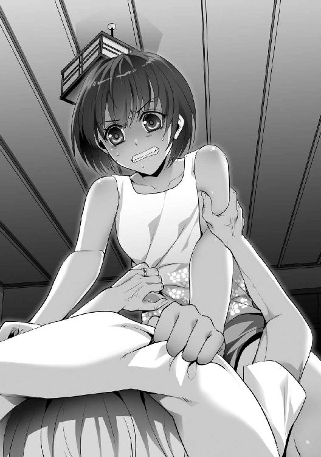
決死の抵抗は数十秒で終わった。きっと祖母はわけもわからないうちに人生を終えた。
枕を外すと、彼女の姿は眠りの続きをしているようでもあった。
あっけなく、美菜の母でもあり、父でもあった人は息絶えた。すべてであった人が死んだ。殺した。
美菜は尻餅をついて壁に背中をつけ、朝が来るまでうずくまったまま泣き続けた。
自分の大事な人を殺したのに──楽しいことだと感じてしまっていることが恐ろしくてたまらなかった。
窒息させ、命脈を絶つことがこの世の最上の喜びに思えていた。
神経中枢が皮膚の外に出てしまったかのように鋭敏となっていて、それら一本一本がこと微細に快楽を伝達してくるのだ。
心臓が早鐘を打って高鳴り、高揚しているのがわかった。ドッと汗が噴出し、頭の芯が灼熱となって燃え盛っている。
失うことの切り裂かれるような悲しみも──かけがえのない愛の大切さも身が凍りつくほど知っている。
その上で、すべて粉々にして踏みつけてることにためらいはない。
「朝が来れば......私も終わりの時が来るでしょうか」
森林の中──高さ五メートルの幹に腰掛けて両目を閉じた。
試練が来る。自分にも。
ほどなくして、安らかな寝息が響いた。
※ ※
黒いシルエットばかりの風景。薄い黒か濃い黒しか存在しない。
腐った木が斜めに倒れ、半分ほど土の中に埋まっているのが見えた。この辺り一帯の暗褐色の土壌は変質している。微生物が発酵しているのか酸味のような臭いがした。
倒木があちこちに目立ち、落雷によってか中央から大きく裂けたまま屍をさらしている株もある。
内陸の中でも、森林の墓場のような辛気臭い場所だった。
移動しようとすれば靴底が沈み込む、すくいとってみると、カモフラージュする泥としてはそれほど悪くなく思える。
ロープの昇降を繰り返したせいか体力が切れかかっている。
内陸と外周を行き来して二時間が過ぎたところか、夜は深くなり、思ったよりも準備にも手間取っている。
彼女は朝が来るまで手を出してくる気はなさそうだった。何度も闇の中に足を踏み入れたが、気配はない。もとより巧妙に姿を消されたら俺にとってはどうしようもないが。
アイアンウッド製の小さな盾をバンドで腕にくくった。体表を覆う粘着質の泥は生ぬるい空気の中で凝固しつつある。熱帯夜に感謝するのはこれが初めてだ。
完全に乾くのを待ちながら、とりとめのないことをぼんやりと夢想した。
これらすべてを冗談にできないものか──驚いたことに全員が生きていて、笑いながら現れないものか。本気になっている俺の馬鹿さ加減を笑い者にしてくれないものか。
いっそ自棄になって丸太に乗って海原に出るか、惨めに美菜に許しを請うてみるか。
どれもこれも楽しい。今の状況よりもよく思える。
腰を浮かせて弱音をもてあそぶのはやめた。
移動を開始する。目を凝らして歩きやすい獣道を探したが、やはり闇は深く明かりが欲しくなった。夜中での移動はこの島に来てからそれほど多いわけではない。慣れていれば変わったかもしれないが、その前に骨折や打ち身の一つでもしていただろう。
──居場所を教えるような真似になるのだが、火打石を使って小さな松明を燃やした。
内陸は広く、峡谷や峰、絶壁や断崖などの起伏が激しい箇所もある。要が荒れた山岳地帯とそう変わらないということだ。昼間でも本気で隠れんぼをしたら永遠に見つからない気もする。
人の痕跡を探すには背丈と幅で考え、足跡や木枝、落ち葉や土壌の変化などから調べるべきであった。
美菜を辿るのならば、第一に彼女の行動を予測しなければならない。性格やくせなどから行きそうな場所、潜みそうな場所を推測すべきでもある。
わかっていることと言えば、煙男であった彼女の移動方法は単純に猿と同じだということだ。
空間知覚能力が常人とは思えないほど高いことと、身軽さが利点となって木枝を飛んで移動している。痕跡からして、冗談かと思えるほど長距離をジャンプしている。恐るべき身体能力の片鱗は軽い畏怖を抱かせる。
特徴的なことしては鉤爪を使っていることだ。
転落防止の安全弁か、体勢の維持のためか、はたまた攻撃手段か。
日誌ではアラと煙男との争いの現場とされる場所にもその痕跡を残していた。
明確な手がかりを示すのは犯罪心理学における『捕まりたい』という欲求の表れか、彼女のみなぎる自信と傲慢さが裏打ちされているせいか。想像するだけでも幾つか理由があるだろうが、状況を打開できる案とはなりそうにもない。
「......まずいな」
舌打ちを飲みこんだ。数歩ほど林に入りなおしてみたが──斜面となっており、堆積している腐葉土のくぼみに血液の小川が一条ほど流れているのを見つける。
嗅ぎ慣れた死臭。すえた、鉄を腐らせたような生臭さ。
目で先を追うと茶色の塊が横たわっていた。猪の死骸だ。
腹部には裂傷の後が複数あり、間近の地面には尖った細長い木杭がキノコみたいに生えている。
松明を振った。空気中に残光の帯線を描く。赤光のかがり火が周囲を映し出す。
ところかしこに同じような鋭く尖った木杭が何本か生えているのを見つける。質の悪いことに落ち葉と同じ色を使ってその存在をわかりにくくしている。
視線を上向ければ木々の梢も不自然だった。
枝が幾つか斜めに切り取られてこれも尖っている。皮膚に直接当たれば切り裂かれかねないものだ。
夜陰に乗じて強襲とするのは難しくなってきた。走ることすら困難だ。移動も慎重にならねばならない。
空中をおどる者にとって──大地は針の山でも構わないわけか。
刻々と時間だけが過ぎた。
布地を裂いたようなさえずりが聞こえた。ピンクのクチバシが分度器に見える怪鳥が枝から離れ、優雅に翼を広げて空を飛ぶ。
薄暗がりに曙光が差してきている。東の空にそびえている双子の険しい山の稜線が白色を受け入れつつある。
ススキに類似した細長いイネ科の植物が密生している窪地に足を踏み入れた。つけている小花は紅色で茎はひょろりとし、葉は短冊状で鋭い、油断して払えば手を切ってしまいそうだった。
内陸に入って三キロ地点。やや広いこの草原地帯をハチが飛び交い、耳障りな羽音を立てて目の前を横切った。
雨季には川の水が流れていたと思われる横並びにへこんだ溝があった。足元の地面は水分を含んで柔らかく粘性に富んでいる。
常緑林から飛んできたのか部分的に落ち葉がちらほら目につく。森林に向かう扇状の一方は動物に踏み固められたのか雑草も生えておらず黄土色になってはげている。
視界の効きすぎる区域だったが、高木が並ぶ広葉樹林の木立の中にいれば狩ってくれと申し出ているとしか思えず、こんな場所に来てしまった。
「......どうするか」
それほど長い時間が経ったとは思えないのに朝が来てしまった。
夜中に出した結論として、ひとまず追跡するのは諦めたおかげでこちらも戦いの下準備は終えることができたが、この状況下では相手を捕捉した方が有利なのは間違いない。
弓矢をもってして一発で頭ないし急所を打ち抜かれれば俺の命はないだろうし、どこに罠があるのかも未知数だ。彼女の姑息な罠によって浅くではあるが足首が傷ついてしまい、動きたくもない気分だ。
戦況は著しく俺に不利だ──分析する価値もないほどわかりきっている。
「む」
か細い動物の鳴き声が微風の中に紛れ込んでいた。どこか赤ん坊を思わせる発声。
草むらをかき分けると橙色の荒れた毛並みの狐がぐったりとしているのを発見した。
五メートルは離れているが俺の姿を見つけると全身の毛を立たせ、四肢に力を入れなおして逃れようと身をよじった。それも不発に終わって何かに引っかけられたように一定ラインで静止する。
体長は二十センチに満たない。小狐だ。威嚇するように牙をむき出しにしているが、怯えているのか後ろに下がろうと懸命だ、
遠目だが、後ろの足首をトラバサミが噛んでいるのがわかった。ギザギザの歯を持つ口に噛まれるような罠である。
俺を狙うために美菜が仕掛けたのか──それにしては錆びすぎているようにも見えた。
「ガキなら外してやるか......」
幸いにして猪を食ったばかりだったので食料には困っていない。
ふと、奇妙なものが視界に点となって入る。
四角形の鉄板が迷彩を施してありながらも、針金のような細い足に支えられている──不自然な人工物──瞬間的に横っ飛びして伏せようとした。
間に合わなかった。
枯れ木を爆竹で盛大にぶっ飛ばしたような爆裂音とともに視界がぶれた。大気を揺るがし、身を切り裂くような疾風が吹き荒れた。
薄目ながらも無数の黒い影が飛散しているのがわかった。鉄片か何かだったかもしれない。
爆弾──なぜそんなものが──疑りながらも認識して頭部を木盾で守り、中心線を防御した。我ながらとっさにできたことを褒めてやりたい。
爆風の猛威が正面を通過していくのが皮膚感覚でわかった。馬鹿でかいトラックが眼前を激走したかと錯覚するくらいだった。俺が一気に吹っ飛ばないことから一定方向への爆破であることは間違いない。
それでも凄まじい衝撃波のおかげで身体が流され、転倒してしまった。黄土色の砂地に転がり、すぐには立ち上がれずに膝をつく。
ずきりと痛み──俺は避けたつもりだった。少なくとも真正面からは食らっていないと。
痛みの箇所を目で追って間違いだと思い知った。
持ちあげた左手の、薬指から小指にかけて欠損していた。
唇が震えた。
「......嘘だろ」
骨が、千切れた筋繊維がのぞけていた。
出血。激痛。めまい。焦燥。間断なく襲ってくる。
神経網に電撃が走っている。身体から発せられた痛覚が俺をばらばらにしようとしていた。刺激のあまり、うずくまりながら露出している骨を見つめる。
心理的ショックでまともに立っていられなかった。思考が停止してしまっている。
──お兄ちゃんは大丈夫だよ。
冷却されたキリの声が頭の中で響いた。氷の表面を滑っているような透明さがあった。
──だって、もう、自分すらも見捨ててしまったんでしょう？
※ ※
終わりかな？
プラスチックの安物玩具かと見紛うコントローラーをズボンの後ろポケットにしまいこみ、美菜はヒロトの様子を見つめた。
美菜は地上三メートルほどの高さにおり、松の太い幹に腰掛け、片足をだらりと垂らして眺めていたが、ヒロトが一分ほど動かなかったので接近することにした。
歩きながら、吊り革のホルスターからオートマチックを抜く。撃鉄を固定している安全装置を外した。
クレイモア爆雷は無数の鋼鉄の球を六十度の角度で弾けさせる爆弾だ。内蔵されている粘土状の爆発物に着火することにより起動する。直撃すれば十人のショットガンを持った相手に一気に撃ち殺されるようなものであり、身体は穴だらけになりズタズタにされて肉片は数千メートル先まで直送される。
必殺領域を避け、側面からかすらせるだけのつもりだったが──いや、爆風で鼓膜が破れている可能性もある。強い動揺が彼を襲っているに違いない。
思えば、父も似たような手で死んだ。父の場合は負傷兵に近づいた結果だった。かろうじて一撃目は避けることができたが、敵襲から逃れようと遮蔽物の岩石に身を隠し、その下に置かれたクレイモアで吹っ飛んだ。
罠とは人の心理の裏に設置される。
もしも──ヒロトが近くの足場のわからない草むらに隠れるようなら、今は原型もわからないほど粉微塵となった小狐と同じく足首はだめになっていただろう。そういう風に設置しておいた。殺さないギリギリのラインでしばらくもてあそぼうと昨日の夜のうちに結論は出している。
だが、うずくまっているのは減点だ。
ベストなのは来た道を全力で引き返すか、安全確保した位置に移動することだ。野戦であるのならば信頼できない区域でうかつに行動してはならないのは鉄則だ
「......収穫の時ですかね」
死を魅力的に彩るために美しく成長はして欲しいし、自分を楽しませて欲しい。
が、無闇やたらに苦しませるのは本意ではない。
ここまでならば、ここまででよし。
美菜はわざと派手に足音を立てて近づいた。ヒロトの反応はない。落胆が表に出そうになった。
顔が見えないがもしも痛みであえぎ、泣いているようなら脳天を撃って終わらせようと考えていた。
──しかし。
様子がおかしかった。美菜は漠然とした違和感を持った。そうだ。足の立ち位置だ。カカトが浮いていてつま先に体重が乗っている。左手が隠れていて右半身に体幹が寄っている。
それはすなわち──ゆらりと気炎が上昇しているのがわかった。
ギョロっと目玉だけが動き、こっちを向いた。
「う」
これは待ち伏せ──攻撃移行態勢だ。
理解して腰を引いた。ワンテンポ遅かった。低い姿勢のまま駆け出してくる。
ヒロトは直進してこなかった。こちらの武器を察してか下生えを踏み破りながら弧を描くように距離を詰めてくる。
美菜は脇をしめ、オートマチックを肩と手先が重なった水平の位置に構え、引き金を引いた。
弾丸が発射される。遊筒がスライドして空薬莢が飛ぶ。黄と赤が混じった閃光が銃口からほとばしる。
亜音速で発射された弾丸はヒロトの右肩に命中した。
美菜の思考の中ではそれでのけ反るはずだったが、ヒロトは自分の身体から血風が噴出してもまるで意に介さなかった。
怯まない。止まらない。足取りに乱れなし。
銃の破壊力が弱すぎる──貫通してしまっただけか。
十メートルあった距離が二メートルまで近づいている。
ヒロトの開いた手が伸びている。その手の平はおぞましい何かに見えた。暗い穴が口を開けているようでもあった。
血走った目は完全にイッている。瞳孔が開き静止した目。食いしばった歯。
自分のみ、極狭の集中。
そうですか──なるほど。本当にあなたには明日なんてないんですね。
つかまれば首の骨を折られて死ぬ。
美菜は事実として悟った。かといって接近を阻める確証がない。
このままオートマチックで仕留めきれる自信がなかった。よって、伸ばされた手は上体逸らしのスウェーでかわした。
目前で豪腕が空を切る。
反撃のためにつま先でヒロトの顎を蹴り飛ばした。跳ね飛んだが一時凌ぎにしかならない。
美菜の後頭部に両手を持ってきてそのまま地面に倒れこんだ。両手をつき、それを支軸としての背面飛び。ひねりながら側転に変えて距離を取った。
「よっと......あ」
ヒロトは持ち直していた。拾ったのか、片手に持っているオートマチックを物珍しそうに見つめている。
美菜はうっかりその存在を忘れたことに気づいた。ホルスターは空になっている。実物が見えているというのに腰に手をあててしまった。落としてしまったようだった。
「やば」
跳ね馬のように砂煙を巻きあげ、大地を蹴って美菜は不規則な動きを取りつつ、木立の方角を目指した。
当然のように近辺で銃声が奏でられた。弾丸は遠慮なく撃ち続けられている。
相手は一切の容赦がない。弾数も気にしていない。
──そのまま止まって撃っててくださいね。
狂い独楽の様相を見せながらも逆立ちしつつ、筋肉のバネを全力で酷使した。
一メートルほど横にある大輪のハイビスカスに穴が空くのをちらりと見た。大きな花弁は一気に消し飛んだ。
動くものを片手撃ちの素人があてられるわけがない。このまま弾数を減らすべきだと判断した。
頬をかすめるまでは。
美菜は一息で大きく跳躍し、密生した背高の草を遮蔽物にし、森林の縁を沿って疾走した。
最初に腰掛けていた松の木をほぼ垂直に駆け上って鉤爪を拾い、一秒もかからずに装着し、横の木に向かってジャンプした。
後ろを確認。ヒロトも追ってきている。足幅に乱れなく機械的なほどためらいのない足取りだった。動きにメリハリがあって痛覚や恐怖がなくなっているかのようだ。
普通は鈍くなるものだが──脳内麻薬が過剰に分泌されているのだろうか。
いや、顔はまったくの素面だ。戦闘の昂揚もなければ暴力への陶酔もなし。やや怒ってはいるが平静は保っていて、落ち着いている。
網の目のように広がっている樹枝が美菜の体重でたわんだ。それも一時的なことで重さを感じさせない動きで滑走していく。
縫うように木々と木々、枝と枝の狭間の空間を飛び交う。
機敏な豹をイメージさせる動きだった。実際に美菜は猫科の生き物のようなしなやかな筋力を持っていた。衣服に隠れた小柄な体躯からは想像できないほどの強靭な筋肉はしっかりと意思を反映して収縮する。
時折、枝に引っかかり、樹肌を引き裂く鉤爪は彼女にとって手を傷めないための安全装置だった。
同時に止まるためのブレーキでもある。俊敏な動きは自慢だが、緩急をつけなければコントロールできているとはいえない。
行き来する場所にはくっきりと傷跡が残り、樹木が悲鳴をあげられるならとっくにあげていただろう。
「......ちょっと殺られるかと思いました」
折れ曲がりもしないほどの太さの幹に着地し、美菜は落ち着きを取り戻すと、心臓の音を意識した。
高鳴りは危険に身を置いたことを証明している。
──見くびっていた。だが、惚れなおした。素晴らしく活きがいい。
嬉しそうに唇をなぞる。
「......楽しい」
ひゅん、と風切り音がした。
飛んできた短槍が足元の樹木に突き刺さった。ぶらぶらと底部が振動している。
美菜から約十五メートルほど先、斜め下の地面を見ると次の投擲をするために振りかぶっているヒロトの姿があった。
部族民のように泥化粧した体表は凄惨な裂傷だらけになり、泥や草葉がこびりついて汚れていても目だけは爛々と輝いている。
美菜は自分でも口角が歪むのがわかった。口の端から笑い声がもれてきた。
※ ※
標的は木の枝のしなりを吸収して高く飛んでいる。
トランポリンと同じ原理で三メートルを越すジャンプ力を発揮している。異端の技巧だ。日々の訓練を欠かさなかったのだろう。
それ自体が一つの細網繊維のような高木帯に姿をくらませば追跡が困難になる。
酸素がなくなり、肺が軋んでいる。手足の神経感覚が鈍くなっている。思考だけははっきりと鮮明だった。
激痛がそよ風のように全身を駆け巡っている。形容しがたく重苦しい感情が加速している。重なった歯が鳴り響いている。
出血量は看過できない。止血するべきだった。
幸いにして簡単なやり方を思いつく。これからやることのついでとしてできる。
目を凝らして前方を窺う。しんとしていて、気配が消えている。最初からどこにもいなかったかのように消えた。
標的は対峙せずにこっちが疲弊するのを待っている。警戒心を心に植えつけてしまった。油断しているうちにケリをつけられなかったのは失敗だった。
俺もまた距離を取ることにする。
計画していた作戦を開始することにする。
この世界が地獄ならば──地獄にふさわしい形容にすべきだ。
※ ※
お互いに接触のない空白の時間が流れる。
美菜は腰を曲げ、厚く重なって色鮮やかな落ち葉をそっとかき分けた。
葉の裏側に血がついていることを確認し、偽装の程度を知る。ヒロトは姿勢を低くして、体重を分散させながら後ろ歩きで移動している。必死に足跡を隠そうとしているのがわかる。
幾つかダミーとなっている道筋はあるが、茂みの折れ具合をかんがみれば途中で引き返しているのがわかった。近場にいることは間違いはない。
ほどなくして焚き火の跡を発見する。焦げついた炭の臭いが漂っている。森の清涼な空気は淀んで汚染されている。
炎で傷口を焼き、藪を強引に乗り越えた際にめり込んでしまった木片を指先で引き抜いたのだと予想される。食い込んだだろうクレイモアの鉄片も見受けられた。
端々に血の塊が凝固してこびりついてる。激痛を伴っただろうが、やるべきことはしっかりやっているようだ。
「不始末ですね」
未だ燃え盛っている焚き木。
周囲の灌木にちらほらと燃え移り、生木がぱちぱちと音を立て、白煙を立ち昇らせている。
傷口を焼くのはいいが、そのままにして放置していくのは頂けない。山火事になったらどうするのか。
美菜は自分の移動方法がどれだけ樹木にダメージを与えているのか棚にあげ、そんなことを考えながらくすくすと笑った。危なっかしい子供の不始末を笑うように。
背負ったピストルクロスボウが肩を重くしている。胸の中央にあるサスペンダーをガシッと握り締め、不快でない位置を調整する。
湿気と高い気温のせいで全身にびっちりと汗をかいている。胸を開いてパタパタと風を送り込んだ。四十度を越える世界での殺し合いは慣れているが、暑いものは暑い。いずれゆっくりとリゾートをやり直すのも悪くない。
しかし──どうにも、おかしい。妙だ。
違和感。耳を研ぎ澄ますと、鳥のざわめきに混じって発破音がしている。
そうだ。ここではない遠くから木が燃える爆音がしている──本当に、火事なのか──樹海の隙間を探し、歩きながら見晴らしの利く場所に移動する。
上空に幾つもの白煙がゆらゆらと昇っている。
「救難信号？」
馬鹿な。今更？ まさか。
なんてことだ。こんなに濃密な時間を邪魔されるなんて、そんなことは絶対に許されない──せっかくの二人だけの世界なのに。
美菜は内心、激昂しながら手近にあった柳のように垂れた蔓草を握り、肩の力を使って素早く登り、再び中空圏へと身を躍らせる。
鳥のように飛び交いながら比較的、高い木の上へと到達して景色を一望した。
森林を飲みこもうとする火勢が強くなっているのがわかる。幹が火であぶられ、乾燥した樹皮に燃え移り、炎の化身へと姿を変えていく。
「ごほっ......」
煙が鼻先をかすめた。空咳しながらポイントを確認する。
五つ、六つ、七つ、多すぎる──攻撃されずにすべてを消すのは難しい。自然鎮火を待つ他なし。
そうか。これは前もって準備されていたものだ。動物の脂、松脂、干し草──夜のうちに配置したのか。
「......化学薬品の刺激臭」
嗅覚が拾ったほのかな刺激に顔をしかめた。
そういえば硫酸か何か持っていたような──着火剤として使ったのだろうか──浸酸マッチとはずいぶんと古臭い。
起死回生の一手ではある。こうも火をかけられては空を駆けるのは難しくなってくる。
足場を燃やすか──なるほど。工夫してくるものだ。
大規模な自然破壊だが、彼にもためらいがないことを示している。熱帯雨林で起きた火勢はそうたやすくコントロールできるものではないはずだ。
誤って焼け死ぬことも恐れていないのかもしれない。
──煙男が噴煙で仕留められそうとは、なんとも皮肉が利いている。
美菜は僅かに身体を揺すって微苦笑した。
接近戦ならば彼にも勝機はあるかもしれない。体格としての不利だ。向かい合っての力比べなら対抗しようがない。
知恵をしぼり、肉体を駆使し、感情のすべてを込めて相対してくれるのはこの上なく嬉しい。
理解してくれるだろうか。どうか、理解してもらいたい。
狂気と倒錯に満ちている考えだと知っているのだが──こんなに真剣でいて、一途に相手を想うことなどないのだと。
眼下に人影が入った。
立ち並ぶ木々を遮蔽物にしながらジグザグに進んでいるヒロト。手にはナイフと斧。体中はひっかき傷だらけだ。男前があがっている。
拳銃は撃ち尽くしたようだ。
「ふふ......」
ピストルクロスボウの弦を引き絞った。強化プラスチック製にして重量約三十キロのこれは首筋や動脈を狙えば簡単に人を殺傷できる。
弦もカーボンファイバー繊維に入れ替えたし、矢もグラスファイバー製の高強度にしておいて殺傷力も向上させた。
原型は法規制が間に合っていない日本でも買えたので、獣のハンティング用に購入したのだが反動と発射音のなさはそれなりに評価できる。
自動小銃に比べればガラクタにすぎないが、所持していても何も言われないのがいい。もっとも、言いわけは上手にしなければならないが。
狙いを定めようと照門を覗きこんだが──姿が消えていた。
「あ」
鳥のごとく飛翔しているヒロト──数メートル先の木を蹴り飛ばし、空中で上段に斧を振りあげている。
しくじった──対応の判断もまた速い。
射るのではなく、構えていたピストルクロスボウを投げつけた。
ヒロトは顔をしかめた。身体に触れそうなところで、斧が振り下ろされ、なぎ払われる。
体勢が崩れたところで鉤爪を横薙ぎに振るった。
大部分は木盾でガードされたが、少しだけ肋骨に近いところを裂いた。血飛沫が舞い上がって血煙が発生。
バランスを失ったヒロトは落下し、落ち葉に転げ落ちた。勢いを殺さず、そのまま前転して離れていく。
不意に肌に太陽光以外の熱波を感じた。枝の弾ける爆音が刻々と近づいてきている。
勢いを増す火勢が周囲を包み込もうとしていることに気づく。炎を背にしながら来たようだった。
ヒロトは前転しながらもくるりと反転し、体勢を立て直すと中腰になったまま睨んでくる。間隙を突かれるのを恐れて距離を取ったようだ。
迷いのない炎に負けないほどの力強い瞳。柔軟で強靭な肉体と相まった意志力はため息が出るほど美しく見える。
「ヒロちゃん。凄く素敵ですよ」
「命乞いであったにせよ、もう俺は止まれない」
美菜はあえて地面に降りた。
空中で戦うことは有利ではあったが、これだけの努力をしたのなら報いてあげてもいい、という妙な情け心に突き動かされたからだった。
接近戦を望むのならそれも楽しみとすべきだ。
この山腹は勾配が激しく全体としては斜面になっており、植物として足元の障害になりそうなのはちらほらと短い茎のシダやキクくらい。木苺が生えているが実はつけておらず、蔓草は棘だらけだ。
やや湾曲部。斜面を降りた先には谷があってそう深くはない。
崖崩れの名残りなのか尖った岩石が数えきれないくらい地面から露出していて、その亀裂から岩生植物の花がちんまりと紫色の花を咲かせていた。
お互いに示し合わせたように位置についた。向かい合っての沈黙。視線が絡まる。
ヒロトは緩慢な動作でナイフを顔の近くに持ってきて、こちらに向けて刃筋を立て、構えを取った。美菜の記憶では彼は素人だったが、どういうわけか堂に入っていた。左手を突き出しているがやや前傾で、捨て身になっているのがわかる。
合図を待っているのか──隙を探しているのか。
肉体はどこに傷口があるかわからないほど傷つき、青白い唇は生気に欠けている。
「......つらいですか？」
裏切られ、苦しめられ、戦いをしいられることの理不尽さ。
想像を絶するほどの苦悩があり、尋常じゃないほど葛藤があったはずだ。
動きを止めているので好奇心から問うたが、疑問は空中に浮いたまま解消されることはなく、驚いたことに武器であるナイフが投げ出された。
美菜は淀みない動作で一歩だけ横に移動してかわした。
ヒロトも足を大きく開いて突っ込んできた。目を逸らすための囮に使ったようだがこれは悪手だ。
足首が反転し、後ろ回し蹴りが抜刀されたかのように高速で飛んでくる。死神の鎌を思わせるほど鋭かった。
美菜は傍にあった木に駆け登り、華麗に宙返りしてそれをすんでのところで回避した。
そのままヒロトの頭上を飛び越え、振り返りざま背中を鉤爪で削り取る。
ヒロトがのけ反り、皮膚を破って鮮血が流れる。トドメとばかりにそのまま軌道を変えて下から上へかけて鉤爪をひねりあげた。
「──むっ」
美菜はうめいた。
思いがけずのカウンター、半円を描くような動きで避けながらも肉薄してくる。
防御など一切考えていない全力の鉄拳が肩口から打ち下ろされる。
美菜は掌底で難なくそれを弾き飛ばし、懐に飛び込んで腹部に肘打ちを入れた。
ヒロトの足裏が地を削って滑るように弾き出され、膝がつきそうなほどよろける。
あえなく空振りしても今度は距離を取ろうとせず、顔をあげたまま前進しようと両肩を落とした。
力を込めて踏ん張り、また対面に立とうとする。
次の手は──つま先を枯れ葉の層に突っ込み、持ちあげての目くらまし。
美菜は軽やかな身のこなしで後ろ斜めに飛ぶ。
ヒロトが追ってきてところで、頭を下げ、その拳を樹木にぶち当てさせた。
衝撃を受けてる隙に顎先にもぐりこみ、アッパーカットを入れた。死に体となった胴体への連撃の拳も面白いようにヒットする。
動くサンドバッグですね──やはり、力量の差がありすぎる。
必死なのはいいが、技術の差を埋められるものではない。
美菜は両手が迫ってきたので足早に離れた。タフネスは認める。打たれながらも手を出そうとしてくるのは素晴らしい。
わかっているのかいないのか、ヒロトは口の中で転がっていただろう砕けた歯を吐き捨て、またも突進してきた。
今度はスライディングだった。それは一見、無謀に見えたがくるぶしにぶち当たる寸前でバネ仕掛けの人形のごとく飛び上がり、身をよじってひるがえり、後ろ回し蹴りを放ってくる。
美菜は工夫に感心しながらも足の下を通ってかわした。足を持ちあげようとしたが、膝関節が曲がってカカトが内側に戻ってきた。背中を打たれる。破れかぶれの一撃か、狙いを定めなかったおかげでダメージは少ない。それでも軸足の強さには驚嘆した。
うめきながらつんのめったが、向き直るのは美菜の方が早く──振り返りかけたヒロトの頬に鉤爪が迫った。
ヒロトは後ろに身をよじってかわそうとしたが、間に合わず、頬を打たれて首が横に流れた。顔に三条の線ができあがる。それでも目は閉じてはいない。執念を感じさせる気迫があった。
よって美菜は深追いせずに一歩下がった。下手に近づきすぎて組み伏せられれば命がないのは自分の方だとわかっていた。
交差は続く。
致命傷を与えないまま、傷つけ続けた。
美菜は細心の注意を払って即死しないように手加減はしていた。それが結果として苦痛のみを与えることになった。
どれだけこの懸命さが続き、いつ気力が尽き、みっともなく泣き声をあげるか確かめてみたかったこともある。或いは「もう殺してくれ」と懇願するのでもいい。
そんな人間としての弱さも愛でてみたくもなっている。そんな一面も見たくもなっている。
この刹那の時間はどれだけ尊く──かけがえのないものであることも知っている。
雄々しく、餓狼のように食らいついてくるヒロトの決死の姿に感動すらも覚えていた。
血まみれになりながらも、果敢に立ち向かう姿は涙を誘い、終わりがあると知りながらもずっと見ていたくもなる。
どうしようもなく琴線に触れてしまい、トドメを刺せない。
一撃一撃入れる度にヒロトの死は近づいている。みなぎっていた生命は燃え尽きようとしている。
こんなにも鋼の精神と肉体を持っていた恋人は朽ち果てる。
この手によって。
「ふふっ」
美菜はにやけながらも、暴風のような上段蹴りをいなした。腰を足首に乗せて視界から外す。
身体が開いたところで足払いを決め、転倒させた。
平衡を失ったヒロトは左手をつくと、ありったけの力を振り絞って地を蹴り、バックジャンプした。
「この時間が永遠に続けばいいとさえ思ってしまいます」
沈黙。当然だ。
大量に血を失い、ヒロトの息はあがって絶え絶えだ。肩は下がり、膝は笑い、動きに精彩がなくなってきている。
未だに蹴りは重く、身体の芯に響くようなものであったが確実にキレが悪くなってきていた。
周りを囲む景色も変わりつつあった。ぱちぱちと音が鳴り、強風に乗って空中に火の粉が漂っている。
一粒一粒がゆらゆらと飛び回る蛍のように不規則な動きで漂い──ぼんやりとした燐光を放ち、幻想の中のような光景だった。
まばらに生えている樹木の隙間から炎が赤い舌を出し、口蓋へと誘っていく。多くの落ち葉は燃え、大地は火の粉をふく赤い絨毯で敷きつめられている。
為すすべもなく樹海は溶かされ、舐め尽される。
青々とした新緑を焦がされていた細長い若木がみしみしと軋む音を立てて倒れ、やがて轟音を奏でて横たわる。
大きな振動が二人の足元を揺らしたが、どちらも気にしなかった。
赤く照らされたヒロトは初めて構えを解いた。両手が力なく下がり、攻撃態勢が終わった。
天頂には黒煙がひしめいている。
太陽が雲に隠れ、元々薄暗かった周囲が更に暗黒に近くなっている。
目の前の勇敢な男は左手の指をすべて失い、片耳はなくなり、肉体のどこも肉が削れていて──常人なら目を背けたくなるほど無残な姿になっていたが、不思議と勝ち誇ったような不敵な微笑を貼りつけ、美菜を見据えていた。
「どうやら、俺は、ここまでのようだ......な」
「ええ。お別れの時ですね。遺言とかはございますか？」
「気にするな。思い残すことなどない。勝てない可能性も考慮していた。そして、それが大きな割合だということも」
「私を楽しませてくれたのですか？」
「まさか。君は俺の死の瞬間が見たいんだろう。だから、見せないことにしようと思ってな」
「......そんなことを私が許すと思いますか？ 私がどれだけあなたを愛してるかわかってるのですか？」
「はは、まあ......俺が生まれた時には選択の余地はなかった。誰しも、死ぬ時くらいは自由であるべきだ」
ヒロトは斜面を滑り落ちるように駆け出した──谷に向かって。
美菜は血相を変えた。追おうと樹木を駆け登ろうとしたが、火の手は燃えやすい小枝に移ってしまっている。中空移動は難しい。いや、すぐに追いかけるべきだった。それなのについつい、くせが出てしまった。
一瞬の逡巡。足元にも火の手が伸びていることも災いした。熱波が判断力を鈍らせてしまったか。
追跡のための時間が致命的に過ぎてしまった。ヒロトは谷に飛び込んだように見えた。美菜はぶるりっと背筋を震わせてようやく斜面を駆けることにした。
火が巻き起こした濃霧によって視界が利かなくなっている。下品なほど舌打ちした。闇に染まっている谷に下りるのは危険だ。ざっと見て数十メートルはある。
ヒロトが落下したにせよ、死んでいる。
「いや」
明瞭な血の跡がある。谷の入り口を前にしてカーブしている。谷に落ちたと見せかけて移動しているのか。
まだ終わってはいない──どこまでもしぶとく、諦めない精神性を感じさせる。これは罠だ。油断させるための狂言だったのだ。
しかし、時間の問題ではある。
「まだ......死んじゃ嫌ですよ」
できるなら、抱きしめながら逝かせたい。
肌身に触れてこそ、その血潮の熱さを確かめてこそ、彼の生と死の狭間がより一層と綺麗に感じられる。
※ ※
喉が異常なほど渇いている。キーンッと耳鳴りが脳みそで反響し続けている。ずきずきと偏頭痛がしている。
出血によるショック──嘔吐感と虚脱感、神経の信号をすべて遮断できたらどんなにいいか。
身体の節々が壊れ、油の差していない機械のように動かなくなってきている。
動物たちは逃げ切ったのか、四方が背丈ほどの藪で覆われた狭い空地は音一つ発せられることなく静寂に満ちていた。
ぽっかりと開いて薄汚れた中空、すすの雲がわきあがって濃いオレンジが大気を浸食している。
群れを形作った鳥が集団で逃げるように飛んでいく姿が見えた。
くらりとして視界が白くぼやけた。足元がおぼつかない。意識が混濁している。平衡感覚がなくなりつつある。
俺に残された時間は少ない。
この期に及んで──殺人など無意味かもしれなかった。いや、人生において意味のあることができた試しなどなかった。
愚か者め──罵る声がどこからか聞こえる。呪わしい幻聴。もう既にキリのものではなかった。俺は自分に向けて呪詛をぶつけていた。キリなんて最初から俺が作った幻想だ。死人は死人だ。誰に話しかけることなどない。俺は妹の声が聞きたかっただけだ。
ああ、どうしようもなかったんだ。俺は生まれついてから人でなしだった。
「......か」
喉が上手に動かず、声が出なかった。
喉道が煙を吸い込んでやられたのかもしれない。美菜を巻くために炎の海を横断したせいか。髪の毛が焼け落ちて側頭部を中心に頭皮がぼろぼろと剥がれている。血管が肉腫のように浮き出たわき腹は炭化して人間のものとは思えないほど黒く変色している。
皮膚感覚が麻痺している。急激に体温が低下している気もする。張り巡らされていたはずの痛覚神経が焼き切れてしまったかもしれない。
どうだっていい。目的を遂げるまで持ちこたえてさえくれれば。
感覚を思い出すために指先を動かし、回収したジャックナイフを握り締めた。唐宮のナイフを使うのもこれで最後になるだろう。
すべてがうまく行くように祈った。祈らずにはいられなかった。
仮に神がいるとしても、助けてはくれないかもしれない。
俺は最後まで無慈悲な男だった。心を入れ替えなかった。自分勝手だった。
何も変わらなかった──何も変えられなかった。
紛れもなく、これが俺にふさわしい末路なのだろう。
怒りも悲しみも虚空の彼方へと消えた。破滅に向かっている。死と隣り合わせで歩いている。
俺の望みは一つだけだ。愛しい彼女を俺が堕ちる地獄へ連れていく。
それだけだ。唯一の願いだ。ひどく醜い願いごとだ。
もう誰にも、赦されなくてもいい。
※ ※
美菜がヒロトらしきものを見つけたのは幸いにして夜の帳が落ちる前だった。
迷彩代わりとなる枝葉にうまく使い、目を凝らしながら足音を殺して歩く。腰の高さほどの低木がぼうぼうに生えて周辺につまっていて、くねって狭い長い道しかなかった。少し離れたところには高木が生えていて、茂った枝葉が絡み合って空に蓋をしていて薄暗い。
上昇した気流のせいかどす黒い雲が立ち込めている。
天候は不機嫌だ。今にも雨が降って来そうだった。
太陽が隠れているせいでかび臭い湿った空気が漂い始めている。美菜の頬を一滴、小雨がつたって顎先にぽとりと流れた。
天空から落ちてくる粒子は忙しない。十分も経たないうちに熱帯特有のバケツ雨がこの島で燃え盛る火事を鎮火へと導くだろう
草むらを睨み、前方の様子を窺う。
巨大化したカリフラワーのような丸い形状の樹木が目についた。盛り上がった根の下で人影が仰向けに倒れている。
どういうわけか上半身はどっさりと落ち葉で埋め尽くされ──腰から下、紺色のジーンズと片方の裸足が露出している。
目に見えて、不審な姿だ。
死んでいるのか、力尽きているのか、身動きはない。
「......ふむ？」
木陰に身を潜めつつ、美菜は琥珀色の瞳を樹木の上方に向けた。
三本の竹槍がまとめられて吊るされている。くだらないと思ってしまうほど明確な罠だが、高さからいって殺傷力も低ければ範囲も狭すぎる。ダミーと考えるべきだ。
肝心なのは倒れている人間だ。
ヒロトが倒れているのならば一刻も早く踏み出すべきだが──ジーンズは彼の物だが、片方見えている足首は彼のものではない。
綺麗すぎる。血痕を水で洗い流せないこともないが、まるっきり傷ついていないのもおかしい。あれだけ遠慮なく移動していたのなら仕掛けた罠を踏んでいる可能性が高い。
更に記憶を掘り起こした。寝所で交わった時に見たヒロトの足裏は血豆が潰れ、皮がめくれた労働者のものだった。苦境を口に出さず、ひたすら耐えることが魅力の一つでもあった。
あの足首はヒロトのものではない。
ジーンズを観察しても肌にぴっちりくっついているせいか、余分な物は入っていないようにも見える。
別人か──唐宮丈の死体？
遠くから石でも投げてみるべきか。武器の多くは火事によって失ってしまった。要所に配置したのが裏目に出た。あるのはサバイバルナイフと鉤爪のみ。
「......時間がないかな」
ここで待っていてもいい。
だが、いずれヒロトは出血多量で死んでしまう。自分の見ていないところで死んでしまうかもしれない。
それは許せない。彼の死のために長い時間をかけた。愛情をたっぷり込めて殺してやるべきだ。
彼の死を間近で見ることが──この歪んだ偏愛が報われる瞬間ではないか。恍惚のひと時を見逃すなど愚の骨頂。
これがただの時間稼ぎである可能性も高い。しかし、やはり近寄るべきだ。この手で息の根を止めるべきだ。焦がれる感情が赤熱している。
そうして、彼のすべてが手に入る。
最期の一瞬、穢れなき魂と心に触れることができる。
と。
美菜は足を止めた。藪の葉の中に色の違いを見つけた。全身に緑葉をくっつけ、オートマチックを握り締めて枝葉の中に身を置いている人間の後姿。見えにくいが泥のついた背中と足腰の一部が確認できる。
あら、かわいい。
声は漏らさなかったが、少し笑ってしまった。なるほど、撃ち尽くしたと見せかけて残しておいたのか。
やろうとしても、なかなかできることではない。
素直に賞賛できる。素晴らしい胆力だ。
美菜は鉤爪を固定していた止め具を外す。代わりに大振りのサバイバルナイフを引き抜いて握った。
しゃらん、と刃擦れの音が鳴って銀光が輝く。
手に馴染んだこれは死の手応えを余すことなく伝えてくれる。
いいだろう。捨て身になってくれたお礼をしよう。
防刃防弾ベストを着ている。反応速度も自信がある。近接戦闘において絶対に負けるはずがない。足をゆっくりと草地に向ける。
動脈からの注ぎ込まれる血液の奔流、期待が心臓を躍らせる。口の端が裂けたかと思うほど、にやけた笑みが自然と浮かんでしまう。
「......ヒロちゃん、生きてますか？」
倒れた人間まで残り五十センチ──風を裂く音──藪に隠れていた竹がしなり、目にもとまらぬ速さですくいあげるように襲ってきた。
美菜は半ば予測していたので、難なく上体を伏せてかわした。
──本命の後ろからの気配。ヒロトが姿を現したようだった。
腰が回転した。空中に淀みない銀線が流れる。必中のサバイバルナイフは確実に迫りくる人影を捉えた。
美菜の望み通りの肉を穿つ感触が確かに訪れた。後ろから襲ってきた人間にとって致命傷となる一撃を与えた。
だが。
「え？」
美菜が突き立てたのは人間であることは間違いなかった。
腐りかけて黒くなった肉だった。泥まみれの金髪。美麗であった顔が崩れてクリーム色の小型昆虫がうぞうぞと這っている。胴体を紐でくくられて引き寄せられていたようだった。
こっちが唐宮さん？
驚嘆した一瞬──後ろから誰かが立ち上がった。
倒れていた人間は落ち葉を身にまとって跳ねるように体の向きを変え、片手にナイフを握って肘を向けていた。
その先の手首は返され、直線となって疾駆した。
脊髄反射によって美菜は避けようとした。足元に紐が絡まらなければすんなりよけれたかもしれなかった。
地面に潜んでいた猪の腸で作った縄が片足を引っかけるために交差していた。加えられた締めつけによってバランスが崩れてしまった。
私の目をくらますために片方の足首を落としたのですね──ヒロトの黒瞳にはただならぬ覚悟があった──これが最後にして必殺の一撃になることを知っていた。
防ぐのも──間に合わない。
このままでは、ジャックナイフは慢心した自分の首筋を裂くだろう。
美菜はほぼ無意識に口を動かした。
彼にとって、自分にとって、最後の試練になるだろう言葉を紡ぎ出す。
「お兄ちゃん......助けて」
※ ※
絶対に──止めないと誓った手が──止まってしまった。
自然と、ゆっくりと、俺の両手がだらりと下がった。
心が粉々に砕けてしまっている。口を動かすこともできず、硬直することしかできない。
俺は彼女を見つめたまま、馬鹿みたいに口を半開きにして、妹の面影を幻視してしまっている。
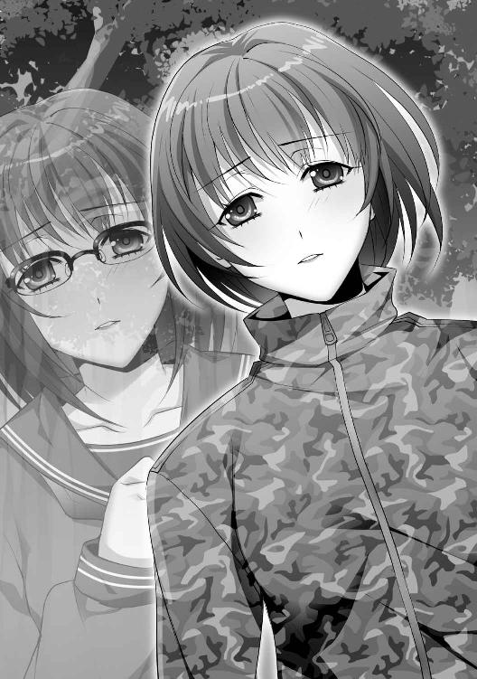
ああ──どうして、こんな、今更、あんまりじゃないか。
この決定的な隙は見逃されず──彼女の手に持つサバイバルナイフが胸に吸い込まれるように滑り込んできた。肋骨の隙間を通って内臓を食い破った。形を失っただろう肺から血液が急速にせりあがってきた。
すべてが、他人事のように見えた。
「あなたが......私だけを本当に見ていれば、私を連れていけたでしょう」
両膝ががくんと落ちた。
力が入らず、そのまま真正面の美菜に寄りかかった。
視界の端に黒いもやが入ってきた。まぶたが重くなってくる。俺の意識が拡散していこうとしている。
手足は棒になってしまった。呼吸はできなくなっていた。
背中に腕が回された。きつく、強く、激しく、抱きしめられていた。ほのかな体温に包まれていく。
すぐ顔の横にいる美菜の揺れる瞳が見えた。涙ぐんでいた。哀切に満ちていた。罪の意識を初めて感じているようにも見えた。
俺は何も言うことができなかった。彼女の目をずっと見ることしかできなかった。
美菜が遠ざかっていくように感じて手を伸ばそうとした。肩が僅かに動いただけで終わった。
「ヒロちゃん」
名を呼ぶと、美菜は一息に俺の胸から大振りのサバイバルナイフを引き抜いた。
どこにあったかわからないような量の血液が溢れ出した。身体の一部がゆるゆると抜け落ちていくような感覚があった。俺を構成していたすべてがこぼれ落ちていく不思議な心地だった。
頭の中が白く染まっていく。現れた死の色が視界が塗り潰して色を失わせていく。
彼女にどうしても伝えねばならないことがあったはずだった。もう口が動かないことが無性に悲しかった。
だからせめて、最期に笑ってやることにした。
「さようなら」
声をあげて笑った。腹の底から笑い続けた。そうできたかどうかはわからなかった。そんなことは重要じゃなかった。
一陣の突風がふいた。心地良い風が頭を貫いて消し飛ばした。
もう何も感じなかった。何もわからなくなってしまった。もう何も考えなくていい。
幾条もの光線が枝葉や樹木の隙間から流れ込んでくる。
まぶたの裏側に忍び込んでくる柔らかい光に美菜は目を細め、のそりと上半身を起こした。
淡褐色の腹を持つ熊鷹が毛づくろいをしているのが見えた。実際には足先にネズミを捕らえていて食事中のようだった。黒いクチバシが生きたまま肉をついばみ、しゃっくりをするような動きで飲みこんでいく。
一瞥し、のろのろとした足取りで砂浜へ向かった。
倒れこむように顔面を沈めた。ひんやりとした海水で顔を洗った。両手を浅く広げて伸びをする。
服を脱ぎ捨て、朝の水浴びをする。残り少なくなった石鹸も思い切って使った。
身綺麗にした後──お気に入りの香水を脇の下やうなじに振りかける。
──ヒロトは気づいていただろうか。
自分だけが異常なほど清潔感があり、栄養失調にかかっていないことを。何一つとして恐れていなかったことを。
今となってはもう独りきりだ。彼は冷たい土の中に埋葬した。答えを聞くことはかなわない。
終わってみれば、戦利品を持ち帰ろうとは思わなかった。満身創痍を体現しているヒロトに対して刃を入れるのは尊い何かを傷つけてしまいそうな気がしたからだった。
誰も彼も始末した──狂乱する醜悪な欲望に従った結果だ。
戦利品はいらない。充分に満足した。昨日のことは永久に記憶に残るだろう。
栄光としても、傷跡としても、愛情としても心に刻まれている。
「......いい天気」
手をかざして目元を隠した。燦々と輝く太陽と波穏やかな紺碧の海。雲一つない晴天。澄み切った清浄な空気はからりとしている。
旅立ちに最適の日だ。今日、この島から出るとしよう。ここには思い出がありすぎる。用事もなくなった。
こんなにも美しい景色が目の前にあるというのに、心が曇っているのはどこか物寂しさを感じているからだろう。
街角の喧騒の中に身を投じれば紛れるはずだ。
簡素に身支度を終えた美菜はバックパックを背負い、南東の岩礁地帯に向かった。
岩壁にめり込むように鎮座している斜方形の苔むした巨石を見あげ、その下のくぼみに残った焚き木の跡を横目でちらりと見る。
最初にキスをした場所だった。ふと荒々しい舌の感触が脳裏をよぎった。
振り切るように足早に歩き、岩の群れを越え、海に入る。
足先から膝上へ、身体を海水に浸していく。
興奮が通り過ぎた後は予測のつかない雨漏りのように防ぎきれない喪失が訪れるものだ──これはわかっていたことだ。
後悔と充足感が混ぜこぜになって心の中で灰色の渦が発生している。
色鮮やかで賑わっていたお祭りが終わり、荒れ地となった広場を見ているような心境になってしまう。
左右に身体を振ってごつごつとして尖った岩肌を歩いた。顎のところまでちゃぷちゃぷと波が差し迫ってくる。背中のバックパックが気になったが、荷物は後で取り出して乾かせばいい。
素潜りした時に見たが、この先数百メートルほど泳げばサンゴ礁もあるのを知っている。熱帯魚が海中を優雅に泳ぎ、奇妙な色をしたヒトデや岩盤が見る者を驚かす形をしているのだ。
教えてあげればよかったかな──今はとてもじゃないが、眺めるような気分にもならない。
ほんの三分ほどの移動で、岩と岩の間の裂け目となった洞穴に達する。
天井は低く二メートルくらいか、細長く暗い道筋がそこにある。美菜は壁にかけた松明を手に取り、ジッポーで火を点けた。
ぼぉっと炎の音がして暗闇に染まっていた周囲が赤く照らされる。
壁から生えた岩角が行く者を阻むように突き出ていて、湿度が高く、生ぬるい空気がしっとりと肌にまとわりついてくる。肌にじんわりと汗の玉が浮かぶ。
明かりに驚いたのかコウモリが飛び交った。岩壁にはムカデが這いずっており、卵が腐ったような腐臭も漂っている。不衛生な環境であることは間違いなく、普通なら寄りつきたくない場所だ。
次第に洞窟内は広がっていき──胸まで浸していた水位は膝小僧まで下がり、浅瀬となった。
袖口から裾からポタポタと水滴を垂らしつつ、美菜は壁際の溝に足を置いた。幅二十センチほどしかないのでしっかりと立つには不向きだがないよりましだ。
水域が終わる奥、ひし形の二メートルほどある強化プラスチックの塊が海面に浮かんでいるのが見えた。でこぼこになっている僅かな空地に杭が打ち込まれ、ロープで係留されている二基のモーターが搭載されたプロペラ型高速モーターボート。
幌が被せられ、以前はその中には多くの生活必需品と食料が乗せられていた。それでも時速五十キロは越えるはずだ。
備蓄した食糧もまだ残っているし、燃料タンクのガソリンも確認済みであり、一度モーターも解体して組み立てなおした。電気系統はそれほどだめになっていない。
使用には耐えうる。うまく行けば夕方には空港に辿り着いているだろう。
最初にこれを発見したのが自分ではない誰かだったら──運命の歯車は変わっていただろう。
別の未来がありえたかもしれない。こんな物寂しい結末はなかったかもしれない。
振り返るべきではないが、過去を見つめなおすように美菜は百メートル先にある洞窟の入り口を振り返った。
常闇の中に存在する小さな光明のようにも見える。
「......ヒロちゃんは私を」
殺してくれなかった。どこか恨みがましい。お門違いの八つ当たりにすぎないはずなのに悔しいような寂しいような曖昧な感情。
最後の最後で自分を否定されてしまった。
妹と重ねなければ倒すことができたはずだったのに。純粋に自分を見てくれていれば救いはあったのに。
いや、単純に──その優しさから、自分を手にかけることができなかったのかもしれない。繊細すぎた。だからこそ、良心と悪心にさいなまれていた。偏れない人だった。
終わってみればこの身体には傷一つなく、無傷だ。
こちらだけが、ひたすら打ちのめし、心を傷つけ、生命を奪い去った。
この見苦しい欲望を受け止めてくれたのかもしれない。
美菜はゆっくりと頭を振った。
すべてが終わった。終わってしまったのだ。
彼のことは決して忘れることはなく、心の隅に置いて大切にしまっておく。
時折思い出しては心を躍らせ、心地のいい哀切の海の中をたゆたわせてくれるだろう。
深く息を吐き、美菜は決断した。
係留されているボートに歩み寄り、小汚い幌の端を手に取って開く。
それと同時に。
「......え」
きょとんとした。
視線を下に向ける──気づけばなぜか──胸の中心に鋭利な刃が突き刺さっていた。
思いがけない攻撃を受けた。頭では理解していた。目の前で起こったことが信じられなかったせいで茫然自失としてしまった。
防刃防弾ベストはバックパックの中だった。だってもう敵はいないから。白と灰色の縞模様のコットン生地のシャツが突き破られ、皮膚を裂き、肺腑に到達している。
美菜は眼球だけ下に動かした。
刺さっているのは柳刃包丁だった。竹槍に針金でがんじがらめに固定されていて、その先には亜麻色の髪をはためかせた女が中腰で立っていた。
あちこちに血が固まってこびりついたワンピース。病的なほどの痩身、頬はこけて目の下にはクマができ、あなどっていた弱々しい人。
彼女はわなないている口元を懸命に動かそうとしていた。手先も震えている。明確な恐怖を感じている。
「ヒロトがね......あたしのことを好きだって言ってくれたの」
赤音さん──どうして生きている？
ゴボッと血が喉を通って口先に漏れた。竹槍を外そうとした。うまくいかず空振りした。
動揺のせいか両手がコントロールできていない。力もまるで入らない。虚脱状態に追いやられてしまっている。
ジッと燃える目で見られていた。それはいつの間にか恐怖が薄れて決意に彩られていて、断固たる意志の力が込められていた。もう美菜が抵抗できないのを感じ取ったらしかった。
それでも、彼女の目尻には涙が溜まっていた。
「......ヒロトはアンタがルナを殺した犯人で、あたしたちを殺そうとしてるって知ってたの。だから止めないといけないって言ったの。自分が囮になって、上手に注意を引きつけて逃げるから......お前がトドメを刺してくれって。うまくできたらあたしと結婚してくれるって。たくさん愛しあって、幸せになろうって言ってくれたの。だから、そうしたの」
赤音は勢いよく竹槍を引き抜いた。
びくんと美菜は揺れ動いた。傷口から派手に血飛沫が飛ぶ。ずるずるとボートの縁に座り込んだ。
どこにも力が入らなかった。自分の身体ではないようだった。
腰がすとんと落ち、赤音の凶相をただ見つめた。
「痛かったよ......今でも痛いよ。死んじゃうかと思ったもん。美菜も痛い？ 痛いよね。でも、これがアンタのやったことの報いなんだから仕方ないよね」
早口での口ぶりは良心を誤魔化すためだった。
美菜は自分の肺に血液が溜まっていくのを感じた。喉奥から気泡が上昇している。内部の動脈が切断されてしまっている。肺が破れてしまっている。呼吸困難に陥っている。
もうすぐ──自らの血で溺れ死ぬことになるか、出血多量で死ぬ。
傷口は深すぎて、止血する気にもならない。
酸素が足りず朦朧とする視界、目の前で白煙が立ち昇っているのが見えた。白いもやは集合体を作った。人の形が作られ、見たことのある幻影が見えた。
──見えるはずのない顔がそこにあった。
自分を死に追いやるその死神は優しそうで、それでいて凍てつくような眼差しを送ってきた。
それは見覚えのある人で、愛していて、ほんの少しだけ口の端を歪めていた。
悪魔めいた優しい微笑──心に染み渡って泣きそうになってしまう。
美菜は目で問いかけた。それが真実に突き当たっているとわかっていたが、聞いてみたかった。
──欺いたのですね。
──あなたは無慈悲にも嘘を語ったのですね。
──私のために、この人の愛をためらいもなく踏みつけたのですね。
だが、それでこそ私の──
美菜の思索はそこで終わった。
彼女は目は閉じた。弛緩していく四肢。張り巡らされていた力もすべて消えた。
「ねえ......美菜、早く死んじゃってよ。あたしたちの幸せのためにさ。ヒロトとずっと一緒にいるのはあたしだからさ。ごめんね。でも、赦してくれなくていいよ。だってさ、あたしたちはこれから」
赤音の言葉は中途半端に美菜の耳に入った。ろくに聞こえなかった。ノイズのようだった。
美菜は慣性にしたがってボートと陸地の間に転がり、海面に音を立てて落下した。
背負っていた荷物のせいか、彼女が二度と浮かびあがることはなかった。
※ ※
赤音はずきずきと痛む肩口を押さえた。歯痛のように痛くつらい。
ずっとこの狭い船の中で動かなかったこともあってか、窮屈だった感覚が抜けない。未だ肩も足腰も圧迫されているかのようだ。
くるりと周囲を見回す。
夜目は利いたが洞窟内は薄暗くて気味が悪い。美菜の持っていた松明が壁際で燃え尽きようとしている。もうすぐ真っ暗闇になってしまう。光が乏しい場所にあまり居たくなかった。
どろりとしたものが指にまとわりついている。自然と手の平に視線がいった。ねっとりとした生暖かい血を見、大急ぎで海水で洗った。
洗いながらも心が昂揚しているのがわかった。頬が火照り、体温が上昇している。
達成感があった。作戦勝ちだった。これで万事うまくいく。
自分の左胸に刺さった矢はのけ反っていたおかげか、肩の方に向かってくれた。あの時、死んでしまったらこの生もなかった。運命に感謝しなければならない。
いや──ヒロトの介抱に感謝すべきだ。
彼がここで殺菌消毒剤や止血剤を見つけてくれて、丁寧に治療を施してくれた。元気づけてもくれた。希望を示してくれた。
かけがえのない約束をしてくれた。
恐ろしい殺人鬼は葬り去ることができた。後は二人で脱出するだけだ。そうだ。ここから先は二人で幸せな家庭を作るだけなのだ。
アパートで一緒に暮らしたり、愛しあったり、楽しい食事を共にしたりしたい。
もう充分なほど自分たちは不幸な目にあった。運命の神様はきっと許してくれるはずだ。びっくりするほどの祝福が待っているに違いない。
「......やった。やったよ。あたし、やったよヒロト」
褒めて欲しかった。
残酷な行為をしてしまったから、それが正しい行為だと褒めて欲しかった。
じゃないと心が痛んで、苦しくて、泣きそうになってしまう。いや、もうはらはらと涙が出てしまっている。嗚咽してしまっている。
頭を撫でて抱きしめて欲しかった。
優しい声で励まして欲しかった。この恐ろしいことを赦して欲しかった。一刻も早く忘れさせて欲しかった。
「ヒロト......ねえ」
暗い穴の向こう、点となっている遠くの海原が赤音の視界に入った。
起伏にとんだ波は降り注ぐ陽光に反射していて、きらきらと黄金色に輝いていた。どこまでも続くまばゆい光の道がそこにあるようだった。
赤音は意志に反して震える両手を船底についた。
手には美菜の胸を突き破った感触が未だにこびりついている。振り払うことができない。気持ちの悪い殺人の感触が消えてくれない。
急激に心細くなって、どうしようもないほど弱々しい声が漏れる。
心から泡のように生まれたその声は親を失った子供のように切なかった。愛しい人の姿を求めてやまないものだった。
赤音は光の差す方を見つめて、涙の粒をぽろぽろと落とした。
「どこにいるの？」
了
「灯向さん。こんにゃくに含まれる食物繊維の名前はなんですか？」
「え、あ、はい。ええっ、えーっと......グルコースでしたっけ」
長机にべったりと二の腕を置いてうつむき、こっくりこっくりと船を漕いでいた赤音は指名を受けてバッと顔を持ちあげた。
それらしく答えたものの、年老いた講師が顔をしかめたのを見て過ちを悟った。
しわだらけの老婆、高見は照れ臭そうに後頭部に手をやっている赤音を数秒ほどジッと見つめた。無言の叱責はこたえる。それが居眠りの反省を促すための狙いだとわかっていても。
「グルコマンナンです。ヘルシー食品については若い女性の皆さんは私よりも詳しいかと思いますが、カロリーだけではなく、成分を気にするようになっていただかなければ困ります」
若い、という部分を僅かに強調しながら高見はホワイトボードに成分表を書き記した。マーカーの色を変えながらこんにゃくに関する調理法を幾つか参考とまでにと書いていく。
教室で机を並べて着席している三十人ほどの生徒たちのうち、半分ほどが高見の調理手順をメモ書きした。赤音は自らのノートに目を落とした。何やら判別のつかない文字が記されている。半分寝ながらメモをしようとしたせいだ。短いため息を吐いて再び意識を集中させる。ホワイトボードを睨みながら眠気と戦う。座学の時間は退屈だ。単語がカタカナなら余計に覚えにくい。
調理師専門学校に入学したのは半ば学生という立場を延長するためだった。就職を選択すれば否が応でも親の経営するレストランで働くことになる。別の就職先を探して家を飛び出せばよかったかもしれないが、赤音には明確な目標などなかった。
支払うべき税金、社会奉仕という名の労働、積むべき社会経験という堅苦しい言葉が徐々に頭上に伸し掛かってきているのは理解しているが、立派な心構えなどない。
「えぇー、でもさー」
「あそこはどう？」
「んー」
スマートフォンを操作しながら後段の机でおしゃべりに興じている女子の一団もいる。授業をまじめに受けても、受けなくても出席していれば大した問題にはならない。注意されることもなければ停学処分になることもない。たまにあるレポートは先輩からの使いまわしを流用すればいい。すべてを乗りきれば国家資格である調理師免許も手に入るし、学校内での授業態度などどうでもよくなっている。
チャイムが鳴って講義が終了する数分前となると、不真面目な生徒たちは我先へと筆記用具を鞄の中へと仕舞い込み始めた。
一目散に帰宅するつもりでもあり、学校での居残りなど無用な時間だと考えているし、目を血走らせて講師への質問もするつもりはない。学校側も入学金や授業料を支払ってくれさえすれば問題が起こらない限り彼女らをカリキュラム以外で拘束することはない。
──思ったよりも皆、熱血してないんだな。
赤音は通っている専門学校の生徒の緩さに驚き、妙な居心地のよささえ覚えた。慌ただしいのは自分に向かないと決めつけていたせいだ。生来、のんびりとした性格である。
「チッ、なげえなヒラメババア」
背後から聞こえた悪口は誰のものかわからなかったが、チャイムは鳴っていたし、終了時刻を三分ほど過ぎていた。それにしても遠慮ない声量だったので当事者でもない赤音もどきりとした。
高見は頬骨が張り出した顔の造形ではあるが、口に出していいわけでもない。
長引いた講義が終わったのは五分後だった。一斉に離席する音が響く。
「ひーちゃん、今日はどうする？」
横の席の友人であるリサが教材を鞄につめこみながら声をかけてきた。灯向だからひーちゃん。安直なあだ名だったが入学してから知り合った友人だ。彼女は前髪の半分を耳の後ろに隠し、もう半分を顔の横面を隠すようにふわりと浮かべて立体感を出していたが、アニメのキャラクターのようだと赤音は思っていた。
持ち前の人懐っこい笑みを振りまき、声をかけてきた意味はもうわかっている。
彼女は講義の後のサークル活動に熱心で、実習室を借りて夕飯の献立を作る誘いだ。現在の時刻は午後四時半ではあるが、晩飯のおかずを作るにはそう悪くないし、学校で食事をするのもいい。
「うーん。何作るの？」
「冷やし牛スジのおでん」
「へえ、いいね。牛スジって安いし低カロリーだし」
「でしょ？」
内容も好奇心をそそるものであったし、参加したかったがあいにくと本日はバイトの日であることを思い出し、赤音は片目を閉じて両手を合わせて辞退した。
「ごめん、あたしバイト」
「そっかぁ。じゃあまたね。あっ、あの話どうする？」
「今度、顔合わせさせて。じゃあ」
手を振って赤音は教室から廊下に出た。むわっと熱さが全身にまとわりついてくる。冷えて鈍くなっていた皮膚感覚が取り戻された。冷房の効いた教室に戻りたくなった。
いつの間にか夏が来ていた。気力を奪う呪わしい季節だ。
※ ※
居酒屋でのアルバイトを選んだ理由は時給の高さも理由の一つではあるが、時間帯も都合がよかったし、調理補助で経験を積めると考えたからだ。実際、求人項目にはキッチンの人手不足が太字で訴えられていた。
「オーダー入ります。テーブル七番さん。火鍋セット三、大ビール二、モヒート一です」
結果としてウェイトレスをすることになったのはなぜだろうか。膝丈を乗り越えるミニスカの半纏を着る意味はなんなのだろうか。きっと、皿の片付け方が褒められたときに調子に乗ったせいか。愛想笑いも慣れていたし、見当違いのクレームもニコニコと受け流したからだ。それが思いがけず認められてしまったのか。
「お姉さん、生一つ。お姉さんも生がいいよね」
「はーい。中ジョッキでいいですか？」
「ラージサイズで」
「大一つですね？ ありがとうございました」
時として接客は心を無にしてやっている。安さが売りの居酒屋に節度ある酔客ばかりが集まるはずがない。心を込めて接客をすれば人類すべてに意思疎通ができると考える経営者はいるが、現場の人間からすれば笑い話にもならない。いいや、雇用されている者として追従の愛想笑いをするかもしれないが。
「お座敷、五番さん上がったよー」
受け渡し口からマヨネーズが恐ろしくかかった大皿が現れた。チーズの卵焼きと厚切りポテト。海老や鳥の唐揚げにはバターの塊が個数ごとに乗っている。店員が心臓破りと暗喩しているメニューだった。
忙しなく動き回っていた赤音は油とアルコールの散乱物で汚れたテーブルを拭いているところだったので、レジで突っ立てる巻き髪の同僚が行くと考えていた。
しかし、彼女はびくりと肩を震わせると石化の魔法でも食らったかのように身動きしなくなった。赤音は不審に思いながらも大皿を受け取りに足を向けた。別に誰が仕事に不真面目でも赤音にはどうでもいい。
和風インテリアで統一された居酒屋『赤あんどん』では厚みのある仕切り板ごとにテーブル席が列になっているスペースと襖で分けられた畳座敷が存在する。席数は二十席ばかりだが店員の数は適正とは言い難い。少ない方が人件費が安く済むと考えているのか、あるいは募集してもアルバイターが集まらないのか。赤音は両方だと考えている。
「失礼します」
ノックをし、膝をついて襖をスライドさせて入室すると三人の男が鍋をつつきながら酒盛りをしていた。
誰もが中年の域に達していて油でてかてかした顔がアルコールで赤く染まっている。背広を放り捨て、ネクタイを緩ませて談笑は人のことなどまったく気にしないほどの大声だ。赤音が顔をあげると三人の男は会話を途切れさせ、ねめつけるような視線を注いだ。注文されたのは大皿とグラスカクテルであったので膝をついて配膳していくと声をかけられた。
「姉ちゃん、新顔やね」
三人の中でも一段と肥え太った男だった。頬袋が垂れて目が小さくなっている。醜いリスを連想させる。
「はい。二週間ほど前からここに勤めることになりました」
「『ここ』やなくて店名くらい言わんかい」
「『赤あんどん』に勤めることになりましたお客様」
「最近の娘は言葉をはしょりよる。ほんま教育があかんわ。どないなっとるんやろうなぁ」
からみ酒だな──適当にお愛想を作って素早く退散するに限る。笑顔の仮面を貼りつけながら赤音は意味もなく「あはは......」とかすれた声を出しながら仕事を終わらせ、背を向けた。
すると、立ち上がるとほぼ同時にぞわりとする感覚が臀部から伝わってきた。尻を触られたと気づき、赤音が振り返ると男三人は薄ら笑いを浮かべていた。
おかしいことなど何もない。何が面白い？
「困ります。お客様」
「なんや。何が困るんや」
「先ほどの行為です」
「この店は客に文句つけてもええんか。俺はなんもしてへんぞ。なぁ、二人とも。のんどっただけやろ」
仲間の二人が頷いた。この男よりも若干、年若い。仕事の部下たちなのかもしれない。
赤音は努めて平静を保つようにした。激昂しても意味はない。毅然として対応しなければ。
「申し訳ありませんが、従業員への迷惑行為は慎んでくださいませ。こちらも困ります」
「なんやお前。黙って聞いとりゃ、決めつけたようにいいおって。舐めとんのか！ あっ！ 店長呼べや！ お前みたいなアホ女に客の応対なんてできると思っとったらあかんぞ！」
大声を張りあげることで相手を萎縮させようとする意図があった。自分の思い道理にことを運びたがる人種だ。
赤音は愛想笑いが崩れ、段々と顔がこわばってるのがわかった。
「あのぉ......どうしましたか」
背後から慎重な声が聞こえた。騒ぎを聞きつけてきたのだろう。優男が状況を理解しようと目玉を左右に動かしながら落ち着きなく場に介入した。『赤あんどん』の店長であり、店の責任者ではあったがライオンを前にした小鹿のようにびくびくと怯えている。
赤音は彼の頼りなさに失望したが、気の弱さと場のさばき方は別問題であるので、ひとまず口を閉じた。
「このアホ娘が客に対して生意気な口利きやがったんや。俺らも大人やさかい、謝るんやったら許したってもええけどな」
「そうなのかい......灯向君？」
「お客様があたしのお尻に触ったんです」
「なんか物がぶつかっただけやろ。なんや大げさに騒ぎおって。そんな女っちゅうのはえらいか？ あん、コラ。証拠でもあんのか？」
「灯向君」
──止めてよ。店長のあんたがそんな情けない弱り果てた顔してちゃ、相手を図に乗らせるだけじゃない。悪党は弱った誰かにつけ込むのが大好きなのよ。あたしよりも年上のくせに、店長のくせにどうしてそれくらいわからないの？
「この度はこちらの勘違いでお客様にご迷惑おかけしまして申し訳ありませんでした」
店長が深く頭を下げた。心に真っ暗なものが押し寄せてきた。これは負けだ。赤音は全身から一気に力が抜けていくのがはっきりわかった。店長は横柄さを崩さない中年男に媚びるような笑みを浮かべている。
「あんさんが謝ってどないするんや。ええ？ 俺はこのアホに謝ってもらわんと気が済まんわ。ほんま世間ってもんを知らんバイトはゴミやな。そんなんでお前やってけるとおもっとんのか」
「大変申し訳ありませんでした」
赤音は腰を折り曲げると、すぐに座敷から退出した。涙が出そうになった。
こんなアルバイトなんてくそ食らえだ。こんなろくでなしにペコペコする仕事なんて終わっている。こんな理不尽がまかり通る社会なんて崩壊すればいい。
ああしかし、次のバイトを見つけないと生活費が危ないや。
狭苦しいアパートに戻るとそのまま倒れ込むようにパイプベッドに顔を埋めた。頭の中で〝お客様〟にガソリンを浴びせて焼き殺す妄想をもてあそんだ。考えれば考えるほど頭がカッカしてきたので、床に落ちていたエアコンのリモコンを手探りで捜し当ててスイッチを押した。身体が涼風で冷えてくると、汗のごわごわが気になってきて、シャワーに身を任せることにした。ユニットバスのシャワーの水圧は弱々しいが、熱いお湯が身体を打つとそれだけで気分が晴れてきた。
「夏かぁ」
濡れ髪にタオルを押しつけながら高校生だったあの頃を思い出した。思い出さないようにしてもふとした拍子に思い出してしまう。
ひと夏の恋とそれに伴う悪夢。遭難者の誰も彼もが死に、自分だけが生き残った事件。
あのとき、言葉の通じない現地人に助けられたときはこれ以上に素晴らしいことはないと思うほど感激した。
月日が経ち、年をまたげば生命の輝きがくすんで見えてきた。目の前の何もかもが色褪せて見える。生きることに意味が見出せなくなってきた。ろくでもない自分がろくでもないことで苦しんでいるだけの日々が苦痛になってきている。
静かな空間で鬱屈してるのが嫌になってテレビを点けた。娯楽番組が流れ出した。作り笑いと騒がしい声。意味もなく人の声が欲しくなるほど疲れてしまっているようだった。
下着姿であぐらをかいてディスプレイをぼんやり眺めた。何かを思い出したかのようにスマートフォンをタッチした。近隣の飲食店を検索した。口コミを見ているうちに食欲が湧き、それらを模倣した何かを作ろうと思ったが冷蔵庫の中身は解凍しなければならないものばかりだった。
なんとか重い腰を浮かして気力を奮い立たせようとしたが、スマートフォンが振動した。
「もしもー」
『ひーちゃん。いま時間ある？』
リサからの電話だった。しっとりとした声は切迫した雰囲気はないが機を窺う狩人のように慎重さがある。
通話するだけなら時間のあるなしなど訊かない。外出することを意味している。
「え」
赤音は反射的に壁時計を見た。
「もうすぐ零時だよ？」
『一人さ、出しちゃったの』
「追い出したってこと？」
『決まりを破ったのよ』
リサの声は尖っていた。隠しておいた怒りが露わになっている。ルームメイト──ルームシェアしていた女への愚痴が続いた。
日頃から態度が悪かった、床に水をこぼして濡らしたままにした。タオルのたたみ方がへたくそだった。どれも些細なことに思えたが、あくまで赤音は部外者なので当事者であればリサのような受け止め方になるのかもしれない。
前々から、リサがルームシェアを勧めてきた。形式は簡単だ。手広い一軒家をメンバーで借り、光熱費や家賃を等分して安く済ませるのだ。
穴倉のように狭いアパート暮らしをしなくてよくなるし、キッチンもバスタブも拡張される。人寂しさも解消される。鍵付きの個室部屋も提供されるのでプライバシーが守れないわけでもない。
「なんの決まりを破ったの？」
『男と寝てたのよ。発情したメス猫みたいに騒いでた』
「何回目なの？」
『回数は問題じゃないのよ、ひーちゃん。一度でも黙ってたら二度も三度もあり得るでしょ。あんなのがいたら誰かが影響されちゃうかもしれないし、そうなると私たち皆、めでたくアバズレになる暗黒の未来しか見えないもの』
「男の人を間近で見たり、触れたってアバズレにならないよ」
『ひーちゃんは彼氏は作らないって私に言ったよね？ 嘘だったの？』
「作らないよ。そんな気ないし」
『だったら何も心配しなくていいと思うの。最初の家賃は一万円でいいよ。気に入らなければ出て行ってもいいし。止めないよ。ねぇ、悪くない話でしょ。学校からも近いし』
ねこなで声でリサはささやいてくる。怒りが急速に冷めての誘いは内部の抑圧されたものを感じて不気味さがあったが、赤音にとっては確かに悪い話ではない。
アパート暮らしは高くつきすぎる。学校に通いながらアルバイトに必死になったところですべてをまかなうことはできない。
生きていくだけで金はなくなっていくのだ。節約はしなければならない。数時間前に居酒屋のバイトを辞める決意までしてしまった。
「わかった。住所、どこだっけ？」
『そう言ってくれると思ってた。いつぐらいに入居できそう？』
「そんな簡単に住むって決められないよ」
『わかってるって』
本当にリサが理解しているかどうかはわからなかったが、赤音は住所と道筋をメモしながら家具を運ぶにはどうすればいいか悩んでいることに気づいた。どうやら自分は引っ越す気でいる。
※ ※
調理師学校のカリキュラムは大まかに実習と座学で分かれており、コースごとに内容も分かれているが赤音が選択したのは洋食を主とするコースだった。無試験で得る調理師免許の単位のためなのか座学の方が多かったが、調理実習も当然行われる。
実習講師は幾つかの料理コンテントで賞を獲ったレストラン出身のシェフであり、壮年の髭をたくわえた神経質そうな男だったが教える相手が授業料を払ってくれる若い女だということもあって、平時の調理場で若手に用いるようなきつい言葉を用いたりすることはなく、馴れ馴れしく柔らかい態度で臨むことが多かった。
「今日は皆さんにお豆腐のハンバーグ、そして三つのソースを作っていただきます」
調理実習室はきらきらとした銀の調理台や業務用のガスコンロ、ボックス型の天井換気扇が縦列して設置されている。巨大な冷蔵庫や製氷機が壁際に君臨し、用途の異なる扱いをするフライパンや調理器具が壁にかけられている。
講師が機敏に動き出すと、二十名の女生徒たちは彼を囲いながら遠慮なくジロジロとお手本を学習している。講師は注意点や手順について細かく説明し、下ごしらえを済ませていく。
全工程は三十分ほどであって、ふっくらとしたハンバーグにオーロラソースを斜線を描いて振りかけると講師はわざわざスポットライトの下に皿を置いた。完成品はまばゆい輝きに包まれてソツがなかった。
「色は料理において重要な要素です。皆さんのセンスが試されるわけでもあります」
最後にソース作りの自由を与えてから講師は柏手を打った。各々、メモ帳を片手に調理を始める。いちいち手順を踏んでいく者もいれば、いきなり凝ったソースを作ろうとする者もいた。
調理のために茶色の長髪を一つにまとめてポニーテールにし、三角巾を装備した赤音が豆腐の水切りをやっていると、隣の調理場にいる同じくエプロン姿のリサがにじり寄ってきた。
「学校終ったら荷物運ぶ？ 軽トラ借りてこようか？」
「業者さんに頼むからさ」
「だめよ、そんなの。高くついちゃうでしょ？」
「あんまり車の運転自信ないの」
「私がしてあげる。任せて」
茶目っ気を見せるように微笑むリサを横目で見たが親切がすぎると赤音は感じた。
いや、他のルームメイトも二人いたが誰もが個性的だが気さくだった。話してみて感じがよかったことは間違いない。宛がわれる個室も案内されたが、一階のキッチンの近くであったのでわずらわしさを感じたら部屋に逃げこんで食べることもできる。一緒に暮らすうえでの内規はおおむね自由なものだったし、一人暮らしの延長としても受け入れることができる。
「ありがとうリサ。でも、ソース焦げてるよ」
「あ、いけない」
パタパタとスリッパの足音を立てて片手鍋に小走りで向い、ソースを味見したリサは一瞬だけ顔をこわばらせた後に赤音に向けて曖昧に微笑んだ。三つソースを作る課題ではあるが、三つとも食べなければならないわけでもない。
放課後になるとリサが赤音にくっつくように横に並んだ。するっと腕が取られる。赤音の身長は高いわけでもないが、リサは小柄なせいか引っ張られるような形になり、赤音はたまによろめいた。
「危ないから」
「いいじゃん。入居祝いのパーティーしようよ」
「元気ね。リサは」
「元気だけが取り柄ですから」
「でも暑いからくっついてくるのはうざい」
「えー......」
とりとめのない談笑が続いた。
調理師学校は繁栄する高層ビル群に埋もれた建物の一つであり、エレベーターに乗ってエントランスを抜ければすぐに地下鉄やバス停が存在する。
赤音はバスの時間を思い出しながら大理石の床を歩いていると、視界に気になるものが入った。
職員用の細い出入り口のロッカーで顎に手をやっている講師が困っているのか不審な挙動をしている。座学講師の老婆、高見は何かしら探しているのかぐるりと靴箱を見回し、ロッカールームに続く廊下まで首を突っ込んだり引っ込めたりしていた。
「どうしたんですか先生」
「あら、あなたは......」
声をかけたのは気まぐれではあったが、ぐいっとリサが赤音を制止するかのように一瞬だけ腕を引いてきた。赤音は一瞬だけ顔を向けてから愛想笑いを浮かべた。
講師として好きであるわけでもないが困っている人には違いない。誰か困っている人がいるのならば、助けてやるべきなのだ。
たとえ、好きじゃなくても。
「なんでもありません」
赤音は高見の足元を見てから顔をあげた。顔を逸らして誤魔化そうとしているが下駄箱での困りごとなど一つしかない。
「スリッパじゃ車は運転しにくいですよね。先生はそういうの気にしないタイプじゃなさそうだし」
「不注意でなくしただけですよ」
「あたしのこの靴を使ってください。室内靴ですけど。サイズ合えばですが」
ちょうど持っていたルームシューズはもうお役御免の品物だった。模擬的に高級レストランのサービスを勉強するときに用いたもので、きちんとカカトはある。
「いえ、でも」
「先生は他人が履いた靴なんて嫌でしょうけど、車で事故を起こす方が嫌じゃないですか？」
赤音がやや強引に押しつけると、サイズの方はちょうど似通っていたこともあって、高見は渋々とだったが靴を受け取った。
「ごめんなさいね」
「いいえ、困ったときはお互い様ですよ」
お辞儀する高見は素朴な笑みを浮かべて立ち去って行った。時折振り返り、申し訳なさそうな顔を向けてくる。赤音は横のリサが不機嫌そうにしているので、肩をすくめた。
「ひーちゃん。人よすぎ。あのオバサン皆に嫌われてるのよ。靴隠されるのだって自業自得。他人のこと考えないもん」
「皆が嫌いだからってあたしまで嫌いにならなきゃいけないわけじゃないでしょ」
「そーだけどさ。もう少し上手に生きないといけないと思う」
「やっぱり、見て見ぬふりをするのが上手に生きることなのかな？」
「違うよ。快適に日々を過ごそうとすることだよ。誰だってそうしてるよ？」
※ ※
夜の歓迎会はリビングで行われた。天井が吹き抜けで採光窓を頂点とし、昇降階段を登った先の二階に並んだ個室扉までもが見える。
調度品の家具はどれも洗練されていて贅沢品だった。寝そべって足を伸ばしきれるふかふかのソファー。巨大な高画質液晶テレビ。余裕のある間取りと外国製のシャンデリア。そして何よりも広い洗面台──二人が同時に化粧ができそうだ。
荷物はまだ運びきっていないが、ほとんど本決めになってしまったから赤音も断りきれなかった。
ルームメイトの年齢は若者で──若い女で占められていた。赤音やリサのように専門学生もいれば短大生もいたし、ＷＥＢデザイナーを名乗る社会人も一人だけいた。
赤音を含めて総勢で五名ほどになり、年頃の乙女が五名も集まれば自然と賑やかになるものだった。調理師ということで歓迎されていたが、赤音は内心で汗をかいていた。まだまだ半人前であり、メニューの数だって多くない。しかしながら頼まれては嫌と言えず、材料を持って来たときで親切心さえ発揮されれば何かしらを調理することになった。
人によって好みがあるかもしれない、と予防線を張ることも忘れなかった。
「ひーちゃんは東南アジアの料理が好きなんだよね？」
「トムヤンクンとか？」
リサが話題に出すと赤い眼鏡をかけた大学生の娘が興味深げな顔をした。笑顔を引きつらせた赤音は手を突き出してソファーにもたれかかった。絶対に楽しい話にはならない。
「止めてよ。ちょっと作ったときのことを大げさに言うのは」
「その時だけさ、焼いて塩だけ振って食べてたの。ふつーは何かソースつけたり香辛料振ったりするんだけどさ」
「変わってるわね。オーガニックみたいなの？」
だらしなく肌着だけの社会人の女が疲れた声で言った。眠っていないのか、普段からそうなのか生気があまりない。酒を飲みながら話題にたまに口を挟むだけの存在だった。
「ちょっと人のいない島にいたことがあって......」
「いいな。クルーズかぁ」
「ログハウスで貸切りってやつ？ お金持ちね」
「そういえばお父さん経営者だっけ？ リサのところもそうだよね」
弾んだ会話を暗い話で打ち切るのはまずいと考え、彼女らが想像をたくましくするのを赤音は黙って聞いていた。そもそも自分が口を滑らせてしまったので、致し方ないことだ。
やがて話題は別の方向へと移っていった。金持ちについての話に変わっていって、自分が見た豪邸の話や金持ちの振る舞いを脚色して面白おかしくさえずった。
赤音は話題がずれたことに安心感を覚えながらウーロン茶をちびちびと飲んだ。
ジャングルのむせるような緑。夜風でしなって怪物のように見えた枝葉、白く泡立つ航跡を最後に点のようになった島。ゆめまぼろしのようだった。
宴が終わりに近づいてくるとリサが赤音に目配せして個室へ案内した。場所は事前に知ってはいたが、家主の作法みたいなものだと受け取った。
リサがこの家の元締めであって、共同財産──同じ家で暮らす者が消費する雑貨品の会計もしていた。わざわざ家計簿をつけ、どんな支出があるかマメに書き残していた。
一番の年長者でもないので不思議だった。
「ひーちゃん、疲れた？」
「全然」
ベッドに腰掛けると一気に眠気が襲ってきた。いけない、シャワーを浴びてから寝ないと。そう思いはしたが、気だるい。
「皆、はしゃいじゃって、ごめんね」
どういうわけか、片手が握られる。両手で包むように触れられている。リサはスキンシップが好きなのだ。愛情に飢えているのかもしれない。自分もそうだ。愛情に飢えている。
誰かと話していたかった。誰でもよかったときもある。誰かじゃないといけなくなるときが一番辛いときなのも知っている。
「ううん......いいよ」
「それじゃ、おやすみ。ゆっくり休んで。この家、私の物だからなんにも気にしなくていいんだよ」
「え、そうなんだ......うん」
持ち家か──なるほど、疑問が解けた。家賃が一万で済むわけだ。権力があるのも頷ける。
リサは名残惜しげにばたんと扉を閉じた。赤音は触り心地のよいベッドに身体を預けていたが、一眠りするとまとわりついていた倦怠感が溶けていた。足をベッドから出して立ち上がると家の中はしんとしていた。壁時計をちらりと窺うと午前一時をさしている。
一階のシャワールームを目指しながらよろよろと廊下を歩き、階段をくだっている途中、ソファーで何かが動く影が見えた。
カーテンの隙間から外灯の光が入ってきているが、室内を照らすには不十分だった。目を凝らすとおぼろげな輪郭は人の姿をしている。
パーティーが終わり、そのまま眠ってしまった人間だろうと赤音は予想していたので、目線が合ったら手を振って会釈する程度の気持ちでいた。しかし、人影が寝ながらも何か作業をしているかのように動いていたので不審に思った。
誰かは一人ではない。二人いる。二人で抱き合っているのだ。
どちらかともなく──ためらいながらも、顔と顔が重なり合った。しばらくの間くっつき、離れた。一人の後頭部に手が回される。髪の毛が波打った。その動きは優しげで愛おしそうなものを撫でるようでもあった。
目が慣れてくると薄闇の全容がはっきりしてくる。おぼろげな線は完全な像になった。交わされるやり取りまでがまざまざと目に映りこんだ。
リサが誰かに覆いかぶさっている──あれほど男を嫌っていたくせに──社会人と名乗った年上の女が涙で濡れた顔を出した。
男ではなく女同士だった。赤音は一瞬、気が遠くなった。馬鹿な。こんなことは馬鹿なとしか言えない。
恍惚としたリサの顎がぴくんと跳ねた。普段とは違ううっとりとした表情。見たことのない女の顔。上半身が弓なりにしなる。肩が前後に揺すられ始めた。額に汗を流しながら腰を振る動作が繰り返されている。
どちらのものかわからない嬌声が聞こえ始めた。熱い口づけまでがかわされている。荒く、乱れた息遣い。粘液と粘液が混じり合い、ひわいな水音までを耳にすると赤音はたまらなくなった。
手すりの下にもぐりこむために背を自然と低くした。顔を階段上へと向ける。今ならバレずに部屋に逃げこめるとわかると、両手を冷たい床につけて猫のような姿勢で自室にまい戻った。足音は立てないように戻り、ベッドに倒れ込む。
肌着をぎゅっと握りしめた。拳を固くしながら目を閉じた。
「......気持ちわる」
※ ※
包装された家具やダンボール箱が運ばれてくると、赤音はどうにかリサを傷つけずに気が変わったことを告げる方法はないかと悩んでいた。うまく何もかもなかったことできる手段はないものか。
どこをどう考えてもやはり、土壇場での約束の反故は難しい。昨日は楽しくパーティーをしてしまった。入居は決定してしまっているが、昨日の夜の一件が尾を引いている。得も知れぬ嫌悪感がざらざらと心を削っている。理性では個人の趣味嗜好など好きにすればいいと結論が出ているが、生活圏内で秘め事をされるのは冗談じゃない。
しかし、新入りは自分の方なのだ──関わらなければやり過ごしていけるかもしれない。
光熱費も家賃は安い。住居も真新しい新築だ。人間は表面上はいい人ばかりだ。話しやすくて、居心地もよさそうだ。
ただちょっと、自分は永遠にしないだろう〝ダンス〟をする趣味があるだけだ......。
「ひーちゃん。冬服はクローゼットの奥でいいかな？」
「あ、いいって。あたしがやるから」
「いいから」
小柄な体をいっぱいに使ってダンボールを担いで軽快に二階と玄関を往復するリサの後ろ姿を見てしまうと、断ろうと考えていた自分が人でなしに思えてくる。レズビアンという一点だけで親切な友人を色眼鏡で見てしまうのは間違っているのではないだろうか。
持ってきた荷物はそう多くはないが、一人で運ぶには時間がかかるし、労力が必要ではある。
刈り整えられた芝生と花咲き乱れる前庭を横切り、開いた洋風の門扉の前に立ち、路上駐車したワゴン車の荷台のダンボールに手を伸ばした。まずは玄関まで運ぶことにしている。そこから手伝いを買って出てくれた短大生と専門学生が自室までを引き受けてくれた。炊飯器や電子レンジなどは物置倉庫にひとまず収めてくれるという話に落ち着いた。
作業が始まってから三十分が経過した。レンタカーの荷物は家に移し終わった。後はコーディネイトだけだが、夏場に動き続けるのは得策ではない。
「悪いね。ありがとう」
「汗かいちゃった」
パタパタと手をうちわ代わりにしてシャツの胸元を引っ張り、風を送り込もうとしているリサはエアコンの温度を急降下させた。十七度という信じられない温度に設定すると、キッチンから冷水筒を持って来た。なみなみとスポーツドリンクをコップに注ぐと差し出してくる。
「ひーちゃん。飲んで」
「ありがとう」
渇いた喉に染み渡る。赤音はコップを一息で飲み干すとリサがだんまりしているのを怪訝に思った。ちらりと玄関先に視線をやり、元に戻してくる。
自然と足が一歩下がった。何かを窺ったことは間違いない。いつの間にか、気づかないうちに手伝ってくれた二人がいない。ああ、それぞれ用事があると言っていた。それにしてはタイミングよすぎないだろうか。
「ひーちゃん。シャワー浴びる？」
笑顔ではなかった。口元だけが笑っている。いや、これは気にしすぎだ。意識しすぎないようにしなければ。
「リサの後でいいよ。ありがとう」
「そう......じゃあ、お先に失礼するね」
「うん」
リサが脱衣所に向かっていくのを横目で見ながら赤音はソファーに腰掛けた。背を預けて脱力する。彼女は女だ。なのにどうして警戒心を働かせる。
いいや、本当はわかっている。目つきだ。油断ならない目で自分の肌を見ている。単に使っている化粧水に興味を持っていてくれているのなら助かるが。
尻を持ちあげてずらした。妙に太ももや首筋が発汗している。冷房が効き始めた今では暑さのせいではない。どこかへ逃亡したくなっている。リサがあがってシャワーを浴びたらすぐにこの家から出るべきだ。広い家に二人きりというのはよろしくない。狭くたって二人きりというのはまずい。無用な心配を加速させるだけだ。
液晶テレビの画面をオンにした。昼間のやや退屈なニュースが流れていく。緊張が少しだけ緩んだ。喉から長く、重いため息が出てきた。
「ねぇ、見た？」
びくりとした。
しっとりとした声はすぐ近くから聞こえた。ほとんど、すぐ後ろ。手に握っていたリモコンがさっと奪い取られ、液晶テレビが消えた。
静寂に満ちたリビングは恐怖の真っ只中に落とされた。こんなにも日中で陽が照っているのに冷や汗があふれてくる。身体が硬直してしまって動かない。
水気の臭いがした。素早いが丁寧に身体を拭いていない。烏の行水みたい素早くまい戻ってきた。
「何を？」
「誤魔化さなくていいって。私たちの行為だよ。見てたの知ってるよ」
「別になんとも思ってないよ」
「だったらなんで顔を合わせてくれないの？」
言われてから──勇気をふりしぼってリサの顔を見た。うっすらと微笑をたたえていた。背筋が冷たくなるほど空恐ろしい。胴にバスタオルを巻いたままで、毛先からぽたぽたと水滴が落ち、床に黒いシミを作っている。女体は同性から見てもバランスが取れていて、そこはかとなく色気があったが興味はない。
「ひーちゃんに嫌われたくないな......ひーちゃん、美人だし」
「嫌ったりしないし、あたし程度が美人ならそこら中にたくさんいるよ」
「そうかな？」
白い手が空中を泳いだ。顎先を触ってくる。細く冷たい指先。壊れモノを扱うような優しげな手つきだった。
赤音は座ったまま対峙した。きっぱりと自分に色目を使うな、と通告しなければならない。なぁなぁで済ませていい問題ではない。
「ねぇ、リサ」
目線を合わせて伸びた手をつかんだ。断固とした意思を見せなければ。
「あたしはそういう趣味ないの」
「女の子なら、女の子に興味を持っても不思議じゃないよ。最初は拒否感があっても、すぐに慣れると思うし」
「そうかもしれないわね。でも、そうしたいと思わないの」
「ほんのちょっとだけ試してみない？ 女の子が一番、女の子のこと知ってるのよ」
話し合いは難しい。価値観の違いがやり取りでよくわかった。話の方向を変える。
「リサ......あなたには恋人がいるでしょ。恋人を裏切る気？」
顔が横向けられる。少なくとも、これは効果があった。後ろめたさはあるようだ。
「あの娘、甘えたがりで面倒なの。年上だからいいかな、って思ったけど......お化粧取ると可愛くないし、不満なの」
「それは残念ね。でもそれは二人の問題だし、あたしには関係ないわ」
「私、ひーちゃんのこと好きなの」
ぐいっと迫ってくる。胸に手が触れるか触れないかという距離感。夢見る乙女の顔──訴えかける哀切に満ちた瞳。好意を寄せられるのは悪くない。だが、ありがた迷惑だった。
天の助けか、ポケットにしまっていたスマートフォンがメロディを奏でて振動した。番号を見て一瞬ためらったが片手を縦にしてリサに断りを入れ、耳にあてる。
「はい、灯向です」
『ああ、灯向さん......今日の夜なんだけど、入れる？』
電話の主は『赤あんどん』の店長だった。きっぱりと仕事を辞める旨を伝えたはずだったが、ぬけぬけとシフトの欠けについて説明してくる。確かに即日に辞めるのは道理ではないが、自分の被害をすべて無視した者に義理立てするつもりもない。
『空きが多くてさ。困ってるんだよ』
「そう言われましても......」
ちらりとリサを見る。目配せして、廊下へと歩いて行くことにする。
場の緊迫した雰囲気をぶち壊してくれたのは助かったが、またバイトに足を向ける気は微塵もなかった。電話を切ろうと耳から離しかけると。
『待って、牧野さんが話したいって』
「うん？」
牧野──誰だったか。声を聴いて誰かわかった。巻き髪の女だ。明るい髪の色とは裏腹に気弱な物腰だった。それがなんの関係がある。女同士だから話が通じるかもしれないとかそんなくだらない理由か。
『灯向さん。その、一週間だけでいいから働いてくれませんか？』
「なんで一週間なの？」
『その間に他の人を見つけますから......お願いします』
「なんであんたがあたしにそんなことを頼むの？ 言っちゃ悪いけど人手が足りてないから人使いも荒いし、時給は他の居酒屋と同じくらいで大したメリットはないじゃない」
『まー君と......店長と付き合ってるの』
「そう、彼氏のためってわけね。でも、あんたの彼氏はどうしようもない人よ」
『悪く言わないで。優しいだけなの......誰かに強く出たりできないの。傷つきやすいだけなの』
「だからって他人を酷い目に遭わせていいなら、ずるいだけじゃないの」
沈黙。牧野は声の調子を変えた。しおらしくするのはやめにしたようだった。
『ずるいのってそんな悪いこと？ お金もらうんだから多少は酷い目に遭うと思うよ？ いきなりバックれるのはよくないんじゃない？』
指摘はもっともだ。赤音は喉をつまらせ、考えを巡らせた。
酷い目に遭うのは嫌だ。我慢し続けるのも嫌だ。だとすればせめて、納得できるようにどうにかするしかない。
「そうね......あなたの言うことも一理あるわ。一週間なら義理を通して働くことにするわ。その代わり、ちょっとしたお願いがあるんだけどいい？」
『お金の相談なら店長にして』
「違うって。とても簡単なことよ。きっと牧野さんもあたしに賛成してくれるはずよ」
※ ※
裏口から『赤あんどん』の窮屈な廊下を移動した。狭い空間にもかかわらず、ビール瓶のケースや店内で使うＰＯＰ広告が雑多に置かれている。壊れた椅子や器材も処分しきれていない。更衣室に続く扉の前にはタイムカードが置かれ、シフト表が扉に張りつけられている。
赤音は出入り口を塞いでいた倒れたのぼり旗を払いのけた。シフト表に斜線が幾つか敷いてあった。派遣でバイトに来ているはずの娘のタイムカードの印字はなかった。休んだのか、無断欠席をしたか、辞めたかになる。
厨房では店長が忙しなく料理を作っていた。かけ声を飛ばしても能率があがるわけでもない。相棒は一人いるが要領の悪い大学生の男だった。フォローがしきれてないので卵焼きは固焼きなってしまっているし、唐揚げも衣をつけすぎで分量も平均的ではない。
店員服であるひらひらの半纏に着替えてからホールに出た。誰にも挨拶をする余裕はなく、店内に客は多い。さばききれていないのか、注文持ちの姿が多かった。赤音はオーダーを確認してから、厨房に足を半分踏み入れてカクテル作りを手伝うことにした。
本当は料理がしたかったが、店員服に油が跳ねたり汚れたりすれば面倒なことになる。簡単な盛り付け程度の作業なら問題はないが。
「灯向さん。ごめんね」
早足で歩いていた牧野が声をかけてきた。額に汗の玉を浮かべながらカクテルをトレイに乗せていく。疲労を感じさせる足取りだ。
「いいけど、準備はしてくれてるの？」
「座敷の三でしょ。できてる」
「ありがとう」
「いいの。もううんざりしてるの」
「あなたの彼氏に迷惑かけるかもよ」
「考えたけど、このままだと結局は店がだめになっちゃうから仕方ないかも」
二人は目顔を交わして頷き合った。時刻は午後の六時になった。会社帰りのサラリーマンたちが居酒屋に大挙してくる時間帯だ。作戦はともかく、ひとまずはオーダーを片付けなければならない。
ホールを二人して走り回った。笑顔を作ってハンディーターミナルを操作する。メニューの番号を打ち込み、席番を打ち込み、人数を打ち込む。こうすることで直接厨房へと注文がいくのだが、客の前で復唱し、声をあげにいかなければならない。
時間があっという間に経っていく。働き始めてから三時間が経過していたが、休憩がしたくても人数が足りない。店内は冷房が効いているがもっと温度を下げて欲しくなる。
「灯向さん。来たよ」
「了解ー......」
覚悟は決めていても、やはり臆病風が吹いてくる。勇気を呼び起こした。入り口ののれんをかき分け、忘れようのない顔の三人組が来店した。
店員に絡むのが大好きな常連客は店内にずかずかと入ると粗野な物腰で店員を呼びつける。牧野が慇懃に頭を下げ、座敷の三に案内した。どんなことがあっても空席にしておいた座敷席だ。
──普通に飲み食いしてくれたならいいんだけど。
赤音はぼやきたかったが牧野を専属扱いにして「俺らが注文するもん決めるまでどっか行こうとすな」と呼び止めるリーダーの中年男の声を聴いて不可能だと思った。店員を一人占めできる素晴らしいサービスが受けたいのなら安い居酒屋に来るのは間違っている。
前菜や生ビールを運んでいると、牧野が座敷から戻ってきた。こっちに真っ直ぐ向かってきたのが気になる。憤然としていたが、涙目だった。
「あいつ、『お前よりあっちの可愛い方を呼べや』って」
「......牧野さん。わかってると思うけど」
「灯向さん。予定変更して。私がやる。腐れ野郎を地獄に落としてやる」
瞳には憎悪がぎらぎらと燃え盛っていた。ファンデーションが涙で崩れている。血走った目が正気を失いかけている。任せるわけにはいかない。牧野が彼氏に丸め込まれたら作戦は失敗する。それにすぐに感情的になる人間は心変わりしやすい。
「計画通りにしましょう。決めたことをくつがえすのはよくないし」
不承不承、牧野は頷いた。オーダーされたメニューが厨房で調理されるまでの間、気が気じゃなかった。客足は少なくなってきているが、厨房の大学生にヘルプを頼んだ。申し訳ないが、オーダーを受けながら料理補助をしてもらうことになる。
ほどなくして、生ビールとおつまみの小皿が取り出し口から顔を出した。トレイに持って運ぶ。牧野の姿はもうない。
「失礼します」
座敷の襖を開く。深呼吸をした。天井から降りた箱型の行灯風の照明がテーブル席の三人を照らし出している。
おしぼりで顔を拭き、赤音が入って来るのを見てリーダー格はうろんな目を向けた。
「生ビール中が三つと焼き鳥セットになります」
「おや、俺は大が三つって言ったで？」
ほうら、来た。
意地悪そうな顔はニタニタと歪んでいる。店員に対しては何をしても許されると思っている顔だった。
「それは失礼しました。すぐに代わりをお持ちします」
「かなわんなぁ。まあええ、それくれや。でも、そっちのミスやで」
「代金は結構ですので」
マニュアルでもオーダーミスは代金を取らない。赤音の懐が痛むわけでもないが、こちらのミスではないはずだ。意地汚いクレームに脳みそが茹るが、感情は押し殺した。
愛想を振りまいて身を乗り出し、生ビールを三人の男たちの手元にそれぞれ置く──後ろから気配。腰元に手を伸ばされた。いやらしい手つきで撫でられる。昆虫が皮膚を這ったよくで怖気をふるった。
「お客様、困ります」
「何が困るんや？ また喧嘩、ふっかけるつもりか？」
「いいえ、ただその、従業員の身体に触れるのは止めて頂きたいだけです」
「触れてへんわ。まあ、瓶ビールも二本くらい、特急で頼むわ」
「はい......」
端末をタッチし、なるべく悲壮な顔を作って座敷から離れる──こめかみが痙攣している。どろどろとした怒りを紛らわそうと目をきつく閉じた。
──ぶっ殺してやりたい。大人になれ。甘えたがりの子供だった頃はもう終わったのだ。大人らしく対応すべし。
「瓶ビール二本ね......」
機械的な動きで赤音はホールを見回して他の客を接客した。乱れたテーブル席を片付け、料理を運んでいく。座敷の三があがったとの声があがると、赤音は小走りで向かった。大学生とかちあったが、手で制止する。
「この客はあたしが運ぶから」
「え、ああ、はい」
戸惑う大学生は頬を赤くした初心な表情で一歩引いた。赤音の笑顔に押されて目を白黒させていた。
トレイに瓶ビールを乗せる。重みで膝がぐらつくと、大学生が手を伸ばしてくれた。支えようとしてくれたが、赤音が持ち直したのを見てすぐに手を引っ込めた。
「大丈夫ですか？」
「大丈夫。そうよね......普通の男は簡単に女の身体に触れないものよね」
「当たり前ですよ。このご時世、何を言われるかわかったもんじゃない。いや、灯向さんを疑うわけじゃないですが......ほら、色々とあるじゃないですか」
「わかってるから。こっちだってわざとじゃなきゃ、普通は怒ったりしないから」
あたふたする大学生を尻目に瓶ビールと刺身皿を運ぶ。座敷の襖を開くと、リーダー格の男は頬杖をついていた。
「お前、はよせいって言ったやろ？」
テーブルの生ビールは飲み干されてはいない。半分以上が残っている。赤音は頭を下げた。
「申し訳ありません。瓶ビール二本です。それと季節の刺身皿になります」
「なんか気ぃ削がれるわ。酌してくれや。それくらいできるやろ？」
「お酌は禁止されておりまして」
配膳している最中、コップを前に突き出される。赤音がそう答えるとあからさまに不機嫌になり、むすっとしながら腕組みした。
「お前、全然こりとらんやないか。あ？ 土下座させたろか？ 酌せいって言っとるだけやろが」
「当店では従業員がお客様にお酌することは禁じられています」
普段ならここで折れてしまうだろう。赤音はわざと無機質な表情を作った。相手をいら立たせるには充分なすました顔だ。
「こまっしゃくれたこと言いおって、いい加減にせえよ」
腕が握りしめられる。抗えない腕力で身体が傾いた。赤音は歯を食い縛りながら眉根を寄せる。
「痛いです。放してください」
「さっさと酌せいや！ それくらいできんのか？ お前、生意気なことばかり言いおって！」
足を滑らせる──なるべく自然な動作で──テーブルに横向けに倒れた。テーブルが胴震いした。なるべくガラス類のないところを狙ったが皿に肩がぶつかってしまった。刺身や焼き鳥の串がテーブルの外へと散っていく。衝撃で口の開いた瓶ビールが倒れ、コロコロと畳の上へ転がりながら黄金色の液体をじょぼじょぼとこぼしていった。
「お、おい」
「まずいっすよ田村さん」
「さすがにそこまでは」
中年男たちもやりすぎたと感じたのか、動揺し始めた。
赤音はビールで濡れた髪が顔に貼りついてきたので払いのけ、襖の向こうを見据えた。
「もういいよ、牧野さん」
「うん」
控えている牧野がホールとは反対側の襖の方から出てくる。仕切られた座敷の裏側は狭い板張りの通路であり、普段はトイレへと続く道になっているがこの時ばかりはどの部屋も施錠しておいた。
牧野の胸元には従業員用のスマートフォンがあり、指先で弾きながら映像のチェックをし始める。
「どう？」
「撮れてるよ灯向さん。念のため最初からオンにして隠しておいたけど、やっぱり生中三つだったよ。これって詐欺じゃないかな？」
「痴漢と傷害もかな。思ったよりも罪状増えちゃったね。あ、顔が切れちゃった。血が出てる。あたし、店が終わったら病院行くから。診断書いるだろうし」
「うん」
赤音の用意したスマートフォンの動画の撮影時間は長い。ＳＤカードを用意したので容量もたっぷりで最高で五時間近くは撮れる。
呆然とした男たちは意識を失ったかのようだった。事の次第に気づき、リーダー格の田村は怯えを隠すように恫喝した。
「おい、客を撮るなんてあかんやろ。プライバシーの侵害やぞ！」
「そう、じゃあどっちが悪いか警察に行って確かめてみましょうか。別に裁判所でもなんでもいいわよ」
冷めきった声は自分でも驚くほど抑揚がなかった。実行すると決めた以上は実行する。
「な、なんや......金が欲しいんか？」
「全然、違うわ。罰を受けて欲しいだけよ。だって、いい大人なら自分のやったことくらい責任を取らないといけないでしょ？」
※ ※
頭に包帯を巻いて調理師学校に登校した。リサは何もなかったかのように話しかけてくる。腕を取ったり、くっついてきたりはしてこない。こちらの不安に配慮しているのかもしれない。
本日の講義は座学だけだった。洋食の技法や下ごしらえの注意点を講師が理論的に述べていく。ノートを広げていちいち書き取る。昨日の夜に警察署で事情聴取をしたりと睡眠時間を短縮したせいか偏頭痛がした。疲労のせいか頭をテーブルに打ったせいかわからないが、まだ精密検査は受けていない。
男たちは出入り禁止となり、田村は拘留されてたっぷり反省しているだろう。誠意のある謝罪でなければ許す気はないし、あらん限りの罪を着せてしまうかもしれないがもう終わったことだ。
午前中の講義だけでも、と考えていたが頭痛に我慢できなくなってきた。身体も心なしか重い。
「ひーちゃん、大丈夫？」
「早退しようかな」
「私、今日は車だから送ってあげるよ」
「悪いから」
「悪くないって......友達でしょ？」
友達か。本当に友達のつもりなら決して悪くない。どさくさで支える振りをして胸を揉んだり、身体を寄せて来なければもっといいのだが。
講師の一人に事情を話して早退の旨を伝えた。エレベーターの昇降ボタンを押し、扉が閉まる。浮遊感とともに一階へと下降する。
「おうどん作ってあげる。身体に優しいの」
「ありがと......」
「バイト先で色々大変だったんでしょ。お金が必要なら言ってくれたら貸してあげるよ。いくらでも」
「気持ちだけ受け取っとく......」
一階に到着し、エントランスホールを抜けていこうとするとひそひそ声が聞こえた。
「やばいって」
「でもむかつくし、いいじゃん」
玄関口とは違って職員用の出入り口の方からだった。二人の女生徒が誰かの靴箱を開けていた。職員でないことだけは確かで、高見の靴箱がまた漁られている。
なんだろうこのタイミング──人の悪事に出会う日がこうも続くものなのか。
赤音はうんざりしたがリサの手を振りほどくとこっそり近づき、スマホを取り出してシャッターボタンを押した。
「なっ」
「えっ」
「靴隠しの写メ撮ったから。学校に報告するから」
血相を変えて二人組は怒号を飛ばしてきた。両手を振り、けわしい顔で噛みついてくる。
どこの誰かと思ったら、後段の列で座っていた女子の一団だった。声からして、一人は悪口を言っていた者だろう。
「ちょ、止めてよ！ 単なる悪ふざけじゃない！」
「そうよっ！ おかしいだろお前が口出しするの！」
「あたし、疲れてんのよ......馬鹿の相手をするのもだるいし、とりあえず、高見先生に謝ったら？」
「はぁ？」
「優等生ぶってんの？」
「じゃあ、停学か退学になるかもしれないけどいい？ あんたたちのことなんて別にあたしはどうでもいいんだけど」
沈黙が場に降りた。二人組の女生徒は赤音を憎々しげに睨むと、何も言わずに踵を返した。
背中を見送りながら赤音はスマートフォンの画像を確かめた。ぼやけていて焦点が合っていない。証拠になるかどうかは微妙なところだ。相手が見たがらなくてよかった。
「ひーちゃん。余計なことじゃない？ 前にも言ったけど上手に生きようよ」
「あたしには無理みたい。あー......頭がズキズキする。ちょっと二階の職員室に行ってくるから」
「大丈夫？ ていうか、なんでひーちゃんがそこまでしなくちゃいけないの？」
「なんでだろうね。あたしにもわからないや......馬鹿だからかな」
職員室で書類をまとめていた高見は神経質にパソコンをタイプしていたが、赤音が訪れると表情を和らげた。
回転椅子を回して向き直ってくる。
「灯向さん、先日はありがとうございます。質問か何かですか？」
「いえ......今日は靴隠しの犯人見つけたんで報告です」
「そんなことまでしていたのですか？」
「偶然です」
スマートフォンの画面を写メにして高見に差し出すと、分厚い眼鏡の位置をずらし、興味深げに視線を落とした。
「なるほど、私の生徒です」
「じゃあ、被害を訴えますか。二度とこんなことさせないように」
「いいえ」
「え？ いいんですか？」
「子供のすることです。いちいち騒いだりするのはみっともないことです」
向かい合いながら、赤音はこのわだかまりをどう高見に伝えるべきか悩んだ。居酒屋でした男たちへの制裁を否定されたような気分にもなったし、それとは別の問題だと割り切る分別もあった。
少しだけ歯がゆくて立ち尽くしていると、高見は諭すように語った。
「灯向さん。罰を与えるだけが正しいことじゃありません。この娘たちにも考えがあるのでしょう。伝え方が下手なだけです。私から話します」
「先生」
自分にはない懐の広さと年季の違いを感じた。思っていたよりも、いい先生だ。これで講義が長引くことを止めてくれるかもしれない。熱心なのはいいことなのだが。
※ ※
ひどい熱が襲ってきている。うなされながら赤音は寝返りを打った。肩が痛い。古傷がうずく。矢で突き刺された部分が灼熱を持っていた。頭がぼやけている。過去の回想がおぼろげになって現れた。
あの人の名前と、後は......後はなんという名前だったか。悪い思い出など捨ててしまいたい。だが、憎い女の顔だけが忘れられない。自分から将来を約束してくれた人を奪い取った。
──人殺しめ。
誰に向けて言っているのか。自分だって殺した。殺されたくなかったら仕方なかった。言い訳して心を整理した。そうしないと悩み続けてしまうから。そんなことになったら楽しい人生は送れない。生きているなら楽しんで生きていくべきだ。
そうしないと、誰も彼もが哀れになってしまうではないか。
「ひーちゃん。大丈夫？」
声で我に返った。ＬＥＤシーリングライトと白い天井。すべすべのかけ布団と柔らかく弾力のあるベッド。身を傷つけるものなど何一つとしてない。
「うん......」
「うなされてたよ」
ベッドに手をつけて話しかけてくるリサは心配そうに顔色を窺った。赤音は重要な点だけを告げる。
「それはいいけど、あたし部屋に鍵したよね......」
「そうだっけ」
すっとぼけるリサを無視して上半身を起こした。時刻は朝の九時。今日は土曜日なので学校は休みだが、寝すぎてしまったようだ。頭がくらくらして、思うように働かない。
「ねえ、ひーちゃん......一緒に寝ない？」
「リサ。いい加減にして」
「誰か好きな人いるの？」
「いるわよ。だからごめんなさい」
リサは頬を波打たせた。表情がくしゃくしゃになって、消沈していく様がはっきりとわかった。やがて顔を逸らすとゆっくりと部屋から出て行った。
「傷つけたかな......」
それから、リサは深く干渉してくるのを止めた。手酷く振られた女そのもの有様で、話しかけてくることもなくなった。
※ ※
家から出て行こうかな──真横に座っていたリサが離れた場所に座るようになってから、赤音は去り際を悟りつつあった。
入居してまだ二週間足らずだが、ギスギスとした雰囲気に耐えられなくなっている。リサともめたことは他の住人にも伝播したせいか、赤音に対してよそよそしい態度を取ることがままあった。一番権力を持つ家主に嫌われれば店子は従うしかない。居心地は目に見えて悪くなっている。引っ越しの費用は痛いが、短慮の結果として許容すべきだ。
長机とパイプ椅子に座った赤音は座学のカリキュラムに沿った教科書を机に並べ、高見の登場を待ったがいつまで経っても彼女は現れなかった。その代わりに他の講師が現れ、教壇の前に立つと口を開いた。
「高見講師は病欠ですので、栄養学の代わりに食品衛生学を行います」
教壇で何気なく言われたときは別にたいしたことは思わなかった。一日の講義が終わり、他の生徒が何気なく口にした言葉が赤音に衝撃を与えた。
「バアさん、自動車で事故ったんだって」
「えー、入院してるの？」
「うん。車全損だってさ」
会話が耳に入ったとき──じわりじわりと不吉な影が全身を包み込んだような錯覚があった。事情を尋ねると、タイヤがパンクして曲がり角を曲がりきれなかったという話だった。
また悪戯だ。妙にそんな確信があった。自分がやってしまったことが大きくなったかもしれない。写メで悪事を記録し、それが逆恨みとなって高見に降りかかったのかもしれない。
そう思うと居てもたってもいられなくなって、ちょうどいいところにいたエントランスの左隅に設置されている売店で物色している二人組に詰め寄った。
「ねえ、あんたたち、話があるんだけど」
「あん、何よ？」
「ちょっとユカ、あいつだって」
「ああ......」
相棒に肘打ちされて促され、得心したように気の強そうな女生徒が目を向けてきた。赤音は女生徒の襟首をつかんで顔を近づけた。
「あんた、車に細工なんてやったの？ 冗談じゃ済まないよ、それ」
「やってねーよ」
「疑うのも無理ないけど、私たちじゃない」
「本当に？ 信じられないんだけど」
「だったら理事長か経営者か、誰にでも写メでも見せて証拠集めでもしろよ。それ以外は痛くもかゆくもねえ」
「私たちじゃない。私たち、やばいと思ったから謝ったもん」
二人の言葉には嘘がないように思えた。虚勢を張っているわけでもなさそうだし、少しだけ、気のせいかもしれないがバツの悪い顔をしている。
「そう、疑って悪かったわね」
家に戻ると廊下を歩いていた大学生が赤音を見つけ、慌てて顔を逸らした。そのまま逃げるように自室へと戻っていく。話すことを避けての仕草。心が傷ついた。
社会人の女だけは逃げずに液晶テレビを眺めていた。リサと絡み合っていた相手。復縁したのか。遊びだったのか。そのことについては赤音は立ち入るつもりがない。
「こんばんは」
「こんばんは」
挨拶をすると振り向きはしないまでも挨拶は返してくる。せっかくだし、自分がどれくらい嫌われているか探ろうと思い、すぐ近くのソファーに腰掛けた。明日にでも引っ越す決め手が欲しかった。誰かに出て行けと言って欲しかった。自虐的で突発的な感情だったが、止めようがない。
ガラス張りのテーブルに載っていた家計簿を何気なく手に取る。リサのつけた細かい支出のメモ書きと貼りつけられたレシート群。いざとなると相手の横顔を眺めるくらいで話しかけるきっかけがつかめない。
「灯向さんさ。ビアンなの？」
話しかけようと思っていた相手が話しかけてくるのは助かったが、話題は歓迎しかねるものだった。
「違うわ」
「そう、のんけなんだ」
「いけない？」
「別に。男と愛し合うのってどんな感じ？」
「幸せだったわ」
「なら、女同士でも同じことよね」
それはどうだろうか──愛に形はないとか、そういう類の話だろうか。リサが目の前の疲れた女を愛していたとは言い難い。いや、必ずしも相思相愛であるべきというわけでもないか。
「私、リサがわからなくなってきちゃった。どうして愛し合っているのに浮気するのかな。数少ない、わかり合えるパートナーだと思ってたのに」
「悲しいね」
「私たちってごく普通の人たちに比べれば、その他大勢なの。わかる？ 出会いだって少ないから運命だって少ないの」
赤音はレシートを摘んでぱらぱらとめくって眺めた。この情動的な社会人の名前はなんだったか。ミズキ、とかそういう名前だった。
ミズキはわかって欲しいだけなので、いちいち相槌を打った。泣き言ばかりが並び立てられる。悲しみの波動は伝わってくるが感情移入はあまりできなかった。
何かして欲しい、こうすべきだ、なぜああいうことをするのか。
相手に求めるばかりで自分は何もしたがらなかった。受け入れることも拒否することもできず、飢えているということだけが訴えられる。
哀れには思う。同情も少しはする。本当にわかってやることはできない。
「飲み物取って来るね。冷たいの。少しはうっぷんが晴れるかな」
「ありがと。お酒飲みたいな」
「お酒？」
「きついのがいい。カクテルとか作れる？」
「わ、わかった」
昼間から飲むのか、と呆れながらも赤音はキッチンに向かった。自分は調理師志望であってバーテンダーでもないのだが。
幅広いキッチンは奥行きもあるし、通行する誰かとすれ違える余裕もある。
素晴らしい火力のガスコンロもあるし、調理器具はぴかぴかに磨かれているし、冷蔵庫だって容量たっぷりだ。モダンな食器棚は木目調で場に似つかわしく鎮座し、下の戸棚には酒類がたくさん隠れていた。
「あれ？」
赤音は並ぶ収納棚のひきだしを引いて首をひねった。歪な形をしたフォークやスプーン、計量用のさじが規則正しく置かれている。幾つかの棚を引いたが、目的のものは発見できなかった。
「ここだと思ったけど、おかしいな......まあいいか。簡単なので」
悪ふざけできついオン・ザ・ロックでも飲ませてやろうと思ったが結局、牛乳のパックを手に取りグラスに注ぎ、ウイスキーも少量加える。氷と一緒にかきまぜてちょっぴり苦いが確かに甘い〝カウボーイ〟のできあがり。
「あ......」
グラスを持ったまま赤音は立ち止まった。疑念がふくらんだ。途方もなく想像力が喚起された。何かが重なり合い、ちゃんとした形になっていくかのようだった。
まさかとは思うが、違うと思うが、この家を去る前にやるべきことをやっておくべきか。
自分が原因であるならばなおさら。
※ ※
「ねぇリサ。話があるんだけど」
「何かな？」
帰宅したリサは肩掛けバックを玄関脇に追いやり、赤音に振り向いた。屈託のない笑顔は何かに期待するかのようだったが赤音の表情を見て、すぐに期待感はしぼんだ。リサが望むような和解のための低姿勢を赤音は取っていなかった。
「ゆっくり話したいな」
「屋上のテラスとかどう？ 私の部屋でもいいけど、嫌でしょ？」
「じゃあ、行きましょ」
「うん」
ルーフバルコニーは三階にある。畳七畳分ほどの広さしかないが、開放感があってガーデニングには最適だった。机と椅子のセットはあったが、手入れが行き届いていないせいか雨露でほこりっぽく、色調がくすんでいた。
二人は屋外用のスリッパを履き、落ち葉の散ったタイルを踏んだ。沈没していく太陽の日差しで全身が赤く染まる。
足元ではしなびた観葉植物が枯れてお辞儀してしまっている。赤音は妙に寂しい気持ちになった。この場所は寂しい。
「話って？」
リサは水を向けてきたが、顔を合わせようとしなかった。背中を向けて手すりに寄りかかっている。ポケットから煙草の箱が出現した。ライターを手に取りかけたが、途中で気が向かなかったのか箱をポケットに戻した。
リサが喫煙しているとは知らなかった。自分はそんな、よく知らない相手と同居しようとしていた。ならばこの顛末は軽はずみなことへの罰かもしれない。
「あたし、出てくわ」
「そう、残念。ひーちゃんとは仲良くできると思ってたんだけどな」
「あたしもよ。それで聞きたいことあるんだけど、いいかな？」
「何？」
「レシートで見たんだけど、アイスピックってどこにあるの？」
「なんでアイスピックなんて気にするの？」
「高見先生のタイヤがアイスピックみたいなもので穴を開けられてたから」
「馬鹿みたい。それだけで私を疑うの？」
「うん。疑ってる。先生とあたしが仲良くするのを嫌ってたでしょ」
「いらついてたけど、もういいよ。ひーちゃんは私から離れていくんだからね......それで、人を疑う以上はちゃんとした証拠とかあるの？」
「証拠とかはないよ。あたしは探偵じゃないからね。そんなに頭もよくないし。できることなんて少ないよ」
「だったら、私はやってないって言っておくから。実際、やってないからね」
「そう言うと思った。だからさ、心に聞いてみようと思うの」
「心？ 何それ。ずいぶんとロマンチストなのね」
「高見先生、死んだよ」
──リサは振り向いた。
頬がこわばっていた。目を見開き、眉が微動し、すぐにうつむいた。
その挙動が疑いを誘発するとわかり、歯ぎしりしていた。桃色の唇が震えている。口元に手をやった。隠そうとしている。隠しようもないのに。
赤音の疑念が確信に変わっていくのを感じた。
ああ──どうしてだろうか。そんなに揺れ動いてしまっていたら、わかってしまうじゃないか。
「嘘よ」
「スマホのニュースでよければ見る？」
赤音はリサにスマートフォンを手渡した。目を皿のようにしてニュース記事を読んでいる。五行ほどの記事で、交通事故に関して簡素に書かれている。
──カーブを曲がりきれずにガードレールに衝突。
──調理師学校非常勤講師の高見聡子さん。
──搬送先の病院で死亡が確認された。
事情をのみこみ、顔をあげたリサは恐る恐る赤音を見上げた。媚びるような崩れた顔。エサをねだる犬のように見えた。
「誰かに言った？」
「誰にも」
「黙っててくれる？」
「高見先生の車のタイヤに穴を開けたことを認めるなら」
「認めるから」
「アイスピックはどこにあるの？」
「雑巾で包んで捨てた。レシートも捨てればよかった」
「リサ、人殺しになった気分はどう？」
「最悪。死んじゃいたい」
「そう、もう話は終わり。あたし、出て行くから。荷物運びだけ手伝ってくれる？」
「ねぇ、ひーちゃん。私たち、友達だよね？」
「友達だよ」
「私は大丈夫だよね。私に酷いことしないよね？」
「すがりつかないでリサ。大丈夫だよ。あたしも人殺しだけど、大丈夫だったから」
上着の裾をつかんできたリサは冗談と受け取ったのか泣き笑いを浮かべていた。
これ以上、何も言う気にもならなかった。赤音はリサに背中を向けた。
※ ※
引っ越しの手はずは順調に進んだ。ミズキがすべて手伝ってくれた。リサは部屋でふさぎ込んでしまって、役立たなかった。
「短い間だったけど、あなたいい人ね」
「そうかな、自分では全然そうは思えないけど」
ワゴン車を運転するミズキはどこかはしゃいでいるようだった。リサの部屋を何度か訪ねているのを赤音は知っていた。慰めたのか復縁したのか。やはり、どうでもよかった。
借りたアパートは前と同じところだ。出て行ったことで大家が焦ったのか、契約は前よりも少しだけよくなっていた。それだけが救いだ。
「連絡先、交換しましょう」
「ありがとうミズキさん。でも、遠慮させて。幸せを壊したくないもの」
「大丈夫よ。私とリサはしっかりやっていけるわ。あなたはとても綺麗だから、いつか素敵な人に巡り合えるわ」
「素敵な人かぁ」
車内はクーラーが効いているが太陽はかんかん照りだ。アスファルトには陽炎がたちのぼっている。街角の緑は色濃くなっている。
そろそろ夏休みだ。どこかに気晴らしに出かけるのもいい。長期の休みなら国外でも行くことが可能だ。
「灯向さん。あなたの作戦には感謝するわ。でたらめのネット記事を造るだけでリサとよりを戻せるなんて最高よ。前以上に絆が深くなったように感じるわ」
「ミズキさんがＷＥＢデザイナーでよかったです」
「幸せってこういう気分なのね」
目的地に到着すると、赤音は運転席で元気よく手を振るミズキと別れた。荷物は既に元の場所に戻してある。最後のお別れにと昼食をごちそうになった帰りであるので、満腹で気持ちよく眠れそうだ。
高見の見舞いにも行きたかったが、それは後でもいいだろう。退院したらリサはどんな顔をするだろうか。詰め寄ってくるだろうか。きちんと自白の音声は録音したので保険はかけてあるが。
しかし、病院送りにされた高見が持ち前の心の広さで愚かにもリサをあっさり許すかもしれない。いや、さすがにそれはないか。愛車を粉々に破壊されて全治二ヵ月にされたのだ。天使だって怒るに違いない。それもまた興味深い話だ。
「遠くに行こうかな......会いに行こっかな」
さしあたって、行こうと思う場所は一つしかない。
ご存知の方はいらっしゃるかと思いますが本作は「小説家になろう」の十八禁専門サイト「ノクターンノベルズ」に掲載されていたものを改稿して書籍にしたものです。
昨今はネット発の小説が書籍化する事例が多々ありまして、それらのブームに乗った形になるでしょう。
「ノクターンノベルズ」は創作活動を気軽に楽しく、大人向けの要素を含めて始めたいという方にお勧めの場所でございます。
読み手として訪れても最適でして、様々な趣味嗜好の作者さんによる情熱的な物語がたくさん眠っています。ぜひご覧になってお楽しみくださいませ。
目を向けてみれば、いずれ本作のように「ビギニングノベルズ」で出版されるものを先取りして見つけられるかもしれません。そういった楽しみもいかがでしょうか。
今回は二巻目ですが『極地恋愛』の物語として最後になります。皆様の日常へのほんの少しの刺激剤、或いは娯楽になったのなら筆者としてはこの上なく幸いです。
平成二十七年の夏。七色春日より。
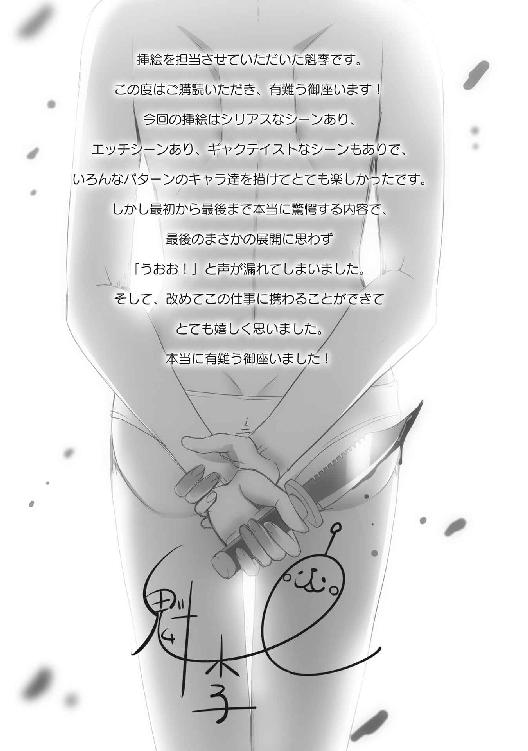
夏は暑さはわかってはいましたが、惜しくも負けました。完全敗北です。
魁李と申します。今回もカバーと挿絵を担当させて頂きました。
今回は特殊な構図が多く、なかなか苦戦しましたが、最後までとても楽しく描かせて頂きました！ 有難う御座いました！
ビギニングノベルズ
極地恋愛２
小説 七色春日
イラスト 魁李
発行 株式会社キルタイムコミュニケーション
〒104-0041 東京都中央区新富1-3-7ヨドコウビル1Ｆ
編集部 TEL 03-3551-6147／FAX 03-3551-6146
販売部 TEL 03-3555-3431／FAX 03-3551-1208
URL http://ktcom.jp/
©Nanairo Kasuga 2015
本書は小説投稿サイト「ノクターンノベルズ」（http://noc.syosetu.com/)に掲載されていたものを、加筆の上書籍化したものです。
※本作品の全部あるいは一部を無断で複製・転載・配信・送信したり、ホームページ上に転載することを禁止します。本作品の内容を無断で改変、改ざん等行うことも禁止します。また、有償・無償にかかわらず本作品を第三者に譲渡することはできません。
※本作品は電子書籍配信用に再編集しております。